Definizioni generali e doveri nell'uso della strada (Parte 1)
In questa prima lezione ci occuperemo di tutte le definizioni stradali, in quanto è fondamentale conoscere bene la terminologia adottata dal nuovo Codice della strada per non incorrere in errori banali. Pertanto il primo argomento che affronteremo è la definizione di strada, partendo proprio da quella fornita dal nuovo Codice della Strada.
La strada
Art. 2 comma 1: «...si definisce “strada” l'area ad uso pubblico destinata alla circolazione dei pedoni, dei veicoli e degli animali.» La strada può essere a senso unico o a doppio senso di circolazione e comprende i marciapiedi, le piste ciclabili e le banchine, come potete vedere dalla figura in alto. Essa può essere suddivisa in più carreggiate se separate da spartitraffico e ognuna a sua volta può essere suddivisa in una o più corsie di marcia.
Come accennato, dunque, ogni parte della strada è destinata alla circolazione di diversi tipi di utenti. Pertanto la zona predisposta ai veicoli e agli animali è la carreggiata, le zone riservate ai pedoni sono le banchine e i marciapiedi, mentre per le biciclette troviamo le piste ciclabili.
Fate dunque molta attenzione all'ultima affermazione, soprattutto alla parte dove è scritto che è la carreggiata ad essere destinata alla circolazione dei veicoli e degli animali. Dunque se all'esame dovesse capitarvi una domanda come questa "La strada è normalmente riservata alla circolazione dei soli veicoli e animali" rispondete "FALSO", in quanto per essere vera il soggetto dovrebbe essere "la carreggiata" e non "la strada".
Quest'ultima infatti è destinata anche ai pedoni e alle bici. Quindi prestate molta attenzione quando rispondete alle domande che la riguardano in quanto la strada non è solo la striscia di asfalto consumato e spesso bucherellato che vedete mentre passeggiate.
Carreggiata
Da quanto già appreso con la definizione di strada, possiamo dunque affermare che la carreggiata fa parte della strada ed è destinata alla circolazione dei veicoli e degli animali. Essa può essere a senso unico di circolazione oppure a doppio senso. La carreggiata comprende le corsie di marcia, le corsie di sorpasso, gli attraversamenti pedonali e gli attraversamenti ciclabili mentre non comprende le piste ciclabili, le banchine, i marciapiedi, le piazzole di sosta e le corsie d'emergenza.

Da notare che gli attraversamenti ciclabili sono cosa ben diversa dalle piste ciclabili. Mentre gli attraversamenti ciclabili tagliano la strada, permettendo il passaggio dei ciclisti da una parte all'altra, la pista ciclabile è quella parte della strada che affianca la carreggiata e permette la circolazione delle biciclette. Stesso discorso vale per gli attraversamenti pedonali che sono cosa diversa dai marciapiedi.
La carreggiata è la parte della strada destinata allo scorrimento dei veicoli pertanto tutte le domande che affermano che è destinata alla sosta risultano essere false. Quindi, se all'esame doveste trovarvi di fronte ad una domanda del genere "La carreggiata è destinata alla sosta di emergenza" non indugiate ma cliccate tranquillamente su "FALSO".
Corsia
La corsia è una parte della carreggiata delimitata da strisce continue (come nella figura soprastante) oppure discontinue, in base a se le strisce possono essere oltrepassate o meno. Le sue dimensioni, che vanno dai 2,75 m ai 3,75 m di larghezza, consentono la circolazione di una
sola fila di veicoli e, pertanto, non possono essere in nessun caso a doppio senso di circolazione. Qualora all'esame dovesse capitarvi una domanda che afferma che su una stessa corsia possono circolare due veicoli affiancati, siano essi motocicli oppure ciclomotori, rispondete "FALSO".
Esistono vari tipi di corsie: la corsia di marcia; la corsia di accelerazione; la corsia di decelerazione; la corsia di sorpasso; la corsia di emergenza; la corsia riservata a particolari categorie di veicoli (esempio i taxi); la corsia specializzata, ossia riservata a quei veicoli che intendono effettuare una determinata manovra, come la sosta, la svolta oppure il sorpasso.
Corsia di accelerazione
La corsia di accelerazione è utilizzata per portare il veicolo ad una velocità tale da non intralciare il normale flusso della circolazione quando ci si immette sulle autostrade o sulle strade extraurbane principali. È facile comprendere che se queste corsie non esistessero entrare in autostrada risulterebbe difficile e alquanto pericoloso.
Questo tipo di corsia può essere presente anche alle uscite delle aree di servizio, appunto per rendere facile l'ingresso in autostrada. Ma state attenti se dovessero capitarvi domande che affermano che sono poste alle entrate o alle uscite delle piazzole di sosta, in quanto ciò non si verifica mai. Ricordate, infine, che sulle corsie di accelerazione, così come sulle corsie di decelerazione, non è possibile sostare ne tantomeno effettuare un sorpasso.
Corsia di decelerazione
Contrariamente a quanto avviene per la corsia di accelerazione quella di decelerazione è utilizzata per rallentare il veicolo al fine di facilitarne l'uscita da una carreggiata a precedenza. Carreggiate di questo tipo sono quelle delle autostrade e delle strade extraurbane principali.
Generalmente la corsia di decelerazione è presente anche all'entrata dell'area di servizio per rallentare il veicolo in tutta sicurezza. Anche in questo caso, così come per le corsie di accelerazione, non si trovano invece all'entrata o all'uscita di una piazzola di sosta.
Banchina
Abbiamo riscontrato che quando si parla di banchina non sempre la gente ha ben chiaro in mente quale parte della strada sia e a cosa serva. La risposta è molto semplice, anche perché tutti l'abbiamo sempre sotto i nostri occhi ma non essendo una zona ben definita pensiamo semplicemente che quella sia una parte di risulta della strada, non denominata e senza un utilizzo specifico.
La banchina, infatti, è quella zona esterna alla carreggiata situata oltre la linea bianca continua di margine e fa parte della strada. Mettiamo il caso che stiate passeggiando lungo uno dei marciapiedi della vostra città, guardate in basso e vedete che oltre il marciapiede c'è un po' di spazio tra il bordo del marciapiede e la striscia bianca continua dipinta sull'asfalto. Congratulazioni, avete appena scoperto cos'è la banchina!
Adesso che sapete cos'è una banchina se al test vi dovesse capitare la domanda "La banchina divide la carreggiata in 2 corsie" non dovete far altro che sorridere e cliccare su "Falso". Ma vediamo cosa si può fare, e cosa non si può fare, sulle banchine. La banchina è riservata esclusivamente ai pedoni e quindi non potete circolare all'interno con un veicolo, nemmeno se è lento e siete in salita, ne tantomeno sostarci.
Marciapiede
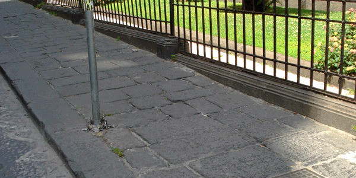
Il marciapiede è quella parte della strada, situata al di fuori della carreggiata, riservata in genere alla circolazione dei pedoni. Pertanto questa parte della strada non è destinata ai veicoli ne
tantomeno alle biciclette. La sosta dei veicoli è consentita solo nel caso vi siano apposite strisce di parcheggio.
Intersezione a raso (o anche incrocio a raso)
L'intersezione a raso è un incrocio fra una strada statale e i binari del tram? Oppure è un passaggio a livello dotato di barriere o semibarriere? In realtà la risposta è molto semplice. L'intersezione a raso è il più comune incrocio che potete vedere passeggiando per le vostre strade cittadine.
Nello specifico l'intersezione a raso è l'intersezione di due o più strade situate allo stesso livello, appunto a raso. L'errore più comune quando vi trovate a rispondere a domande che riguardano questo tipo di incrocio sta nel confonderlo con l'intersezione a livelli sfalsati, ossia dove le strade sono poste ad altezze diverse, ma basterà fare attenzione per evitare errori di questo tipo.
Ricordate infine che attraversando questi incroci, a volte controllati da semaforo, altre volte basati sul diritto di precedenza, per evitare incidenti occorre prestare particolare attenzione ai veicoli provenienti da altre strade.
Intersezione a livelli sfalsati (o anche incroci a livelli sfalsati)
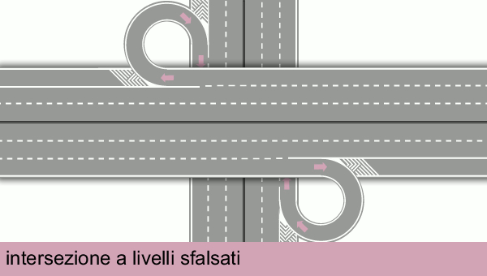
Quante volte viaggiando in autostrada con i vostri genitori vi siete fermati ad un incrocio? Scommetto che la risposta è "MAI". Ognuno con un po' di intuito capirebbe che sarebbe una situazione alquanto pericolosa. Eppure anche le autostrade si incrociano! E allora come intervenire in questi casi? Per risolvere la questione viene adoperata un'intersezione a livelli sfalsati.
L'intersezione a livelli sfalsati, a differenza di quella a raso, è l'intersezione di strade poste ad altezze diverse. Le strade in tal caso vengono collegate tramite apposite rampe, sovrappassi e sottopassi che facilitano la circolazione, escludendo l'incrocio diretto tra i veicoli. Questo tipo di intersezione viene adoperata non solo in autostrada ma in tutti quei casi in cui l'incrocio diretto dei veicoli renderebbe la situazione pericolosa.
Adesso che avete imparato la definizione di strada e di alcuni dei suoi elementi non vi resta che passare alla prossima lezione classificazione strade. Avrete così modo di capire quando una strada può essere definita "autostrada" e quando "strada extraurbana principale". La lezione continuerà con tutta un'altra serie di elementi costitutivi della strada, quali il salvagente, l'isola di traffico, l'attraversamento pedonale ecc.
Definizioni generali e doveri nell'uso della strada (Parte 2)
Com'è andata con la prima lezione? Avete imparato bene cos'è la strada? In questa nuova lezione vi daremo delle definizioni utili per prendere confidenza con gli elementi della strada e con la classificazione delle strade che dovrete percorrere dopo aver superato l'esame di teoria e quello pratico.
Autostrada
Per definizione, l'autostrada è una strada a carreggiate indipendenti separate dallo spartitraffico e recintata lateralmente. Ognuna di esse ha almeno due corsie di marcia ed è fiancheggiata da una corsia di emergenza. È sprovvista di accessi privati o incroci a raso, questi ultimi sostituiti da quelli sfalsati da cui si accede o si esce tramite le corsie di accelerazione o decelerazione.
L'autostrada è contraddistinta dalla segnaletica di colore verde e il limite massimo di velocità è di 130 km/h. Sono escluse dalla circolazione in autostrada tutte quelle vetture che non raggiungono gli 80 km/h, ciclomotori e motocicli di cilindrata inferiore a 150 cm cubi, le macchine agricole e tutti quei veicoli che sono danneggiati o che non hanno il carico sistemato in maniera corretta.
Nelle autostrade non si può invertire il senso di marcia o fermarsi per più di 3 ore nella corsia di emergenza. Inoltre non è consentito chiedere (e concedere) passaggi o trainare altri veicoli. Per accedere occorre ritirare il biglietto al casello, che dovrà essere poi esibito all'uscita per il pagamento. Ma ricordate che è fondamentale non smarrirlo altrimenti pagherete per l'intera tratta.
Strada Extraurbana Principale
La strada extraurbana principale ha carreggiate indipendenti (oppure divise da spartitraffico) e presenta almeno due corsie di marcia. Non vi sono intersezioni a raso, in quanto pericolose, ma solo a livelli sfalsati. Lungo questo tipo di strada vi sono aree di sosta e per l'entrata e l'uscita vengono utilizzate le corsie di accelerazione e quelle di decelerazione.
Nelle strade extraurbane principali il limite massimo di velocità è di 110 km/h e non è concessa la circolazione ad alcune categorie di veicoli, come le biciclette, i quadricicli leggeri e i ciclomotori. Se nel caso delle autostrade la segnaletica è verde, in questo tipo di strade la segnaletica è blu.
Isola Di Traffico
L'isola di traffico è una parte della strada che può essere rialzata (1) o dipinta a raso sul piano stradale con zebrature di colore bianco (2). È esclusa dal traffico veicolare, pertanto non è possibile sostarci sopra né tantomeno passarci con la macchina, ed è delimitata da strisce bianche di raccordo. La sua funzione principale è quella di separare e canalizzare diverse correnti di traffico.
Attraversamento Pedonale
L'attraversamento pedonale, più comunemente noto come "strisce pedonali", è una parte della carreggiata (e di conseguenza anche della strada). È segnalato da strisce bianche parallele sulle quali i pedoni possono vantare il diritto di precedenza rispetto ai veicoli. Al fine di non intralciare il passaggio dei pedoni sulle strisce pedonali, i veicoli non possono sostare né tantomeno fermarsi sopra.
Salvagente
Il salvagente stradale (da non confondere con la ciambella che si porta al mare!) ha la funzione di riparare o far sostare i pedoni che attraversano la strada nei pressi di fermate di mezzi pubblici, agevolando la salita e la discesa dei passeggeri, oppure in corrispondenza di attraversamenti pedonali. Talvolta è rialzato mentre altre volte è opportunamente delimitato e in alcuni casi è segnalato da colonnine a luce gialla fissa.
Ma prima di passare alla prossima definizione vogliamo essere sicuri che abbiate capito bene cos'è il salvagente e dove si trova. Guardate bene la foto in alto, avete presente quella sorta di marciapiede posto al centro della strada? Si quello affianco alle strisce pedonali. Beh, quello è il salvagente stradale.
Area Pedonale
L'area pedonale è una zona destinata esclusivamente al transito dei pedoni. Gli unici veicoli a cui è consentita la circolazione sono i veicoli di emergenza con lampeggiante blu accesso e sirena in funzione, le biciclette e i veicoli al servizio di persone diversamente abili. Se indicato da un pannello integrativo, possono transitare anche altri tipi di veicoli, esempio i veicoli elettrici ad emissione zero.
Zona a traffico limitato
Una zona a traffico limitato è un’area delimitata da appositi segnali stradali di inizio e di fine in cui la circolazione è limitata ai veicoli autorizzati e in cui la circolazione è consentita in determinate fasce orarie. Non è un’area adibita soltanto alla circolazione di ciclomotori e biciclette né tantomeno un’area sempre e comunque esclusa ai veicoli a motore. In quest'area non esistono limiti relativamente all’accesso dei pedoni o al numero di veicoli che possono entrarvi.
Passo Carrabile

Per il Codice della Strada, "il passo carrabile è un accesso ad un’area laterale idonea allo stazionamento di uno o più veicoli". Il passo carrabile, segnalato da un apposito segnale riportante l'ente e il numero di autorizzazione, consente il transito dei veicoli da un'area pubblica, come la strada, ad una privata, come può essere un garage. In corrispondenza del passo carrabile è possibile effettuare la fermata ma non la sosta.
Passaggio a livello
Il passaggio a livello è un attraversamento a raso tra la strada e la linea ferroviaria. È caratterizzato dalla presenza di barriere e semibarriere, luci di colore rosso, dispositivo di segnalazione acustica, dai pannelli distanziometrici e, infine, dalla croce di S. Andrea.
Uso di corsie e carreggiate
Adesso che avete ben appreso tutte le definizioni stradali analizziamo insieme le seguenti strade, gli elementi che le compongono e il modo in cui vengono utilizzate le corsie. I quiz all'esame potrebbero trattare i tre esempi seguenti e, pertanto, siete invitati a prestare la massima attenzione.
Strada a doppio senso di circolazione con quattro corsie
La strada sopra rappresentata è composta da un'unica carreggiata a doppio senso di circolazione suddivisa in quattro corsie, due corsie per senso di marcia. Mentre le corsie esterne sono destinate alla marcia ordinaria quelle interne sono riservate, di norma, alla manovra di sorpasso.
Ma ricordate, se su una strada di questo tipo il sorpasso è consentito, anche se effettuato in curva, l'inversione di marcia non lo è. Vedete infatti quelle due strisce bianche continue al centro della carreggiata? Beh, non possono essere oltrepassate per nessun motivo.
Strada a doppio senso di circolazione con sei corsie
Anche in questo caso la strada sopra rappresentata è composta da un'unica carreggiata, ma mentre nel primo caso eravamo di fronte a una carreggiata con quattro corsie qui troviamo una carreggiata con sei corsie, tre corsie per ogni senso di marcia. Ma vediamo nel dettaglio ogni corsia che ruolo ha e come deve essere utilizzata.
Anche qui, come nell'esempio precedente, le corsie più esterne, ossia quelle alla destra del guidatore, sono dedicate alla marcia ordinaria, mentre le corsie centrali, sempre rispetto al guidatore, e quelle di sinistra sono riservate al sorpasso.
Strada a tre carreggiate e otto corsie
Nell'esempio rappresentato sopra ci troviamo invece di fronte a 3 carreggiate e otto corsie. Mentre le carreggiate laterali sono a senso unico di circolazione, quella interna (ossia quella delimitata dagli spartitraffici raffigurati tramite una linea verde) è a doppio senso di circolazione.
Ricordate che, anche in questo caso, mentre il sorpasso è consentito, anche se effettuato in curva, l'inversione di marcia è assolutamente vietata.
Conclusione sull'argomento "Uso di corsie e carreggiate"
Prima di passare alla prossima lezione vogliamo essere sicuri che le ultime nozioni esposte siano state capite. Ma soprattutto vogliamo essere sicuri che, trovandovi di fronte a qualsiasi altra rappresentazione di una strada, sappiate vedere immediatamente di quante carreggiate è composta.
Vedete la figura in alto? Osservatela bene, la figura a sinistra è l'ultimo esempio di cui abbiamo parlato, ossia la strada a tre carreggiate e otto corsie. La figura a destra è molto simile a quella a sinistra ma in questo caso ci troviamo di fronte a due carreggiate, e non più tre. Ma come fare a riconoscere il numero di carreggiate? La risposta è molto semplice, basta osservare la linea verde, quella rappresentante lo spartitraffico.
Conclusione
A questo punto non vi resta che passare alla prossima lezione dedicata alla classificazione dei veicoli. Una volta imparate tutte le definizioni contenute nella terza lezione confondere un triciclo a motore con un quadriciclo sarà impossibile. Per eventuali dubbi circa le nozioni esposte sopra potete lasciare un commento. Saremo ben lieti di aiutarvi!
Definizioni generali e doveri nell'uso della strada (Parte 3)
Bentornati studenti! In questa nuova lezione affronteremo la definizione e la classificazione dei veicoli secondo le nuove regole della strada. Siete pronti? Allacciamo le cinture, sistemiamo gli specchietti e partiamo per la nostra nuova avventura teorica.
Definizione di veicolo
Per veicolo si intende qualsiasi macchina, circolante su strada, guidata dall'uomo. In questa categoria non rientrano: le macchine per bambini, le quali però devono rispettare alcune caratteristiche come la lunghezza massima di 1,10 m, il sedile monoposto ecc.; le macchine per i disabili, in quanto costituiscono un ausilio medico anche se dotate di motore.
Ciclomotori
I ciclomotori sono quei veicoli che hanno due o tre ruote, un motore termico con cilindrata non superiore a 50 cm³ e raggiungono una velocità massima di 45 km/h. Pertanto non tutti i veicoli a due ruote con motore possono essere definiti ciclomotori. Un esempio in tal senso sono le biciclette con pedalata assistita con motore elettrico dalla potenza massima sino a 0,25 kW, che non vengono classificate come ciclomotori.
Fate attenzione perché nei quiz incontrerete delle domande insidiose! Ricordate, infine, che la revisione per i ciclomotori va effettuata quattro anni dopo la prima immatricolazione e in seguito ogni due anni.
Motocicli
I motocicli sono dei veicoli a due ruote con motore di cilindrata superiore a 50 cm³ (quindi non rientrano in questa categoria ciclomotori, tricicli a motore e quad, ossia quadricicli a motore con carrozzeria aperta). I motocicli possono essere dotati di cambio automatico e sono soggetti a revisione quattro anni dopo la prima immatricolazione e, successivamente, ogni due anni.
E se all'esame dovesse capitarvi una domanda di questo tipo "i motocicli hanno una cilindrata massima di 125 cm³" non esitate a cliccare su "falso", poiché esistono motocicli con cilindrate superiori. Ricordate infine che, ai fini della circolazione, i quadricicli leggeri sono considerati come ciclomotori, e non come motocicli.
Tricicli a motore

I tricicli a motore sono quei veicoli che hanno tre ruote simmetriche e un motore di cilindrata superiore a 50 cm³. Questi veicoli possiedono una velocità massima superiore a 45 km/h.
Questo veicolo non deve essere confuso con la motocarrozzetta che ha le ruote asimmetriche ed è composta da un motociclo e un sidecar.
Tra le domande che vi capiteranno all'esame potrebbe esserci quella che afferma che questo tipo di veicolo può essere condotto senza patente. Non cascateci! I tricicli a motore, come la maggior parte dei veicoli, si possono condurre solo con la patente.
Quadricicli a motore
I quadricicli a motore sono veicoli a 4 ruote con potenza non superiore a 15 kW e si dividono in LEGGERI e NON LEGGERI. I primi, i quadricicli leggeri, hanno una potenza non superiore a 4 kW, se la carrozzeria è aperta (esempio i quad), o a 6 kW, se la carrozzeria è chiusa (esempio le microcar). Questi veicoli possono essere dotati di motore a benzina (con cilindrata non superiore a 50 cm³), diesel o elettrico (microcar) e sono assimilati ai ciclomotori. Pertanto si possono guidare a 14 anni, dopo aver ottenuto la patente AM.
Diverso discorso va fatto per i secondi, ossia i quadricicli non leggeri. Questi hanno una potenza massima sino a 15 kW e bisogna aver compiuto almeno 16 anni e possedere la patente B1 per mettersi alla guida. I quadricicli a motore sono soggetti a revisione periodica ed è vietato modificare o sostituire il motore per aumentare la cilindrata o la velocità.
Autoveicoli

Fanno parte della categoria degli autoveicoli i veicoli a motore con almeno quattro ruote come le autovetture, gli autobus, gli autocarri, le autocaravan (camper), ecc. Ricordate che gli unici veicoli a motore con almeno quattro ruote ad essere esclusi sono i quadricicli.
Detto ciò, se dovesse capitarvi all'esame la domanda che afferma che "un triciclo a motore è un autoveicolo" non sognatevi di rispondere “vero”, in quanto un triciclo a motore non ha quattro ruote bensì tre.
Autovetture
Le autovetture sono autoveicoli a motore con quattro ruote destinati al trasporto di persone ed equipaggiati con non più di nove posti (compreso il conducente). Secondo tale definizione, pertanto, gli autobus non possono essere definiti autovetture poiché hanno più di nove posti.
Stesso discorso vale sia per le autocaravan, che sono adibite non solo al trasporto delle persone ma anche all'alloggio, sia per i veicoli blindati attrezzati per il trasporto di valori. Quindi sia gli autobus che che gli autocaravan appartengono alla categoria degli autoveicoli ma non a quella delle autovetture.
Ricordate, infine, che le autovetture possono avere motore elettrico o termico, a trazione anteriore o posteriore, e che possono trainare carrelli-appendice o rimorchi. La prima revisione deve essere effettuata quattro anni dopo la prima immatricolazione e, in seguito, ogni due anni.
Autocaravan (CAMPER)
Le autocaravan (ovvero i camper) appartengono alla categoria degli autoveicoli e sono attrezzati permanentemente con una carrozzeria speciale che consente il trasporto e l'alloggio delle persone (nel numero indicato sulla carta di circolazione). Sulle autocaravan non si può viaggiare in piedi, neanche per brevi tratti, in quanto molto pericoloso.
Le autocaravan non sono dei rimorchi e non devono essere confuse con gli autoveicoli per lavori stradali o agricoli. Anche le autocaravan, come la maggior parte dei veicoli, vengono revisionate quattro anni dopo la prima immatricolazione e, in seguito, ogni due anni.
Caravan (ROULOTTES)
I caravan (roulottes) sono rimorchi con targa attrezzati per essere adibiti ad alloggio solo con veicolo fermo e non mentre si viaggia. È vietato alloggiare nel caravan mentre si viaggia in
quanto estremamente pericoloso. I caravan, essendo dei rimorchi, non hanno cinture di sicurezza e, quindi, non è vero che i passeggeri possono viaggiarvi solo se le allacciano. Ricordate, ci si può entrare solo quando il veicolo è fermo.
Per ridurre il rischio di ribaltamento in curva è necessario collocare gli oggetti pesanti in basso in modo tale da spostare il baricentro del carico in basso. Inoltre, sempre per lo stesso motivo, è necessario distribuire il carico in maniera equilibrata tra il lato destro e quello sinistro.
Rimorchi e semirimorchi
I rimorchi e i semirimorchi sono veicoli che non hanno motore e sono destinati ad essere trainati da parte degli autoveicoli tramite opportuni sistemi di traino. I rimorchi e i semirimorchi con massa a pieno carico sino a 750 kg vengono definiti leggeri. Hanno un impianto frenante e, non essendo dotati di motore, sono sprovvisti di silenziatore.
Mentre il caravan è un rimorchio, l'autocaravan e l'autosnodato non appartengono a questa categoria, in quanto considerati dal Cds (ossia dal Codice Della Strada) un complesso veicolare unico. La differenza tra il rimorchio e il semirimorchio consiste nel fatto che quest'ultimo, il semirimorchio, scarica solo una parte del proprio peso sul trattore stradale che lo traina, pertanto viene trainato solo a metà.
Macchine agricole e macchine operatrici
Le macchine agricole e le macchine operatrici possono essere semoventi, come nel caso della mietitrebbiatrice, oppure possono essere trainate e possono essere dotate di ruote gommate o cingoli. Quelle semoventi, se attrezzate, possono trasportare al massimo 3 persone (compreso il conducente). Il loro limite di velocità è di 40 km/h, se hanno ruote gommate, o di 15 km/h se sono a cingoli.
Le macchine agricole possono essere dotate di attrezzature per l'esecuzione dei lavori agricoli e, se immatricolate, è ammessa la loro circolazione su strada per il trasferimento e il trasporto di prodotti agricoli. Quelle che non superano i limiti di sagoma e massa si conducono con le patenti di categoria A1, A2, o A, quelle eccezionali invece con la patente B;
Le macchine operatrici pesano fino a 3,5 t e si possono condurre con la patente B. Per quelle eccezionali occorre invece una patente superiore. Un esempio di macchina operatrice è il veicolo sgombraneve.
Non vi resta che passare alla prossima lezione, segnali retroriflettenti sui veicoli, per sapere quali sono i pannelli da apporre sui veicoli e la loro funzione. Buona continuazione!
Definizioni generali e doveri nell'uso della strada (Parte 4)
I pannelli retroriflettenti sui veicoli sono tanti, come il pannello per carichi sporgenti, oppure quello per merci pericolose, o ancora quello per veicoli adibiti al trasporto merci con massa a pieno carico superiore a 3,5 t. Ognuno di voi avrà visto almeno una volta nella vita uno di questi pannelli applicati sul retro di un veicolo. Forse non siete a conoscenza della loro funzione ma probabilmente saprete già della loro esistenza.
Nella scorsa lezione di teoria patente b avete appreso la definizione e classificazione dei veicoli, adesso non ci resta che analizzare ogni singolo pannello. Ma prima vogliamo ricordarvi che l'utilizzo di strisce e pannelli retroriflettenti è fondamentale per comunicare agli altri utenti della strada che è necessario prestare la massima attenzione in presenza di un veicolo su cui sono installati.
Pannello per carichi sporgenti
Il primo che prendiamo in considerazione è il pannello per carichi sporgenti (visibile nella foto in basso), sicuramente tra i pannelli più diffusi in circolazione. Come avrete già capito, questo pannello va applicato ogni qual volta un carico sporge dalla parte posteriore del veicolo, anche se di poco. La sporgenza però non deve superare i 3/10, ossia il 30%, della lunghezza del mezzo di trasporto. Ma facciamo un esempio.

Mettiamo il caso che dobbiate trasportare dei pali di legno con un camion lungo 6 metri. Il 30 % di 6 metri è 1,8 metri e, pertanto, la sporgenza dal camion non dovrà essere maggiore di 1,8 metri. A questo punto sarà necessario applicare il pannello all'estremità del carico, in modo da renderlo ben visibile agli automobilisti che seguiranno il camion.
Pannello per merci pericolose
Qui la questione si fa esplosiva. Chi non ha mai visto questo pannello (visibile nella foto in basso) sul retro di un'autocisterna trasportante carburante mentre circolava in autostrada? Scommetto tutti. In realtà non è usato solo per il carburante ma per tutte le merci pericolose. È possibile capire il tipo di merci trasportate attraverso i numeri riportati sopra.

Il numero riportato sulla prima riga indica il tipo di pericolosità della merce (esempio liquido infiammabile, tossico, radioattivo ecc.), mentre quello riportato sulla seconda riga indica il codice del materiale (esempio acetilene, butano, cloro ecc.) ed è conosciuto anche come numero ONU.
Pannello per veicoli adibiti al trasporto merci con massa a pieno carico superiore a 3,5 t
Questo pannello, visibile nella foto in basso, va applicato nella parte posteriore dei veicoli che trasportano merci con massa a pieno carico superiore a 3,5 tonnellate. L'errore più comune riscontrato durante i quiz consiste nell'affermare che è installato sul retro dei rimorchi, o semirimorchi, con massa a pieno carico superiore a 3,5 t. Niente di più sbagliato!
Qualora infatti si tratti di rimorchi, e non di veicoli, sarà necessario installare un altro pannello, simile per forma e colori utilizzati, il giallo e il rosso, ma con disegno diverso. Infatti se per i veicoli viene utilizzato il pannello con strisce gialle e rosse, per i rimorchi il disegno consiste in un rettangolo giallo con bordo rosso. La differenza è chiaramente visibile nella figura in basso. Quindi prestate la massima attenzione all'esame!

Pannello per rimorchi adibiti al trasporto merci con massa a pieno carico superiore a 3,5 t
Quindi, come già accennato, il pannello retroriflettente visibile nella foto in alto va applicato sul retro di rimorchi, o semirimorchi, con massa a pieno carico superiore a 3,5 tonnellate. Oltre ad essere confuso con il pannello precedente, spesso viene confuso con quello per carichi sporgenti. Non fatevi ingannare, in caso di carico sporgente infatti va utilizzato quello trattato all'inizio della lezione, ossia quello quadrato a strisce bianche e rosse.
Strisce retroriflettenti sui veicoli
Sia che si tratti di veicoli che di rimorchi, qualora trasportino merce con massa a pieno carico superiore alle 3,5 tonnellate, dovranno essere segnalati con strisce posteriori e laterali retroriflettenti. Queste strisce, visibili nella foto sottostante, servono a rendere visibile agli altri utenti della strada la sagoma del veicolo e devono essere di colore bianco o giallo se applicate lateralmente e di colore rosso o giallo se applicate nella parte posteriore.
Segnali di velocità massima
Avete mai guardato bene la parte posteriore di un autobus? Beh se l'avete fatto avrete di certo notato dei piccoli segnali, in genere due, riportanti le velocità massime consentite in autostrada e su strada extraurbana principale. Questi segnali però non compaiono solo sul retro degli autobus ma devono essere installati su tutti quei veicoli di massa superiore a 3,5 tonnellate.
I segnali di velocità massima vanno applicati non solo su veicoli con massa superiore a 3,5 t ma ogni qual volta il veicolo non rispetta i limiti di velocità generali, come avviene ad esempio per i quadricicli non leggeri.
Ricapitolando
I pannelli da apporre sui veicoli per segnalare alcune informazioni agli altri utenti della strada sono sei:
per carichi sporgenti;
per merci pericolose;
per veicoli che trasportano merce di peso superiore a 3,5 tonnellate;
per rimorchi che trasportano merce di peso superiore a 3,5 tonnellate;
strisce retroriflettenti;
segnali di velocità massima.
Vogliamo essere sicuri che all'esame non confondiate un pannello per un altro e, quindi, prestate molta attenzione alla foto in alto cercando di memorizzare perfettamente ognuno di essi e l'uso che ne viene fatto. L'avete osservata bene? Adesso ripetete a memoria quanto avete appreso:
carichi sporgenti: quadrato a strisce bianche e rosse;
merci pericolose: rettangolo arancione con numeri;
ecc.
Avete osservato bene le foto ma non siete sicuri che all'esame ricorderete le differenze? Esercitatevi mentre camminate per la strada. Ogni volta che vi passerà davanti un veicolo su cui sono installati dei segnali cercate di ricordare a cosa corrispondono. Se al momento non lo ricordate non andate nel panico. Appena arrivati a casa accendete il PC e rileggete questa
lezione. Vi basterà fare questo esercizio un paio di volte per non dimenticarli mai più. A questo punto non vi resta che passare alla prossima lezione dedicata ai doveri del conducente.
Nota bene
Le informazioni date in questa quarta lezione riguardano solo le domande del primo argomento. Successivamente, quando affronteremo l'argomento 17, ogni segnale verrà approfondito ulteriormente. Quindi continuate a seguirci!
Definizioni generali e doveri nell'uso della strada (Parte 5)
Nella scorsa lezione abbiamo parlato dei pannelli retroriflettenti sui veicoli, in questa lezione di teoria patente b, invece, analizzeremo i doveri del conducente, come il divieto di spostare la segnaletica stradale, il divieto di gareggiare in velocità ecc. Tutti i doveri del conducente seguono le regole del vivere civile e anche se alcune di queste regole sembrano scontate è sempre meglio ribadirle anche perché potrebbero capitarvi domande a riguardo proprio durante la prova d'esame.
I 6 doveri del conducente
Vietato imbrattare, spostare o rimuovere la segnaletica stradale
Anche se in alcuni casi, come nella foto in basso a destra, i segnali stradali imbrattati possono far sorridere i passanti ricordate che è assolutamente vietato imbrattare, spostare o rimuovere la segnaletica stradale, in quanto ciò può comportare pericolo per gli altri utenti della strada.
Questo divieto, naturalmente, riguarda tutti i segnali stradali, compresi quelli facilmente removibili come i coni stradali e le barriere di delimitazione. E se all'esame dovesse capitarvi una domanda di questo tipo "È consentito spostare la segnaletica stradale, dopo aver avvisato gli organi di polizia" rispondete "Falso", in quanto non rientra tra i vostri compiti.
Vietato lanciare oggetti dal veicolo e sporcare la carreggiata
Anche se lo avrete visto fare molte volte, ricordate che lanciare mozziconi di sigaretta accesi dall'auto è severamente vietato in quanto è molto pericoloso per i veicoli a due ruote che sopraggiungono. Inoltre, in prossimità di boschi o aree verdi questo comportamento sconsiderato del conducente potrebbe causare incendi, quindi non fatelo assolutamente. Se il vostro problema è l'odore della cenere causata dai mozziconi all'interno dell'abitacolo vi basterà acquistare la sabbia profumata per posacenere e il problema sarà risolto.
Inoltre tra i doveri del conducente vi è il divieto di spargere fango o detriti sulle strade con le ruote sporche dei veicoli. Per evitare che ciò accada, uscendo da un sentiero fangoso, o da un cantiere, è necessario pulire le ruote del veicolo e, durante la marcia, bisogna assicurarsi che non cada terriccio sulla carreggiata. Se queste semplici regole non vengono rispettate si può incorrere in una sanzione amministrativa.
Il conducente che si accorge che il suo veicolo perde olio deve compiere tutte le azioni necessarie per evitare pericoli per altri utenti. Nel caso le perdite di olio, o di carburante, siano abbondanti bisogna avvisare immediatamente l'ente proprietario della strada o gli organi di polizia per mettere in sicurezza l'area.
Abbiamo parlato del divieto di lanciare mozziconi di sigarette accesi dal finestrino ma naturalmente tra i doveri del conducente vi è il divieto assoluto di lanciare qualsiasi oggetto dal finestrino, compresa la carta. Quindi, se vi siete appena soffiati il naso con un fazzoletto di carta e non vedete l'ora di sbarazzarvene, resistete. Mettetelo in tasca e aspettate di arrivare a casa prima di gettarlo nella pattumiera.
Divieto di gareggiare in velocità
Partecipare a gare di velocità non autorizzate su aree pubbliche è assolutamente vietato e viene considerato un reato a cui segue la reclusione. Tale divieto non si ferma solo ai conducenti ma è esteso anche a chi scommette sui veicoli che partecipano alle gare. E se qualcuno di voi ha intenzione di diventare il nuovo campione di F1? Meglio recarsi presso un circuito autorizzato!
Quando si viaggia in fila con altri veicoli
Quando si viaggia in fila con altri veicoli è opportuno:
non avvicinarsi troppo al veicolo che precede, mantenendo ugualmente la distanza di sicurezza;
porre attenzione anche in lontananza, per controllare la situazione del traffico;
lasciare liberi gli sbocchi delle strade laterali, per agevolare il traffico.
Ricordate bene questi tre punti, in quanto all'esame potrebbero mettervi in crisi domande come queste:
quando nei centri urbani si viaggia in fila con altri veicoli, è opportuno tenere sempre accese le luci di emergenza;
quando si viaggia in fila con altri veicoli è consentito distrarsi se si è a bassa velocità;
quando si viaggia dietro in fila con altri veicoli, è opportuno spostarsi il più possibile a sinistra, per creare una corsia libera a destra.
Tutte e tre le domande sopra risultano essere false. Anche se bisogna prestare la massima attenzione procedendo in fila con altri veicoli, il conducente non deve esagerare facendo cose assurde come accendere le luci d'emergenza oppure spostarsi a sinistra per creare una nuova corsia. E se si viaggia dietro ad un veicolo che solleva polvere? Anche in condizioni di scarsa visibilità, non tentate di sorpassarlo subito. Cercate piuttosto di mantenere una certa distanza di sicurezza!
Parti della strada da lasciare libere in caso di traffico intenso
Quindi, come già accennato sopra, quando si viaggia in fila con altri veicoli è opportuno lasciare liberi gli sbocchi delle strade laterali per agevolare il traffico. In realtà in situazione di traffico intenso, oltre agli sbocchi delle strade laterali, è opportuno lasciare libere tutte le immissioni stradali:
incroci, confluenze, ingressi dei parcheggi, ecc.;
gli attraversamenti pedonali e quelli ciclabili;
i passaggi a livello e i binari del tram.
Questa regola non vale invece per i cavalcavia, i sottovia, le gallerie e gli ingressi delle abitazioni private. E se all'esame dovesse capitarvi la domanda "Bisogna lasciare liberi solo gli incroci regolati da semaforo in caso di formazione di code di veicoli" rispondete "falso" in quanto, in caso di traffico, bisogna lasciare liberi tutti gli incroci, non solo quelli regolati da semaforo.
Entrando in un centro abitato
In un centro abitato bisogna essere più attenti, prudenti e tolleranti, a causa del maggior numero di utenti che interagiscono nell'ambiente urbano. Pedoni e ciclisti, infatti, si mescolano maggiormente con il traffico motorizzato. I motivi per distrarsi possono aumentare e, quindi, bisogna continuare a mantenere la concentrazione alla guida alta, tenendo conto che può cambiare spesso la precedenza agli incroci e che il flusso della circolazione viene spesso intralciato o interrotto da veicoli che sono fermi, che partono o che cambiano direzione.
Vari comportamenti da tenere sulla strada
Alla guida di un veicolo, per evitare di perdere aderenza, il conducente deve procedere a bassa velocità su strade ricoperte da brecciolino e sopra le pozzanghere. Così eviterete anche di far arrabbiare i pedoni bagnandoli con gli spruzzi d'acqua causati dal passaggio delle ruote :)
Ricapitolando
Tutte le regole elencate fino ad ora fanno parte di quei comportamenti che il vivere civile e il buon senso dettano. Quindi se all'esame dovessero capitarvi domande che riguardano queste norme e non ricordate la risposta non fatevi prendere dal panico. Rifletteteci su e vedrete che la risposta sarà scontata! Adesso che avete appreso tutti i doveri del conducente non vi resta che passare alla prossima lezione: comportamenti da tenere verso gli altri utenti della strada.
Definizioni generali e doveri nell'uso della strada (Parte 6)
Se nella scorsa lezione abbiamo parlato dei doveri del conducente, adesso non ci resta che parlare dei comportamenti da tenere verso gli altri utenti della strada per poter concludere il primo argomento. Ma ricordate: le regole che vi daremo non vi serviranno solo a superare l'esame ma vi aiuteranno soprattutto quando sarete alla guida. Quindi fatene tesoro!
Quante volte in macchina con altre persone avete assistito a scene in cui il conducente si presentava intollerante verso gli altri automobilisti? Casomai si trovava ad un incrocio e anche se aveva la precedenza non gli è stata concessa. Là per là avete pensato che il conducente che era in macchina con voi avesse ragione ad arrabbiarsi, ma aprite bene le orecchie: avevate torto marcio!
Comportamenti da tenere verso gli altri utenti della strada
Il conducente di un veicolo, infatti, oltre che rispettare le norme specifiche della circolazione, deve tenere un rapporto corretto e deve essere tollerante e paziente verso gli altri utenti della strada, anche in caso di rallentamento della circolazione. Così come il diritto di precedenza non autorizza ad attraversare l'incrocio senza prudenza.
Qualora il conducente del veicolo avverta il dubbio che non gli venga concessa la precedenza deve usare la massima prudenza, non pretendendo di passare lo stesso per primo. Il conducente di un veicolo è, infatti, tenuto a tutelare la propria e l'altrui sicurezza, cercando di prevedere il comportamento degli altri utenti. Tra i suoi doveri, inoltre, vi è il rispetto degli agenti del traffico, anche se non sono in divisa, collaborando con essi se necessario.
Ricordate, infine, che guidare veicoli potenti o di grandi dimensioni non autorizza a non rispettare gli altri, causandone insofferenza. Quindi tutte le domande che affermano il contrario, come "Il conducente di un veicolo può approfittare della potenza del proprio veicolo per non dare la precedenza a chi spetta", risultano false.
Comportamenti da tenere verso pedoni, ciclisti e motociclisti
Mettiamo il caso che stiate svolgendo l'esame di pratica della patente b. Durante l'esame avete svolto tutte le richieste dell'esaminatore alla perfezione, partenza perfetta, parcheggio in retromarcia come se guidaste da anni e avete sempre concesso la precedenza in modo corretto. A questo punto l'esaminatore pensa che ciò possa bastare, così vi chiede di parcheggiare davanti alla scuola guida da dove è iniziato l'esame. Nella vostra testa pensate: ok, è fatta, sono un patentato! Ma nell'aprire lo sportello, presi anche dall'euforia del momento, non controllate se sopraggiungono ciclisti o motociclisti.
Questo errore finale è molto grave in quanto pedoni, ciclisti e motociclisti se coinvolti in un incidente, anche a bassa velocità, potrebbero riportare gravi problemi fisici. Quindi non stupitevi se l'esaminatore dovesse cambiare idea decidendo che non siete ancora pronti per diventare patentati! Naturalmente questo comportamento è da tenere a mente non solo dopo aver posteggiato l'auto ma anche durante la guida, controllando frequentemente nello specchietto retrovisore che non sopraggiunga un ciclista o un motociclista.
Tenete conto, però, che i montanti interni degli autoveicoli condizionano la visibilità, riducendo la possibilità di vedere un ciclista o un motociclista. Ma cosa sono i montanti? I montanti, visibili nella foto in alto, sono gli elementi verticali che sostengono il tetto della vettura.
Comportamenti da evitare alla guida di un motociclo
Ricordate quando abbiamo detto che guidare veicoli potenti o di grandi dimensioni non autorizza a non rispettare gli altri? Bene, lo stesso vale per i veicoli piccoli, come i motocicli. Infatti il conducente di un motociclo potrebbe pensare di sfruttare le piccole dimensioni del suo veicolo per avvantaggiarsi ad esempio al semaforo, sorpassando velocemente i veicoli fermi.
Ma dovete sapere che fare lo slalom, ossia procedere a zig-zag, tra i veicoli fermi al semaforo è assolutamente vietato! Così come è vietato parcheggiare il motociclo sul marciapiede anche se non vi sono appositi spazi di posteggio, oppure circolare sul marciapiede se il traffico sulla carreggiata è bloccato. E se dovete portare il vostro cane dal veterinario con il motociclo? Dovete sapere che il conducente di veicolo a due ruote può circolare portando con sé un animale domestico, se custodito in apposita gabbia, purché non sia sporgente di oltre 50 centimetri.
Comportamenti da tenere verso gli utenti deboli della strada
Parlare di utenti deboli potrebbe creare non poca confusione. Ma come fate a sapere se avete di fronte un utente debole della strada? Non preoccupatevi, non vi sarà richiesto di fargli fare dei pesi per stabilirlo! In realtà gli utenti deboli sono:
i pedoni;
i ciclisti;
le persone anziane;
i bambini;
le persone diversamente abili;
le persone munite di bastone bianco (ossia i non vedenti);
le persone munite di bastone bianco-rosso (ossia i sordociechi);
i conducenti che dimostrano una guida incerta;
le donne in gravidanza o che spingono una carrozzina per bambini;
tutti coloro che hanno scarsa capacità di movimento.
Adesso che abbiamo chiarito chi sono gli utenti deboli della strada, ricordate che nei loro confronti bisogna usare maggiore prudenza. Anche perché una volta scesi dalla vostra vettura diventerete anche voi pedoni, ossia utenti deboli della strada, e pretenderete che i conducenti usino maggiore prudenza nei vostri riguardi. Ma vediamo nel dettaglio come bisogna comportarsi in certe occasioni.
Comportamenti da tenere verso persone munite di bastone bianco (non vedenti) o bianco-rosso (sordociechi)
Le persone munite di bastone bianco, ossia i non vedenti, e le persone munite di bastone bianco-rosso, ossia i sordociechi, rientrano tra le persone diversamente abili, pertanto sono tra gli utenti deboli della strada. E, quindi, come abbiamo detto poc'anzi, nei loro riguardi bisogna usare maggiore prudenza.
In particolare il conducente deve fermarsi e dare la precedenza al pedone non vedente (con il bastone bianco), oppure al pedone sordocieco (con il bastone bianco-rosso), che attraversa la strada, anche se fuori dalle strisce pedonali e non è accompagnato da un cane guida. Ma ricordate: evitate di frenare bruscamente per non spaventarlo.
Comportamenti da tenere verso donne in gravidanza o che spingono una carrozzina per bambini
Bisogna usare maggiore prudenza nei confronti delle donne in stato di gravidanza e dei pedoni che spingono una carrozzina per bambini, consentendo di attraversare la strada senza mettergli fretta e senza avvicinarsi troppo con il veicolo, per evitare di spaventarli.
Ricordiamo, inoltre, che quando si parcheggia un veicolo è vietato ostruire eventuali scivoli del marciapiede per non impedire il passaggio di pedoni che spingono una carrozzina per bambini. Questa regola vale sempre, 24 ore su 24 e per 365 giorni all'anno. Quindi se all'esame dovesse capitarvi la domanda "È consentito posteggiare un veicolo davanti agli scivoli del marciapiede solo dalle ore 22.00 alle ore 8.00" cliccate tranquillamente su "falso".
Comportamenti da tenere verso le persone anziane
Come abbiamo detto poc'anzi anche le persone anziane appartengono alla categoria degli utenti deboli della strada e quindi bisogna usare maggiore prudenza nei loro confronti. In particolare, quando attraversano la carreggiata, bisogna tenere presente che:
potrebbero non fare adeguata attenzione ai veicoli;
potrebbero fermarsi improvvisamente al centro della strada;
potrebbero non guardare né a destra, né a sinistra;
data la loro età, non reagiscono prontamente alle situazioni di pericolo.
Inoltre, le capacità visive e uditive delle persone anziane non sono più eccellenti e potrebbero valutare male la velocità dei veicoli che sopraggiungono. Quindi, mentre attraversano la carreggiata, non bisogna avvicinarsi troppo con il veicolo, per evitare che si sentano minacciati e reagiscano con movimenti pericolosi.
Comportamenti da tenere verso i pedoni che attraversano ad un semaforo
Mentre siete alla guida dovete sempre tenere a mente che la sicurezza viene prima di tutto e che i pedoni se coinvolti in un incidente, anche a bassa velocità, potrebbero riportare gravi problemi fisici. Quindi prima di impegnare un incrocio, dopo che è scattata la luce verde del semaforo, il conducente deve attendere che i pedoni abbiano finito di attraversare la strada, per non rischiare un incidente.
Tra i pedoni che attraversano ad un semaforo quelli a cui bisogna prestare maggiore attenzione sono i bambini, in quanto:
potrebbero attraversare improvvisamente la strada appena la luce del semaforo veicolare passa dal verde al giallo;
potrebbero attraversare velocemente la strada anche con il rosso, ritenendo che duri troppo;
può accadere che si spingano a vicenda, finendo sulla carreggiata.
Comportamenti da tenere quando pedoni o ciclisti occupano la carreggiata
Il conducente che intende sorpassare ciclisti o pedoni che occupano la carreggiata deve usare molta prudenza, mantenendo un'adeguata distanza di sicurezza laterale. Nel caso non sia possibile rispettare una distanza laterale sufficiente non è prudente sorpassarli.
Infine ricordate che, nel caso vi troviate su una strada extraurbana occupata da ciclisti o pedoni, è consigliabile suonare il clacson prima di sorpassarli. Un'altra caratteristica da tener presente prima di sorpassare un ciclista, su qualunque strada e non solo su strade extraurbane, è che la sua marcia può avvenire con leggeri sbandamenti, quindi è necessario mantenere un'adeguata distanza laterale di sicurezza.
Comportamenti da tenere nelle vicinanze di un attraversamento pedonale
Innanzitutto occorre precisare che bisogna prestare sempre molta attenzione quando ci si avvicina ad un attraversamento pedonale. In particolare, in vicinanza di un attraversamento pedonale, il conducente deve considerare che il pedone, nell'attraversare la strada, può diventare insicuro e ritornare improvvisamente indietro oppure potrebbe fermarsi improvvisamente sulle strisce dell'attraversamento pedonale.
Inoltre occorre considerare che i veicoli parcheggiati in prossimità delle strisce impediscono la visuale dei pedoni, in particolar modo dei bambini, i quali potrebbero sbucare all'improvviso davanti al veicolo. Quindi occorre procedere lentamente per potersi fermare in tempo se dovesse accadere questa eventualità.
Comportamenti da tenere in vicinanza delle piazzole di fermata di autobus per scolari
Tutti siamo stati bambini e, quindi, sappiamo bene come può essere imprevedibile il loro comportamento. Questo fattore deve essere preso in considerazione dal conducente che si appresta ad avvicinarsi ad una piazzola di fermata di autobus per scolari. Pertanto occorre in questa circostanza essere prudenti, preparandosi a frenare nel caso in cui dei bambini attraversino improvvisamente la strada.
Se poi alla fermata è presente lo scuolabus, anche se è fermo, bisogna rallentare ulteriormente, in quanto potrebbe impedire al conducente la visuale dei bambini. In particolare, bisogna prepararsi a frenare nel caso i bambini attraversino di corsa la strada per salire sullo scuolabus o ancora nel caso i bambini scendano dall'autobus senza fare attenzione ai veicoli che sopraggiungono.
Comportamenti da tenere in vicinanza di un posteggio riservato ai taxi
Così come avviene in vicinanza delle piazzole di fermata di autobus per scolari, anche in vicinanza di un posteggio riservato ai taxi occorre fare attenzione, in quanto i pedoni potrebbero attraversare la strada senza guardare. Bisogna, in particolar modo, stare attenti ai pedoni che salgono e scendono dal taxi, rallentando e preparandosi a fermarsi se necessario.
Ricordiamo, infine, che il conducente di un veicolo diverso dai taxi non può sostare nei posteggi riservati ai taxi. E se all'esame dovesse capitarvi la domanda "Il conducente di un veicolo diverso dai taxi può sostare nei posteggi riservati ai taxi dalle ore 20.00 alle ore 8.00" rispondete pure su "falso", in quanto questo limite è valido sempre, 24 ore su 24 e per 365 giorni l'anno.
Ricapitolando
Ok, lo sappiamo, questa lezione è stata un po' lunga e adesso vi sembra che non potrete ricordare tutto ciò all'esame, ma non spaventatevi! In realtà le cose da ricordare non sono molte. L'importante è memorizzare bene chi sono gli utenti deboli della strada, quali sono i comportamenti da tenere verso di loro e quali i posti dove fare più attenzione (attraversamento pedonale, piazzola di fermata di autobus per scolari ecc.).
Adesso non ci resta che dirvi: congratulazioni... avete appena concluso il primo argomento "definizioni generali e doveri nell'uso della strada"! Non vi resta che allenarvi con i Quiz su definizioni generali e doveri nell'uso della strada prima di passare alla prossima lezione sui Segnali di Pericolo. Nel caso qualcosa non vi sia molto chiaro potete commentare, esponendo i vostri dubbi, sotto la lezione di interesse. Saremo ben lieti di aiutarvi!
Segnali di pericolo (Parte 1)
Adesso che avete ben compreso l'argomento definizioni generali e doveri nell'uso della strada possiamo passare alla spiegazione dei Segnali di Pericolo. Innanzitutto occorre specificare che è possibile riconoscere il tipo di segnale che avete di fronte (pericolo, divieto, obbligo ecc.) semplicemente osservandone la forma e il colore. E questo è un grande aiuto!
Immaginate se ognuno dei cartelli stradali avesse una forma e un colore diverso dagli altri. Sarebbe stato difficilissimo, se non impossibile, ricordarseli tutti! Non credete? Nel caso del segnale di pericolo è molto facile riconoscerlo. Si tratta, infatti, di un segnale a forma triangolare con uno dei vertici verso l'alto, a sfondo bianco o giallo e con il bordo rosso, come quelli mostrati nella foto in basso.
A questo punto vi starete chiedendo: ma che differenza passa tra i due segnali rappresentati nella foto in alto? La risposta è semplicissima ed è valida per tutti i segnali. Mentre il primo segnale di pericolo, quello a sfondo bianco, è un segnale definitivo (ossia sempre valido), quello a sfondo giallo è un segnale di carattere temporaneo ed è collocato presso un cantiere stradale.
Chiarito ciò, prima di passare all'analisi di ogni singolo segnale di pericolo, è bene che sappiate che generalmente il segnale di pericolo è posto a circa 150 metri dal pericolo segnalato. Sempre che sotto non sia apposto il pannello integrativo di distanza, che appunto indica la distanza dal pannello al pericolo segnalato. È importante però non confondere il pannello di distanza con quello di estesa.
Se infatti il primo indica la distanza dal pannello al pericolo segnalato, il secondo, quello di estesa, indica la lunghezza del tratto stradale pericoloso (come visibile nella figura in alto). I due pannelli sono molto simili tra loro ma non è difficile distinguerli. Quest'ultimo infatti, ossia quello di estesa, a differenza del pannello di distanza presenta ai lati due frecce rivolte verso l'altro.
Segnali di: Strada deformata, Dosso e Cunetta
Iniziamo la nostra analisi partendo da questi 3 segnali, quelli di strada deformata, dosso e cunetta, in quanto visivamente molto simili tra loro (come potete vedere dalla foto in alto). Ma vediamo insieme quali sono le differenze. Il primo segnale, ossia quello di strada deformata, preannuncia una strada in cattivo stato, deformata oppure dissestata, ossia con pavimentazione (o fondo) irregolare.
In queste condizioni il pericolo maggiore consiste nello sbandamento sia del veicolo che si sta guidando che quello dei veicoli che provengono dal senso opposto. Occorre, pertanto, prestare
maggiore attenzione alla guida tenendo saldamente il volante e moderando la velocità, soprattutto se si traina un rimorchio. Moderare la velocità è necessario anche per evitare eccessive sollecitazioni e danni alle sospensioni, viste le particolari condizioni del fondo stradale.
Prima di parlare del secondo segnale, quello di pericolo dosso, è fondamentale capire bene che cosa si intende per dosso (visibile nella foto in basso). I dossi stradali possono essere sia artificiali, utilizzati per rallentare la velocità dei veicoli nei centri abitati, che naturali. Se un veicolo prova, infatti, a superare un dosso a una velocità superiore a quella consentita in quel tratto stradale subirà degli scossoni.
Ma vediamo insieme cosa fare quando si avvista il segnale di dosso. Innanzitutto bisogna considerare che siamo in prossimità di un tratto di strada pericoloso, in quanto la variazione di pendenza della strada, che consiste in una salita seguita da una discesa, ne limita la visibilità.
Quindi la prima cosa da fare è moderare la velocità. Vista la scarsa visibilità ricordate che, oltre a ridurre la velocità, sul dosso sono vietati: il sorpasso sul tratto in salita; l'inversione di marcia; la sosta; la fermata; la retromarcia. Il sorpasso può essere effettuato sul tratto in salita solo se vi trovate su una strada a senso unico oppure su una strada a doppio senso di circolazione con almeno due corsie per senso di marcia.
Se, dunque, vi trovate su una strada a doppio senso di circolazione con solo due corsie (ossia una corsia per senso di marcia) dovete diminuire la velocità del veicolo e spostarvi il più possibile vicino al margine destro, ricordandovi che il sorpasso è vietato sul tratto in salita del dosso, a causa della scarsa visibilità.
Passiamo, dunque, al segnale di cunetta. Anche in questo caso prima di parlare del segnale è bene che capiate cos'è una cunetta. La cunetta è, molto semplicemente, un avvallamento della strada, ossia un tratto di strada in discesa seguito da uno in salita. Vista la particolare conformazione questo tratto di strada potrebbe allagarsi in caso di forti piogge.
Ma vediamo i comportamenti da adottare se doveste trovarvi in presenza del segnale di cunetta. Come abbiamo già detto, questo tratto di strada potrebbe allagarsi in caso di forti piogge e quindi è necessario prevedere la possibilità di accumulo di acqua, di fango e detriti nella cunetta. Ricordate, infine, che in prossimità di una cunetta è necessario moderare la velocità e tenere il volante con presa più sicura, per mantenere il controllo del veicolo e per evitare danni alle sospensioni.
Curva pericolosa a Destra e a Sinistra, Doppia curva pericolosa, la prima a Destra e la prima a Sinistra
Passiamo, dunque, ai segnali di curva pericolosa a destra, curva pericolosa a sinistra, doppia curva pericolosa, la prima a destra, e doppia curva pericolosa, la prima a sinistra, visibili nella foto in alto. Questi 4 segnali sono posti prima di un tratto di strada pericoloso a causa della ridotta visibilità e quindi è necessario moderare la velocità per potersi arrestare in caso di un ostacolo improvviso.
Questi segnali possono essere integrati con il pannello riportante la scritta TORNANTE. Un tornante è, molto semplicemente, una curva prossima alla semicirconferenza, ossia con un angolo di curvatura prossimo ai 180°(simile ad un'inversione a U, per intenderci). Questo tipo di curva è molto frequente in montagna, quindi fate attenzione!
Ma vediamo nel dettaglio i comportamenti da adottare nel caso avvistiate uno di questi segnali. Innanzitutto, se il segnale è posto su una strada a doppio senso di circolazione e con due sole corsie, è necessario circolare il più possibile vicino al margine destro, regolando la velocità in relazione alla visibilità e al raggio della curva.
Se poi la strada è bagnata, oppure state circolando con il ruotino (ossia la ruota di soccorso), è necessario percorrere la curva con più attenzione e procedere ad andatura particolarmente moderata. Viste le particolari condizioni il sorpasso, la sosta, l'inversione di marcia e la
retromarcia sono vietati. Il sorpasso è ammesso solo se la curva si trova su una strada a senso unico oppure a doppio senso con 4 corsie (2 per senso di marcia).
Passaggio a livello con barriere o semibarriere e Passaggio a livello senza barriere
Il primo segnale che vedete nella foto in alto preannuncia un attraversamento ferroviario protetto da barriere o semibarriere, qualunque sia il numero dei binari, e si trova di norma a 150 metri prima del passaggio a livello. Dopo questo segnale è possibile trovare un dispositivo acustico che avverte della chiusura delle barriere o delle semibarriere. Se ci sono le barriere è installato anche un dispositivo a luce rossa fissa, mentre se ci sono le semibarriere è installato un dispositivo a luci rosse lampeggianti.
Quindi, in sostanza, cosa bisogna fare in presenza del segnale raffigurato? Innanzitutto è necessario moderare la velocità per essere pronti ad arrestarsi se le barriere sono chiuse. Nel caso siano in funzione le due luci rosse lampeggianti oppure il dispositivo acustico che avverte della chiusura delle barriere è necessario arrestarsi.
Per ovvi motivi di sicurezza, nel caso il traffico intenso impedisca di sgomberare il passaggio a livello non è consentito impegnarlo. E se il veicolo dovesse fermarsi per avaria sui binari? Il conducente deve adottare ogni iniziativa utile al fine di evitare incidenti.
Il secondo segnale che vedete nella foto in alto, invece, preannuncia un attraversamento ferroviario a livello senza barriere ed è posto, di norma, a 150 metri dai binari, integrato dal relativo pannello distanziometrico a tre barre rosse. Dopo questo segnale e prima dei binari è installato il segnale CROCE DI S. ANDREA, se la linea ferroviaria ha un solo binario, oppure il segnale DOPPIA CROCE DI S. ANDREA, se ha più di un binario.
Ma vediamo quali sono i comportamenti da adottare nel caso doveste trovarvi presso un passaggio a livello senza barriere. Innanzitutto è necessario usare la massima prudenza,
rallentando, in relazione alla visibilità della linea ferroviaria per potere, eventualmente, arrestare il veicolo prima dell'attraversamento ferroviario.
È, infatti, obbligatorio fermarsi se ci sono due luci rosse lampeggianti accese, il dispositivo acustico in funzione oppure i cavalletti a strisce bianche e rosse. Infine, prima di attraversare, è necessario assicurarsi che non ci siano treni in arrivo sia da destra che da sinistra.
Croce di Sant'Andrea e Doppia croce di Sant'Andrea
Il primo segnale visibile nella foto in alto, ossia la CROCE DI SANT'ANDREA, è posto nelle immediate vicinanze di un attraversamento ferroviario senza barriere e indica che la sede ferroviaria ha un solo binario.
Questo segnale è localizzato sulla strada dopo il segnale PASSAGGIO A LIVELLO SENZA BARRIERE, nelle immediate vicinanze del binario, e può essere disposto sia in senso orizzontale che in senso verticale. Subito sotto la Croce di Sant'Andrea vi sono due luci rosse che lampeggiano alternativamente quando sta per sopraggiungere un treno.
Anche il secondo segnale visibile in foto, ossia la DOPPIA CROCE DI SANT'ANDREA, è posto nelle immediate vicinanze di un attraversamento ferroviario a livello senza barriere ma, a differenza del primo, indica che la linea ferroviaria ha più di un binario.
Questo segnale impone di arrestarsi entro la striscia di arresto se è in arrivo il treno e invita a fare attenzione, prima di attraversare, perché potrebbe transitare più di un treno. In alcuni casi è abbinato al segnale di FERMARSI E DARE PRECEDENZA (ossia lo STOP) e si trova dopo il segnale passaggio a livello senza barriere e i pannelli distanziometrici a barre rosse, di cui stiamo per parlare.
Pannelli Distanziometrici
I pannelli distanziometrici (visibili nella foto in alto) sono posti prima di qualsiasi tipo di passaggio a livello, ossia prima di un passaggio a livello senza barriere, con barriere e con semibarriere, e servono ad indicare che ci si sta avvicinando al passaggio a livello.
Il pannello con tre barre oblique rosse è il primo dei pannelli che si incontra ed è posto, di norma, a 150 metri dall'attraversamento ferroviario. A 100 metri troviamo invece il pannello con due barre oblique rosse, e, infine, a 50 metri troviamo il pannello con una sola barra obliqua rossa. Nel caso di attraversamento ferroviario senza barriere, questi pannelli sono posti prima della CROCE DI SANT'ANDREA.
Conclusione
Siete, dunque, giunti alla fine della prima di tre lezioni sui Segnali di Pericolo. Abbiamo ritenuto utile, visti i tanti segnali, dividere l'argomento in tre parti, giusto per farvi riprendere fiato ;) Quindi, a questo punto, non vi resta che passare alla seconda lezione sui Segnali di Pericolo.
Segnali di pericolo (Parte 2)
Continuiamo la Teoria Patente con la seconda delle tre lezioni sui Segnali di Pericolo. Vi ricordiamo che essendo tanti i cartelli stradali in questione abbiamo deciso di dividere l'argomento in tre parti, giusto per permettervi di prendere fiato tra una lezione e l'altra, e magari anche un buon caffè!
Segnale di Attraversamento Tranviario
Il primo segnale che andiamo ad analizzare è quello visibile nella foto in alto, ossia il Segnale di Attraversamento Tranviario. Questo cartello stradale si può trovare sia fuori che dentro i centri abitati e preannuncia una linea tranviaria non regolata da semafori. Pertanto è necessario moderare la velocità e prestare maggiore attenzione per non intralciare la marcia del tram.
Ma vediamo in dettaglio ciò che è ammesso e ciò che non lo è in presenza di questo segnale. Innanzitutto dovete sapere che questo è uno dei pochi casi in cui il sorpasso a destra è consentito. Ma per essere ammesso il tram deve essere in marcia e deve esserci lo spazio necessario ad effettuare la manovra, oppure se il tram è fermo al centro della strada, per la salita o la discesa dei passeggeri, deve esserci l'apposito salvagente.
Infatti una delle cose più importanti da fare se avvistate questo cartello è prestare attenzione ai pedoni presenti alla fermata del tram. Un'altra cosa fondamentale da tenere a mente per salvaguardare la vostra e l'altrui sicurezza è considerare che il tram necessita di una distanza di arresto maggiore rispetto a quella degli autoveicoli.
Anche marciare sui binari è possibile, ma senza creare intralcio alla marcia del tram e considerando che le ruote del veicolo possono diminuire di aderenza se si frena sui binari. Su questo segnale abbiamo detto tutto e quindi non ci resta che passare ai prossimi due.
Segnali di: Attraversamento Pedonale e Attraversamento Ciclabile
Il segnale di Attraversamento Pedonale, visibile in alto, preannuncia appunto un attraversamento pedonale. Per chi non dovesse ricordare cos'è un attraversamento pedonale vi ricordiamo che ne abbiamo parlato nella seconda lezione: Classificazione strade. Questo cartello può trovarsi sia nei centri abitati che su strade extraurbane ed è posto, di norma, a 150 metri dall'attraversamento.
Ma vediamo cosa dovete fare, e cosa no, se avvistate questo cartello. Innanzitutto dovete rallentare, per essere pronti a fermarvi se ci sono pedoni che attraversano la carreggiata e per evitare di tamponare i veicoli che si fermano a dare la precedenza. Nel caso incrociate pedoni che attraversano sulle strisce dovete dargli la precedenza, non farlo comporta la sottrazione dei punti dalla patente. Tra le azioni non ammesse troviamo: sorpassare un veicolo che rallenta per far attraversare i pedoni, la sosta e la fermata sopra le strisce pedonali.
Passiamo dunque al segnale di Attraversamento Ciclabile, che, come avrete già capito, preannuncia un attraversamento ciclabile (visibile nella foto in alto), contraddistinto dagli appositi segni sulla carreggiata. Questo segnale è posto, di norma, 150 metri prima dell'attraversamento ciclabile e quindi preannuncia l'approssimarsi di un luogo dal quale possono provenire ciclisti.
Dunque in caso avvistiate questo cartello dovete moderare la velocità ed essere pronti ad arrestarvi, se necessario, per dare la precedenza ai ciclisti che attraversano. Qualora il veicolo che vi precede si arresti per dare precedenza ai ciclisti non vi è consentito in alcun modo sorpassarlo, per non costituire pericolo agli altri.
Segnali di: Discesa pericolosa con pendenza del 10% e Salita ripida con pendenza del 10%
I due segnali visibili in alto, ossia quelli di Discesa pericolosa con pendenza del 10% e Salita ripida con pendenza del 10%, sono molto simili tra loro e quindi è molto facile confonderli. Ma ciò non deve assolutamente succedere, soprattutto in sede d'esame, quindi guardate attentamente la foto. Per capire se è rappresentata una discesa oppure una salita basta guardare il segnale da sinistra a destra. Vi basterà ricordare questa semplice cosa per distinguere facilmente i due segnali.
Ma passiamo ad analizzare i comportamenti da adottare se avvistate uno dei due. Il primo segnale in alto preannuncia una discesa particolarmente pericolosa e ne specifica la pendenza. Quindi bisogna considerare che su quel tratto di strada lo spazio di frenatura del veicolo aumenta.
L'unica cosa da fare pertanto è moderare la velocità, per evitare di tamponare i veicoli che procedono più lentamente, e inserire una marcia bassa, in modo da sfruttare adeguatamente l'azione frenante del motore. È fondamentale, infatti, evitare l'uso prolungato dei freni per non surriscaldarli. Ricordate, infine, di usare molta prudenza soprattutto se la strada è bagnata.
Passiamo dunque al secondo segnale visibile nella foto in alto. Quest'ultimo è posto prima di una salita ripida da percorrere con particolare prudenza e ne specifica la pendenza. Anche in questo caso è necessario inserire una marcia adeguatamente bassa.
Segnali di: Strettoia simmetrica, Strettoia asimmetrica a sinistra e Strettoia asimmetrica a destra
Tutti e tre i segnali visibili nella foto in alto preannunciano una strettoia con probabili difficoltà di incrocio con i veicoli provenienti dal senso opposto. Quindi se avvistate uno dei tre segnali dovete moderare la velocità e, se occorre, fermarvi. Se, invece, gli stessi segnali hanno lo fondo giallo sono collocati in presenza di un cantiere stradale che riduce la larghezza della carreggiata. Questi gli aspetti che hanno in comune i tre segnali raffigurati. Ma in cosa consistono le differenze?
La risposta è semplicissima. Mentre il primo segnale indica un restringimento della carreggiata su entrambi i lati, il secondo segnale indica un restringimento solo sul lato sinistro mentre il terzo solo sul lato destro. Questi restringimenti possono essere causati da muretti oppure da ostacoli fissi, in ogni caso è bene stare sull'attenti!
Ricordiamo, infine, che dopo il segnale di Strettoia simmetrica può trovarsi sia il segnale di Diritto di precedenza nei sensi unici alternati (A) che quello di Dare precedenza nei sensi unici alternati (B). Non abbiamo ancora trattato questi segnali ma potete iniziare con l'osservarli nella foto in alto. Nelle prossime lezioni li affronteremo dettagliatamente!
Segnali di: Ponte mobile, Banchina pericolosa e Strada sdrucciolevole
Il primo segnale in alto preannuncia un Ponte mobile. Per chi non lo sapesse, un ponte mobile è una struttura di collegamento tra due strade e spesso viene utilizzato su corsi d'acqua dove un ponte fisso non ne permetterebbe la navigabilità. Permette dunque, tramite meccanismi di chiusura e di apertura, il transito sia delle macchine che delle navi.
Un esempio di ponte mobile molto diffuso in età medievale era il ponte levatoio utilizzato per superare il fossato che circondava il castello. Detto questo passiamo ad elencare i
comportamenti da adottare quando viene avvistato questo cartello. Innanzitutto occorre precisare che il segnale in questione può essere integrato da un pannello riportante gli orari di manovra o di funzionamento del ponte, oppure dal pannello distanziometrico a tre barre rosse. Se sono in funzione le luci rosse lampeggianti (visibili in basso) bisogna arrestare il veicolo.

Passiamo dunque al secondo segnale, ossia quello di Banchina pericolosa. Della Banchina abbiamo già parlato, quindi, per chi non sapesse o non ricordasse cos'è, siete invitati a rileggere la prima lezione sulla Strada per poter capire il segnale in questione.
Questo segnale, infatti, preannuncia un tratto di strada con banchina cedevole e, quindi, non praticabile e pericolosa. Il pericolo maggiore è quello di cadere nella cunetta laterale alla strada, ossia nel canale di scolo delle acque meteoriche che generalmente fiancheggia la carreggiata. Quindi la cosa più sensata da fare è non avvicinarsi troppo al margine destro della strada.
L'ultimo segnale visibile in foto, quello di Strada sdrucciolevole, preannuncia una strada con superficie che può diventare particolarmente sdrucciolevole. Ma per meglio capirne il significato è opportuno specificare cosa vuol dire "sdrucciolevole". Questo termine sta ad indicare una superficie particolarmente viscida o levigata, ossia una superficie su cui ci si può scivolare.
Quindi il segnale preannuncia un tratto di strada che può diventare pericoloso in particolari condizioni climatiche. Queste condizioni climatiche sono specificate dagli appositi pannelli integrativi, che possono essere "Per pioggia" (A) oppure "Per ghiaccio" (B) visibili nella foto in basso.
Quindi, l'unica cosa da fare in presenza di questo cartello è procedere a velocità moderata ed evitare brusche manovre sia in caso di pioggia che in caso di ghiaccio, in quanto su quel tratto di strada può diminuire l'aderenza degli pneumatici.
Segnale di Materiale instabile sulla strada
Siamo, dunque, giunti all'ultimo Segnale di Pericolo, quello di Materiale instabile sulla strada, di questa lezione di teoria patente B. Questo cartello preannuncia la presenza di pietrisco sulla pavimentazione stradale che può essere scagliato a distanza al passaggio del veicolo. Quindi le cose da fare sono: moderare la velocità se si incrocia un altro veicolo; procedere con cautela in presenza di pedoni, anche se si trovano fuori dalla carreggiata; mantenere una distanza maggiore dal veicolo che precede.
È necessario considerare, infine, che su quel tratto di strada l'aderenza del veicolo può diminuire e quindi occorre considerare il pericolo di sbandamento o di slittamento. Ricordiamo, infine, che se il segnale è a fondo giallo è posto in corrispondenza di cantieri stradali.
Conclusione
Finalmente lo possiamo dire: siete giunti al termine di questa seconda lezione sui Segnali di Pericolo. Qui in alto potete vedere tutti i segnali trattati in questa lezione, quindi osservateli bene e ripassate mentalmente tutte le cose dette finora. Lo sappiamo è stata un po' lunga ma adesso potete finalmente concedervi la vostra meritata pausa, prima di passare all'ultima delle tre lezioni sui Segnali di Pericolo.
Segnali di pericolo (Parte 3)
E siamo finalmente giunti all'ultima delle tre lezioni di Teoria Patente B sui Segnali di Pericolo. I Segnali Stradali di Pericolo che tratteremo in questa lezione sono visibili nella foto in basso. Come potete vedere troviamo i cartelli di: Attenzione ai bambini, agli animali domestici vaganti e agli animali selvatici; Doppio senso di circolazione; Preavviso di circolazione rotatoria ecc. Quindi: Pronti, Partenza e Via!
Attenzione ai bambini
Il primo segnale che andiamo ad analizzare è quello di Attenzione ai Bambini. Questo segnale, visibile nella foto in basso, preannuncia un luogo frequentato da fanciulli, come può essere una scuola, un campo da gioco oppure i giardini pubblici. Quindi, in presenza di tale segnale siete invitati a circolare a velocità moderata e a considerare eventuali comportamenti imprudenti che potrebbero avere i fanciulli.
Quindi, in particolar modo, bisogna prestare attenzione ai bambini e ai loro movimenti imprevedibili, anche se si trovano sul marciapiede. Come già detto nella scorsa lezione per i segnali di Attraversamento Pedonale e di Attraversamento Ciclabile, anche in questo caso è vietato, anzi vietatissimo, sorpassare i veicoli che si sono fermati per far attraversare i bambini.
Segnali di: Attenzione agli Animali Domestici e Selvatici vaganti
Il segnale di Attenzione agli Animali Domestici vaganti preannuncia un tratto di strada con probabile attraversamento di animali domestici. Vista la possibilità di trovare sulla strada animali domestici vaganti bisogna rallentare ed essere pronti ad arrestare il veicolo se gli animali sulla strada danno segno di spavento oppure se non si spostano.
Il secondo segnale, invece, preannuncia il probabile e improvviso attraversamento di animali selvatici. Quindi se vedete questo cartello dovete rallentare e all'occorrenza arrestarvi se gli animali danno segno di spavento, oppure se attraversano improvvisamente la strada, per evitare urti con essi.
I due segnali sono molto simili tra loro ma mentre sul primo è raffigurata una mucca, considerata un animale domestico in quanto è allevata dall’uomo, sul secondo troviamo un cervo, considerato un animale selvatico in quanto vive in libertà. Quindi per evitare errori fate molta attenzione a queste differenze, soprattutto in sede d'esame!
Segnali di: Doppio Senso Di Circolazione e Preavviso Di Circolazione Rotatoria
Il segnale di Doppio Senso Di Circolazione preannuncia che una carreggiata a senso unico sta per diventare a doppio senso di circolazione. Quindi, di lì a poco, occorrerà usare maggiore prudenza perché, terminato il senso unico di circolazione, si potranno incontrare veicoli che marciano in senso opposto. Per quanto riguarda il sorpasso, anche in questo caso e sempre che sia consentito, deve essere effettuato con particolare prudenza. Se il segnale è a fondo giallo è posto in presenza di lavori in corso.
Il secondo segnale in alto, invece, preannuncia un incrocio di più strade regolato con circolazione rotatoria e nel senso indicato dalle frecce. Quindi mettiamo il caso che giunti alla rotatoria vogliate svoltare alla vostra sinistra, per farlo non potete svoltare semplicemente a sinistra ma dovete per forza girare intorno al centro dell'incrocio (come visibile nella foto in basso), facilmente riconoscibile in quanto spesso vi è collocato un albero, un'aiuola oppure un monumento.
Segnale di: Sbocco su Molo o su Argine
Il segnale di Sbocco su Molo o su Argine, visibile in basso, preannuncia lo sbocco della strada su una banchina portuale, su un molo, sull'argine di un fiume o sull'argine di un canale. In generale, quindi, preannuncia il pericolo di caduta in acqua.
Infatti in presenza di questo cartello bisogna usare particolare prudenza, soprattutto di notte, per evitare di cadere in acqua e soprattutto se, nel tratto di strada che segue, si dovranno effettuare manovre di retromarcia.
Segnali di: Caduta Massi da Sinistra e da Destra
Entrambi i segnali visibili in alto preannunciano il pericolo di caduta di massi con conseguente loro presenza sulla carreggiata. Ma mentre per il segnale di "Caduta Massi da Sinistra" il pericolo di caduta di pietre è causato dalla parete rocciosa posta alla sinistra del guidatore, per il segnale di "Caduta Massi da Destra" il pericolo è causato dalla parete rocciosa che si trova alla destra.
Ma vediamo cosa bisogna fare se si avvista uno di questi due cartelli. Sicuramente la prima cosa da fare è moderare la velocità per evitare di urtare eventuali massi caduti sulla carreggiata. Poi bisogna far attenzione a possibili brusche frenate da parte dei veicoli che precedono. E infine è consigliabile evitare lunghe soste nel tratto di strada interessato dal pericolo. Inutile dire il perché! Un sasso addosso non è mai piacevole :)
Segnali di: Preavviso Di Semaforo Verticale e Orizzontale
Entrambi i segnali preannunciano un semaforo (visibile nella foto in basso) ma mentre il primo, quello di Preavviso di Semaforo Verticale, preannuncia un semaforo con disposizione delle luci in verticale, il secondo, quello di Preavviso di Semaforo Orizzontale, preannuncia appunto un semaforo con disposizione delle luci in orizzontale. Quindi bisogna moderare la velocità per potersi all'occorrenza fermare.
Sempre in entrambi i segnali il disco giallo può essere sostituito da una luce gialla lampeggiante e se sono a fondo giallo sono posti prima di un cantiere stradale. Ricordiamo, infine, che il segnale di Preavviso di Semaforo Verticale si può trovare sia nei centri urbani che su strade extraurbane. Ma su strade extraurbane questo cartello è obbligatorio.
Segnale di Aeromobili a Bassa Quota
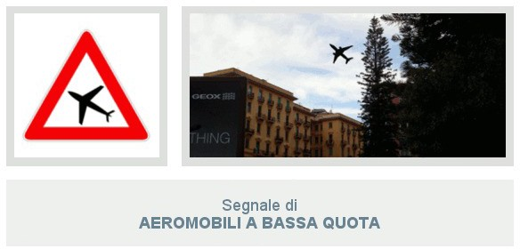
Il segnale di Aeromobili a Bassa Quota preannuncia la possibilità di un improvviso abbagliamento e di un improvviso e forte rumore dovuto ad aeroplani a bassa quota. Questo
cartello è posto nelle vicinanze di aeroporti o di piste per l'atterraggio e il decollo di aeroplani, ossia in zone dove può avvenire il volo a bassa quota di aeroplani.
Segnale di Forte Vento Laterale
Il segnale di Forte Vento Laterale, visibile in alto, presegnala un tratto di strada soggetto a forti ed improvvise raffiche di vento laterale, come può essere l'uscita di una galleria, un viadotto, un ponte ecc. Nel caso quindi avvistiate questo cartello dovete procedere con prudenza tenendo saldamente il volante, ossia con una presa più sicura, e considerare i possibili sbandamenti dei veicoli provenienti dal senso opposto.
Il pericolo è maggiore per i veicoli che trainano rimorchi o caravan, per i veicoli a due ruote e per i veicoli telonati o furgonati, ossia per tutti i veicoli che hanno un’ampia superficie laterale. Quindi per questi veicoli, in caso di forte vento laterale, vi è l'obbligo di rallentare e all'occorrenza di fermarsi. Come potete vedere il vento è molto pericoloso e non solo fastidioso perché scompiglia i capelli!
Segnale di Pericolo di Incendio
Qui la situazione si fa scottante! Il segnale di Pericolo di Incendio, visibile in alto, preannuncia l'attraversamento di una zona soggetta al pericolo d'incendio, esempio un bosco facilmente infiammabile oppure una pineta. Questo segnale è sempre integrato dal pannello che indica la lunghezza del tratto di strada interessato, ossia dal pannello integrativo di ESTESA (sempre visibile in alto).
Quindi è vietato, anzi vietatissimo, per il conducente del veicolo, e per gli altri eventuali passeggeri, gettare sigarette accese dal finestrino in quanto potrebbe verificarsi un incendio. Detto ciò possiamo passare all'ultimo Segnale di Pericolo, quello di "Altri Pericoli".
Segnale di Altri Pericoli
Cosa si fa se per il pericolo da segnalare non esiste un apposito cartello? Semplicissimo, si utilizza il segnale di Altri Pericoli, visibile in alto. Il segnale di Altri Pericoli, infatti, preannuncia
un pericolo diverso da quelli per cui sono previsti specifici segnali ed avverte che bisogna usare prudenza.
Questo cartello può essere usato senza pannelli integrativi, per indicare un pericolo generico, oppure con alcuni specifici pannelli, per indicare un determinato pericolo (visibili nella foto in basso). Visto l'approssimarsi di un pericolo, in ogni caso, è necessario moderare la velocità.
I pannelli che integrano questo segnale possono essere: il pannello "per ghiaccio", per preannunciare la possibilità di formazione del ghiaccio; il pannello "attraversamento di binari", per preannunciare la presenza di binari di manovra in corrispondenza di stabilimenti industriali; il pannello "sgombraneve in azione"; e il pannello "mezzi di lavoro in azione".
Conclusione
Siamo finalmente giunti al termine delle lezioni sui Segnali di Pericolo. A questo punto potete verificare se tutto è stato ben compreso a questo link https://www.quizpatenteonline.it/9/quiz- per-argomento/2/Segnali-di-pericolo, oppure potete passare alla prossima lezione sui Segnali di Prescrizione. In caso di dubbi su quanto esposto sopra potete commentare qui in basso. Saremo ben lieti di aiutarvi!
Segnali di Prescrizione
In questa lezione avremmo dovuto spiegare i Segnali di Divieto, ma è necessario prima sapere quali sono i Segnali di Prescrizione per poter rispondere a due delle domande che riguardano i prossimi segnali. Le domande di cui stiamo parlando sono "Il segnale raffigurato è un segnale di prescrizione" e "Il segnale raffigurato è un segnale di fine prescrizione". Chiarita l'importanza di questo argomento possiamo passare alla definizione del termine prescrizione.

Il termine prescrizione sta per norma, o anche disposizione, comando, quindi per Segnali di Prescrizione si intendono tutti quei cartelli che danno delle disposizioni, dei comandi. Cartelli stradali di questo tipo sono i cartelli di Divieto, quelli di Obbligo e quelli di Precedenza. Quindi ogni qualvolta vi troverete di fronte a un segnale di Divieto, d'Obbligo o di Precedenza, e la domanda è "Il segnale raffigurato è un segnale di prescrizione" dovrete rispondere "Vero".
Ma se da una parte abbiamo i segnali di Prescrizione, dall'altra esistono anche i segnali di Fine Prescrizione. Si tratta di tutti quei cartelli indicanti che il comando dato in precedenza da ora in
avanti non esiste più. Esempi di questo tipo sono il Via Libera, il Fine Del Divieto di Sorpasso e il Fine Limite Massimo di Velocità, visibili qui in basso.
Avete osservato bene l'immagine in alto? Allora vi sarete resi conto che riconoscerli è molto semplice. Si tratta infatti di cartelli in bianco e nero barrati con una striscia di colore nero. Ma questi mostrati in alto sono solo alcuni, nelle prossime lezioni li affronteremo tutti nel dettaglio.
Chiarito ciò non vi resta che passare alla prossima lezione sui Segnali Di Divieto. Per dubbi, chiarimenti o altro potete commentare in basso. Saremo ben lieti di aiutarvi!
Segnali di divieto (Parte 1)
E siamo giunti al terzo argomento del Manuale Patente B, ossia i Segnali di Divieto. Vi ricordate cosa dicevamo nella settima lezione, all'inizio dei Segnali di Pericolo? Che è possibile riconoscere il tipo di cartello stradale (pericolo, divieto, obbligo ecc.) semplicemente osservandone la forma e il colore.
Ma se riconoscere un segnale di pericolo è molto semplice, si tratta infatti di un segnale a forma triangolare con uno dei vertici verso l'alto, per quelli di Divieto è un po' più complesso. Comunque in linea generale si tratta di cartelli circolari bordati di rosso, come visibile nella foto in basso.
Ma esistono anche cartelli di Divieto rettangolari, come quello di Parcheggio o di Passo Carrabile, oppure senza bordo rosso, come quello di Via Libera ad esempio. O ancora cartelli circolari e con il bordo rosso sono quelli di Obbligo "Alt - Dogana", "Alt- Polizia" ed "Alt - Stazione". Quindi non vi resta che sforzare un po' la memoria!
Anche per i Segnali di Divieto, così come per i Segnali di Pericolo, abbiamo ritenuto opportuno, visti i tanti cartelli da studiare, dividere la lezione in tre parti. Siete pronti? Se la risposta è si, non ci resta che partire con il primo segnale.
Segnale di Divieto Di Transito
Il primo segnale che andiamo a studiare è quello di Divieto Di Transito, visibile in alto. Posto su entrambi gli accessi della strada, questo segnale vieta la circolazione nei due sensi a tutti i veicoli. Quindi se all'esame dovessero capitarvi domande come "Il segnale raffigurato vieta il transito agli autocarri" oppure "ai ciclomotori", o ancora "ai quadricicli a motore", rispondete "Vero".
Mentre l'accesso ai veicoli non è consentito, ai pedoni lo è. Quindi se dovesse capitarvi la domanda "Il segnale raffigurato consente il transito ai pedoni", anche in questo caso la risposta da dare è "Vero". Ricordiamo infine che se il Divieto Di Transito è integrato da apposito pannello, come visibile nella foto in alto, può avere validità limitata nel tempo.
Segnale di Divieto Di Transito per Autotreni ed Autoarticolati
Il segnale di Divieto Di Transito per Autotreni ed Autoarticolati indica che i veicoli delle categorie rappresentate in figura, ossia gli autotreni e gli autoarticolati, non possono transitare. Quindi in presenza di questo segnale tutti i veicoli che non appartengono a queste due categorie possono transitare tranquillamente.
Segnale di Senso Vietato
Mentre il Divieto di Transito è posto su entrambi gli accessi della strada e vieta la circolazione nei due sensi di marcia, il segnale di Senso Vietato (visibile nella foto in alto) vieta di entrare in una strada accessibile invece dall'altra parte, ossia in una strada a senso unico.
Quindi se all'esame dovesse capitarvi la domanda "Il segnale di Senso Vietato non consente la circolazione dei veicoli in quella strada" la risposta da dare è "Falso". Ricordiamo, infine, che il divieto imposto da questo segnale vale per tutti i veicoli, compresi i veicoli senza motore, i taxi e i quadricicli a motore, e deve essere rispettato anche nelle ore notturne.
Segnali di Divieto Di Sorpasso e Fine Del Divieto Di Sorpasso
Il segnale a sinistra, ossia quello di Divieto Di Sorpasso, si può trovare sia sulle strade urbane che su quelle extraurbane e vieta a tutti i veicoli di sorpassare i veicoli a motore (ossia autoveicoli, autocarri, autotreni ecc.), esclusi i motocicli e i ciclomotori. Quindi è possibile sorpassare tutti i veicoli sprovvisti di motore, come le biciclette, i veicoli a braccia e i veicoli a trazione animale, purché la manovra possa compiersi entro la semicarreggiata, senza superare la linea di mezzeria.
Se il divieto di sorpasso continua dopo ogni incrocio troverete il segnale di Divieto di Sorpasso con sotto il pannello integrativo di CONTINUA, visibile in alto, dopo ogni incrocio. Ciò sta appunto a dire che il divieto continua a valere sia prima che dopo il segnale.
Il segnale di Fine Del Divieto Di Sorpasso può essere posto sia nei centri urbani che fuori ed indica, come si può già capire dal nome, il punto in cui termina il divieto di sorpasso precedentemente imposto.
Vale per tutte le 24 ore e non è solo un segnale d'obbligo ma anche un segnale di fine prescrizione. Per chi non lo sapesse, il termine "prescrizione" sta ad indicare un ordine o un comando, quindi fine prescrizione vuol dire appunto fine del comando. Ricordiamo, infine, che il sorpasso è comunque vietato qualora debba essere oltrepassata la striscia continua.
Segnali di Divieto Di Sorpasso Per Gli Autocarri Che Superano 3,5 T e Fine Del Divieto Di Sorpasso Per Gli Autocarri Che Superano 3,5 T
Il primo segnale in alto a sinistra vieta ai veicoli di massa a pieno carico (informazione indicata sulla carta di circolazione) superiore a 3,5 tonnellate non destinati al trasporto di persone, di sorpassare veicoli a motore. Dell'affermazione appena detta bisogna porre particolare attenzione sulle parole "superiore a 3,5 tonnellate" e "non destinati al trasporto di persone".
Dei veicoli non destinati al trasporto di persone ne abbiamo già parlato nella terza lezione ossia Definizione e classificazione dei veicoli. Quindi se dovesse capitarvi la domanda "Il segnale raffigurato consente ad un autobus di massa a pieno carico pari a 18 tonnellate di sorpassare un autotreno" rispondete "Vero" in quanto l'autobus è destinato al trasporto di persone. Stesso discorso vale per le autovetture e le autocaravan, ossia i camper.
Il secondo segnale in alto, invece, indica la fine del divieto di sorpasso per veicoli merci di massa a pieno carico superiore a 3,5 tonnellate precedentemente imposto ed è un segnale di fine prescrizione. Quindi in presenza di questo segnale un autotreno può sorpassare un'autovettura oppure un autocarro può sorpassare un autobus, qualunque sia la sua massa a pieno carico.
Segnale di Distanziamento Minimo Obbligatorio Di 70 Metri
In presenza del segnale di Distanziamento Minimo Obbligatorio Di 70 Metri, visibile in alto, è obbligatorio mantenere una distanza minima di almeno 70 metri dal veicolo che precede, ossia dal veicolo che sta davanti. Quindi alla domanda "Il segnale raffigurato obbliga il veicolo che precede a distanziare quello che lo segue di almeno 70 metri" bisogna rispondere "Falso" in quanto bisogna mantenere la distanza non dal veicolo che lo segue ma da quello che sta davanti.
Ma ricordate che, anche se sul segnale sono rappresentate due automobili, l'obbligo vale anche per i motocicli e deve essere rispettato anche se si viaggia a bassa velocità.
Segnali di Limite Massimo Di Velocità Di 80 Km/h e Fine Del Limite Massimo Di Velocità Di 50 Km/h
In presenza del segnale di Limite Massimo Di Velocità Di 80 Km/h è vietato superare la velocità di 80 km/h, quindi è possibile marciare a velocità inferiore o uguale a 80 km/h. Il numero raffigurato nel segnale indica la velocità massima consentita. In questo caso sul cartello è riportato il numero 80 ma poteva esserci anche il numero 50, oppure il 30.
In ogni caso è fondamentale leggere il numero riportato sul cartello per sapere qual'è la velocità che non vi è consentito superare. Ricordiamo, infine, che questo cartello può trovarsi sia in centro urbano che sull'autostrada, quindi fate molta attenzione, ed ha validità immediatamente dopo il segnale stesso.
Il secondo segnale visibile in foto, quello di Fine Del Limite Massimo Di Velocità Di 50 Km/h, è un segnale di fine prescrizione ed indica, appunto, la fine del limite massimo di velocità di 50 km/h. Quindi consente di circolare a velocità superiore a 50 km/h, sempre entro i limiti di velocità vigenti per quel tipo di strada. Ma ciò non vuol dire che non è possibile marciare a velocità inferiore a 50 km/h. Indica semplicemente che non esiste più il divieto precedentemente imposto.
Segnale Divieto Di Segnalazioni Acustiche
Il Segnale di Divieto Di Segnalazioni Acustiche, visibile in alto, è uno di quei segnali il cui messaggio è immediato e chiaro fin da subito. Una trombetta barrata di rosso non può che vietare l'uso del clacson e, di conseguenza, il segnale raffigurato indica l'inizio di una zona in cui sono vietate le segnalazioni acustiche. L'uso del clacson è consentito solo in caso di pericolo immediato, ad esempio se si trasportano feriti o ammalati gravi.
Ma ricordate: l'ingorgo stradale non rientra tra i casi di pericolo immediato, neanche se state andando a sposarvi, oppure se dovete andare a discutere la tesi di laurea, e siete in forte ritardo. Quindi se vi trovate imbottigliati nel traffico non vi è permesso suonare il clacson. L'unica cosa che vi è concessa è di rimproverarvi, o se lo preferite schiaffeggiarvi, per non aver sentito la sveglia!
Segnali di Divieto Di Transito Ai Pedoni e Divieto Di Transito Ai Veicoli A Braccia
Anche per il segnale di Divieto Di Transito Ai Pedoni (visibile in basso), così come per il segnale precedente, il messaggio è di immediata comprensione. Semplicemente, in presenza di questo segnale i pedoni non possono percorrere quella strada. Il transito è invece consentito a tutti i veicoli come gli autoveicoli, i motocicli, i quadricicli, i ciclomotori e le biciclette. L'errore più comune che potreste commettere è quello di confondere questo segnale con quello di Percorso Pedonale.
Ma come potete vedere dall'immagine in alto, mentre il segnale di Divieto Di Transito Ai Pedoni è bordato di rosso, il colore simbolo del divieto, quello di Percorso Pedonale, che indica appunto un’area destinata al transito dei pedoni sul quale i veicoli non possono circolare, ha lo sfondo di colore azzurro. Quindi fate attenzione al colore!
Il segnale di Divieto Di Transito Ai Veicoli A Braccia vieta, da come si può capire dal nome, il transito ai veicoli a braccia, esempio i carretti a mano. Non sono considerati invece veicoli a braccia i veicoli a trazione animale, le autovetture che trainano un carrello-appendice, i motocicli, le biciclette e i ciclomotori, anche se spinti a mano. Quindi mettiamo il caso che avvistiate questo segnale mentre siete a bordo della vostra Mountain Bike e vi si buca la ruota. Potete tranquillamente scendere dalla vostra bici per spingerla a mano.
Conclusione
E siamo giunti al termine di questa prima parte sui Segnali Di Divieto. In questa lezione abbiamo parlato di tutti i segnali visibili nella foto in alto. Quindi, prima di passare alla seconda lezione su questo argomento, il consiglio è di osservare ogni segnale raffigurato nell'immagine e di ripetere per ciascuno tutte le nozioni apprese finora. Lo avete fatto? Se la risposta è si potete passare alla prossima lezione: Segnali Di Divieto (parte 2).
Segnali di divieto (Parte 2)
Nella scorsa lezione abbiamo iniziato ad affrontare l'argomento Segnali di Divieto, abbiamo visto come riconoscerli e ne abbiamo analizzato alcuni insieme. In questa seconda lezione non ci resta che continuare ad analizzare insieme i restanti cartelli di Divieto, visibili nella foto in basso. Ma prima di iniziare vogliamo ricordarvi che l'argomento è stato diviso in tre parti, giusto per concedervi una pausa tra una lezione e l'altra.
Segnale di Divieto Di Transito Ai Veicoli A Trazione Animale
Il primo segnale che andiamo ad affrontare è il Divieto Di Transito Ai Veicoli A Trazione Animale, visibile in alto. Questo cartello, da come si può già capire, vieta il transito ai veicoli a trazione animale, come quelli trainati da cavalli (esempio le carrozze a cavalli) oppure da asini. Consente quindi il transito a tutti gli altri tipi di veicoli, compresi quelli a braccia.
Segnali di Divieto Di Transito Alle Biciclette e Ai Motocicli
Il primo segnale in alto a sinistra, quello di Divieto Di Transito Alle Biciclette, vieta il transito alle biciclette, ai quadricicli a pedale e ai tandem. Consente, quindi, il transito ai pedoni e a tutti gli altri veicoli, compresi i quadricicli a motore e i ciclomotori a due ruote.
Il secondo segnale, quello di Divieto Di Transito Ai Motocicli, vieta il transito ai motocicli di qualsiasi cilindrata. Consente, quindi, il transito a tutti gli altri tipi di veicolo, come i tricicli e ai quadricicli a motore, le autovetture, le biciclette e i ciclomotori. Quindi se all'esame dovesse capitarvi la domanda "Il segnale raffigurato vieta il transito ai ciclomotori" rispondete "Falso".
Molti dei possibili errori sui segnali di divieto, infatti, si basano sulla poca conoscenza della classificazione dei veicoli. E così confondere il termine "motociclo" con "ciclomotore" fa sì che vengano sbagliate molte domande, e non solo su questo argomento. Quindi, qualora non lo aveste già fatto oppure lo avete fatto ma ricordate poco o nulla, vi consigliamo di studiare bene la terza lezione sulla classificazione dei veicoli.
Segnali di Divieto Di Transito Agli Autoveicoli e Motoveicoli Con 3 O Più Ruote e Agli Autobus
Il segnale di Divieto Di Transito Agli Autoveicoli e Motoveicoli Con 3 O Più Ruote vieta, appunto, il transito agli autoveicoli e motoveicoli con 3 o più ruote, quindi a tutti gli autoveicoli, ai tricicli a motore e ai quadricicli a motore. Il transito è consentito invece a tutti gli altri veicoli. Quindi il transito è permesso ai motocicli, ai ciclomotori a due ruote e ai veicoli sprovvisti di motore, come le biciclette, i carretti ecc.
Il segnale di Divieto Di Transito Agli Autobus, visibile in alto a destra, vieta il transito agli autobus, anche a quelli di massa a pieno carico inferiore a 3,5 tonnellate, compresi gli scuolabus e gli autobus turistici. In presenza di questo cartello è consentito, quindi, il transito a tutti gli altri veicoli.
Segnali di Divieto Di Transito Agli Autocarri Che Superano 3,5 T e Agli Autocarri Che Superano 6,5 T
Il segnale di Divieto Di Transito Agli Autocarri Che Superano 3,5 T vieta il transito ai veicoli adibiti al trasporto di cose (ossia gli autocarri, gli autotreni e gli autoarticolati) con massa a pieno carico superiore a 3,5 tonnellate. È consentito invece il transito di autobus e di autocaravan, anche se di massa complessiva superiore a 3,5 tonnellate, in quanto non destinati al trasporto di cose bensì di persone. Il segnale raffigurato può essere munito di pannello integrativo con un diverso valore della massa ammessa al transito.
Il segnale di Divieto Di Transito Agli Autocarri Che Superano 6,5 T vieta il transito agli autocarri con massa a pieno carico superiore a 6,5 tonnellate, informazione indicata sulla carta di circolazione. E anche in questo caso, come per il precedente, è consentito il transito alle autocaravan e agli autobus, in quanto destinati al trasporto di persone.
Segnale di Divieto Di Transito Ai Veicoli A Motore Trainanti Un Rimorchio
Il segnale visibile in alto vieta il transito ai veicoli a motore trainanti un rimorchio, come gli autotreni, i caravan, i rimorchi per imbarcazione e gli autoarticolati. È consentito, invece, il transito agli autosnodati, in quanto si tratta di due autobus uniti in modo da formare un solo veicolo, ed ai veicoli con carrello-appendice, in quanto considerato parte del veicolo.
Per chi non lo sapesse, il carrello-appendice (visibile nella figura in alto) è semplicemente un rimorchio leggero, ossia con massa a pieno carico non superiore a 750 kg, sprovvisto di targa e destinato al trasporto di bagagli e attrezzi. Ricordiamo infine che questo segnale può essere integrato da un apposito pannello indicante qual'è la massa massima che il rimorchio deve avere per poter transitare.
Segnale di Divieto Di Transito Alle Macchine Agricole
Il segnale in alto vieta il transito alle macchine agricole, sia quelle gommate che quelle cingolate, alle trattrici agricole ed ai rimorchi agricoli. È consentito, invece, il transito alle macchine operatrici destinate a lavori di manutenzione stradale, ai veicoli sgombraneve e a tutti i veicoli che non rientrano nella categoria delle macchine agricole, come i motocicli, i quadricicli a motore ecc. Questo segnale vale sia di giorno che di notte e può trovarsi ovunque.
Segnali di Divieto Di Transito Ai Veicoli Che Trasportano Merci Pericolose, Esplosivi O Prodotti Infiammabili e Prodotti Contaminanti L'Acqua
Il primo segnale, in alto a sinistra, vieta il transito ai veicoli che trasportano merci pericolose, esempio le autocisterne che trasportano benzina. Sono infatti considerate merci pericolose: la benzina, le materie tossiche o radioattive e gli acidi corrosivi. Naturalmente questo divieto non
riguarda il carburante contenuto nel serbatoio del veicolo, in quanto serve ad alimentare il veicolo stesso.
Il segnale al centro vieta, invece, il transito ai veicoli che trasportano esplosivi o prodotti facilmente infiammabili. Anche in questo caso il divieto non riguarda il carburante contenuto nel serbatoio, quindi non vieta ad esempio il transito alle autovetture solo perché alimentate a metano, oppure a benzina ecc.
L'ultimo segnale in foto vieta il transito ai veicoli che trasportano sostanze che potrebbero contaminare l'acqua, esempio il petrolio. È consentito, invece, il transito alle autocisterne vuote o che trasportano acqua (esempio le innaffiatrici stradali). L'errore più probabile che si possa commettere osservando il segnale è di pensare che questo cartello preannunci la possibile presenza di acqua sulla carreggiata oppure che preannunci una zona soggetta ad allagamento. Niente di più falso!
Conclusione
E siamo giunti al termine di questa seconda lezione sui Segnali di Divieto. Come potete vedere tutti i cartelli analizzati in questa lezione riguardano il Divieto Di Transito. Ciò che cambia è semplicemente il destinatario del divieto. A volte si tratta di autocarri, altre volte di macchine agricole ecc. In ogni caso basta guardare attentamente il cartello per rendersi conto a quale categorie di veicoli si rivolgono. A questo punto non vi resta che passare alla terza e ultima lezione sui segnali stradali di Divieto!
Segnali di divieto (Parte 3)
Com'è andata con la seconda lezione sui Segnali Di Divieto? Avete compreso tutto? Ricordate le differenze che intercorrono tra il divieto di transito ai veicoli che trasportano merci pericolose, quelli che trasportano esplosivi e quelli che trasportano prodotti contaminanti l'acqua? Se la risposta a tutte queste domande è si, potete passare a quest'ultima lezione sui Segnali Di Divieto. Detto ciò non ci resta che iniziare!
Segnali di Divieto Di Transito A Tutti I Veicoli Di Larghezza Superiore a 2,30 Metri, Di Altezza Superiore a 3,50 Metri, e A Tutti I Veicoli, O Complessi Di Veicoli, Lunghi Più Di 10 Metri
Iniziamo questa analisi da quei segnali di divieto di transito che riguardano veicoli con determinate dimensioni. A volte il transito è vietato a veicoli troppo larghi, altre volte perché troppo alti, o ancora perché troppo lunghi. Per ognuno di questi casi esiste un apposito cartello di Divieto.
Nella maggior parte delle volte il bisogno di imporre questi divieti è dovuto a determinate caratteristiche della strada. Mettiamo, infatti, che stiamo guidando un veicolo largo 2,5 metri e dobbiamo entrare in una galleria larga 2,3 metri. 20 centimetri di differenza non sono molto visibili e lo schianto sarebbe inevitabile se non ci fosse il segnale di Divieto Di Transito A Tutti I Veicoli Di Larghezza Superiore a 2,30 Metri ad avvisarci.
Questo segnale, infatti, vieta il transito a tutti i veicoli, anche quelli sprovvisti di motore, di larghezza superiore a 2,30 metri. Ciò vuol dire che tutti i veicoli di larghezza uguale o minore a 2,3 metri possono transitare. Quindi, come avrete già capito, il numero 2,3 riportato sul cartello indica la larghezza massima dei veicoli ammessi al transito. Ricordiamo, infine, che questo cartello può trovarsi prima di una strettoia ed è posto sia su strade urbane che extraurbane.
Ma prima di andare avanti con i prossimi cartelli vogliamo che poniate molta, ma molta, attenzione all'affermazione "Questo segnale vieta il transito a tutti i veicoli di larghezza superiore a 2,30 metri". L'avete fatto? Se la risposta è si, avrete già capito che i veicoli larghi 2,3 metri possono transitare tranquillamente. Lo stesso discorso vale anche per i prossimi 4 cartelli. Quindi fate attenzione durante i quiz patente!
Il secondo segnale nella foto, quello di Divieto Di Transito A Tutti I Veicoli Di Altezza Superiore a 3,50 Metri, vieta il transito dei veicoli con altezza, comprensiva del carico, superiore a 3,50 metri e può trovarsi sia in un centro abitato che fuori. Il numero 3,5 riportato sul cartello indica, dunque, l'altezza massima, misurata dal piano stradale, dei veicoli ammessi al transito. Questo cartello può facilmente trovarsi in un punto in cui la strada passa sotto un ponte.
Quindi se all'esame vi dovesse capitare la domanda "Il segnale raffigurato indica un passaggio alto 3,50 metri" voi non potrete far altro che cliccare su "Falso". Ma facciamo un esempio. Mettiamo il caso che stiate guidando un autobus alto 4 metri e avvistate questo cartello. Anche se il passaggio dovesse misurare 20 metri voi non dovrete far altro che cambiare strada, in quanto non vi è permesso il transito.
Il Segnale di Divieto Di Transito A Tutti I Veicoli, O Complessi Di Veicoli, Lunghi Più Di 10 Metri (l'ultimo segnale in alto) vieta il transito a tutti i veicoli di lunghezza complessiva superiore a 10 metri. Questo divieto deve essere rispettato anche dai conducenti di autobus e dai conducenti di complessi di veicoli.
Ma cosa si intende per complesso di veicoli? Un complesso di veicoli non è altro che l'insieme di due veicoli, il primo trainante e il secondo trainato. Esempi di complessi di veicoli sono gli autoarticolati, in quanto formati da un trattore stradale e da un semirimorchio, e gli autotreni.
Segnale di Divieto Di Transito A Tutti I Veicoli Di Massa Superiore A 7,00 T e A Tutti I Veicoli Di Massa Per Asse Superiore A 2,5 T
Se per i tre cartelli appena analizzati il divieto di transito riguardava veicoli con determinate dimensioni, i prossimi due che andiamo ad analizzare, ossia il Divieto Di Transito A Tutti I Veicoli Di Massa Superiore A 7,00 Tonnellate e quello A Tutti I Veicoli Di Massa Per Asse Superiore A 2,5 Tonnellate, riguardano la massa.
Il primo segnale, ossia il Divieto Di Transito A Tutti I Veicoli Di Massa Superiore A 7,00 Tonnellate, può trovarsi prima di un ponte e vieta il transito ai veicoli aventi una massa effettiva superiore a quella indicata. Questo cartello, se integrato da apposito pannello, può vietare il transito contemporaneo di più veicoli.
Anche il secondo segnale in foto può trovarsi prima di un ponte e vieta il transito ai veicoli aventi una massa effettiva per asse superiore a 2,5 tonnellate. Ma cosa vuol dire "massa effettiva per asse"? La massa effettiva per asse è un'unita di misura utilizzata nel settore dei trasporti e serve appunto a stabilire qual'è il carico massimo di un veicolo su una determinata superficie.
Ma per meglio capire il concetto di "massa effettiva per asse" dobbiamo chiarire prima cos'è l'asse di un veicolo. L'asse, visibile nella foto in alto, è quell'elemento che contiene le ruote e che consente di ruotarle a nostro piacimento. Generalmente una comune automobile possiede due assi, uno posteriore e uno anteriore. Ma esistono anche veicoli, come gli autocarri ad esempio, che possono avere più di due assi.
Ma come si fa a stabilire la massa per asse? Mettiamo dunque che un autocarro con tre assi pesi 6 tonnellate, per stabilire la massa per asse basterà dividere il peso (6 tonnellate nel nostro caso) per il numero di assi (nel nostro caso 3). Sapremo così che la massa per asse del nostro autocarro è di 2 tonnellate.
Naturalmente il segnale di Divieto Di Transito A Tutti I Veicoli Di Massa Per Asse Superiore A 2,5 Tonnellate fa riferimento alla massa effettiva sull'asse al momento del transito e non a quella indicata sulla carta di circolazione.
Segnale Di Via Libera

Il segnale raffigurato è un segnale di via libera ed indica la fine delle prescrizioni (ossia dei divieti) precedentemente imposte. La fine della prescrizione inizia dal punto dove si trova il cartello. Ma facciamo un esempio pratico. Mettiamo il caso che mentre state circolando su una strada avvistiate il Divieto di Sorpasso e, sfortuna vuole, davanti a voi una cara vecchietta procede molto, ma molto, a rilento.
Voi sapete che non potete sorpassarla per via del divieto appena imposto, quindi stati buoni dietro mantenendo un'adeguata distanza di sicurezza. Ma ad un certo punto avvistate il cartello di Via Libera. Ecco, il divieto precedentemente imposto cessa di esistere e voi, sempre che le condizioni della strada lo permettano, potete accingervi a fare la manovra di sorpasso. Tutto qui!
Segnali di Divieto Di Fermata e di Divieto Di Sosta
Prima di parlarvi di questi due cartelli è bene che sappiate la differenza che intercorre tra una fermata e una sosta per capire ciò che vi è permesso fare e cosa no se avvistate uno dei due cartelli visibili in basso. Infatti se per fermata si intende una temporanea sospensione della marcia dovuta ad esigenze di brevissima durata, ad esempio per far salire o scendere i passeggeri dal veicolo, e con il conducente pronto a riprendere la marcia in qualsiasi momento,
per sosta si intende la sospensione della marcia del veicolo prolungata nel tempo e con la possibilità da parte del conducente di allontanarsi dal veicolo.
Il Segnale di Divieto Di Fermata, visibile in alto a sinistra, vieta sia la sosta che la fermata a tutti i veicoli, quindi anche ai taxi e agli autobus. Naturalmente il divieto riguarda qualsiasi fermata volontaria del veicolo, anche se solo per far salire o scendere un passeggero, ma non vale per i casi di forza maggiore, come fermarsi a un semaforo rosso oppure per evitare di investire qualcuno, o ancora in caso di traffico intenso.
Ma ricordate, questo cartello, in assenza di iscrizioni integrative, vale 24 ore su 24, quindi sia di giorno che di notte, e non solo nei giorni feriali ma anche in quelli festivi. In presenza di questo segnale, infatti, se il divieto non viene rispettato, è sempre disposta la rimozione forzata del veicolo. Ricordiamo infine che questo cartello integrato con il pannello Fine indica la fine del divieto di fermata e di sosta, quindi la fermata è vietata nel tratto precedente.
Il Segnale di Divieto Di Sosta vieta la sosta del veicolo ma non la fermata. Quindi la sosta è consentita solo nel tratto precedente al cartello e vale solo per il lato della strada dove è posto il segnale e non su entrambi i lati della carreggiata.
Ma mentre sulle strade urbane il divieto vige solo dalle ore 8.00 alle ore 20.00, salvo diversa indicazione, lungo le strade extraurbane, in assenza di indicazioni integrative, il divieto è permanente, ossia vale 24 ore su 24. E se all'incrocio il segnale non dovesse esserci nuovamente? Il divieto precedentemente imposto cessa di validità.
Inutile dire che questo cartello non è posto nei luoghi dove per regola generale vige il divieto di sosta, come nelle curve o agli incroci. Il segnale di Divieto Di Sosta può essere integrato da pannelli per indicarne l'inizio, il proseguimento o la fine, o ancora da altri tipi di pannelli integrativi. Ma vediamoli tutti nel dettaglio.
Come abbiamo già detto il Segnale di Divieto Di Sosta può essere integrato da diversi pannelli integrativi, come quello di INIZIO, CONTINUAZIONE, FINE, ECCEZIONE (che consente la sosta solo agli autobus), LIMITAZIONE (che vieta la sosta solo agli autoarticolati), FASCIA ORARIA DEI GIORNI FERIALI (che vieta la sosta solo nei giorni lavorativi), FASCIA ORARIA DEI GIORNI FESTIVI (che vieta la sosta soltanto nei giorni festivi) e ZONA RIMOZIONE COATTA (che indica una zona in cui vige il divieto di sosta, con rimozione del veicolo).
Su quest'ultima affermazione bisogna porre particolare attenzione, ossia sulla necessità di integrare il cartello con il pannello ZONA RIMOZIONE COATTA. Ciò vuol dire che in caso di Divieto Di Sosta non avviene sempre la rimozione forzata del veicolo, ma solo quando è integrato da questo pannello. Detto ciò possiamo passare al prossimo segnale.
Segnali di Divieto Di Sosta Temporaneo e di Passo Carrabile
Il Divieto Di Sosta Temporaneo, visibile in alto a sinistra, è posto nei centri urbani e vieta la sosta nei periodi in cui viene effettuata la pulizia meccanica della strada. Si tratta, dunque, di un divieto di sosta limitato ai giorni e alle ore indicate. Nel caso del cartello in figura la sosta è vietata il lunedì e il venerdì dalle ore 21.00 fino alle ore 4.00. Ma è fondamentale leggere i giorni e l'orario indicato per sapere il periodo in cui è vietata la sosta.
Il Segnale di Passo Carrabile vieta la sosta nel luogo dove è posto, ossia allo sbocco di un Passo Carrabile. Ma cos'è un Passo Carrabile? Del Passo Carrabile abbiamo già parlato nella lezione sulla Classificazione delle strade. Vi basterà rileggere il paragrafo a riguardo per capire cosa sia. In ogni caso vi basta sapere che si tratta della zona per l'accesso dei veicoli alle proprietà laterali.
Mentre la sosta è vietata, la fermata è consentita, purché il veicolo non sia di intralcio ai veicoli che devono entrare o uscire dalla proprietà. Ricordiamo, infine, che questo segnale, per essere valido, deve contenere l'indicazione dell'ente che ha concesso l'autorizzazione, il numero e l'anno del rilascio.
Segnale di Sosta Consentita A Particolari Categorie
Il Segnale di Sosta Consentita A Particolari Categorie rappresenta una specifica eccezione al divieto di sosta ossia consente la sosta e il parcheggio esclusivamente ai veicoli al servizio di persone invalide munite dell'apposito contrassegno. Quindi la sosta è vietata per tutti i veicoli diversi da quelli al servizio di persone invalide.
Segnale di Regolazione Flessibile Della Sosta In Centro Abitato
Il Segnale di Regolazione Flessibile Della Sosta In Centro Abitato rappresenta una regolazione della sosta, ossia consente la sosta in alcune ore e la vieta in altre. In particolar modo la sosta è vietata dalle ore 7.00 alle ore 9.00 e dalle ore 17.00 alle 20.00. Di conseguenza è consentita in tutte le altre ore, ossia dalle ore 9.00 alle ore 17.00 e dalle ore 20.00 alle ore 7.00.
Potrebbe sembrarvi difficile ricordare tutti gli orari ma se osservate bene il cartello potete vedere che gli orari in cui la sosta è vietata sono riportati di fianco al Divieto di Sosta, mentre gli
orari in cui la sosta è consentita sono riportati di fianco al segnale di Parcheggio. Quindi il più delle volte basta osservare bene il segnale per capire ciò che vuole dirci. E questo rappresenta un valido aiuto e non solo in sede d'esame ma anche quando sarete alla guida.
Segnali di Parcheggio e di Preavviso Di Parcheggio
Il Segnale di Parcheggio indica un parcheggio autorizzato, ossia un'area attrezzata ed organizzata per sostare a tempo indeterminato, salvo diversa indicazione. Qualora infatti esistano delle limitazioni di tempo, il cartello viene integrato da un apposito cartello indicante l'orario, e in alcuni casi anche le tariffe.
Ma può essere integrato anche da altri pannelli, come quello che ne indica la distanza, o ancora quello che indica le categorie di veicoli cui il parcheggio è riservato, o ancora quello indicante le categorie di veicoli esclusi oppure quello indicante la disposizione dei veicoli.
Si, i pannelli integrativi di questo segnale sono tanti ma nella maggior parte dei casi sono di facile comprensione. In ogni caso a voi per il momento basta sapere che sotto questo cartello potete trovare i pannelli integrativi di cui abbiamo appena parlato. Più in là, nella lezione sui Pannelli Integrativi dei Segnali, li analizzeremo tutti nel dettaglio.
Il Segnale di Preavviso Di Parcheggio, visibile in alto, preannuncia che nella direzione della freccia, a 300 metri dal cartello, vi è un parcheggio. Ma non sempre il cartello è posto a 300 metri. Il segnale infatti può essere integrato da qualsiasi altro pannello DISTANZA e, quindi, può essere posto anche a 250 m di distanza dal parcheggio. In quest'ultimo caso infatti sul pannello Distanza avreste trovato la scritta 250 m.
Conclusione
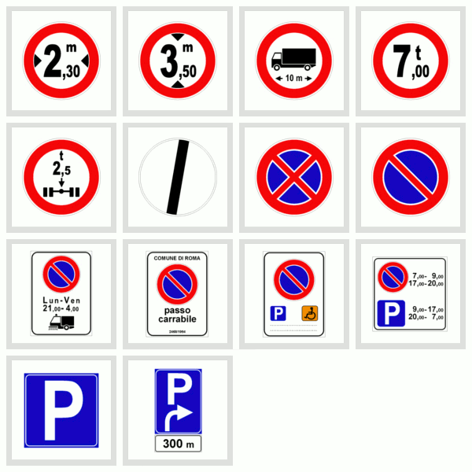
Complimenti, avete appena terminato l'argomento Segnali Di Divieto. A questo punto non vi resta che esercitarvi con i quiz sui Segnali Di Divieto per verificare se tutto è stato ben compreso. Oltre alla verifica tramite i quiz patente b il nostro consiglio è di allenarvi anche mentre siete per strada.
Così, ad esempio, se mentre state passeggiando avvistate il Divieto di Fermata, oppure quello di Sosta, soffermatevi per un momento a ricordare tutte le nozioni che avete appreso nel corso di questa lezione. All'esame, sia a quello teorico che a quello pratico, questo esercizio mentale vi tornerà molto utile! A questo punto non vi resta che passare alla prossima lezione sui Segnali Di Obbligo!
Segnali di obbligo (Parte 1)
In questa lezione affrontiamo l'argomento Segnali di Obbligo. I cartelli stradali di Obbligo non sono moltissimi ma abbiamo preferito comunque dividere l'argomento in due parti, giusto per farvi prendere fiato tra una lezione e l'altra. Lo sappiamo, pensate che siamo un po' troppo premurosi con voi e ciò è vero! Teniamo a voi e vogliamo vedervi patentati quanto prima, quindi non ci resta che iniziare subito.
Innanzitutto, prima di passare alla spiegazione di ogni singolo cartello, occorre fare un'importante premessa. I segnali di Divieto, quelli di Obbligo e quelli di Precedenza o sono segnali di Prescrizione oppure di Fine Prescrizione. Il perché lo abbiamo ampiamente spiegato nella 10ª lezione sui Segnali di Prescrizione. Quindi se non l'aveste letta vi consigliamo di correre immediatamente ai ripari. Eviterete moltissimi errori! Detto ciò possiamo passare ad analizzare tutti i cartelli.
Segnali di Direzione Obbligatoria Diritto, Direzione Obbligatoria a Sinistra e Direzione Obbligatoria a Destra
Iniziamo la nostra rassegna parlando dei tre segnali visibili in alto. Si tratta di segnali di direzione obbligatoria e, posti in corrispondenza di un incrocio, indicano l'unica direzione consentita. Infatti il segnale di Direzione Obbligatoria Diritto (il primo cartello in alto) indica l'obbligo di proseguire diritto, il segnale di Direzione Obbligatoria a Sinistra (il cartello al centro) indica che si può svoltare soltanto a sinistra e il segnale di Direzione Obbligatoria a Destra (l'ultimo cartello in alto) indica che si può svoltare soltanto a destra.
Quindi il primo cartello non consente la svolta né a destra né a sinistra, il secondo non consente né di proseguire diritto né di svoltare a destra e l'ultimo non consente né di svoltare a sinistra né di proseguire diritto. Come potete vedere il messaggio che questi cartelli vogliono dare è molto chiaro, l'unico errore che potreste commettere è quello di confonderli con i segnali di Preavviso Di Direzione Obbligatoria. Ma vediamoli subito nel dettaglio.
Segnali di Preavviso Di Direzione Obbligatoria a Sinistra e Preavviso Di Direzione Obbligatoria a Destra
Il segnale di Preavviso Di Direzione Obbligatoria a Sinistra precede un incrocio ove è obbligatorio svoltare a sinistra. Quindi in presenza di questo cartello non è consentito proseguire diritto oppure girare a destra. Questo segnale precede il segnale di Direzione Obbligatoria a Sinistra e può essere integrato con il pannello che indica la distanza dal punto in cui vige l'obbligo.
Il segnale di Preavviso Di Direzione Obbligatoria a Destra precede un incrocio con obbligo di svoltare a destra. Quindi in presenza di questo cartello non è consentito proseguire diritto o svoltare a sinistra. Questo segnale precede il segnale di Direzione Obbligatoria a Destra e, come per il cartello precedente, può essere integrato con un pannello che indica la distanza dal punto in cui vige l'obbligo.
Segnale di Preavviso Di Deviazione Obbligatoria Per Autocarri In Transito

Il segnale di Preavviso Di Deviazione Obbligatoria Per Autocarri In Transito preannuncia, appunto, una svolta obbligatoria a destra per gli autocarri di massa superiore a 3,5 t. Di conseguenza vieta agli autocarri di massa superiore a 3,5 t di proseguire diritto o di svoltare a sinistra.
Segnali di Direzioni Consentite Destra E Sinistra, Direzioni Consentite Diritto E Destra e Direzioni Consentite Diritto E Sinistra
Mentre i segnali di Direzione Obbligatoria, che abbiamo visto all'inizio, obbligano a percorrere una sola direzione, i segnali di Direzioni Consentite, visibili in basso, indicano che è possibile scegliere tra due direzioni possibili.
Così il segnale di Direzioni Consentite Destra E Sinistra obbliga a svoltare a destra o a sinistra al prossimo incrocio mentre non consente di proseguire diritto. Il segnale di Direzioni Consentite Diritto E Destra obbliga a proseguire diritto o svoltare a destra al prossimo incrocio mentre non consente di svoltare a sinistra. E il segnale di Direzioni Consentite Diritto E Sinistra obbliga a svoltare a sinistra o a proseguire diritto al prossimo incrocio mentre non consente di svoltare a destra.
Segnali di Passaggio Obbligatorio a Sinistra, Passaggio Obbligatorio a Destra e Passaggi Consentiti
Mentre i cartelli visti finora sono posti prima di un incrocio, i segnali di Passaggio Obbligatorio, visibili in alto, sono posti in corrispondenza di un ostacolo, che può essere un'isola di traffico, un salvagente, un cantiere stradale oppure uno spartitraffico.
Il primo segnale in alto, quello di Passaggio Obbligatorio a Sinistra, obbliga infatti i conducenti a passare a sinistra dell'ostacolo e, di conseguenza, non permette di superare l'ostacolo a destra. Il segnale di Passaggio Obbligatorio a Destra obbliga i conducenti a passare a destra dell'ostacolo e non permette di superarlo a sinistra. Mentre il segnale di Passaggi Consentiti consente ai conducenti di passare sia a destra che a sinistra dell'ostacolo.
Segnale di Rotatoria
Il segnale di Rotatoria indica la presenza di un incrocio nel quale la circolazione è regolata da rotatoria, ossia un incrocio dove la circolazione deve avvenire secondo il verso indicato dalle frecce. Il segnale raffigurato su strade extraurbane è preceduto dal segnale di pericolo di Circolazione Rotatoria.
Segnali di Limite Minimo Di Velocità Di 30 Km/h e Fine Del Limite Minimo Di Velocità Di 30 Km/h
Il segnale di Limite Minimo Di Velocità Di 30 Km/h prescrive un limite minimo di velocità, ossia un limite di velocità al di sotto del quale è vietato circolare. Nel caso del cartello visibile in foto, quindi, è necessario circolare ad una velocità uguale o superiore a 30 km/h. Nel caso il veicolo non riesca a marciare ad almeno 30 Km/h non può transitare in quella strada.
Il segnale di Fine Del Limite Minimo Di Velocità Di 30 Km/h indica che non si ha più l'obbligo di circolare ad una velocità almeno pari a quella indicata. Quindi indica la fine dell'obbligo precedentemente imposto, si tratta infatti di un segnale di Fine Prescrizione. È possibile, dunque, marciare a velocità inferiore a quella indicata sul cartello, ma anche andare ad una velocità superiore, sempre rispettando i limiti massimi di velocità per il tipo di strada su cui si sta circolando.
Conclusione
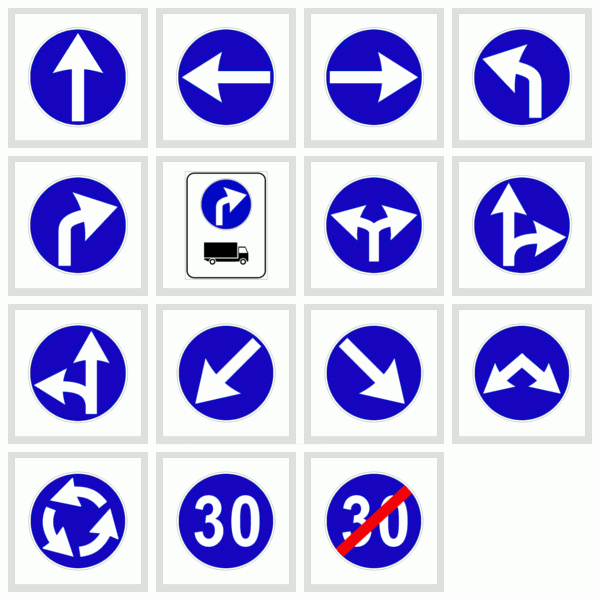
Tutti i Segnali di Obbligo visti in questa lezione, ad eccezione degli ultimi due (quelli di Limite Minimo di Velocità e fine del Limite Minimo di Velocità), sono molto simili tra loro. Si tratta, infatti, di cartelli circolari di colore blu sui quali sono disegnate delle frecce. Di conseguenza confonderli è molto facile, ma noi non vogliamo che ciò vi accada, soprattutto in sede d'esame.
Vi consigliamo, dunque, di passare un paio di minuti ad osservare tutti i segnali. Soffermatevi sulle differenze che intercorrono tra i cartelli molto simili tra loro (esempio i cartelli di Direzione Obbligatoria e quelli di Preavviso di Direzione Obbligatoria) e ripassate mentalmente, o anche
ad alta voce se preferite, tutto quello che abbiamo detto finora prima di passare alla seconda lezione sui Segnali Di Obbligo.
Segnali di obbligo (Parte 2)
Com'è andata con la prima lezione sui Segnali Di Obbligo? Se la risposta è "bene" possiamo continuare con la seconda parte. Altrimenti vi consigliamo di rileggerla nuovamente. Non ve ne pentirete quando in sede d'esame vi capiterà una domanda a riguardo e voi, con aria soddisfatta, spunterete la risposta giusta!
Segnale di Catene Da Neve Obbligatorie
Il primo segnale stradale di cui vogliamo parlarvi è quello di Catene Da Neve Obbligatorie, visibile in alto. Questo cartello si trova su strade che, in particolari condizioni, sono innevate o ghiacciate ed indica che la circolazione è consentita solo ai veicoli muniti di catene o pneumatici invernali.
Quindi mettiamo il caso che abbiate deciso di fare una gita in montagna e avvistate questo cartello, e ciò è molto probabile visto che le strade di montagna sono spesso soggette a nevicate. Andate a controllare nel bagagliaio se avete portato le catene ma di queste ultime non c'è alcuna traccia. Non potrete far altro che fare marcia indietro in quanto la circolazione non vi è concessa.
Se, invece, avete montato gli pneumatici invernali potete procedere tranquillamente. Ma ricordate, in presenza di questo cartello, viste le particolari condizioni della strada, dovete comunque procedere con particolare prudenza.
Segnali di Percorso Pedonale e Fine Del Percorso Pedonale
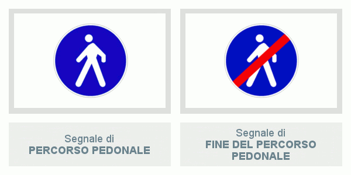
Passiamo ai due segnali visibili in alto. Si tratta dei Segnali di Percorso Pedonale e di Fine Del Percorso Pedonale. Una volta che avrete capito il significato del primo capire anche il secondo cartello sarà facilissimo. Il primo segnale, ossia quello di Percorso Pedonale, vale sia di giorno che di notte ed indica un viale pedonale oppure un percorso pedonale, ossia un’area destinata al transito dei pedoni e sul quale gli altri veicoli non possono transitare.
L'errore più comune che riguarda questo cartello è confondere il percorso pedonale con l'attraversamento pedonale. Ma sicuramente avrete studiato la prima lezione sulla Strada e se all'esame dovesse capitarvi la domanda "Il segnale raffigurato indica un attraversamento pedonale" voi non potrete far altro che cliccare su "falso".
Alla fine dell'area destinata ai pedoni, percorso o viale che sia, troverete invece il secondo segnale, ossia quello di Fine Del Percorso Pedonale, ed indica, appunto, che da lì in poi i pedoni non circolano più su un percorso riservato. Ma ciò non vuol dire che i pedoni non possano più transitare, vuol dire semplicemente che la circolazione è permessa anche agli altri utenti della strada, come veicoli, animali ecc.
Segnali di Pista Ciclabile e Fine Pista Ciclabile
Il segnale di Pista Ciclabile, il primo in alto, indica un percorso, una corsia o un itinerario, riservato esclusivamente alle biciclette. Ciò vuol dire che il transito è escluso non solo a tutti gli altri tipi di veicolo (esempio ciclomotori, motocicli, autovetture ecc.) ma anche a pedoni e animali. Anche in questo caso la Pista Ciclabile non va confusa con l'attraversamento ciclabile, che è ben altra cosa. Per più info vi consigliamo di leggere la lezione su La Strada.
Ed anche in questo caso al termine della Pista Ciclabile troverete un secondo cartello, quello di Fine Pista Ciclabile, visibile in alto a destra. Ma ricordate, anche se la pista riservata alla biciclette è terminata ciò non vuol dire che le bici non possono più transitare. Vuol dire solo che non hanno più un percorso, o un itinerario, riservato esclusivamente ad esse.
Segnali di Pista Ciclabile Contigua Al Marciapiede e Fine Della Pista Ciclabile Contigua Al Marciapiede
Il primo segnale in alto, ossia quello di Pista Ciclabile Contigua Al Marciapiede, indica l'inizio di una pista ciclabile, o di una corsia riservata alle biciclette, accanto ad un percorso pedonale, un marciapiede oppure un viale pedonale. Non consente dunque il transito ai veicoli a motore.
Come per quasi tutti i segnali visti finora, anche a questo cartello ne corrisponde uno che indica la fine. Stiamo parlando del segnale Fine Della Pista Ciclabile Contigua Al Marciapiede, che indica, appunto, la fine della pista ciclabile accanto al marciapiede.
Segnali di Percorso Unico Pedonale E Ciclabile e Fine Del Percorso Pedonale E Ciclabile
Il segnale di Percorso Unico Pedonale E Ciclabile è posto in corrispondenza di un percorso unico per pedoni e ciclisti. Stiamo parlando, dunque, di un viale misto, ossia riservato sia ai pedoni che ai ciclisti, dove la circolazione è vietata ai veicoli a motore.
Al termine di quest'area troverete un altro cartello, visibile in alto a destra, ossia quello di Fine Del Percorso Pedonale E Ciclabile, ad indicare che il percorso misto, ossia il percorso riservato alla circolazione mista di pedoni e di ciclisti, è terminato.
Pista Ciclabile Contigua Al Marciapiede e Percorso Unico Pedonale E Ciclabile
A questo punto avremmo dovuto spiegare il segnale Percorso Riservato Ai Quadrupedi Da Soma E Da Sella ma prima di andare avanti vogliamo assicurarci che abbiate capito bene le differenze che intercorrono tra il segnale di Pista Ciclabile Contigua Al Marciapiede e quello di Percorso Unico Pedonale E Ciclabile.
Come potete vedere dalla foto in alto, sul segnale di Pista Ciclabile Contigua Al Marciapiede la sagoma del pedone e quella della bicicletta sono poste una di fianco all'altra, proprio ad indicare che il marciapiede è posto di fianco alla pista ciclabile.
Nel secondo segnale in alto, quello di Percorso Unico Pedonale E Ciclabile, invece, il pedone è posto sopra la sagoma della bici. In questo caso non c'è alcuna barra bianca a dividerli, come invece accadeva nel primo segnale, proprio ad indicare che sullo stesso percorso possono circolare sia i pedoni che le bici.
Segnale di Percorso Riservato Ai Quadrupedi Da Soma E Da Sella
A questo punto possiamo passare al segnale di Percorso Riservato Ai Quadrupedi Da Soma E Da Sella, visibile in alto. Questo cartello è posto all'inizio di un percorso riservato agli animali da
soma e da sella e vieta il transito ai pedoni e a tutti i veicoli, compresi quelli a motore elettrico e le biciclette.
Ma per meglio capire il messaggio che questo cartello vuole darci è bene specificare il significato di animale da soma e quello di animale da sella. Il termine "soma" sta ad indicare il carico che si pone sul dorso degli animali, quindi gli animali da soma sono quegli animali (in genere cavalli, muli, asini ecc.) utilizzati per trasportare dei carichi.
La sella, invece, è il sedile, in genere di cuoio, che si monta sulla schiena dell'animale e su cui si siede il cavaliere. Quindi gli animali da sella non sono altro che quegli animali che vengono cavalcati. L'animale da sella più utilizzato è il cavallo. Chiarito questo punto possiamo passare al prossimo cartello, quello di Fine Del Percorso Riservato Ai Quadrupedi Da Soma E Da Sella.
Segnale di Fine Del Percorso Riservato Ai Quadrupedi Da Soma E Da Sella
Come per la maggior parte dei cartelli visti in questa lezione, al termine del percorso riservato agli animali da soma e da sella troviamo il cartello di Fine Del Percorso Riservato Ai Quadrupedi Da Soma E Da Sella, visibile in alto. Ma ciò non vuol dire che gli animali da soma e da sella non possano più transitare, vuol dire semplicemente che non hanno più un percorso riservato esclusivamente a loro.
Segnali di ALT-DOGANA, ALT-POLIZIA e ALT-STAZIONE
Ricordate cosa dicevamo all'inizio della lezione sui Segnali di Divieto? Che in genere è possibile riconoscere un segnale di pericolo, di obbligo, di divieto ecc. semplicemente osservandone la forma e il colore. Ma ciò non è sempre valido e questo è un caso del genere. I segnali di obbligo, in genere, sono circolari e a sfondo blu, ad eccezione di questi ultimi tre segnali che, invece, sono circolari e bordati di rosso e che ricordano molto lo stile dei Segnali di Divieto. Dunque chiarito che si tratta di segnali di Obbligo, e non di Divieto, possiamo passare ad analizzarli.
Il primo segnale in alto, quello di ALT-DOGANA, indica che bisogna rallentare per essere pronti ad arrestarsi alla frontiera per il controllo doganale. L'obbligo di arrestarsi vale sempre, anche se a bordo non ci sono oggetti o merce da dichiarare agli agenti doganali.
Il segnale al centro, quello di ALT-POLIZIA, segnala un posto di blocco stradale istituito da organi di polizia al quale è obbligatorio fermarsi. Questo cartello è posto a distanza opportuna dal posto di blocco ed è ripetuto nuovamente all'altezza del punto di arresto.
L'ultimo segnale, quello di ALT-STAZIONE, è posto in corrispondenza degli accessi autostradali e prescrive di arrestarsi al casello autostradale per le operazioni di pedaggio. Quindi la scritta "STAZIONE" sul cartello segnala una stazione autostradale dove è obbligatorio fermarsi per pagare il pedaggio e non un comando stazione carabinieri, oppure una stazione ferroviaria, o ancora un punto dove occorre fermarsi per caricare l'autovettura sul treno.
Conclusione
Questi in alto sono, dunque, i Segnali Di Obbligo che abbiamo studiato in questa lezione. Osservate tutti i segnali stradali attentamente e ripetete tutto ciò che avete appreso nel corso di questa lezione. Così in caso di dubbi su qualche segnale potrete subito correre ai ripari andando a rileggere il paragrafo che lo riguarda. A questo punto non vi resta che passare alla prossima lezione sui Segnali Di Precedenza!
Segnali di Precedenza
Benvenuti alla 16° lezione di Teoria Patente! In questa lezione affronteremo il quinto argomento, ossia i Segnali Di Precedenza. Finora abbiamo parlato della Strada e degli elementi che la compongono (banchina, salvagente ecc.), abbiamo visto i cartelli di Pericolo, di Divieto e quelli di Obbligo e speriamo fortemente che abbiate già iniziato ad avvertire miglioramenti nei Quiz Patente B.
Ma torniamo a noi! Ricordate cosa dicevamo all'inizio dei precedenti argomenti? Che riconoscere il tipo di segnale (ossia se si tratta di uno di Pericolo, di Obbligo ecc.) è molto facile. Basta, infatti, osservarne la forma e il colore. Beh, questo discorso non vale per i cartelli Di Precedenza. Troviamo infatti segnali quadrati, circolari, a forma di rombo e in un caso, addirittura, ottagonale.
Da come potete notare guardando l'immagine in alto neanche il colore vi potrà essere di aiuto, quindi vi toccherà sforzare un po' la memoria. Detto ciò non ci resta che analizzare tutti i Cartelli Stradali Di Precedenza. Ma prima vogliamo darvi una buona notizia. I cartelli di
Precedenza non sono molti, solo 14, quindi non sarà necessario dividere la lezione in più parti, come fatto per alcuni degli argomenti precedenti. Una lezione basta e avanza!
Segnali di Dare Precedenza e di Fermarsi E Dare Precedenza
Avete visto i due cartelli qui in basso? Beh guardateli bene! Questi innocui ed affascinanti cartelli sono quelli che nascondono le insidie più pericolose, e non solo ai quiz patente ma anche, e soprattutto, all’esame pratico della patente. Non rallentare quando si vede il segnale di Dare Precedenza oppure non fermarsi allo Stop sono errori molto gravi, che nessun esaminatore potrà mai abbonarvi.
Ma noi non vogliamo spaventarvi in alcun modo. Vogliamo solo che prestiate molta, ma molta, attenzione alle cosa che stiamo per dirvi a riguardo, consapevoli del fatto che tutto ciò che vi diremo ora andrà poi fatto quando sarete alla guida.
Il segnale di Dare Precedenza (visibile in alto a sinistra) viene posto su strada secondaria che non ha il diritto di precedenza e obbliga a dare la precedenza ai veicoli che circolano sulla strada che si incrocia, sia a quelli provenienti da destra che quelli provenienti da sinistra.
Questo segnale si trova anche sulle rampe di raccordo per l'immissione in autostrada, meglio conosciute come "corsie di accelerazione" e può trovarsi su strade extraurbane. In quest'ultimo caso sarà preceduto dal cartello Preavviso di Dare Precedenza, di cui parleremo tra poco.
Ma vediamo cosa dovete fare se avvistate questo cartello. Innanzitutto è necessario moderare particolarmente la velocità per essere pronti a fermarvi se avvistate veicoli in arrivo, sia da destra che da sinistra. Nel caso non dovessero esserci veicoli in arrivo non occorre fermarsi. In ogni caso è necessario comunque usare la massima prudenza, al fine di evitare incidenti.
E se questo cartello dovesse trovarsi in prossimità di un semaforo a luce gialla lampeggiante? La luce gialla lampeggiante indica che il semaforo non è in funzione, quindi è necessario moderare
la velocità ed osservare la segnaletica verticale. Nel nostro caso, quindi, è necessario moderare particolarmente la velocità ed essere pronti a fermarsi se vengono avvistati veicoli in arrivo, sia da destra che da sinistra, per potergli concedere la precedenza.
Il segnale di Fermarsi E Dare Precedenza (conosciuto anche come "lo Stop") si trova all'incrocio con una strada con diritto di precedenza ed obbliga a fermarsi in corrispondenza della striscia trasversale di arresto, anche in presenza di semaforo a luce lampeggiante gialla, e a dare la precedenza agli altri veicoli, sia che provengano da destra che da sinistra.
Questo cartello è utilizzato, di norma, negli incroci di particolare pericolosità, spesso con problemi di scarsa visibilità e può trovarsi in corrispondenza di un passaggio a livello. Fuori dai centri abitati questo segnale è preceduto dal Preavviso Di Fermarsi E Dare Precedenza, di cui parleremo tra poco.
Segnali di Preavviso Di Dare Precedenza e di Preavviso Di Fermarsi E Dare Precedenza
I segnali di Preavviso Di Dare Precedenza e di Preavviso Di Fermarsi E Dare Precedenza, come potete vedere dall'immagine in basso, sono molto simili tra loro. L'unica cosa che li differenzia è la scritta "STOP" di fianco a "320 m" nel segnale di Preavviso Di Fermarsi E Dare Precedenza. Anche se esteticamente sono molto simili il significato dei due è molto diverso. Quindi nel caso avvistiate uno di questi cartelli è fondamentale che capiate subito di quale dei due si tratta.
Il segnale di Preavviso Di Dare Precedenza preannuncia la successiva presenza del segnale Dare Precedenza ed indica la distanza dall'incrocio in cui dobbiamo dare precedenza sia a destra che a sinistra. Quindi il cartello in foto avvisa che a 320 metri si trova l'incrocio in cui dovrete dare la precedenza. Posto su una strada che non ha diritto di precedenza, questo cartello preannuncia di rallentare per potersi fermare se ci sono veicoli cui bisogna dare precedenza.
Il segnale di Preavviso Di Fermarsi E Dare Precedenza preannuncia il segnale di STOP a 320 metri ed obbliga ad arrestarsi al prossimo incrocio e dare la precedenza a destra ed a sinistra. Quindi la prima cosa da fare quando avvistate questo cartello è rallentare il veicolo per potervi fermare all'incrocio, posto a 320 metri di distanza, e dare precedenza.
Segnale di Intersezione Con Precedenza A Destra
Il segnale di Intersezione Con Precedenza A Destra, visibile in alto, preannuncia un incrocio in cui vale la regola generale di dare la precedenza a destra. Quindi occorre procedere a velocità particolarmente moderata per poter dare la precedenza ai veicoli provenienti da destra. Questo cartello è posto, di norma, a 150 metri dall'incrocio.
Segnali di Diritto Di Precedenza e di Fine Del Diritto Di Precedenza
Il segnale di Diritto Di Precedenza indica l'inizio di una strada in cui i veicoli hanno diritto di precedenza e può essere posto su una strada statale, urbana o extraurbana. Questo cartello può essere ripetuto in formato piccolo prima e dopo ogni incrocio e può essere integrato con il pannello "Andamento Della Strada Principale", visibile in basso, di cui parleremo meglio più in là, quando affronteremo l'argomento "Pannelli Integrativi Dei Segnali".
Ma ricordate, anche se avete la precedenza, dovete comunque moderare la velocità in prossimità degli incroci e assicurarvi che i veicoli provenienti dalle strade laterali vi diano la precedenza. Ma la cosa più importante da ricordare è che non avete la precedenza sui veicoli che hanno in funzione il lampeggiante blu e sirena, in quanto svolgono un servizio di emergenza.
Il segnale di Fine Del Diritto Di Precedenza indica che non si ha più diritto di precedenza e, quindi, invita a una maggiore prudenza perché, salvo diverso ulteriore segnale, si deve dare precedenza ai veicoli provenienti da destra. Dopo questo cartello può esserci quello di Fermarsi E Dare Precedenza, di cui abbiamo parlato in precedenza.
Segnale di Intersezione Con Diritto Di Precedenza
Il segnale di Intersezione Con Diritto Di Precedenza (visibile in alto) preannuncia un incrocio con strade di minore importanza, ossia un incrocio in cui si ha la precedenza sui veicoli provenienti dalle strade secondarie. Ma ricordate, anche se questo cartello vi dà la precedenza sui veicoli provenienti sia da destra che da sinistra, è necessario comunque rallentare per accertarvi che la precedenza vi venga data.
Naturalmente se circolando per strada avvistate questo cartello ma vedete che a regolare il traffico c'è un apposito agente (ossia il vigile urbano) il significato del cartello perde di efficacia e voi dovrete affidarvi esclusivamente alle direttive dell'agente. Ricordiamo infine che questo cartello può essere preceduto da quello di Diritto Di Precedenza, di cui abbiamo parlato poco fa.
Segnali di Intersezione A T Con Diritto Di Precedenza A Destra e A Sinistra
Il segnale di Intersezione A T Con Diritto Di Precedenza A Destra preannuncia che si incrocia a destra una strada di minore importanza. Ma ciò non vuol dire che si possa attraversare l'incrocio tranquillamente. Bisogna comunque usare molta prudenza, in quanto ci si sta avvicinando ad un incrocio e non è detto che la precedenza vi venga concessa, nonostante vi sia dovuta.
Anche per il segnale di Intersezione A T Con Diritto Di Precedenza A Sinistra vale il discorso appena fatto, ma in questo caso preannuncia che la strada senza diritto di precedenza si trova alla vostra sinistra. Quindi i veicoli alla vostra sinistra vi dovranno concedere la precedenza ma, nel dubbio che ciò avvenga, dovete comunque procedere con cautela.
Segnali di Confluenza A Destra e A Sinistra
Il segnale di Confluenza A Destra si trova generalmente sulle autostrade, in prossimità delle corsia di accelerazione, ed indica che abbiamo la precedenza sui veicoli che si immettono da destra. Preannuncia, quindi, una confluenza (ossia un'intersezione con un'altra strada) sul lato destro ed invita ad usare la massima prudenza al fine di evitare incidenti.
Mentre sull'autostrada è presente il cartello di Confluenza A Destra, sulla rampa di raccordo dell'autostrada (ossia sulla corsia di accelerazione) è posto il cartello "Dare Precedenza", ossia il primo cartello che abbiamo visto in questa lezione.
Per il segnale di Confluenza A Sinistra vale lo stesso discorso del segnale di Confluenza A Destra con l'unica differenza che la confluenza si trova sul lato sinistro della carreggiata, e non su quello destro.
Segnale di Dare Precedenza Nei Sensi Unici Alternati
Il segnale di Dare Precedenza Nei Sensi Unici Alternati, in una strada a doppio senso, precede una strettoia che permette il transito di una sola fila di veicoli ed impone di dare precedenza ai
veicoli provenienti dal senso opposto. Questo cartello può essere posto in una strada in cui una parte della carreggiata è sbarrata, oppure con strettoia, o ancora siamo in presenza di lavori. Comunque, in linea generale, si trova in una strada dove la circolazione non può svolgersi contemporaneamente nei due sensi.
Ma vediamo cosa occorre fare se vi trovaste di fronte a questo cartello e vedete che è in funzione anche il semaforo. O ancora che c'è un vigile a regolare il traffico. Dovete seguire le indicazioni del cartello? Oppure dovete osservare semplicemente il semaforo? O ancora dovete seguire le direttive dell'agente? Vediamolo insieme!
Mettiamo il caso che siate in presenza di questo segnale e del semaforo a tre luci. Se il semaforo è in funzione dovete seguire esclusivamente le direttive del semaforo. Quindi se la luce è verde potete procedere mentre se è rossa dovete fermarvi e dare la precedenza ai veicoli che avete di fronte. Se invece il semaforo è spento, oppure a luce gialla lampeggiante, dovete seguire la direttiva del segnale. Quindi, in questo caso, dovete dare la precedenza ai veicoli provenienti dal senso opposto.
E se dovesse esserci non solo il semaforo ma anche un'agente del traffico (ossia il vigile)? In questo caso dovete eseguire tutto ciò che vi viene richiesto dall'agente. Quindi se l'agente vi ordina di passare, anche se il semaforo dovesse essere rosso, voi avrete la precedenza e non potrete far altro che procedere.
Segnale di Diritto Di Precedenza Nei Sensi Unici Alternati
Anche il segnale di Diritto Di Precedenza Nei Sensi Unici Alternati precede una strettoia che permette il transito di una sola fila di veicoli ma in questo caso dà la precedenza rispetto ai veicoli di fronte. Ma il diritto di precedenza non toglie che, prima di percorrere la strettoia, è necessario procedere con cautela accertandosi che i veicoli provenienti dal senso contrario vi diano la precedenza.
E se dovesse esserci anche il semaforo? Anche per questo cartello vale ciò che abbiamo detto per il cartello precedente. Quindi se il semaforo è in funzione dovete seguire il comando che vi viene dato dal semaforo mentre se a regolare il traffico c'è un agente dovete seguire tutte le sue direttive.
Conclusione
A questo punto non vi resta che assicurarvi di aver capito tutto attraverso i quiz sui Segnali Di Precedenza. E se vi accorgete che qualcosa vi è sfuggita ed avete fatto una marea di errori? Non scomponetevi... potrete sempre rileggere questa lezione. A questo punto non vi resta che passare alla prossima lezione sulla Segnaletica Orizzontale.
Segnaletica Orizzontale (Parte 1)
Finora avete avuto modo di conoscere buona parte della segnaletica verticale, ossia dei cartelli stradali che sono posti in verticale, come ad esempio nell'ultima lezione sui segnali di precedenza. Si tratta infatti sempre di cartelli verticali. Ma esiste anche un altro modo per dare indicazioni all'automobilista, ossia con la segnaletica orizzontale.
Per segnaletica orizzontale si intendono tutte le scritte e le strisce dipinte sulla pavimentazione stradale con lo scopo di regolamentare la circolazione su strada. Quindi fanno parte della segnaletica orizzontale le strisce al centro della carreggiata, quelle di parcheggio, le strisce bianche oblique che individuano un'isola di traffico, la scritta "STOP" situata agli incroci ecc.
Nelle prossime due lezioni, quindi, focalizzeremo l'attenzione su tutte le scritte e le strisce che incontrerete circolando su strada. Prestate molta attenzione a ciò che vi diremo in quanto tutto ciò vi sarà utile non solo a non commettere errori ai Quiz Patente B ma anche, e soprattutto, quando sarete alla guida!
Strisce lungo il centro della carreggiata
Quante volte camminando per strada avete visto una strada simile a quella nella foto in alto? Avrete sicuramente notato che spesso al centro della strada è dipinta una o due strisce di colore bianco. A volte si trattava di una striscia tratteggiata, altre volte di una linea continua. Ed è proprio la scelta tra i due tipi di linee a dire al conducente ciò che può fare e ciò che non può fare su quel tratto di strada.
Le strisce lungo il centro della carreggiata quindi, come abbiamo appena detto, sono di colore bianco e possono essere discontinue, ossia tratteggiate, oppure continue. Se sono discontinue possono essere superate, ad esempio per effettuare un sorpasso, mentre se sono continue non possono essere superate. Ma analizziamole meglio nel dettaglio.
Striscia bianca discontinua al centro della carreggiata
Quindi mettiamo che stiate circolando su una strada simile a quella nella foto in alto, ossia su una strada a due corsie divise da una striscia bianca discontinua (ossia tratteggiata). La striscia bianca discontinua serve a dividere la carreggiata in due corsie e, se la strada su cui state circolando è a doppio senso di circolazione, serve anche a dividere i sensi di marcia.
Ma vediamo cosa è consentito fare in presenza della striscia bianca discontinua. Innanzitutto consente, in caso si voglia sorpassare, di occupare momentaneamente l'altra corsia di marcia. Ma consente anche di svoltare a sinistra e di effettuare l'inversione di marcia, naturalmente se la strada è a doppio senso di circolazione.
Ma è importante ricordarsi che per svoltare a sinistra bisogna spostarsi verso il centro della carreggiata, prima di effettuare la manovra. Non è concesso invece circolare stando a cavallo della striscia di mezzo (ossia camminarci sopra).
In una strada a doppio senso di circolazione con la striscia discontinua al centro della carreggiata si può effettuare un sorpasso, anche superando la striscia di mezzo, e si può svoltare a sinistra, spostandosi prima verso il centro della carreggiata. Anche in questo caso non si può circolare stando a cavallo della striscia di mezzo (ossia camminandoci sopra).
In una strada a senso unico di circolazione invece la corsia di sinistra è, di norma, riservata al sorpasso. Trattandosi di una strada a senso unico di circolazione, il sorpasso può essere effettuato anche in curva e in corrispondenza di dossi. Naturalmente si può sorpassare anche superando la striscia di mezzo.
Striscia bianca continua e doppia striscia bianca continua al centro della carreggiata
La striscia bianca continua, visibile nell'immagine in alto, divide la carreggiata in due corsie e, nelle strade a doppio senso di circolazione, divide i sensi di marcia. La striscia bianca continua non può essere superata e per questo motivo può trovarsi sul tratto in salita di un dosso e in vicinanza degli attraversamenti pedonali. Il sorpasso è consentito solo se la striscia bianca non viene superata, purché non vi siano motivi che lo vietino.
Per "doppia striscia bianca continua" si intendono le due strisce continue affiancate poste al centro della strada, visibili nell'immagine in alto a destra. Il significato della doppia striscia bianca continua è lo stesso della singola striscia continua di cui abbiamo parlato poco fa. Quindi anche la doppia striscia bianca continua non può essere superata.
La doppia striscia bianca continua al centro della carreggiata serve a dividere i sensi di marcia, sulle strade a doppio senso di circolazione, e non consente l'inversione del senso di marcia né, tantomeno, di svoltare a sinistra. Permette invece il sorpasso solo se la doppia linea non viene superata.
Striscia continua centrale affiancata a sinistra da una striscia discontinua
La doppia striscia nella foto in alto, ossia una striscia continua affiancata da una tratteggiata, si trova su strade a doppio senso di circolazione. Rispetto al veicolo che procede nel senso della freccia, la striscia continua centrale in figura si trova prima di una curva, sul tratto in salita di un dosso e prima di un incrocio.
Abbiamo detto finora che mentre la striscia continua non può essere superata, quella discontinua può esserlo. Quindi cosa occorre fare se vi trovaste di fronte a una doppia striscia, una continua e una discontinua? Per sapere cosa fare dovete guardare la striscia più vicina alla vostra automobile.
Mettiamo il caso che stiate guidando la macchina nera, visibile nella foto in alto, la striscia che vi dirà cosa potete fare, e cosa no, è quella continua, in quanto si trova più vicina alla vostra auto. Il veicolo in figura, quindi, non può superare la striscia continua centrale e il sorpasso è consentito solo se non si oltrepassa la linea continua centrale.
Striscia discontinua centrale affiancata a sinistra da una striscia continua
Subito dopo una curva, nel tratto in discesa di un dosso e dopo un passaggio a livello la striscia continua diventa discontinua mentre quella discontinua diventa continua (come visibile nella foto in alto). Quindi mettiamo il caso che stiate guidando l'auto nera in foto, la striscia più vicina è quella discontinua e così voi saprete che potete effettuare un sorpasso anche superando tutte e due le strisce.
Striscia bianca laterale continua che separa la carreggiata dalla corsia di emergenza
Anche la corsia d'emergenza (in foto corsia A) viene separata dalla carreggiata (corsie B e C) tramite una striscia bianca laterale continua, come visibile nella foto in alto. Quindi, essendo la
striscia continua, non può essere superata per circolarvi regolarmente, oppure per effettuare un sorpasso.
Questa linea può essere oltrepassata solo in caso di necessità, come per il guasto del veicolo (ma solo per un massimo di 3 ore) oppure per malessere dei viaggiatori. Normalmente sulla corsia A (ossia sulla corsia d'emergenza) possono transitare solo i veicoli di soccorso oppure in servizio di emergenza.
Striscia bianca laterale discontinua
La striscia bianca laterale discontinua serve a separare la carreggiata da un passo carrabile, da una piazzola di sosta, da una corsia di accelerazione e serve a individuare il bordo della strada principale, separandolo da quello della strada secondaria, come visibile nella foto in alto.
Strisce di guida sulle intersezioni (incroci) e Striscia trasversale continua
Le strisce bianche discontinue sull'intersezione, visibili in alto a sinistra, invece sono strisce di guida e servono a guidare il traffico prioritario nell'attraversamento dell'incrocio. Essendo tratteggiate possono essere superate per svoltare a sinistra.
La striscia bianca trasversale, visibile nella foto in alto a destra, può essere abbinata ad un incrocio regolato da semaforo ed indica il punto in cui i conducenti devono arrestarsi in presenza del semaforo a luce rossa o se il vigile lo impone. Oppure indica il punto in cui i conducenti devono arrestarsi in presenza del segnale Fermarsi E Dare Precedenza (STOP) e può essere completata con la scritta STOP, dipinta sulla pavimentazione stradale.
Del segnale Fermarsi E Dare Precedenza, anche noto come "lo STOP", ne abbiamo appena parlato nella precedente lezione. Si tratta di un cartello stradale molto importante e quindi, se non lo avete già fatto, vi consigliamo di rileggere la lezione sui Segnali Di Precedenza.
Conclusione
Da come avrete già capito le cose fondamentali da ricordare sono molto, ma molto, semplici. La striscia continua non può essere oltrepassata mentre la striscia discontinua può esserlo. In entrambi i casi è vietato circolarci sopra. In caso di doppia striscia bisogna, invece, considerare la striscia più vicina all'automobile. Tutto qui! A questo punto non vi resta che passare alla seconda lezione sulla Segnaletica Orizzontale.
Segnaletica Orizzontale (Parte 2)
Benvenuti alla seconda lezione sulla Segnaletica Orizzontale. Come abbiamo già accennato nella scorsa lezione per Segnaletica Orizzontale si intendono tutte le scritte e le strisce dipinte sulla pavimentazione stradale al fine di regolamentare la circolazione su strada. Mentre nella scorsa lezione abbiamo analizzato tutte le strisce che possono trovarsi al centro della carreggiata, le strisce laterali e quelle agli incroci, in questa lezione analizzeremo tutte le altre scritte, strisce o simboli che possono trovarsi sulla pavimentazione.
Segnaletica nei pressi di un passaggio a livello
Iniziamo la nostra rassegna parlando della segnaletica nei pressi di un passaggio a livello, visibile nella foto in alto. Questa segnaletica serve ad avvertire i conducenti che si è vicini ad un passaggio a livello, che può essere con barriere o senza barriere. Quindi, in presenza di questa segnaletica, i conducenti devono prestare molta attenzione all'eventuale sopraggiungere di treni.
Da come potete vedere in foto, al centro della carreggiata si trova una doppia linea, una tratteggiata e una continua. Quella più vicina all'automobile che si accinge ad avvicinarsi al passaggio a livello è continua, quindi, visto quello che abbiamo detto nella scorsa lezione, non è possibile oltrepassarla e quindi non è consentito ai conducenti spostarsi nella parte sinistra della carreggiata.
Corsie di preselezione
Le corsie visibili nella foto in alto sono corsie di preselezione, note anche come corsie di canalizzazione, e servono appunto ad incanalare i veicoli in base alla direzione che vogliono prendere. Spesso sulle corsie di preselezione sono dipinte delle frecce per segnalare le direzioni consentite su ciascuna corsia. Ma cosa succede se, come nella foto in alto, non vi è dipinta alcuna freccia? La risposta è semplice!
Tutte e tre le corsie rappresentate in figura consentono al conducente di proseguire dritto. Nello specifico, la corsia di sinistra consente al conducente di proseguire dritto o di svoltare a sinistra, la corsia di mezzo consente solo di proseguire diritto e la corsia di destra consente di proseguire diritto o di svoltare a destra.
Quindi il veicolo celeste rappresentato in figura può svoltare a sinistra se decide di rimanere nella stessa corsia, oppure può decidere di andare dritto. Ma se decide di rimanere nella stessa corsia, non può più svoltare a destra. Infatti è possibile cambiare corsia solo se le strisce sono ancora discontinue, ossia tratteggiate.
Frecce direzionali nelle corsie di preselezione
Quindi, secondo quanto appena detto, nelle corsie di preselezione è possibile trovare delle frecce direzionali (visibili nella foto in alto) a segnalare le direzioni permesse. È possibile immettersi nella corsia scelta quando le strisce sono ancora discontinue (ossia tratteggiate) mentre se sono continue obbligano a seguire la direzione indicata. Le frecce direzionali possono essere completate da scritte sulla pavimentazione che indicano la località raggiungibile.
Corsie di preselezione con frecce direzionali
Le corsie di preselezione, quindi, servono ad incanalare i veicoli in base alla direzione che vogliono prendere. Così la corsia A, visibile nella foto in alto, consente al conducente solo di svoltare a sinistra, la corsia B di proseguire diritto e di svoltare a sinistra, mentre la corsia C di proseguire diritto e di svoltare a destra.
Quindi mettiamo che abbiate deciso di svoltare a destra, la corsia che dovrete imboccare è la corsia C, in quanto è l'unica che consente di svoltare a destra. Ma ricordate, anche in questo caso, è possibile cambiare corsia solo se le strisce sono ancora discontinue (ossia tratteggiate).
Strisce di guida negli incroci
Delle strisce di guida ne abbiamo già accennato nella scorsa lezione, ma ne abbiamo visto un solo tipo, il primo visibile nell'immagine in alto. Come abbiamo già detto, quindi, le strisce di guida vengono utilizzate per guidare il traffico nell'attraversamento di un incrocio. Ma esistono anche altri tipi di strisce, come quelle nelle immagini al centro e a destra. Ma vediamole meglio!
Le strisce di guida al centro, essendo tratteggiate, possono essere valicate tranquillamente. Quindi i veicoli possono andare in tutte le direzioni. Infatti il veicolo A può andare diritto o svoltare a sinistra, il veicolo B può andare a destra o a sinistra e il veicolo C può andare diritto o a destra. Naturalmente concedendo sempre la precedenza a destra.
Le strisce di guida a sinistra sono strisce curve discontinue (ossia tratteggiate) di colore bianco e servono ad effettuare la svolta in modo corretto, senza prendere contro mano la strada di sinistra. Ma come bisogna procedere per effettuare la svolta a sinistra? La svolta a sinistra si effettua lasciando alla destra del veicolo il centro dell'incrocio e alla sinistra la striscia di guida, come visibile nella foto in basso.
Per svoltare a destra, invece, le strisce di guida vanno lasciate alla propria sinistra. Mentre per proseguire diritto le strisce di guida non vanno prese in considerazione. Infatti, essendo tratteggiate, possono essere valicate tranquillamente. Ma è inutile spendere troppe parole per un concetto facilmente spiegabile con una semplice immagine. Quindi osservate bene l'immagine qui in alto e capirete tutto. Promesso!
Segnaletica che individua un'isola di traffico

Dell'isola di traffico abbiamo già parlato nella seconda lezione di Teoria Patente, quindi se non l'avete già fatto vi consigliamo di leggerla. In ogni caso l'isola di traffico, visibile nella foto in alto, è realizzata con strisce bianche oblique ed indica un tratto di strada vietato al transito ed alla sosta dei veicoli. Dunque in questo tratto di strada non si può circolare e non si può sostare. In presenza dell'isola di traffico rappresentata in figura, quindi, il veicolo A deve andare diritto, il veicolo B deve svoltare a destra e il veicolo C deve svoltare a destra.
Segnaletica che individua un attraversamento pedonale
Passiamo, dunque, alla segnaletica che individua un attraversamento pedonale, visibile in alto. Questa segnaletica indica, sia dentro che fuori dai centri abitati, un attraversamento pedonale, ossia un attraversamento in cui i pedoni hanno la precedenza. Quindi in presenza di questa segnaletica i conducenti sono obbligati a fermarsi e a dare la precedenza ai pedoni che si accingono ad attraversare.
Questa segnaletica può essere completata con l'apposito segnale verticale di Attraversamento Pedonale e, se posta su strade extraurbane secondarie, deve essere preceduta dal segnale di pericolo Attraversamento Pedonale. Vi ricordiamo, infine, che un attraversamento pedonale può essere preceduto sulla destra da una striscia gialla a zig zag (come visibile dalla foto in alto), per migliorarne la visibilità, e sulla quale non è possibile sostare.
Segnaletica che individua una fermata dell'autobus
La segnaletica visibile nella foto in alto indica lo spazio per la fermata di autobus e filobus in servizio pubblico di linea. Infatti la striscia gialla a zig zag serve agli autobus per facilitare la manovra di accostamento e per ripartire. Quindi, per non intralciare queste manovre, su questa segnaletica non è possibile sostare, anche nelle parti con striscia gialla a zig zag.
Ma se la sosta è vietata, la fermata non lo è. Quindi è possibile fermarsi, ad esempio, per far scendere o per far salire passeggeri a bordo. Vogliamo ricordarvi, infine, che l'autobus può essere un autosnodato, quindi se all'esame dovesse capitarvi la domanda "La segnaletica in figura indica lo spazio per la fermata di autosnodati in servizio pubblico di linea" voi dovrete rispondere "vero".
Segni gialli e neri lungo il bordo del marciapiede
Avete mai notato che a volte sul bordo del marciapiede vi sono dei segni neri e gialli? E vi siete mai chiesti il perché del loro utilizzo? Forse qualcuno di voi ha pensato che fossero stati utilizzati per rendere esteticamente più piacevole il marciapiede. In realtà non è così! I segni gialli e neri dipinti sul bordo del marciapiede indicano semplicemente un divieto di sosta, ossia indicano che su quel lato della strada nessun veicolo può sostare, neanche i taxi. Ma se la sosta è vietata, la fermata è consentita.
Iscrizioni regolamentari sulla pavimentazione
E quante volte avete visto delle scritte dipinte sulla pavimentazione? A volte si trattava della scritta "Anna mi vuoi sposare?" altre volte della scritta "BUS", "TAXI" oppure "STOP". Ma mentre la prima scritta, ossia "Anna mi vuoi sposare?", non è regolamentare le altre lo sono.
Infatti sulla pavimentazione è possibile trovare delle iscrizioni regolamentari come:
la scritta BUS di colore giallo, nelle zone destinate alla fermata degli autobus in servizio pubblico di linea;
la scritta TAXI di colore giallo, per indicare zone riservate alla sosta dei taxi in servizio;
la scritta STOP, a completamento del relativo segnale verticale;
la scritta P L, con croce di S. Andrea, per segnalare un passaggio a livello;
la scritta indicante il nome di una località, a completamento della freccia direzionale.
Strisce di delimitazione gialle che individuano un'area di parcheggio destinata a persone invalide
Passiamo dunque alle strisce di delimitazione gialle che individuano un'area di parcheggio destinata a persone invalide, visibili nella foto in alto. Le strisce di delimitazione gialle visibili in foto, dunque, individuano un'area di parcheggio riservata a persone invalide e quindi le strisce gialle diagonali devono essere lasciate libere per consentire l'entrata e l'uscita dal veicolo delle persone invalide.
Iscrizione sulla pavimentazione di velocità consigliata
Sulla pavimentazione è possibile trovare anche dei numeri, come il numero 50 visibile in figura, ed indicano la velocità consigliata. Quindi nell'esempio in figura si consiglia di viaggiare alla velocità di 50 km/h. Ma se al posto del numero "50" ci fosse stato il numero "30" la velocità consigliata sarebbe stata di 30 km/h.
Dosso artificiale e rallentatore ottico di velocità
Il dispositivo visibile in alto a sinistra è un dosso artificiale installato sulla strada. Il dosso artificiale è, molto semplicemente, un rallentatore di velocità e serve appunto a limitare la velocità dei veicoli che stanno per passarci sopra. Infatti passandoci sopra ad una velocità elevata il veicolo subirà forti scossoni. Quindi nel caso avvistiate un dosso artificiale dovete moderare la velocità del veicolo.
Ma esistono anche altri sistemi di rallentamento, e non solo quelli ad effetto vibratorio dei dossi artificiali. Esistono, infatti, dei sistemi di rallentamento che sfruttano l'effetto acustico, mentre altri sfruttano l'effetto ottico, come i rallentatori ottici di velocità (visibili nella foto in alto a destra).
I rallentatori ottici di velocità sono costituiti da almeno 4 strisce bianche rifrangenti con larghezza crescente nel senso di marcia e distanziamento decrescente e quindi quando si vedono queste strisce dipinte sulla pavimentazione il messaggio è chiaro: occorre moderare la velocità del veicolo.
Conclusione
E siamo giunti non solo alla fine della lezione ma anche a quella dell'argomento Segnaletica Orizzontale e quindi non vi resta che verificare la vostra preparazione con i quiz sulla Segnaletica orizzontale e segni sugli ostacoli. Fatene un bel po' e solo quando vedrete che gli errori commessi sono sempre pari a zero saprete che è l'ora di passare alla prossima lezione sulle Segnalazioni Semaforiche. Buon allenamento!
Segnalazioni Semaforiche
Benvenuti alla 19° lezione di Teoria Patente dove affronteremo un nuovo argomento, ossia l'argomento Segnalazioni semaforiche e degli agenti del traffico. Per semplicità di esposizione abbiamo preferito dividere l'argomento in due parti e così, se in questa lezione analizzeremo solo le Segnalazioni Semaforiche, nella prossima lezione concluderemo questo argomento affrontando tutte le possibili Segnalazioni da parte degli agenti del traffico.
Quindi in questa lezione vedremo il funzionamento di tutti i semafori (ossia quello per i veicoli, quello per i pedoni, i semafori di corsia ecc.) e i comportamenti che dovrete adottare per ognuno di essi. L'importanza di questa lezione, non solo per i Quiz Patente ma anche per quando sarete alla guida, è di facile intuizione. Chi abita in città si troverà davanti ad almeno un paio di questi semafori ogni volta che sarà alla guida. Mentre chi abita in paese avrà più difficoltà ad incontrare un semaforo sulla sua strada. Ma per quest'ultimi ciò non è una buona notizia. Anzi!
Infatti cosa succederebbe se, da poco patentati e in macchina con i vostri amici, in un sabato sera come tanti, lui, l'amico più irriverente del gruppo, per sfuggire alla noia del paese esclamasse: "e se andassimo a fare un giro in città?". Mille domande e mille preoccupazioni si affollano nella vostra testa e mentre in gran segreto sperate che qualcuno bocci l'idea sentite dire: "ok, allora abbiamo deciso... si va in città!".
E poi lì, fermi e in preda al panico davanti a un semaforo per corsie reversibili riuscite a pensare solo: "perché non ho letto attentamente la lezione sui semafori di Quizpatenteonline?". Ma non preoccupatevi, ci sono buone notizie per voi! Quel momento non è ancora arrivato e avete tutto il tempo per capire non solo il funzionamento dei semafori per corsie reversibili ma anche di tutti gli altri semafori che potrete incontrare quando sarete su strada. Quindi iniziamo subito!
Semaforo per i veicoli
Esistono tanti tipi di semaforo ma quando si parla di semaforo il primo che viene in mente è sicuramente il semaforo per i veicoli, visibile nella foto in alto. Sicuramente ognuno di voi lo avrà visto almeno una volta nella vita, per cui non ha bisogno di molte presentazione.
In ogni caso si tratta di una lanterna semaforica costituita da tre luci (una verde, una gialla e una rossa), luci che possono essere disposte sia in verticale che in orizzontale, e serve, di norma, a regolare il passaggio dei veicoli in un incrocio. Ognuna delle luci si accende solo quando le altre due sono spente e servono a dare delle precise istruzione al conducente del veicolo. Ma vediamole insieme!
Luce rossa del semaforo
Abbiamo visto nel corso delle scorse lezioni che il rosso spesso è utilizzato per segnalare situazioni di pericolo. Basta infatti pensare ai Segnali di Pericolo, che sono appunto di colore
rosso. Quindi quale colore migliore del rosso per segnalare ai conducenti l'obbligo di fermarsi al semaforo?
In presenza della luce semaforica rossa, infatti, i veicoli devono arrestarsi prima della striscia trasversale d'arresto, striscia che non deve essere superata durante tutto il periodo di accensione della luce rossa. Nel semaforo la luce rossa può essere di dimensioni più grandi delle altre e nei semafori sistemati in verticale la luce rossa si trova in alto, mentre in quelli posti in orizzontale si trova a sinistra.
Luce verde del semaforo
Il colore verde, contrariamente al rosso, è un colore rilassante che induce alla riflessione e alla calma. Per cui quale colore migliore del verde per dare il via libera? Quindi quando è accesa la luce verde del semaforo è possibile proseguire dritto, oppure svoltare a destra, o ancora svoltare a sinistra, dando però la precedenza ai veicoli che arrivano di fronte.
Anche se è accesa la luce verde è necessario comunque usare la massima prudenza, pronti eventualmente a fermarsi se, quando si accende la luce gialla, non si è ancora impegnato l'incrocio. Inoltre si può impegnare l'incrocio soltanto avendo la certezza di poterlo sgomberare prima dell'accensione della luce rossa.
Luce gialla fissa del semaforo
Il giallo è, invece, il colore simbolo dell'energia e, visto da lontano, è facilmente distinguibile. Questo, dunque, il motivo del suo utilizzo nei semafori per i veicoli. La luce gialla fissa si accende quando il verde e il rosso sono spenti, ossia appena si spegne il verde e prima che si accenda il rosso ed obbliga a fermarsi prima del punto di arresto, purché lo si possa fare senza creare pericolo. L'attraversamento dell'incrocio è consentito solo se lo si è già impegnato.
Luce gialla lampeggiante del semaforo
Finora abbiamo parlato delle luci fisse che potrete trovare al semaforo ma è anche possibile trovare la luce gialla lampeggiante quando le altre sono spente. Ciò indica, semplicemente, un semaforo spento o guasto e quindi è necessario impegnare l'incrocio con prudenza, dando la precedenza ai veicoli provenienti da destra.
Casi in cui è consentito il passaggio in presenza del semaforo per veicoli
Quindi, ricapitolando, se si incontra un semaforo per veicoli è consentito il passaggio quando:
è accesa la luce verde;
si accende la luce gialla fissa, solo se non ci si può arrestare in condizioni di sicurezza prima dell'incrocio;
è accesa la luce gialla lampeggiante, usando però la massima prudenza e moderando la velocità;
è spento, oppure guasto, usando però la massima prudenza.
Semafori di corsia
Passiamo dunque ai semafori di corsia, visibili nell'immagine in alto. Da come potete immaginare osservandoli, hanno un funzionamento molto simile a quello dei semafori per veicoli, di cui abbiamo parlato poco fa, ma da quest'ultimi si distinguono per le luci a forma di frecce. Del tutto simile è, invece, la sequenza di accensione delle luci, ossia prima la luce verde, poi quella gialla e infine quella rossa, per poi ripartire nuovamente dalla luce verde.
Questi semafori si trovano sulle corsie contrassegnate da frecce direzionali (di cui abbiamo parlato nella scorsa lezione sulla Segnaletica Orizzontale) e riguardano tutti i veicoli, comprese le biciclette, che devono proseguire nella direzione della freccia. I semafori di corsia consentono di proseguire nella direzione scelta se è accesa la freccia verde.
Se, invece, è accesa la freccia rossa impongono l'arresto dei veicoli diretti nel senso della freccia. Mentre se è accesa la freccia gialla impongono di arrestarsi prima della striscia trasversale d'arresto oppure di liberare immediatamente l'incrocio, se lo si è già impegnato. Qualora i semafori di corsia fossero spenti consentono di passare con particolare prudenza.
Significato delle frecce nei semafori di corsia
Ricapitolando, quindi, nei semafori di corsia le frecce verdi accese indicano le direzioni verso le quali si può proseguire, le frecce rosse accese indicano che non si può proseguire nelle direzioni indicate, mentre le frecce gialle fisse accese indicano di liberare l'incrocio, qualora sia stato già impegnato, o di arrestarsi in condizioni di sicurezza. Le frecce gialle lampeggianti accese indicano, invece, di attraversare l'incrocio con particolare prudenza.
Semaforo per pedoni
Anche il Semaforo per pedoni, come quello per veicoli, è un tipo di semaforo molto utilizzato. Quindi sicuramente la maggior parte di voi lo avrà visto almeno una volta nella vita. Ma noi non vogliamo correre rischi, per cui ne abbiamo fotografato uno per voi, visibile nella foto in alto.
Da come avrete già capito, questo semaforo regola il passaggio dei pedoni negli incroci. Quindi, con luce verde accesa permette ai pedoni di attraversare la strada. Con luce gialla fissa accesa impone ai pedoni che hanno già occupato l'attraversamento pedonale di liberarlo rapidamente. Mentre con luce rossa accesa impone ai pedoni di non attraversare.
Semaforo per conducenti di biciclette
Il semaforo per conducenti di biciclette, visibile in alto, è un semaforo riservato esclusivamente ai conducenti di biciclette (ma questo lo avrete già capito!) e si trova all'uscita di una pista ciclabile, per regolare l'attraversamento della strada. Quindi, con luce verde accesa, consente soltanto ai conducenti di biciclette di attraversare l'incrocio. Con luce gialla fissa accesa, impone ai conducenti di biciclette di liberare velocemente l'incrocio se lo hanno già impegnato. Mentre, con luce rossa accesa, impone l'arresto alle biciclette.
Semaforo per veicoli di trasporto pubblico
Il semaforo per veicoli di trasporto pubblico, visibile in alto, è un semaforo per i veicoli in servizio di linea per trasporto di persone, come autobus, tram e taxi. Questo semaforo può avere la luce bianca orizzontale accesa, la luce bianca verticale accesa oppure la luce triangolare gialla accesa.
Se è accesa la barra bianca in alto, ossia quella orizzontale, impone l'arresto ai veicoli in servizio di linea per trasporto di persone. Se, invece, è accesa la barra bianca in basso, ossia quella verticale, consente ai veicoli di trasporto pubblico di proseguire. Mentre se è accesa la luce triangolare gialla, ossia quella al centro, indica preavviso di arresto poiché sta per accendersi la barra bianca in alto, ossia quella orizzontale.
Semaforo di onda verde
Il semaforo di onda verde, visibile in alto, consiglia la velocità da mantenere per trovare la luce verde al semaforo successivo. Quindi il semaforo di onda verde si trova su strade con più incroci dove vi sono semafori sincronizzati (temporizzati). Come avviene per la maggior parte dei semafori, delle tre luci del semaforo di onda verde se ne accende soltanto una, mentre le altre sono spente.
Semaforo di corsie reversibili
E siamo giunti al semaforo di corsie reversibili, visibile in alto, di cui abbiamo parlato all'inizio di questa lezione, quando abbiamo fatto l'esempio del simpatico amico che propone di fare un giro in città. Questo semaforo è posto su una carreggiata con almeno tre corsie e consente di impegnare la corsia indicata dalla freccia verde mentre non consente di occupare la corsia indicata con luce rossa a forma di X. Con freccia gialla lampeggiante, invece, impone al conducente di abbandonare quella corsia e di spostarsi in quella indicata dalla freccia.
Luce gialla lampeggiante e luci rosse lampeggianti
La luce circolare gialla lampeggiante (tipo A di figura) è un segnale di pericolo generico ed posta in punti pericolosi della strada. Pertanto invita a moderare la velocità e a procedere con particolare prudenza. La luce gialla lampeggiante, del tipo B in figura, è affiancata al semaforo veicolare ed indica che nello svoltare a destra i veicoli devono dare la precedenza ai pedoni. Anche la luce gialla lampeggiante, del tipo C in figura, è affiancata al semaforo veicolare ma quest'ultima indica che svoltando a destra i veicoli devono dare la precedenza alle biciclette.
Le luci rosse lampeggianti, visibili nella foto in alto a destra, si possono trovare in vicinanza di passaggi a livello senza barriere, o con semibarriere, all'accesso di un pontile d'imbarco di navi traghetto, all'accesso di un ponte mobile, e se accese vietano il passaggio di veicoli e pedoni. Queste luci sono integrate da un dispositivo di segnalazione acustica e, di norma, sono situate sul lato destro della strada.
Nello specifico nei passaggi a livello senza barriere e con semibarriere le luci rosse lampeggianti si accendono alternativamente per segnalare l'arrivo dei treni, entrando in funzione poco prima dell'arrivo del treno e rimanendo accese fino alla fine del suo passaggio.
Nel caso dei passaggi a livello con semibarriere le luci si accendono subito prima dell'inizio dell'abbassamento delle semibarriere. Quindi avvicinandosi ad un passaggio a livello con luci rosse lampeggianti alternativamente e semibarriera ancora alzata, occorre predisporsi all'arresto per potersi fermare sulla linea d'arresto. Inutile dire che è assolutamente pericoloso, nonché vietatissimo, accelerare per attraversare prima che si abbassi la semibarriera.
Conclusione

E siamo giunti al termine di questa lezione! Questi in alto sono tutti i semafori che abbiamo analizzato nel corso della lezione, quindi soffermatevi su ognuno di essi e ripassate tutte le cose che sono state dette. Se vedete che qualcosa non vi è chiara andate a rileggere il paragrafo che riguarda quel semaforo. A questo punto non vi resta che passare alla prossima lezione sulle Segnalazioni da parte degli agenti del traffico.
Segnalazioni da parte degli agenti del traffico
Come già accennato nella scorsa lezione sulle Segnalazioni Semaforiche, in questa lezione vedremo tutte le possibili Segnalazioni da parte degli agenti del traffico in modo da concludere l'argomento "Segnalazioni semaforiche e degli agenti del traffico".

E così se vedrete un vigile urbano con il braccio alzato saprete con certezza che non vi sta salutando bensì vi sta dicendo di fermarvi prima dell'incrocio, se è possibile farlo senza creare pericolo, oppure che dovete liberare velocemente l'incrocio, se lo avete già impegnato.
Ma non analizzeremo solo le posizioni che può assumere il vigile bensì vedremo anche come riconoscere gli addetti a servizi di polizia stradale, il significato del suono prolungato del fischietto da parte dell'agente preposto al traffico e quali sono i documenti da mostrare a richiesta degli agenti.
Posizioni del vigile
Le posizioni che un vigile può assumere non sono infinite ma sono solo 4, visibili nella foto in alto. Si tratta della posizione con le braccia aperte verso la nostra direzione, quella di profilo con le braccia aperte, quella con un braccio alzato e, infine, quella con le braccia ad angolo retto. Ma analizziamo ognuna nel dettaglio.
Vigile con le braccia aperte verso la nostra direzione
La prima posizione che andiamo ad analizzare è quella con le braccia aperte verso la nostra direzione, come visibile nella foto in alto. Questa posizione equivale alla luce rossa del semaforo e quindi bisogna arrestarsi prima della striscia trasversale di arresto, in quanto è vietato il passaggio.
Quindi, ricapitolando, quando il vigile si dispone con le braccia aperte verso la nostra direzione non si può attraversare l'incrocio e, pertanto, non si può proseguire dritto, ne tantomeno svoltare a destra o a sinistra.
Vigile di profilo con le braccia aperte
La seconda posizione che andiamo ad analizzare è quella di profilo con le braccia aperte, come visibile nella foto in alto. Questa posizione equivale alla luce verde del semaforo per le correnti di traffico che scorrono parallele alle sue braccia, quindi le correnti di traffico che scorrono parallele alle sue braccia possono attraversare l'incrocio, ma usando prudenza. È, inoltre, consentita la svolta a destra se si proviene dalla sua destra o dalla sua sinistra.
Vigile con un braccio alzato
La posizione del vigile con un braccio alzato (visibile in alto) equivale, invece, alla luce gialla fissa del semaforo e quindi bisogna arrestarsi prima dell'incrocio, se è possibile farlo senza creare pericolo, oppure bisogna liberare velocemente l'incrocio, se già è stato impegnato.
Vigile con le braccia ad angolo retto
Il vigile disposto con le braccia ad angolo retto (come nella foto in alto) consente ai veicoli che arrivano dalla sua sinistra di proseguire dritto, di svoltare a sinistra o a destra. Il vigile così disposto ferma, invece, i veicoli che arrivano dalla sua destra, da dietro e di fronte.
Significato del suono prolungato del fischietto da parte dell'agente preposto al traffico
Ma il vigile urbano può usare anche il fischietto per comunicare con i conducenti dei veicoli. Un esempio è il suono prolungato del fischietto da parte dell'agente preposto al traffico che serve per consentire il passaggio di veicoli di soccorso in servizio di emergenza.
Ciò significa che tutti i veicoli si devono arrestare, in condizioni di sicurezza. Quindi chi ha già impegnato l'incrocio deve liberarlo ed eventualmente arrestarsi subito dopo, mentre chi non ha ancora occupato l'incrocio deve arrestarsi. Il suono prolungato del fischietto equivale, infatti, al rosso del semaforo.
Segni distintivi degli addetti a servizi di polizia stradale
Ma come si fa a riconoscere gli addetti a servizio di polizia stradale? Semplice! Gli addetti a servizi di polizia stradale possono essere riconosciuti dall'uniforme (ossia la divisa), dalla 'paletta' bianca e rossa, oppure dal segnale distintivo.
Documenti da mostrare a richiesta degli agenti
Concludiamo, dunque, parlando dei documenti da mostrare a richiesta degli agenti e che, quindi, dovrete obbligatoriamente portare con voi quando sarete alla guida. Sapere queste cose sarà fondamentale quando, fermati per strada per un controllo, il poliziotto vi dirà la classica frase che ogni automobilista, prima o poi nella vita, si è sentito dire: "prego, favorisca patente e libretto!".
Quindi chi guida autoveicoli o motocicli deve esibire, a richiesta degli agenti, la carta di circolazione (noto anche come libretto) e la patente di guida. Ma obbligatori sono anche il certificato di assicurazione del veicolo e, solo per chi guida autoveicoli, il segnale mobile di pericolo (ossia il triangolo).
Quindi, ricapitolando, se dovete guidare un autoveicolo dovete portare con voi la carta di circolazione (ossia il libretto), la patente di guida, il certificato di assicurazione del veicolo e il triangolo, ossia il segnale mobile di pericolo. Mentre se dovete guidare un motociclo dovete portare la carta di circolazione, la patente di guida e il certificato di assicurazione del veicolo.
Conclusione
E dopo questa breve ma intensa lezione siamo giunti al termine dell'argomento Segnalazioni semaforiche e degli agenti del traffico. A questo punto non vi resta che allenarvi con i Quiz sulle Segnalazioni semaforiche e degli agenti del traffico. Esercitatevi molto o, almeno, fino a quando vedrete che state facendo sempre zero errori!
E se, passeggiando per la vostra città, vi dovesse capitare di vedere un vigile al centro dell'incrocio che da indicazioni agli automobilisti, soffermatevi ad osservare tutta la dinamica. Notate chi si arresta all'incrocio e chi prosegue, chi svolta a destra e chi a sinistra. Oltre ad essere un ottimo allenamento vi farà capire che poi, nei fatti, è molto più semplice che detto a parole. A questo punto non vi resta che passare alla prossima lezione sui Segnali di Indicazione.
Segnali di Indicazione (Parte 1)
E dopo l'argomento Segnalazioni semaforiche e degli agenti del traffico continuiamo lo studio della Teoria Patente con un nuovo argomento: i Segnali di indicazione. I segnali di Indicazione sono tutti quei segnali che forniscono agli utenti della strada informazioni necessarie alla guida e all'individuazione di strade, di località, di itinerari ecc.
I segnali di indicazione sono tanti ed è per questo che abbiamo preferito dividere l'argomento in
4 parti, ma sono tutti di facile comprensione, promesso! Prima di analizzarli tutti, occorre precisare che questi segnali non hanno tutti lo stesso colore di sfondo. A volte analizzeremo un cartello dallo sfondo bianco, altre volte lo sfondo sarà blu, o ancora di colore verde.
L'utilizzo del colore di sfondo non è stato scelto a caso ma serve a comunicare agli utenti di che tipo di strada si tratta. Infatti il bianco viene utilizzato per le strade urbane, il blu per le strade extraurbane, il verde per le autostrade, il giallo per i segnali temporanei dovuti alla presenza dei cantieri, il marrone per le località di interesse storico, artistico, culturale e turistico, e il nero per le zone industriali e per i centri commerciali.
A questo punto non vi resta che osservare bene l'immagine in alto per fissare in mente il significato dei sei colori utilizzati. Ripetete tutto a voce alta fin quando sarete sicuri di ricordare tutto ciò da qui all'esame. Fatto? Allora possiamo passare all'analisi di tutti i Segnali di Indicazione.
Segnali di Senso Unico Frontale e Parallelo
I primi segnali che analizziamo sono il Segnale di Senso Unico Frontale e il Segnale di Senso Unico Parallelo, visibile nell'immagine in alto. Il primo segnale (in alto a sinistra) indica un senso unico frontale ed è posto all'inizio di una strada dove la circolazione è a senso unico. Quindi, dopo questo cartello è vietata l'inversione di marcia.
Il segnale di Senso Unico Parallelo è posto su una strada a senso unico ed indica che svoltando nel senso della freccia non si incrociano veicoli provenienti dal senso opposto. Quindi il segnale A indica che svoltando a sinistra la strada è a senso unico, mentre il segnale B indica che svoltando a destra la strada è a senso unico. Di conseguenza, una volta svoltato nel senso della freccia è vietata l'inversione di marcia.
Segnali di Preavviso Di Incrocio Urbano e Di Incroci Urbani Ravvicinati
Il segnale di Preavviso Di Incrocio Urbano preavvisa, appunto, un incrocio urbano (in quanto lo sfondo è bianco) e riporta i nomi dei luoghi raggiungibili dall'incrocio. Quindi questo cartello preavvisa di proseguire diritto per raggiungere Napoli o Sora, oppure di svoltare a destra per raggiungere la stazione ferroviaria oppure il centro della città.
Osservando il cartello potete vedere che la scritta "Sora Napoli" ha lo sfondo blu, il colore utilizzato per le strade extraurbane, ed è integrata con la scritta "SS 32". Ciò vuol dire che per raggiungere Napoli o Sora è necessario percorrere la strada extraurbana SS 32.
Il segnale di Preavviso Di Incroci Urbani Ravvicinati preavvisa due incroci vicini su strada urbana ed indica che non è possibile svoltare a sinistra al primo incrocio. Nello specifico questo cartello preavvisa di svoltare al primo incrocio a destra per raggiungere via Gemona, al secondo incrocio a destra per il centro della città e al secondo incrocio a sinistra per l'ospedale.
Inoltre indica che per raggiungere l'Austria, Tarvisio o Tolmezzo, bisogna svoltare a sinistra al secondo incrocio mentre per raggiungere Trieste, Grado o Cividale, è necessario svoltare a
destra al secondo incrocio. Anche in questo caso le scritte hanno uno sfondo blu, il che vuol dire che per raggiungere queste destinazioni è necessario percorrere strade extraurbane.
Segnali di Preavviso Di Incrocio Urbano con rotatoria e con divieto di transito per autocarri con massa oltre 3,5 t
Il primo segnale (in alto a sinistra) è un preavviso di incrocio urbano con circolazione rotatoria e riporta i nomi delle località raggiungibili. Quindi questo cartello preavvisa di svoltare alla prima traversa a destra per andare a S. Lazzaro o a Forlì, alla seconda traversa per raggiungere la tangenziale o l'autostrada, e alla terza traversa per andare al centro di Bologna oppure al quartiere Mazzini.
Il secondo segnale (in alto a destra) è un preavviso di incrocio urbano e vieta agli autocarri di massa a pieno carico superiore a 3,5 tonnellate di continuare diritto per raggiungere il centro urbano di Avezzano oppure Pescara, quindi consente a tutti gli altri veicoli di proseguire diritto. Inoltre questo cartello preavvisa di svoltare a sinistra per raggiungere l'autostrada Roma- L'Aquila.
Segnale di Preavviso Di Incrocio Extraurbano con passaggio a livello
Il segnale in alto preavvisa un incrocio su strada extraurbana (in quanto lo sfondo è blu). Nello specifico questo cartello preavvisa di proseguire diritto per raggiungere Porto Torres, di svoltare a sinistra per raggiungere la località turistica (in quanto lo sfondo è marrone) di nuraghe Speranza e di svoltare a destra per S. Giovanni.
Inoltre, osservando il cartello, potete notare che in direzione S. Giovanni vi è il segnale di passaggio a livello senza barriere. Infatti questo cartello preannuncia un pericolo per chi svolta a destra per il possibile attraversamento di treni, causato appunto della presenza di un passaggio a livello.
Segnale di Preavviso Di Deviazione Temporanea
Il segnale in alto è un preavviso di deviazione temporanea, ossia preavvisa l'interruzione di una strada per lavori in corso. Quindi questo cartello fa parte dei segnali temporanei per lavori sulla strada ed indica nella parte inferiore che la deviazione è lunga 2 Km.
Segnale di Preavviso Di Diramazione Autostradale e Urbana
Il segnale di Preavviso Di Diramazione Autostradale, visibile in alto a sinistra, preavvisa uno svincolo autostradale con svolta a sinistra per l'aeroporto di Linate e in cui si deve proseguire diritto per andare a Bologna.
Il segnale di Preavviso Di Diramazione Urbana, in alto a destra, si trova su strade urbane ed indica due determinate destinazioni. Nello specifico preavvisa un incrocio in cui si deve proseguire diritto per andare a Milano oppure bisogna svoltare a destra per raggiungere il centro cittadino.
Segnali di Preselezione Extraurbano e Urbano
Il segnale di Preselezione Extraurbano è posto su strade extraurbane suddivise in due corsie dove è ancora possibile cambiare la corsia di canalizzazione. Quindi preavvisa una zona di preselezione con due destinazioni ed indica al conducente diretto a Bari di spostarsi sulla corsia di sinistra e al conducente diretto a Pescara di spostarsi sulla corsia di destra.
Il segnale di Preselezione Urbano è posto su strade urbane e consente di immettersi nelle corsie di canalizzazione. Nello specifico indica ai conducenti diretti alla località turistica "Terminillo" di immettersi nella corsia di mezzo, ai conducenti diretti a Terni di mettersi nella corsia di sinistra e ai conducenti diretti al centro della città di occupare la corsia di destra.
Segnali di Identificazione Strada Comunale, Strada Statale, Autostrada e Itinerario Internazionale
I 4 segnali in basso indicano il tipo di strada percorsa e il numero. Per sapere il numero della strada basta leggerlo sul cartello mentre per capire il tipo di strada percorsa basta osservare il colore di sfondo. Vi basterà dunque ricordate ciò che abbiamo detto all'inizio della lezione, ossia che il bianco viene utilizzato per le strade urbane, il blu per le strade extraurbane, il verde per le autostrade ecc.
Infatti il primo segnale in alto a sinistra identifica una strada comunale ("SC" infatti sta per "Strada Comunale"), o meglio la strada comunale n°19, e si può trovare all'inizio di una strada comunale o a completamento dei segnali di direzione.
Il secondo segnale (in alto a destra) indica che stiamo percorrendo la strada statale n. 2. La scritta "SS" infatti sta per "Strada Statale". Quindi, questo cartello indica che la strada su cui si sta viaggiando è una strada statale e si può trovare all'interno di un segnale di direzione o di bivio stradale.
Il terzo segnale (in basso a sinistra) identifica l'autostrada n. 25. Questo segnale si può trovare all'interno di un segnale di preavviso di svincolo autostradale oppure, abbinato ad una freccia, indica la direzione per un casello autostradale.
L'ultimo segnale (in basso a destra) è posto su strade di importanza internazionale ed indica l'itinerario internazionale n. 55. Questo segnale si può trovare all'interno di un segnale di preavviso di bivio stradale.
Conclusione
E siamo giunti al termine di questa prima lezione sui Segnali di Indicazione. Questi in alto sono tutti i cartelli analizzati, quindi osservateli bene e ripetete tutte le cose dette finora. Prima di passare alla seconda lezione sui segnali di indicazione vi consigliamo di esercitarvi per strada, fermandovi ad osservare e ad analizzare ogni singolo segnale di indicazione che incrocerete.
Imparare ad orientarvi ora, vi tornerà molto utile in futuro quando in viaggio per una nuova destinazione (e con il navigatore rotto!) non avrete modo di chiedere indicazioni a nessuno e dovrete affidarvi esclusivamente alle direttive dei segnali di Indicazione.
Segnali di Indicazione (Parte 2)
Benvenuti alla seconda lezione sui Segnali di Indicazione Stradale! Abbiamo già parlato nella scorsa lezione dello scopo di questi cartelli, ossia fornire agli utenti della strada informazioni necessarie alla guida e all'individuazione di strade, di località, di itinerari ecc. e dell'utilizzo del colore di sfondo. Quindi, se non l'avete già fatto, vi consigliamo di leggere attentamente la prima lezione sui Segnali di Indicazione! A questo punto non ci resta che passare alla spiegazione dei prossimi segnali stradali.
Segnale di Progressiva Distanziometrica Autostradale
Il primo segnale che andiamo ad analizzare è il Segnale di Progressiva Distanziometrica Autostradale, visibile in alto. Questo cartello è posto lungo un'autostrada ed indica a sinistra la distanza progressiva dal luogo di origine dell'autostrada (ossia indica che ci si trova a 54 km dal punto d'inizio dell'autostrada) e a destra la distanza dallo svincolo d'uscita per la località indicata (ossia indica che mancano 4 chilometri dal casello d'uscita per Piacenza).
Segnale di Itinerario Extraurbano
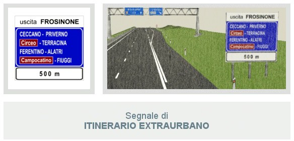
Passiamo dunque al secondo segnale, ossia quello di Itinerario Extraurbano. Questo cartello si trova sulle strade extraurbane principali ed indica che lo svincolo di uscita per Frosinone è a 500 metri. Quindi sotto la scritta "Frosinone" sono riportati tutti i nomi delle località raggiungibili uscendo dalla strada extraurbana principale ed indica, con la scritta su fondo marrone, le località turistiche.
Segnali di Inizio Centro Abitato e Fine Centro Abitato
Questi in alto sono invece i segnali di Inizio Centro Abitato e di Fine Centro Abitato. Il primo cartello a sinistra, ossia quello di Inizio Centro Abitato, è posto all'inizio del centro abitato, su tutte le strade d'ingresso alla località indicata, ed identifica la località raggiunta. Questo cartello se barrato da una striscia rossa indica la fine del centro abitato.
Il secondo segnale a destra, quindi, indica la fine del centro abitato (sul pannello bianco) e le località successive (sul pannello blu). In particolare nel pannello blu indica, per ogni località, la rispettiva distanza chilometrica, ossia indica che per S. Cesareo mancano 7 chilometri, per Frosinone 63 chilometri e per Napoli 190 chilometri.
Come potete notare osservando l'immagine in alto a destra, sul cartello blu le località sono ordinate in base alla distanza da percorrere e così sulla prima riga è riportato il nome del prossimo centro abitato, sulla seconda riga il nome della seconda località che si incontra e sulla terza riga il nome della terza località.
Segnale di Conferma Autostradale
Il segnale in alto, ossia il segnale di Conferma Autostradale, è posto su un'autostrada mentre se di colore blu si trova su strade extraurbane e riporta le località con le relative distanze in chilometri. Quindi indica la distanza delle località raggiungibili, ossia indica che mancano 180 chilometri per Firenze, 285 chilometri per Bologna e 472 chilometri per Milano.
Segnali di Confine Di Stato Tra Paesi Dell’Unione Europea e di Preavviso Di Confine Di Stato Tra Paesi Dell’Unione Europea
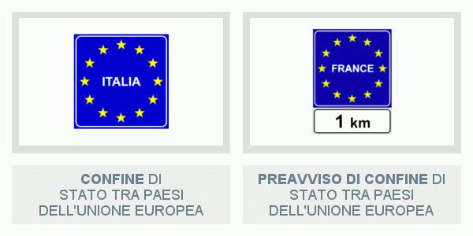
Come potete notare osservando l'immagine in alto i due segnali che andiamo ad analizzare sono molto simili tra loro ma mentre il primo a sinistra indica il confine di Stato con un Paese dell'Unione Europea, il secondo lo preavvisa. Quindi, in sede d'esame prestate molta attenzione al cartello bianco sottostante.
Nello specifico il primo segnale in alto a sinistra, ossia il segnale di Confine Di Stato Tra Paesi Dell’Unione Europea, si trova al confine di Stato con un Paese dell'Unione Europea ed indica il confine tra l'Italia ed uno Stato membro dell'Unione Europea.
Invece il secondo segnale a destra, ossia il Preavviso Di Confine Di Stato Tra Paesi Dell’Unione Europea, è posto sulle strade che portano al confine di Stato con un Paese dell'Unione Europea e preavvisa la distanza dal confine. Ma ricordate, visto che entrambi gli Stati fanno parte dell'Unione Europea non è obbligatorio arrestarsi al confine per il controllo doganale.
Segnali di Area Pedonale e di Zona A Traffico Limitato
Il segnale di Area Pedonale, in alto a sinistra, indica l'inizio di un'area pedonale e nel pannello aggiuntivo sono indicati i veicoli che possono entrare. Quindi questo cartello consente la circolazione dei veicoli per persone diversamente abili, dei veicoli della Polizia, dei Vigili del Fuoco e alle ambulanze (ma solo se sono in servizio di emergenza) e dei veicoli per il carico e lo scarico merci.
Il segnale di Zona A Traffico Limitato, in alto a destra, indica l'inizio di una zona a traffico limitato, ossia di un'area dove il traffico è consentito solo ad alcune categorie di veicoli oppure dove la circolazione dei veicoli può essere limitata nel tempo. Gli orari e i veicoli che possono entrare sono riportati nel pannello aggiuntivo.
Segnali di Transitabilità con passo aperto e di Transitabilità con passo chiuso
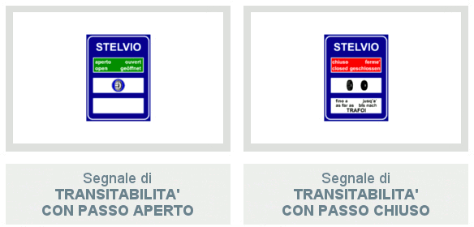
Entrambi i segnali in alto sono posti su strade di montagna e permettono di conoscere le condizioni di transitabilità del passo dello Stelvio. Infatti il segnale di Transitabilità con passo aperto, in alto a sinistra, indica che la strada è aperta, ossia indica che è possibile raggiungere il passo dello Stelvio, ma solo ai veicoli che sono equipaggiati con catene o pneumatici invernali.
Il segnale di Transitabilità con passo chiuso, invece, indica che il passo dello Stelvio non è raggiungibile e che è possibile proseguire solo fino a Trafoi. Quindi consiglia di procedere con particolare prudenza e attenzione e raccomanda l'uso delle catene o di pneumatici invernali fino a Trafoi. Ma attenzione alla parola "raccomanda", infatti se all'esame dovesse capitarvi la domanda "Il segnale raffigurato vieta il transito ai veicoli che non hanno le catene da neve" voi rispondete tranquillamente "falso".
Segnali di Inizio Strada Extraurbana Principale e di Cavalcavia O Sottopassaggio per l’inversione di marcia
Passiamo dunque ai due segnali visibili in alto, si tratta dei segnali di "Inizio Strada Extraurbana Principale" e di "Cavalcavia O Sottopassaggio per l’inversione di marcia". Il primo segnale a sinistra, ossia il segnale di Inizio Strada Extraurbana Principale, indica l'inizio di una strada extraurbana principale (ossia di una strada a carreggiate separate), mentre se barrato da una striscia rossa indica la fine di una strada extraurbana principale.
Invece il secondo segnale indica, su strade a carreggiate separate, la presenza di una struttura (cavalcavia o sottopassaggio) per effettuare l'inversione di marcia, ossia che consente di tornare indietro. Questo cartello, se su fondo verde, indica che il cavalcavia, o il sottopassaggio, per effettuare l'inversione di marcia si trova su un'autostrada.
Segnale di Limiti Di Velocità Generali
Il segnale di Limiti Di Velocità Generali viene posto in vicinanza della frontiera italiana, visibile dai conducenti provenienti dallo Stato estero, ed indica i limiti massimi di velocità generali che valgono in Italia. Quindi nel primo riquadro in alto indica che il limite massimo di velocità nei centri abitati è di 50 km/h, nel secondo riquadro che su strade extraurbane secondarie è di 90 km/h, nel terzo riquadro che sulle strade extraurbane principali è di 110 km/h, e nell'ultimo riquadro che sulle autostrade è di 130 km/h.
Segnali di Pronto Soccorso e di Ospedale
E siamo giunti agli ultimi due segnali per questa lezione, si tratta dei segnali di Pronto Soccorso e di Ospedale, visibili in alto. Mentre il segnale di Pronto Soccorso è posto in corrispondenza di un pronto soccorso e indica l'ingresso o la direzione per entrarci, il segnale di Ospedale è posto in corrispondenza di un ospedale ed anche in questo caso, indica l'ingresso, o la direzione per
entrarci. Quindi, vista la vicinanza di un ospedale, invita a non fare rumori molesti nelle sue vicinanze.
Conclusione
Questi in alto sono tutti i segnali stradali di Indicazione analizzati nel corso di questa lezione, quindi osservateli bene prima di passare alla terza lezione sui Segnali di Indicazione. Vi consigliamo, inoltre, di osservare questi cartelli per strada. Potremmo passare per "ripetitivi" ma è importante sottolinearlo, in quanto non c'è allenamento migliore per superare l'esame!
Segnali di Indicazione (Parte 3)
Benvenuti alla terza lezione di Teoria Patente sui Segnali di Indicazione! Com'è andata con la seconda lezione sui Segnali di Indicazione? Se la risposta è "bene, ho capito tutto... siete fantastici" :) potete continuare questa lettura altrimenti vi consigliamo di rileggerla nuovamente. È fondamentale non lasciare indietro nulla, potreste pentirvene in sede d'esame, e questo noi non lo vogliamo! Detto ciò non ci resta che passare ad analizzare i restanti cartelli stradali di Indicazione.
Segnali di Localizzazione Territoriale e di Preavviso Di Informazioni Turistico-Alberghiere
Il segnale di Localizzazione Territoriale, visibile in alto a sinistra, indica il nome del fiume (in questo caso l'Arno) e si trova in vicinanza del ponte che lo attraversa. Quindi nel nostro caso si trova in vicinanza di un ponte che attraversa il fiume Arno. All'esame potrebbero capitarvi domande come "Il segnale raffigurato è posto dove in caso di pioggia la strada si può allagare", "indica il pericolo di mareggiate", oppure "indica la possibilità di effettuare sci nautico", o ancora "indica una strada con curve in successione". Ma ricordate, sono tutte affermazioni false!
Il secondo segnale a destra, ossia il segnale di Preavviso Di Informazioni Turistico- Alberghiere, invece preavvisa che a 150 metri vi è un ufficio di informazioni turistico- alberghiere, ossia un ufficio dove è possibile avere informazioni su alberghi e motel. Quindi mettiamo che abbiate deciso di fare una gita in una località a voi sconosciuta e che abbiate bisogno di assistenza per la prenotazione in un hotel, oppure di qualche suggerimento sulle attrazioni del posto, su quali monumenti visitare ecc. questo ufficio farà sicuramente al caso vostro e non dovrete far altro che cercare questo cartello per sapere dove si trova.
Segnali di Campeggio e di Area Attrezzata Con Impianti Di Scarico
Il segnale di Campeggio, in alto a sinistra, indica la vicinanza di un'area destinata al campeggio e alla sosta di caravan ed autocaravan. Il segnale a destra, ossia quello di Area Attrezzata Con Impianti Di Scarico, indica invece un'area attrezzata con impianti di scarico, ossia impianti che consentono lo scarico dei residui organici e delle acque bianche e sporche, per i veicoli che hanno i servizi igienico-sanitari (esempio gli autobus, i camper e le roulotte).
Segnali di Attraversamento Pedonale e di Attraversamento Ciclabile

Il segnale di Attraversamento Pedonale si trova in corrispondenza delle strisce dell'attraversamento pedonale ed indica, appunto, un attraversamento pedonale non regolato da semaforo. Questo segnale obbliga i conducenti a fermarsi quando i pedoni transitano sugli
attraversamenti pedonali e può trovarsi sia nei centri abitati che fuori. In quest'ultimo caso, ossia fuori dai centri abitati, si trova dopo il segnale di "Pericolo Attraversamento Pedonale", esattamente a 150 metri di distanza.
Il segnale di Attraversamento Ciclabile è posto in corrispondenza delle strisce dell'attraversamento ciclabile ed indica un attraversamento ciclabile. Questo cartello invita ad usare prudenza perché possiamo trovare ciclisti che attraversano la carreggiata a cui bisogna dare la precedenza.
Segnale di Scuolabus
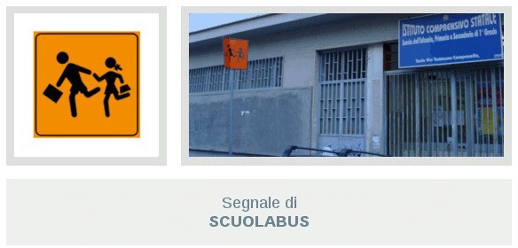
Il segnale in alto, ossia quello di Scuolabus, può trovarsi sia sul bordo del marciapiede che all'esterno di un autobus. Se posto sul bordo del marciapiede, indica la fermata di uno scuolabus mentre, se posto all'esterno di un autobus, segnala che esso trasporta scolari. Questo cartello invita a fare attenzione perché possono esserci bambini discesi dallo scuolabus che possono attraversare improvvisamente la strada.
Segnali di Fermata Autobus Extraurbani e di S.O.S.
Il primo segnale a sinistra, ossia quello di Fermata Autobus Extraurbani, da come avrete già capito, indica una fermata di autobus di pubblico trasporto extraurbano, ossia indica il luogo dove aspettare un autobus di pubblico trasporto extraurbano. Questo segnale può essere abbinato ad un pannello che riporta gli orari di partenza degli autobus extraurbani.
Il secondo segnale, ossia quello di S.O.S., indica la presenza di un dispositivo da utilizzare in caso di richiesta di soccorso stradale. Ma di quale dispositivo si tratta? Avete presente quelle colonnine gialle, o arancioni, presenti ai margini dell'autostrada? Ecco i dispositivi di cui stiamo parlando sono proprio quelli e consentono di effettuare una chiamata di soccorso meccanico o sanitario una volta premuto il pulsante corrispondente.
Segnali di Strada Senza Uscita e di Preavviso Di Strada Senza Uscita
Passiamo, dunque, ai segnali di "Strada Senza Uscita" e di "Preavviso Di Strada Senza Uscita", visibili in alto. Il segnale di Strada Senza Uscita, in alto a sinistra, è posto all'inizio di una strada senza uscita per i veicoli e vale per tutti i veicoli, compresi i motocicli. Dunque ciò vuol dire che è possibile entrarci ma che per uscirne bisogna fare retromarcia oppure un'inversione di marcia.
Il segnale a destra, ossia quello di Preavviso Di Strada Senza Uscita, preavvisa che la strada di destra è senza uscita per i veicoli e, anche in questo caso, vale per tutti i veicoli, compresi i motocicli. Quindi questo cartello consente sia di proseguire diritto che di svoltare a destra ma avverte che svoltando a destra si imbocca una strada senza uscita.
Segnali di Velocità Consigliata e di Strada Riservata Ai Veicoli A Motore
Il segnale di Velocità Consigliata indica la velocità che si consiglia di non superare in condizioni ottimali di traffico. Questo segnale può essere abbinato con un pannello che indica la lunghezza del tratto di strada dove si consiglia di non superare la velocità indicata e se barrato da una striscia rossa indica la fine della sua validità. Ma prima di andare avanti nella spiegazione degli altri segnali è importante sottolineare la parola "consiglia". Infatti questo cartello consente sia di viaggiare a 50 km/h che a 70 km/h.
Il segnale di Strada Riservata Ai Veicoli A Motore indica una strada riservata alla circolazione dei soli veicoli a motore (esempio i motocicli, le autovetture, gli autobus ecc.) e, quindi, vieta il transito ai veicoli senza motore (esempio le biciclette, i veicoli a trazione animale ecc.). Anche questo segnale se barrato da una striscia rossa indica la fine della sua validità.
Segnali di Galleria e di Ponte
Passiamo dunque ai segnali di "Galleria" e di "Ponte", visibili in alto. Il segnale di Galleria è posto all'inizio di una galleria autostradale e ricorda di spegnere il motore in caso di arresto prolungato in galleria, di non sostare e di non fermarsi in galleria, salvo diversa segnalazione, e di tenere ben saldo lo sterzo per fronteggiare eventuali colpi di vento all'uscita della galleria.
Il segnale di Ponte, invece, si trova all'inizio di un ponte, di un viadotto o di un cavalcavia e può essere abbinato ad un pannello che ne indica la lunghezza. Quindi questo segnale invita a fare particolare attenzione in caso di forte vento e a tenere ben saldo lo sterzo per fronteggiare eventuali colpi di vento laterale.
Segnali di Svolta A Sinistra Indiretta e di Piazzola Di Sosta
E siamo giunti agli ultimi due segnali per questa lezione, si tratta dei segnali di "Svolta A Sinistra Indiretta" e di "Piazzola Di Sosta", visibili il alto. Il primo segnale, ossia quello di Svolta A
Sinistra Indiretta, interessa i conducenti che intendono prendere la strada di sinistra ed indica che non è possibile svoltare a sinistra in modo diretto ma che è possibile svoltare a sinistra solo seguendo il percorso indicato sul segnale. Quindi consente, al prossimo incrocio, solo di proseguire diritto o di svoltare a destra.
Il secondo segnale, ossia quello di Piazzola Di Sosta, si trova su strada extraurbana ed indica una piazzola a lato della carreggiata per effettuare la fermata. Questo segnale può essere abbinato ad un pannello che indica la distanza che c'è tra il segnale e la piazzola.
Conclusione
Anche per questa lezione è tutto! Questi in alto sono tutti i Segnali Stradali di Indicazione che abbiamo affrontato nel corso della lezione, quindi non vi resta che osservarli bene e di ripassare tutto prima di passare alla quarta e ultima lezione sui Segnali Di Indicazione.
Segnali di Indicazione (Parte 4)
E siamo finalmente giunti all'ultima delle quattro lezioni sui Segnali Di Indicazione. Da come avete avuto modo di vedere i Segnali Stradali di Indicazione sono tanti, ma concorderete con noi che sono stati tutti di facile comprensione. A questo punto non ci resta che analizzare i restanti cartelli, visibili in basso.
Segnali di Uso Corsie su strada extraurbana, in autostrada e su strada urbana
Iniziamo la nostra rassegna parlando dei tre cartelli in basso. Questi cartelli hanno tutti qualcosa in comune, ossia tutti e tre indicano come devono essere utilizzate le corsie di una carreggiata. Ma vediamoli meglio nel dettaglio!
Il primo segnale in alto a sinistra, ossia il segnale di Uso Corsie su strada extraurbana, è installato sulle strade extraurbane (infatti lo sfondo è di colore blu) ed indica che la corsia di sinistra è vietata agli autocarri che superano la massa a pieno carico di 3,5 tonnellate. Quindi consente la circolazione delle autovetture e dei motocicli su tutte e due le corsie.
Il segnale al centro, ossia il segnale di Uso Corsie in autostrada, è posto sulle autostrade (infatti lo sfondo è di colore verde) ed indica le velocità minime obbligatorie da mantenere sulle corsie indicate. Ciò vuol dire che i veicoli che non raggiungono le velocità indicate devono stare sulla prima corsia di destra. Dunque un veicolo che viaggia alla velocità di 50 km/h deve stare obbligatoriamente sulla prima corsia di destra mentre se viaggia a 100 km/h può occupare tutte e tre le corsie.
Il segnale di Uso Corsie su strada urbana è posto su strade urbane (infatti lo sfondo è di colore bianco) ed indica che la corsia di destra è riservata agli autobus dei servizi pubblici urbani mentre le corsie di sinistra sono destinate al transito normale di tutti i veicoli.
Segnale di Variazione (aumento) Corsie Disponibili e di Variazione (diminuzione) Corsie Disponibili
Passiamo dunque ai due segnali visibili in alto. Si tratta dei segnali di Variazione Corsie Disponibili ed indicano, appunto, un cambiamento del numero di corsie disponibili. Ma mentre il primo cartello, ossia quello a sinistra, è posto sulle strade extraurbane ed indica un aumento da una a due corsie, il secondo cartello è installato sulle autostrade ed indica una riduzione da tre a due corsie.
Quindi mettiamo che mentre state viaggiando in autostrada incontriate quest'ultimo cartello. La cosa più saggia da fare è rallentare, in quanto il restringimento della carreggiata potrebbe creare delle difficoltà. Vi ricordiamo, infine, che a entrambi i segnali può essere abbinato un pannello che indica la distanza dal punto in cui si ha l'aumento, o il restringimento, di corsie.
Segnali di Preavviso Di Deviazione Consigliata e di Direzione Obbligatoria Per Autotreni Ed Autoarticolati
Il primo segnale, in alto a sinistra, consiglia ai veicoli rappresentati nel pannello, ossia agli autotreni e agli autoarticolati, di seguire la direzione indicata, ossia di svoltare a destra, per non attraversare il centro abitato. Ma non si tratta di un segnale di obbligo in quanto preavvisa, semplicemente, una deviazione consigliata.
Invece il secondo segnale, ossia il segnale di Direzione Obbligatoria Per Autotreni Ed Autoarticolati, preavvisa la direzione obbligatoria (infatti sul cartello vi è disegnato un segnale di obbligo) per autotreni ed autoarticolati ed è posto in vicinanza di un cantiere stradale per tutto il periodo di durata dei lavori stradali (infatti lo sfondo è di colore giallo).
Segnali di Assistenza Meccanica e di Telefono Pubblico
Se i segnali analizzati finora sono stati tutti di facile comprensione quelli che seguiranno lo saranno ancora di più. Infatti il primo segnale a sinistra, ossia il segnale di Assistenza Meccanica, indica che a breve distanza è possibile trovare un'officina meccanica per veicoli (infatti sul cartello vi è rappresentata una chiave inglese, lo strumento più utilizzato dai meccanici).
Il secondo segnale, invece, posto su strade extraurbane, indica che siamo in vicinanza di un apparecchio telefonico pubblico. E questo lo si capisce facilmente dalla sagoma del telefono rappresentata sul cartello.
Segnali di Rifornimento Carburante e di Auto Al Seguito
Il segnale in alto a sinistra indica che lungo la strada, a breve distanza, vi è un distributore di carburante. Mentre il secondo segnale, ossia il segnale di Auto Al Seguito, si trova nelle vicinanze di una grande stazione ferroviaria con possibilità di trasporto di autovetture al seguito del viaggiatore. In particolar modo questo cartello si trova in vicinanza dell'accesso per le autovetture da caricare sul treno.
Segnale di Parcheggio Di Scambio Con Linee Autobus
Il segnale in alto indica un parcheggio per veicoli e fermata di autobus pubblici nelle vicinanze. Quindi indica la possibilità di parcheggiare l'autovettura e di prendere o l'autobus n. 8 oppure l'autobus n. 45, che hanno fermate nelle vicinanze.
Segnale di Posteggio Per Taxi
Il segnale di Posteggio Per Taxi indica un'area di sosta e parcheggio ad uso esclusivo dei taxi in servizio. Infatti quest'area è contrassegnata da strisce gialle con la scritta TAXI, come visibile dalla foto in alto.
Segnale di Polizia Stradale
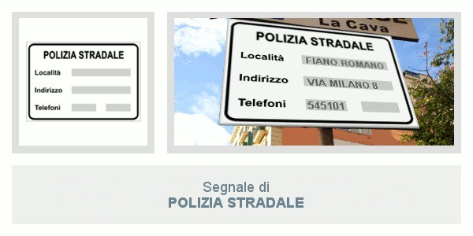
Il segnale di Polizia Stradale, visibile in alto, indica alcuni dati (come la località, l'indirizzo e i numeri telefonici) del più vicino comando della polizia stradale. Quindi mettiamo il caso che abbiate bisogno di contattare il più vicino comando di Polizia Stradale, oppure che dobbiate recarvici di persona, questo è il cartello che dovrete cercare.
Conclusione
E finalmente lo possiamo dire: anche la quarta ed ultima lezione sui Segnali di Indicazione si può dire conclusa. A questo punto non vi resta che allenarvi, possibilmente fino alla nausea, con i Quiz sui Segnali di Indicazione. Siate severi con voi stessi e, quindi, passate al prossimo argomento sui Segnali Temporanei e di Cantiere solo quando vedrete che gli errori fatti saranno sempre pari a ZERO!
Segnali Complementari, Segnali Temporanei e di Cantiere (Parte 1)
Benvenuti alla lezione 25 di Teoria Patente B in cui affronteremo l'argomento 9, ossia i Segnali Complementari e i Segnali Temporanei e Di Cantiere. I cartelli stradali di questo argomento non sono tanti, solo una ventina, ma abbiamo comunque preferito dividerli in due lezioni, giusto per una migliore esposizione delle nozioni.
Infatti in questa lezione vedremo insieme i Segnali Temporanei e Di Cantiere, capiremo perché vengono chiamati così e li analizzeremo ognuno nel dettaglio, mentre nella prossima lezione ci concentreremo solo sui Segnali Complementari. Siete pronti ad iniziare? Allora cosa aspettiamo!
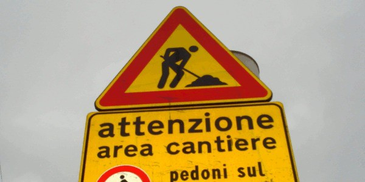
Per Segnali Temporanei e Di Cantiere si intendono tutti quei segnali che non hanno un carattere definitivo, ossia, detto in parole povere, che sono posti per un breve periodo e si trovano quasi sempre vicino ad un cantiere stradale. Riconoscere questi cartelli è abbastanza facile. Infatti hanno quasi tutti lo sfondo di colore giallo, come visibile dall'immagine in alto. Ma vediamoli meglio nel dettaglio!
Segnale di Lavori In Corso
Il primo segnale che andiamo ad analizzare è il segnale visibile in alto, ossia il segnale di Lavori In Corso. Questo cartello preavvisa, appunto, lavori in corso e, quindi, anche della presenza di cantieri di lavoro, di eventuali depositi temporanei di materiali, o macchinari, e della eventuale presenza di uomini che lavorano presso o sulla carreggiata. Questo segnale può essere integrato da un pannello che indica la lunghezza del cantiere.
Segnali temporanei di Preavviso Di Semaforo e di Preavviso Di Deviazione per veicoli di massa superiore a 7 t
Passiamo dunque al secondo segnale, ossia al segnale temporaneo di Preavviso Di Semaforo (visibile in alto a sinistra). Questo cartello si può trovare sia su strade urbane che extraurbane e preavvisa un impianto semaforico in presenza di un cantiere stradale. Ciò vuol dire che può essere posto, ad esempio, prima del restringimento di una carreggiata dovuto a lavori in corso.
Infine è importante sottolineare che, per richiamare l'attenzione dei conducenti, il disco al centro di questo cartello è a luce gialla lampeggiante. Quindi se all'esame dovesse capitarvi la domanda "Nel segnale raffigurato il disco al centro è a luce gialla lampeggiante" voi non dovete far altro che cliccare su "Vero".
Passiamo, quindi, al segnale temporaneo di Preavviso Di Deviazione per veicoli di massa superiore a 7 t, visibile in alto a destra. Questo cartello viene posto in vicinanza di un incrocio che anticipa un cantiere stradale ed indica una limitazione di transito su un tratto di strada per i veicoli di massa effettiva superiore a 7 tonnellate.
Quindi indica ai veicoli di massa effettiva superiore a 7 tonnellate diretti a Lucca che non gli è consentito proseguire diritto e che per raggiungere Lucca devono cambiare strada. Di conseguenza tutti i veicoli di massa a pieno carico uguale o inferiore a 7 tonnellate possono proseguire diritto.
Segnali temporanei di Direzione Consigliata Agli Autocarri di massa superiore a 3,5 t e di Uso Corsie Disponibili
Il segnale temporaneo di Direzione Consigliata Agli Autocarri di massa superiore a 3,5 t (in alto a sinistra) si trova in vicinanza di un incrocio che precede un cantiere stradale ed indica la direzione consigliata per gli autocarri di massa complessiva a pieno carico superiore a 3,5 tonnellate. In particolar modo questo segnale è installato nel punto della deviazione consigliata e può essere preceduto da un segnale di preavviso.
Il secondo segnale (in alto a destra), ossia il segnale temporaneo di Uso Corsie Disponibili, posto in presenza di lavori stradali, indica alle categorie di veicoli quali corsie possono occupare. Quindi indica che gli autocarri di massa complessiva superiore a 3,5 tonnellate possono percorrere solo la corsia di destra mentre gli altri veicoli possono percorrere tutte e due le corsie.
Segnali temporanei di Corsia Chiusa e di Preavviso Di Cantiere Mobile
Passiamo, dunque, ai segnali temporanei di Corsia Chiusa e di Preavviso Di Cantiere Mobile. Il segnale di Corsia Chiusa (visibile in alto a sinistra) è posto in vicinanza di un cantiere stradale ed indica un restringimento della carreggiata per lavori in corso.
In parole povere questo cartello indica una diminuzione da due a una corsia di marcia, ossia indica che la corsia di destra è chiusa a causa di lavori in corso. Questo cartello può essere completato con pannello che indica la distanza dal punto di chiusura della corsia.
Il secondo segnale, ossia il segnale di Preavviso Di Cantiere Mobile (in alto a destra), preavvisa un cantiere mobile con strettoia a sinistra, con conseguente diminuzione da tre a due corsie, ed indica le corsie disponibili per la circolazione. Questo cartello può essere installato su un veicolo quando, ad esempio, il cantiere stradale è mobile (ossia che si va spostando) e può essere completato con luci gialle lampeggianti, per richiamare maggiormente l'attenzione dei conducenti.
Pannello applicato su veicoli per lavori stradali, Barriera normale e Cono
Il segnale in alto a sinistra può essere posto sui veicoli per lavori stradali, fermi (ossia in sosta sulla carreggiata) o in lento movimento (ossia che procedono a bassa velocità) ed indica il lato dal quale il veicolo su cui è posto deve essere sorpassato. Pertanto in presenza di questo cartello i conducenti sono invitati a diminuire la velocità per la possibile presenza di veicoli fermi o in lento movimento.
Quante volte camminando per strada avete notato la presenza della barriera in alto al centro? Scommettiamo che la risposta è "molte volte". Ma a cosa serve questo oggetto così vistoso? La barriera in alto al centro è posta ai bordi di un cantiere stradale e serve, appunto, a delimitare un'area dove si stanno svolgendo lavori stradali. Questa barriera può essere utilizzata nei passaggi a livello quando le sbarre sono guaste e può essere integrata da lanterna a luce rossa fissa in caso di scarsa visibilità.
Ma se non è così difficile avvistare la barriera camminando per strada, lo è ancora meno avvistare il cono in alto a destra. Ed anche qui la domanda sorge spontanea: a cosa serve questo oggetto? Il cono viene utilizzato per diversi scopi, può, ad esempio, delimitare zone di lavoro di breve durata (ossia quando i lavori durano al massimo 2 giorni) oppure viene utilizzato per indicare aree interessate da incidenti, o ancora per segnalare deviazioni provvisorie o una separazione provvisoria dei sensi di marcia.
Conclusione
Questi in alto sono i segnali temporanei e di cantiere che abbiamo analizzato nel corso di questa lezione. Come potete vedere non sono tanti, quindi osservateli bene e ripetete tutto ciò che abbiamo detto finora. Infine vi consigliamo di osservarli per strada, in modo da arrivare preparati, e sicuri di voi stessi, non solo all'esame di teoria ma anche a quello di pratica. A questo punto non vi resta che passare alla prossima lezione sui Segnali Complementari.
Segnali Complementari, Segnali Temporanei e di Cantiere (Parte 2)
Benvenuti alla lezione 26, la seconda (e ultima) lezione dell'argomento 9 che tratta i Segnali Complementari e i Segnali Temporanei e Di Cantiere. Se nella scorsa lezione abbiamo affrontato solo i Segnali Temporanei e Di Cantiere, abbiamo visto perché vengono chiamati così e li abbiamo analizzati tutti nel dettaglio, in questa ci concentreremo solo sui Segnali Complementari.
Ma prima di passare in rassegna tutti i segnali è bene specificare prima cosa si intende per Segnali Complementari. Per Segnaletica Complementare si intende tutta quella segnaletica che evidenzia a distanza il tracciato stradale, soprattutto in corrispondenza di curve, punti critici e ostacoli. Un esempio di questo tipo è il delineatore in alto che serve, appunto, a segnalare un ostacolo. Ma andiamo con ordine!
Pannello con Numero Del Tornante
Il primo segnale di cui vogliamo parlarvi è il Pannello con Numero Del Tornante, visibile nell'immagine in alto. Ma prima di parlare di questo pannello è fondamentale specificare prima cos'è un "tornante". Un tornante altro non è che una curva con un angolo di curvatura prossimo ai 180°, ossia una curva prossima alla semicirconferenza (per meglio capire ciò di cui stiamo parlando vi basterà osservare la foto in alto, in cui potete vedere tutta una serie di tornanti).
Questo tipo di curva ha un raggio ridotto (ossia si tratta di una curva molto stretta) ed è, quindi, molto pericolosa. Riguardo al pannello visibile in alto quest'ultimo, in una serie di tornanti, ne indica il numero progressivo. Quindi il pannello raffigurato (dato che sopra c'è scritto "1°") indica il primo di una serie di tornanti.
Ma facciamo un esempio più pratico. Mettiamo il caso che dobbiate percorrere tre tornanti di fila, prima del primo tornante troverete il pannello visibile in alto (ossia con la scritta "1°"), prima del secondo tornante troverete il pannello con la scritta "2°" e prima del terzo tornante il pannello con la scritta "3°". Semplice, no?
Delineatori di margine per strade a doppio senso e per strade a senso unico
I delineatori visibili in alto a sinistra, invece, sono posti ai margini di una strada a doppio senso e servono a visualizzare meglio l'andamento della strada, soprattutto nei casi di scarsa visibilità. In particolar modo il delineatore con l'elemento rifrangente di colore bianco si trova a sinistra (rispetto al conducente), mentre quello con l'elemento rifrangente di colore rosso si trova a destra.
Questi delineatori vengono posti a una distanza di massimo 50 metri l'uno dall'altro nei rettilinei, mentre in curva la distanza che hanno l'uno dall'altro dipende dal raggio di curvatura della curva (valore che comunque non supera i 50 metri). Quindi se all'esame dovesse capitarvi la domanda "I delineatori raffigurati vengono posti a distanza di almeno 100 metri l'uno dall'altro" non dovete far altro che rispondere "falso".
Anche i delineatori in alto a destra servono a visualizzare meglio l'andamento della strada ma questi non sono posti ai margini di una strada a doppio senso, bensì ai margini di una strada, o di una carreggiata, a senso unico. In particolar modo il delineatore con i due cerchi rifrangenti gialli si trova a sinistra (rispetto al conducente), mentre quello con il rettangolo rifrangente di colore giallo si trova a destra.
Delineatore di margine per gallerie a senso unico e per strade di montagna
Il delineatore di margine visibile in alto a sinistra, invece, è posto ai lati delle gallerie a senso unico. Ma ricordate, questo delineatore può trovarsi non solo nelle gallerie a senso unico ma anche per evidenziare deviazioni o strettoie della carreggiata.
Il delineatore in alto a destra, invece, è molto familiare a chi abita in alta montagna (un po' meno per chi abita a bassa quota)! Questo delineatore, infatti, è posto ai lati della carreggiata nelle strade di montagna soggette ad innevamento per rendere meglio visibili i bordi della carreggiata nel caso in cui la strada sia coperta di neve.
Delineatore di curva stretta o di tornante
Il delineatore di curva stretta o di tornante è usato per segnalare una curva stretta e con mancanza di visibilità (quindi pericolosa) e si trova sulle strade extraurbane, di norma, dopo il segnale Curva Pericolosa A Sinistra. Pertanto questo delineatore invita il conducente a fare attenzione nel percorrere la curva. Se di colore bianco e rosso, indica una curva provvisoria a sinistra, dovuta a lavori in corso.
Delineatore modulare di curva

Il delineatore modulare di curva è usato per migliorare la visibilità delle curve. Infatti si trova in serie di più elementi (ossia più di questi delineatori messi a distanza ravvicinata, come visibile dalla foto in alto) per evidenziare una curva pericolosa a destra e può trovarsi sia su strade a senso unico che a doppio senso.
Delineatore di incrocio a “T” e Delineatore speciale di ostacolo
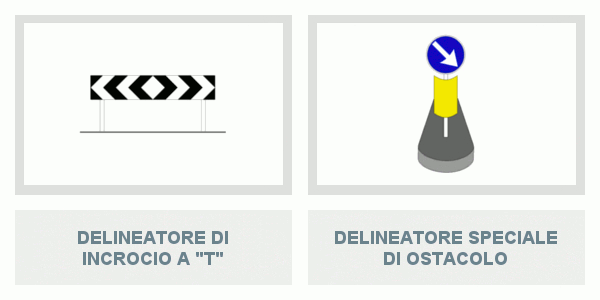
Il delineatore di incrocio a “T” (in alto a sinistra) è installato ad un incrocio a forma di "T", ossia ad un incrocio dove non è possibile proseguire diritto, ed indica di svoltare a destra o a sinistra. Infatti ha le punte delle frecce che segnalano le direzioni possibili.
E siamo giunti all'ultimo delineatore di questa lezione, quello speciale di ostacolo (in alto a destra), di cui vi avevamo già accennato all'inizio. Quest'ultimo viene posto all'interno della carreggiata (e non ai margini come nei precedenti) per segnalare un ostacolo, ad esempio un salvagente, un'isola di traffico oppure uno spartitraffico.
Vi ricordiamo, infine, che questo delineatore è rifrangente (ossia che riflette la luce) per una migliore visibilità nelle ore notturne. Quindi se all'esame dovesse capitarvi la domanda "Il delineatore raffigurato è dotato di luce propria" dovete rispondere "falso" in quanto la luce è solo riflessa.
Conclusione
Questi in alto sono tutti i Segnali Complementari che abbiamo analizzato nel corso di questa lezione. Quindi, come diciamo sempre, osservateli e ripetete tutto! Da adesso in poi, quando camminando per strada incontrerete uno o più di questi segnali ai vostri occhi non appariranno più come prima, ossia dei semplici paletti senza alcuna utilità!
A questo punto non vi resta che allenarvi con i quiz sui Segnali Complementari e i Segnali Temporanei e Di Cantiere. Fatene a più non posso e se vedete che gli errori sono sempre tanti non insistete a continuare bensì rileggete questa lezione nuovamente, probabilmente alcuni concetti sono stati presi alla leggera ed hanno bisogno di una ripassata. Fatto ciò non vi resta che passare alla prossima lezione sui Pannelli integrativi dei segnali!
Pannelli integrativi dei segnali (Parte 1)
Benvenuti alla lezione 27! Se nelle scorse due lezioni abbiamo affrontato l'argomento 9 sui Segnali Complementari e i Segnali Temporanei e Di Cantiere in questa e nella prossima lezione analizzeremo l'argomento 10 che riguarda i Pannelli Integrativi dei segnali. Ma prima di analizzarli tutti è fondamentale che capiate prima cosa si intende per pannelli integrativi.
Un pannello integrativo altro non è che un segnale stradale verticale che completa la prescrizione di un altro segnale verticale, come visibile dalla foto in alto. Quindi questo pannello contiene dei simboli e delle scritte molto esplicative, che aiutano l'automobilista a capire il messaggio che vuole lanciargli.
Infatti osservando la foto in alto non è difficile capire che lo scopo del pannello posto sotto il segnale di Divieto Di Transito è informare l'automobilista che il transito è vietato nei giorni di attività scolastiche dalle ore 7.00 alle 9.00 e dalle 12.30 alle 14.00. Capito lo scopo e l'utilità di questi graziosi pannelli possiamo iniziare ad analizzarli tutti!
Pannello integrativo di Distanza

Iniziamo la nostra rassegna partendo dai pannelli visibili in alto. Questi pannelli, ossia i pannelli integrativi di Distanza, come detto poc'anzi, servono a completare il significato del segnale sovrastante. Infatti questi pannelli possono essere posti sotto un segnale di pericolo, di indicazione, di obbligo o di divieto, ed indicano la distanza che manca per raggiungere il punto indicato dal segnale.
Ma facciamo un esempio più pratico. Mettiamo che il pannello A (quello in alto per intenderci) si trovi sotto al segnale "Curva Pericolosa A Destra". Il pannello A completa il significato del segnale sovrastante informando l'automobilista che la curva pericolosa si trova a 320 metri dal segnale (come visibile dalla foto in alto a destra).
Ma prima di passare al prossimo pannello ci teniamo a mettervi in guardia sulla possibilità di confondere questo pannello, ossia il pannello integrativo di Distanza, con il pannello integrativo di Estesa. Molti dei possibili errori sulle domande che riguardano questi pannelli sono dettati da questa distrazione. Infatti questi pannelli seppure molto simili graficamente presentano un significato del tutto diverso. Quindi fate attenzione!
Pannello integrativo di Estesa
Passiamo dunque al Pannello integrativo di Estesa (visibile in alto) di cui abbiamo accennato poco fa. Anche questo pannello completa il significato del segnale sovrastante e può trovasi sotto un segnale di pericolo, di obbligo o di divieto. Ma in questo caso non indica la distanza che manca per raggiungere il punto indicato dal segnale bensì indica la lunghezza del tratto stradale nel quale vale la prescrizione del segnale.
Facciamo qualche esempio più pratico. Mettiamo che il pannello in alto (il pannello A) si trovi sotto il segnale di "Strada Deformata". Quest'ultimo completa il segnale sovrastante informando l'automobilista che il tratto di strada deformato è lungo 380 metri. Allo stesso modo se questo pannello dovesse trovarsi sotto il segnale "Doppia Curva Pericolosa, la prima A Destra" indicherebbe che la lunghezza del tratto stradale con curve pericolose in successione è di 380 metri (come visibile nella foto in alto a destra).
Adesso che avete ben compreso la notevole differenza che intercorre tra il pannello integrativo di "Distanza" e quello di "Estesa" non vi resta che osservare bene il pannello prima di rispondere alle domande, soprattutto durante l'esame ufficiale. Ricordare che il pannello di Estesa presenta due frecce laterali a differenza di quello di Distanza vi sarà di notevole aiuto!
Pannelli integrativi di Fascia Oraria
Passiamo dunque ai pannelli integrativi di fascia oraria, visibili in basso. Questi pannelli indicano l'orario in cui ha validità il segnale sovrastante e ne specificano il giorno, ossia indicano se si tratta dell'orario di un giorno festivo, di un giorno lavorativo oppure di entrambi. Oltre all'orario, quindi, è fondamentale osservare il disegno che si trova sul pannello, ossia vedere se si tratta di una croce, di due martelli incrociati oppure se prima dell'orario non c'è alcun disegno. Ma analizziamo ognuno nel dettaglio.
Pannello integrativo di Fascia Oraria Di Tutti I Giorni
Il primo pannello a sinistra, ossia il pannello integrativo di Fascia Oraria Di Tutti I Giorni, indica le ore di tutti i giorni nelle quali vale il segnale. Quindi mettiamo che, circolando per strada, vediate sotto un segnale il pannello B. Voi saprete che il segnale sovrastante è valido tutti i giorni (quindi sia i giorni festivi che quelli lavorativi) dalle ore 7.30 alle 19.00.
Ma facciamo qualche esempio, ancora più pratico, per meglio capirne il significato. In base a quanto appena detto, dunque, se camminando per strada vedete il segnale di Divieto Di Transito con sotto il pannello integrativo di Fascia Oraria Di Tutti I Giorni (pannello B) il messaggio è chiaro: il transito è vietato tutti i giorni dalle ore 7.30 alle 19.00.
Se invece questo pannello si trova sotto il segnale di Divieto Di Segnalazioni Acustiche indica che è vietato usare il clacson tutti i giorni dalle ore 7.30 alle 19.00. Allo stesso modo, se dovesse trovarsi sotto il Divieto Di Sosta indica che la sosta è vietata tutti i giorni dalle ore 7.30 alle 19.00. Semplice no?
Pannello integrativo di Fascia Oraria Dei Giorni Festivi
Passiamo, dunque, al pannello di Fascia Oraria Dei Giorni Festivi (quello al centro). Questo pannello precisa che il segnale sotto cui è posto vale solo nei giorni festivi e nelle fasce orarie
indicate. Quindi la croce rappresentata sta ad indicare che l'orario indicato si riferisce solo ai giorni festivi, per cui se all'esame dovesse capitarvi la domanda "Il pannello integrativo raffigurato indica l'orario d'ingresso nel cimitero" voi non dovete far altro che sorridere e cliccare su "falso".
Ma facciamo qualche esempio! Mettiamo che questo pannello si trovi sotto il segnale di Divieto Di Transito, voi saprete che il transito è vietato dalle ore 8.00 alle ore 20.00 dei soli giorni festivi. Allo stesso modo, messo sotto il segnale di Divieto Di Sosta vieta la sosta nella fascia oraria indicata, dei giorni festivi.
Posto, invece, sotto il segnale di Percorso Pedonale consente il transito nei giorni festivi e nelle fasce orarie indicate ai soli pedoni. Allo stesso modo, posto sotto il segnale di Pista Ciclabile consente il transito dalle ore 8.00 alle ore 20.00 dei giorni festivi ai soli ciclisti.
Pannello integrativo di Fascia Oraria Dei Giorni Lavorativi
Il pannello di Fascia Oraria Dei Giorni Lavorativi indica, invece, la fascia oraria dei giorni lavorativi durante la quale vale la prescrizione del segnale sotto cui è posto. Quindi i due martelli incrociati stanno ad indicare che l'orario rappresentato si riferisce solo ai giorni lavorativi.
Quindi, in base a quanto abbiamo appena detto, questo pannello posto sotto il segnale di Divieto Di Transito vieta il transito nella fascia oraria indicata, ossia dalle ore 8.00 alle 20.00, dei soli giorni lavorativi. Allo stesso modo, se dovesse trovarsi sotto il Divieto Di Sosta vieterebbe la sosta nella fascia oraria indicata dei soli giorni lavorativi.
Pannelli integrativi di Limitazione e di Eccezione
Passiamo, dunque, ai pannelli integrativi di Limitazione e di Eccezione, visibili in alto. Il primo pannello a sinistra, ossia il pannello integrativo di Limitazione può essere abbinato ad un segnale di obbligo o di divieto ed indica che il segnale al quale è abbinato vale solo per i veicoli rappresentati, ossia gli autoarticolati.
Quindi mettiamo che questo pannello si trovi sotto un Divieto Di Transito, il transito sarebbe vietato ai soli veicoli indicati. Se, invece, dovesse trovarsi sotto il segnale di Divieto Di Sosta, oppure Di Fermata, sarebbe la sosta ad essere vietata solo agli autoarticolati.
Anche il pannello integrativo di Eccezione può essere abbinato ad un segnale di obbligo o di divieto. Ma quest'ultimo non indica che il segnale al quale è abbinato vale solo per i veicoli rappresentati bensì, al contrario, indica che il segnale sotto cui è posto non vale per i veicoli rappresentati, in questo caso gli autobus.
Ma facciamo un paio di esempi pratici per capirci meglio! Mettiamo che il pannello Eccezione si trovi sotto il segnale di Senso Vietato il divieto di accesso sarà rivolto a tutti i veicoli, ad eccezione degli autobus, che invece potranno transitare liberamente. Se, invece, questo pannello si trova sotto il segnale di Parcheggio indica che possono parcheggiare tutti i veicoli tranne gli autobus.
Pannelli integrativi di Inizio, di Continua e di Fine
E siamo giunti agli ultimi tre pannelli per questa lezione. Si tratta dei pannelli integrativi di Inizio, di Continua e di Fine, visibili nell'immagine in alto. Iniziamo dunque analizzando il primo pannello a sinistra, ossia quello di Inizio. Questo pannello può essere posto sotto un segnale di Pericolo, di Prescrizione o di Indicazione ed evidenzia il punto d'inizio del pericolo, della prescrizione o dell’indicazione.
Mettiamo, dunque, che si trovi sotto il segnale di Divieto Di Fermata servirebbe ad evidenziare il punto d'inizio del divieto di fermata. Lo stesso accade se messo sotto il segnale di Divieto Di Sosta, ossia indicherebbe che il divieto di sosta ha inizio in quel punto. Posto sotto il segnale di Parcheggio, invece, evidenzia l'inizio dell'area dove è possibile parcheggiare. Mentre se posto sotto il segnale di Percorso Pedonale evidenzia il punto d'inizio del viale pedonale. E cosi via...
Passiamo, dunque, al pannello integrativo di Continua. Anche questo pannello può essere posto sotto un segnale di Pericolo, di Prescrizione o di Indicazione ed indica che il pericolo, la prescrizione (divieto, obbligo o precedenza) o l’indicazione continuano a valere sia prima che dopo il segnale. Ma facciamo qualche esempio!
Mettiamo che questo pannello si trovi sotto il segnale di Strada Sdrucciolevole indicherebbe la continuazione del tratto di strada sdrucciolevole. Posto, invece, sotto il segnale di Divieto Di Sorpasso conferma la continuazione del divieto di sorpasso. Mentre se posto sotto il segnale di Divieto Di Fermata indica che la fermata è vietata sia prima che dopo il segnale.
E siamo giunti all'ultimo pannello di questa lezione, si tratta del pannello integrativo di Fine. Quale miglior pannello per concludere la lezione di questo?! Questo pannello, da come avrete già capito, indica la fine del pericolo, della prescrizione o dell’indicazione, in base al tipo di segnale sotto cui è posto.
Quindi se posto sotto il segnale di Strada Deformata indica la fine della strada deformata. Se posto sotto il segnale di Strada Sdrucciolevole indica la fine della strada sdrucciolevole. Se posto sotto il segnale di Divieto Di Fermata indica il punto dove termina il divieto di fermata. E cosi via...
Conclusione
Questi in alto sono i pannelli integrativi che abbiamo studiato nel corso di questa lezione. Osservateli attentamente e ripetete tutto ciò che abbiamo detto finora. Sono proprio i simboli e
le scritte a caratterizzare di più i pannelli, dandogli ad ognuno un significato diverso. Quindi occhio! Nella prossima lezione, ossia Pannelli Integrativi dei segnali (parte 2), continueremo a studiare l'argomento 10 analizzando i restanti pannelli. Quindi buona continuazione.
Pannelli integrativi dei segnali (Parte 2)
Benvenuti alla seconda lezione sui Pannelli Integrativi dei segnali. Se nella scorsa lezione abbiamo visto cosa sono i Pannelli Integrativi, qual'è il loro scopo e abbiamo iniziato ad analizzarne alcuni, in questa lezione affronteremo i restanti pannelli. Quindi, a questo punto, non ci resta che iniziare!
Pannello integrativo di Corsia
Iniziamo la nostra rassegna partendo dal Pannello integrativo di Corsia, visibile in alto. Questo pannello, posto in alto sulla carreggiata insieme ad un segnale, specifica a quale corsia si riferisce il segnale. Quindi, se questo pannello viene posto in alto sulla carreggiata insieme ad un segnale indicante una località, segnala la corsia da prendere per raggiungere detta località.
Pannelli integrativi di Segni Orizzontali In Rifacimento e di Incidente
Il pannello integrativo di Segni Orizzontali In Rifacimento, invece, viene posto sotto il segnale Altri Pericoli e preavvisa che temporaneamente manca la segnaletica orizzontale sulla carreggiata oppure indica che si stanno svolgendo i lavori per rifare la segnaletica orizzontale.
Mentre il pannello integrativo di Incidente segnala che a causa di un incidente stradale la carreggiata è occupata da veicoli incidentati e che quindi, per ovvi motivi di sicurezza, occorre diminuire la velocità. Anche questo pannello come il precedente si trova sotto il segnale Altri Pericoli.
Pannello integrativo di Attraversamento Di Binari
Passiamo, dunque, al pannello integrativo di Attraversamento Di Binari. Questo pannello è abbinato al segnale Altri Pericoli (come visibile dalla foto in alto) e preavvisa la presenza di binari di manovra o di raccordo in prossimità di scali merci. Pertanto è necessario, in prossimità di questo segnale, diminuire la velocità.
Pannelli integrativi di Sgombraneve In Azione e di Mezzi Di Lavoro In Azione
Il pannello integrativo di Sgombraneve In Azione è posto su strade innevate, sotto il segnale di Altri Pericoli, per segnalare la presenza di macchine sgombraneve al lavoro sulla strada. Invita, pertanto, a diminuire la velocità e a mantenere una distanza di almeno 20 metri dalle macchine sgombraneve in funzione.
Il pannello integrativo di Mezzi Di Lavoro In Azione, invece, indica la presenza di cantieri stradali con macchine operatrici (ossia escavatori e pale meccaniche) in azione. Quindi, vista la presenza di escavatori e pale meccaniche al lavoro, invita ad usare particolare prudenza.
Pannello integrativo di Zona Soggetta Ad Allagamento
Il pannello integrativo di Zona Soggetta Ad Allagamento indica il pericolo di allagamento della carreggiata in caso di pioggia o forte mareggiata e, pertanto, invita ad usare prudenza. Questo pannello può facilmente trovarsi sotto il segnale di Cunetta (come visibile dall'immagine in alto) in quanto la cunetta, vista la sua particolare conformazione, potrebbe facilmente allagarsi in caso di forti piogge.
Della cunetta abbiamo già parlato nella prima lezione sui Segnali Di Pericolo. Ma per chi non lo ricordasse, una cunetta altro non è che un avvallamento della strada, ossia un tratto di strada in discesa seguito da uno in salita (con un profilo del tutto simile a quello disegnato sul segnale).
Pannello integrativo di Coda
Passiamo, dunque, al pannello integrativo di Coda (visibile in alto). Questo pannello indica la possibilità di trovare traffico intenso, con formazione di colonne di veicoli e, pertanto, invita ad usare prudenza, per non tamponare i veicoli fermi per intasamento del traffico. Questo pannello, posto sull'autostrada, può consigliare di uscire per evitare probabili rallentamenti o code oppure può trovarsi all'ingresso delle autostrade, per indicare che vi sono veicoli in lento movimento.
Pannelli integrativi di strada sdrucciolevole Per Pioggia e Per Ghiaccio
Il pannello integrativo di strada sdrucciolevole Per Pioggia (in alto a sinistra) indica che quando piove la strada può diventare sdrucciolevole (ossia viscida, in caso di fango sulla strada, oppure levigata). Un tratto di strada sdrucciolevole è alquanto pericoloso, in quanto ci si può facilmente scivolare, per cui questo pannello invita, in caso di pioggia, ad aumentare la distanza di sicurezza e a diminuire la velocità.
Il pannello integrativo di strada sdrucciolevole Per Ghiaccio (in alto a destra) indica, in caso di bassa temperatura o su strade coperte di neve, la possibilità di trovare tratti di strada ghiacciati. Quindi, visto che su una strada ghiacciata ci si può facilmente scivolare, invita ad usare particolare prudenza.
Sia il pannello integrativo Per Pioggia che quello Per Ghiaccio si possono trovano sotto il segnale di Strada Sdrucciolevole (come visibile dall'immagine in alto). Infatti il segnale di Strada Sdrucciolevole preannuncia un tratto di strada che può diventare sdrucciolevole (ossia scivoloso) in particolari condizioni climatiche. E queste condizioni climatiche sono specificate dagli appositi pannelli integrativi, che possono essere "Per pioggia" (in alto a sinistra) oppure "Per ghiaccio" (in alto a destra).
Pannello integrativo di Autocarri In Rallentamento
Passiamo dunque al Pannello integrativo di Autocarri In Rallentamento, visibile in alto a sinistra. Questo pannello può essere abbinato al segnale di Salita Ripida Con Pendenza Del 10% e indica un tratto di strada in ripida salita con probabile presenza di autocarri che marciano a bassa velocità. Quindi, vista la probabile presenza di veicoli pesanti in lento movimento, indica di fare attenzione e di circolare ad una velocità prudenziale, al fine di evitare incidenti.
Pannello integrativo di Zona Rimozione Coatta
Il pannello integrativo di Zona Rimozione Coatta, invece, è abbinato al segnale di Divieto Di Sosta (come visibile in alto) ed indica che il veicolo può essere portato via dal carro-attrezzi per essere spostato in una depositeria comunale oppure che può essere bloccato tramite ganasce (ossia morse "blocca ruota"). Ciò vale per tutti i veicoli ad eccezione di quelli al servizio di persone diversamente abili, muniti di apposito contrassegno, che non possono essere portati nella depositeria comunale, né bloccati con le ganasce.
Pannelli integrativi di Tornante, di Pulizia Meccanica Della Strada e di Andamento Strada Principale
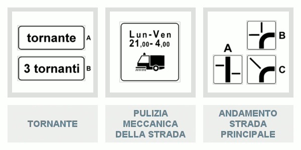
E siamo giunti agli ultimi tre pannelli di questo decimo argomento (visibili in alto). Si tratta del pannello integrativo di Tornante (quello a sinistra), del pannello di Pulizia Meccanica Della Strada
(al centro) e quello di Andamento Strada Principale (a destra). Ma analizziamo ognuno nel dettaglio!
Il pannello integrativo di Tornante indica la vicinanza di una o più curve strette (ossia curve a raggio ridotto chiamate "tornanti") particolarmente pericolose. Questo pannello si può trovare sotto il segnale di Curva oppure sotto quello di Doppia Curva.
Il pannello integrativo di Pulizia Meccanica Della Strada è posto sotto il segnale di Divieto Di Sosta e indica i giorni e le ore in cui si effettuano operazioni di pulizia della strada con autospazzatrici. Quindi, per poter consentire queste operazioni di pulizia, la sosta è vietata in determinate ore dei giorni indicati. Ma facciamo un esempio più pratico.
Mettiamo che un lunedì sera dobbiate parcheggiare. Avete trovato un bel posticino per la vostra auto ma vedete che sotto il Divieto Di Sosta si trova il pannello visibile in alto al centro. Voi saprete che la pulizia della strada si effettua dal lunedì al venerdì dalle ore 21.00 alle ore 4.00. A questo punto guardate l'orologio ma vedendo che segna le 22.00 voi andrete a parcheggiare l'auto altrove, in quanto lì non è possibile sostare.
E siamo giunti agli ultimi pannelli integrativi, ossia quelli di Andamento Strada Principale (visibili in alto a destra). Questi pannelli sono posti sotto i segnali di Diritto Di Precedenza, in vicinanza di una intersezione (ossia di un incrocio), e servono ad indicare l'andamento della strada principale, che si distingue dalle strade secondarie in quanto rappresentata con una linea più marcata.
Conclusione
E siamo giunti al termine dell'argomento 10. Questi in alto sono tutti i pannelli integrativi che abbiamo analizzato nel corso di questa lezione. Da come potete notare basta osservarli attentamente per capire il messaggio che vogliono trasmettere. Infatti tante macchine una dietro l'altra non possono che indicare la possibilità di trovare traffico intenso, con formazione di colonne di veicoli.
Così come due macchine che si toccano non possono che segnalare un incidente stradale e che la carreggiata è occupata dai veicoli incidentati. Insomma, come già detto al termine della scorsa lezione, i disegni e le scritte aiutano molto a capire di che pannello si tratta. A questo punto non vi resta che verificare se tutto è stato ben compreso attraverso i quiz sui Pannelli Integrativi prima di passare all'argomento 11, ossia Limiti di velocità, pericolo e intralcio alla circolazione.
Limiti di velocità, pericolo e intralcio alla circolazione (Parte 1)
Tutti voi, anche se non ancora patentati, sapete che guidare un veicolo può portare a situazioni di estremo pericolo. Infatti basta leggere i titoli dei giornali per rendersene conto. Ed è per questo che all'esame della patente dovrete rispondere a domande che riguardano Limiti di velocità, pericolo e intralcio alla circolazione, che è proprio l'argomento 11 del manuale patente b che stiamo per spiegarvi.
Ma se in questa lezione vedremo esclusivamente le situazioni di Pericolo e Intralcio Alla Circolazione, nella prossima lezione ci concentreremo esclusivamente sui Limiti di velocità. Imparare a riconoscere e a padroneggiare una situazione di pericolo è di estrema importanza quando si è alla guida, e non solo per la propria incolumità ma anche per quella degli altri.
Infatti, volando su un aereo che sta perdendo quota improvvisamente, vorreste che alla guida del velivolo ci sia un pilota esperto e che sappia cosa fare? Immaginiamo che la risposta sia un secco "si!"! Allo stesso modo i vostri passeggeri e gli altri conducenti spereranno che, in una situazione pericolosa, ci sia alla guida del veicolo qualcuno che sappia cosa fare.
Quindi in questa lezione vi illustreremo alcune delle situazioni più pericolose in cui potrete imbattervi durante la guida, come il caso della macchina che si ferma sui binari del treno, oppure il caso del pallone che rotola sulla carreggiata, e vi spiegheremo dettagliatamente cosa dovrete fare. Sapere queste cose vi sarà utile non solo in sede d'esame ma anche, e soprattutto, ad evitare inutili incidenti. Quindi aprite bene le orecchie!
Comportamenti ai passaggi a livello
Iniziamo la nostra rassegna parlando dei comportamenti da adottare quando si attraversa un Passaggio A Livello. Dei passaggi a livello ne abbiamo già ampiamente parlato nella
seconda lezione di Teoria, ossia quando abbiamo parlato della Classificazione Delle Strade, e nella prima lezione sui Segnali Di Pericolo. Quindi, qualora non lo abbiate già fatto, vi consigliamo di leggere queste due lezioni.

A questo punto, quindi, già avrete capito che attraversare un Passaggio A Livello può portare a situazioni di pericolo, soprattutto se non vengono rispettate tutte le norme previste, ad esempio eseguendo una manovra azzardata per guadagnare tempo. Ciò, infatti, può mettere in pericolo l'incolumità di molti individui, come le persone che viaggiano su un treno in transito, oltre che quella del conducente.
Inoltre ai passaggi a livello occorre usare la massima prudenza e moderare la velocità anche per evitare situazioni di pericolo che comportino la collisione con le barriere del passaggio stesso e il danneggiamento delle altre attrezzature. Quindi, ricapitolando, quando si attraversa un Passaggio A Livello bisogna rispettare tutte le norme previste, moderare la velocità e usare la massima prudenza. Ma vediamo cosa fare qualora si dovesse rimanere bloccati sui binari col proprio veicolo quando le barriere cominciano a chiudersi.
Pericoli: arresto forzato sui binari di un passaggio a livello
La prima cosa da fare è mantenere la calma per poi sgomberare in qualunque modo la sede ferroviaria, se necessario anche sfondando le barriere. Qualora si rimane bloccati per un guasto del veicolo, occorre adoperarsi per rimuovere il veicolo al più presto, ad esempio facendosi aiutare da altri utenti a spingere il veicolo fuori dalla linea ferroviaria oppure facendosi trainare.
Se, nonostante tutti gli sforzi, non è possibile spostare il veicolo subito dai binari, bisogna far scendere immediatamente tutte le persone che si trovano a bordo, e fare in modo che i conducenti dei veicoli su rotaie siano avvisati in tempo utile del pericolo (contattando, ad esempio, la stazione ferroviaria).
Pericoli: discesa con il cambio in folle, pallone che rotola sulla carreggiata e passare molto vicino ad un’auto parcheggiata
Pericoli: discesa con il cambio in folle
Vediamo adesso i pericoli in cui ci si può imbattere percorrendo una lunga discesa con il cambio in folle e a motore spento. Ma prima di elencarvi i pericoli occorre precisare cosa vuol dire "con il cambio in folle". Mettere "il cambio in folle" vuol dire, molto semplicemente, non inserire alcuna marcia.
Se si percorre una lunga discesa con il cambio in folle e a motore spento, diventa difficoltoso muovere lo sterzo, se il veicolo è dotato di servosterzo, e frenare, se il veicolo è dotato di servofreno. Infatti nei veicoli dotati di servosterzo diventa difficoltoso girare rapidamente lo sterzo per schivare un ostacolo.
Mentre nei veicoli dotati di servofreno diventa sempre più difficoltoso arrestare il veicolo, facendo aumentare pericolosamente lo spazio di frenatura e, di conseguenza, anche il rischio di provocare incidenti. Quindi, se dovete percorrere una lunga discesa, fatelo sempre con il motore acceso e con marcia inserita.
Pericoli: pallone che rotola sulla carreggiata
Passiamo, dunque, ai pericoli che si nascondono dietro a un pallone che rotola sulla carreggiata. In un centro abitato, se si vede un pallone rotolare sulla carreggiata, bisogna prevedere anche il possibile attraversamento della strada da parte di un bambino. Quindi bisogna diminuire subito la velocità per potersi fermare, se necessario.
Ma bisogna rallentare progressivamente, per evitare di essere tamponati dal veicolo che segue. Infatti in questa situazione è necessario non eseguire alcuna manovra in modo brusco come sterzare bruscamente oppure evitare il pallone, invadendo la corsia opposta, ecc.
Pericoli: passare molto vicino ad un’auto parcheggiata
Anche passare molto vicino ad un’auto parcheggiata può essere pericoloso. Infatti se a bordo dell'auto parcheggiata si trovano ancora persone, può essere pericoloso per la possibile apertura imprudente delle portiere oppure perché l'auto parcheggiata potrebbe impedire la vista di un disabile in carrozzella, o di un pedone che spinge un passeggino per bambini, in procinto di attraversare.
Regolazione della velocità
E siamo giunti al fattore velocità! Sapere quando è il caso di rallentare, quando bisogna rallentare particolarmente e quando ci si deve anche fermare è fondamentale per condurre una guida in tutta sicurezza. Ma in base a quali fattori bisogna regolare la velocità?
Il conducente deve regolare la velocità:
in modo da rispettare le limitazioni imposte, ossia entro i limiti consentiti;
in relazione alle proprie condizioni psicofisiche;
in relazione alle caratteristiche del veicolo;
in relazione allo stato e al carico del veicolo;
in relazione ai luoghi (ossia scuole, posti frequentati dai bambini ecc.) e alle caratteristiche della strada (ossia discesa, curva ecc.);
in relazione alle condizioni della strada (ossia in presenza di buche, sconnessioni, fogliame bagnato ecc.);
in relazione alle condizioni del traffico;
in modo da non costituire pericolo per le persone e per le cose;
in modo da non costituire disordine per la circolazione;
in relazione alle condizioni atmosferiche e ambientali.
Sono solo 10 i punti da tenere a mente. Questi fattori sono di fondamentale importanza quando si è alla guida, quindi imparateli come se fossero i 10 comandamenti (onora le limitazioni imposte, non correre se le tue condizioni psicofisiche non lo permettono, ricordati delle caratteristiche del veicolo ecc. :D).
Ma prima di passare ai casi in cui si deve moderare particolarmente la velocità e ai casi in cui bisogna essere pronti anche a fermarsi, ci preme soffermarci sui punti 5 e 10, ossia "in relazione ai luoghi e alle caratteristiche della strada" e "in relazione alle condizioni atmosferiche e ambientali".
Punto 5: obbligo di regolare la velocità in relazione ai luoghi e alle caratteristiche della strada
Quindi, in relazione ai luoghi e alle caratteristiche della strada, è obbligatorio regolare la velocità:
nelle curve;
in prossimità delle intersezioni;
in prossimità delle scuole;
in prossimità di luoghi frequentati dai bambini;
nelle forti discese;
nei passaggi stretti;
nei passaggi ingombrati;
nell'attraversamento di centri abitati;
nei tratti di strada fiancheggiati da edifici;
quando sia difficoltoso l'incrocio con altri veicoli.
Punto 10: obbligo di regolare la velocità in relazione alle condizioni atmosferiche e ambientali
In relazione alle condizioni atmosferiche e ambientali, è obbligatorio regolare la velocità:
nei tratti di strada a visibilità limitata;
nelle ore notturne;
in caso di nebbia o foschia (infatti sulle autostrade e sulle strade extraurbane principali, in caso di nebbia fitta, con visibilità inferiore a 100 m, possono essere imposti limiti massimi temporanei di velocità, non superiori a 50 km/h);
nei tratti di strada coperti da neve;
nei tratti di strada coperti da ghiaccio;
in caso di forte vento laterale;
in caso di abbagliamento dovuto al sole.
Casi in cui si deve in particolare regolare e moderare la velocità
La velocità deve essere particolarmente moderata:
in prossimità di un incrocio;
nelle strettoie;
quando risulta difficoltoso l'incrocio con altri veicoli;
nei tratti di strada in cui manca la visibilità (curve, dossi);
quando, in mancanza di marciapiedi, i pedoni occupano la carreggiata;
quando la strada è viscida, a causa di acqua, neve, ghiaccio, foglie o fango.
Casi in cui si deve ridurre la velocità e all’occorrenza fermarsi
È obbligatorio ridurre la velocità e all'occorrenza fermarsi:
in prossimità degli attraversamenti pedonali;
quando i pedoni, che sono sul percorso, tardano a scansarsi oppure danno segni d'incertezza;
quando gli animali che si trovano sulla strada danno segni di spavento;
quando si rimane abbagliati;
negli incroci, per far passare i veicoli cui spetti la precedenza oppure quando riesce malagevole l'incrocio con altri veicoli.
Altri casi in cui occorre regolare la velocità
Regolazione della velocità agli incroci
Si deve sempre regolare la velocità agli incroci, anche se si ha la precedenza. Infatti se si attraversa ad alta velocità un incrocio, pur avendo diritto di precedenza, in caso di incidente non può escludersi un concorso di colpa.
Regolazione della velocità in caso di lavori in corso o in presenza del triangolo di veicolo fermo
Si deve, in particolare, regolare la velocità in presenza di lavori in corso oppure se si incontra sulla strada il segnale di veicolo fermo (ossia il triangolo mobile di pericolo).
Regolazione della velocità in caso di traffico misto
La velocità deve essere diminuita anche in caso di traffico misto, ossia in presenza di veicoli lenti e veloci o di animali e pedoni che occupano la strada.
Velocità nella marcia per file parallele
Quando si viaggia per file parallele (in genere lungo le corsie di canalizzazione) è possibile che nella corsia di destra si circoli ad una velocità superiore a quella di sinistra, sempre nel rispetto dei limiti massimi di velocità disposti per quel tipo di strada.
Al momento, riguardo alla marcia per file parallele vi basta sapere questo. Poi ci ritorneremo tra qualche lezione quando affronteremo l'argomento 13. Invece, riguardo alle corsie di canalizzazione, note anche come corsie di preselezione, se non ricordate più cosa sono, vi consigliamo di rileggere la seconda lezione sulla Segnaletica Orizzontale.
Obbligo di mantenere il controllo del veicolo
E siamo quasi giunti al termine della lezione. Ma prima di lasciarvi vi abbiamo riservato per ultimo la regola più importante della lezione: il conducente deve sempre mantenere il controllo del veicolo e deve sempre essere in grado di arrestare il veicolo nel campo di visibilità (ossia nello spazio visibile dal conducente) e in condizioni di sicurezza.
Conclusione
Adesso conoscete alcune delle situazioni più pericolose in cui potrete imbattervi quando sarete alla guida e i casi in cui occorre regolare la velocità. Concentratevi molto sulle liste e se fate fatica a ricordare tutti i punti, scrivetele su un foglio di carta. Per ogni punto immaginatevi la situazione (ad esempio, per il punto 6, immaginate che state percorrendo lentamente una strada piena di buche che voi conoscete) e vedrete che memorizzarle non sarà per nulla difficoltoso. A questo punto potete passare alla lezione sui "Limiti Di Velocità"!
Limiti di velocità, pericolo e intralcio alla circolazione (Parte 2)
Cari studenti benvenuti alla lezione n° 30, dove analizzeremo tutti i Limiti Di Velocità vigenti in Italia. Se nella scorsa lezione abbiamo affrontato la prima parte dell'argomento 11, ossia Limiti di Velocità, Pericolo e Intralcio Alla Circolazione, parlando esclusivamente delle situazioni di Pericolo e Intralcio alla circolazione in cui potrete imbattervi, in questa lezione ci concentreremo solo sui Limiti Di Velocità.
Ma prima di andare avanti ci preme sottolineare che i Limiti Di Velocità non sono gli stessi in tutti gli Stati d’Europa e che, quindi, in Italia sono vigenti limiti massimi differenti da quelli degli altri stati. In questa lezione vedremo esclusivamente i limiti massimi vigenti in Italia, che poi sono quelli che vi saranno chiesti all'esame, ma se dovrete fare un viaggio all'estero vi consigliamo di memorizzare i limiti di velocità della nazione in cui state per andare, prima di varcare i confini.
Limiti Di Velocità Generali
Innanzitutto occorre precisare che i limiti di velocità non sono gli stessi per tutte le categorie di veicoli e che si differenziano in base al tipo di strada che si deve percorrere. Quindi il limite di velocità su un'autostrada è diverso da quello in un centro urbano. Pertanto iniziamo con l'esporvi i limiti di velocità generali.
Per limiti di velocità generali si intendono i limiti di velocità dei veicoli fino a 3,5 tonnellate (ossia motocicli, autovetture, autocaravan, autovetture con carrello-appendice e autocarri) e sono:
50 km/h sulle strade urbane (ossia nei centri abitati);
70 Km/h sulle strade urbane con particolari caratteristiche ed in presenza di apposito segnale;
90 km/h sulle strade extraurbane secondarie;
110 km/h sulle strade extraurbane principali;
130 km/h sulle autostrade;
150 Km/h su tratti di autostrade con particolari caratteristiche ed in presenza di apposito segnale.
Limiti Di Velocità per Veicoli Pesanti
Mentre per i veicoli pesanti, ossia gli autotreni e le autovetture che trainano rimorchi (anche se leggeri) o caravan (ossia le roulotte), i limiti di velocità sono ridotti e sono:
50 km/h sulle strade urbane (ossia nei centri abitati);
70 km/h sulle strade extraurbane secondarie;
70 km/h sulle strade extraurbane principali;
80 km/h sulle autostrade.
Limiti Di Velocità Per Altri Tipi Di Veicoli
Ma esistono anche delle categorie di veicoli che hanno dei loro limiti massimi di velocità e sono:
Macchine agricole e macchine operatrici con pneumatici: 40 km/h;
Ciclomotori: 45 km/h;
Quadricicli a motore: 80 km/h.
A questo punto, prima di andare avanti con la lezione, ci preme sottolineare quanto sia importante conoscere le varie categorie di veicoli per non sbagliare le domande che riguardano i limiti di velocità. Quindi se non lo avete fatto, oppure se lo avete fatto ma non ricordate già nulla, vi consigliamo di rileggere attentamente la lezione sulla Definizione e classificazione dei veicoli.
Limiti Di Velocità in caso di precipitazioni atmosferiche
Va inoltre precisato che sulle strade extraurbane principali e sulle autostrade alcuni limiti di velocità vengono ridotti in caso di precipitazioni atmosferiche, ossia in caso di neve, pioggia o grandine. E quindi i limiti massimi di velocità in caso di precipitazioni atmosferiche sono:
90 km/h sulle strade extraurbane principali;
110 km/h sulle autostrade.
Mentre in caso di nebbia fitta, con visibilità inferiore a 100 metri, sulle autostrade e sulle strade extraurbane principali possono essere imposti limiti massimi temporanei di velocità non superiori a 50 km/h.
Esempi Pratici
Ma facciamo qualche esempio più pratico! Mettiamo che stiate guidando su un'autostrada a bordo della vostra autovettura, sono più di 3 anni che avete preso la patente e il sole splende in cielo. Voi sapete che il limite massimo di velocità, ossia la velocità che non potete in alcun modo superare, è di 130 km/h.
Ma ad un certo punto inizia a piovere e così il limite da non superare da 130 km/h passa a 110 km/h. Semplice no? Ma continuiamo con il nostro esempio... Uscite dall'autostrada e imboccate una strada extraurbana principale mentre fuori ancora piove. Voi sapete che il limite da non superare è di 90 Km/h.
A questo punto consigliamo di fare anche voi alcuni di questi ragionamenti per meglio imprimere tutti i limiti nella vostra magnifica mente. Immaginatevi ad esempio di guidare un veicolo pesante, esempio un autotreno, oppure una macchina agricola, con il sole o con la neve, e ripetete durante il percorso tutti i limiti di cui dovrete tener conto.
Ricapitolando
Dunque, ricapitolando, i limiti massimi di velocità in base al tipo di strada sono:
sulle strade urbane (ossia nei centri abitati):
veicoli fino a 3,5 t e veicoli pesanti: 50 km/h (su strade urbane con particolari caratteristiche, in presenza di apposito segnale: 70 km/h).
sulle strade extraurbane secondarie:
veicoli fino a 3,5 t: 90 km/h;
veicoli pesanti: 70 km/h.
sulle strade extraurbane principali:
veicoli fino a 3,5 t: 110 km/h;
in caso di neve, pioggia o grandine: 90 km/h;
in caso di nebbia fitta, con visibilità inferiore a 100 metri: 50 km/h;
veicoli pesanti: 70 km/h.
sulle autostrade:
veicoli fino a 3,5 t: 130 km/h (su tratti di autostrade con particolari caratteristiche, in presenza di apposito segnale: 150 km/h);
in caso di neve, pioggia o grandine: 110 km/h;
in caso di nebbia fitta, con visibilità inferiore a 100 metri: 50 km/h;
veicoli pesanti: 80 km/h.
Limiti di velocità per i neopatentati
Occorre, inoltre, specificare che nei primi 3 anni dal conseguimento della patente si viene considerati neopatentati e che per i neopatentati esistono ulteriori limiti massimi di velocità, e sono:
90 km/h sulle strade extraurbane principali (invece di 110 Km/h);
100 km/h sulle autostrade (invece di 130 Km/h).
Quindi nei primi tre anni dal conseguimento della patente vi toccherà tenere il pedale dell'acceleratore a freno. La comunità tutta ringrazia :D
Incidenza della velocità sui consumi di carburante e sulla tenuta di strada
Vi ricordiamo, infine, che l’eccessiva velocità incide sulla tenuta di strada del veicolo, specialmente in curva, dove può portare al ribaltamento del veicolo. Inoltre viaggiare ad alta velocità, così come brusche variazioni di velocità, comportano un maggior consumo di carburante e un maggior inquinamento ambientale. Quindi, molto meglio andare con calma!
Contrassegni con le velocità massime da applicarsi ad alcuni veicoli
Passiamo, dunque, ai contrassegni con le velocità massime da applicarsi ad alcuni veicoli. Di questi contrassegni, visibili in alto, dovreste già esserne a conoscenza, in quanto ne abbiamo parlato nella quarta lezione di Teoria Patente, ossia nella lezione sui Pannelli retroriflettenti sui veicoli.
In ogni caso, questi contrassegni vengono applicati sulla parte posteriore dei veicoli che non rispettano i limiti di velocità generali, ma che hanno dei loro limiti, ossia i veicoli con massa superiore a 3,5 tonnellate (ossia autobus, autocarri, ecc.) e i quadricicli non leggeri a motore, ed indicano le velocità massime consentite sulle strade extraurbane principali e sulle autostrade. Quindi sullo stesso veicolo non possono essere applicati più di due contrassegni.
Conclusione
E siamo giunti al termine non solo della lezione sui Limiti Di Velocità, ma anche dell'argomento 11 su Limiti di Velocità, Pericolo e Intralcio Alla Circolazione. Se siete convinti di ricordare tutto ciò di cui abbiamo parlato vi invitiamo a verificarlo attraverso i Quiz sui Limiti di Velocità, Pericolo e Intralcio Alla Circolazione, altrimenti vi invitiamo a rileggere le ultime due lezioni attentamente. Una ripassata non fa mai male ;)
Distanza di Sicurezza
Com'è andata con l'ultima lezione di Teoria sui Limiti Di Velocità? Se la risposta è benissimo, possiamo iniziare con una nuova e avvincente lezione, dove parleremo della famosa Distanza Di Sicurezza.
Dunque, al termine di questa lezione sarete in grado di valutare la distanza di sicurezza che dovrete mantenere, sul percorso stradale, dal veicolo che vi sta davanti e conoscerete il significato di espressioni quali "spazio percorso nel tempo di reazione", "spazio di frenatura" oppure "spazio totale di arresto". Promesso!
Lo spazio percorso nel tempo di reazione
Iniziamo, dunque, dalla prima espressione di cui abbiamo accennato poc'anzi, ossia lo "spazio percorso nel tempo di reazione". Per spazio percorso nel tempo di reazione si intende quello spazio percorso dal momento della percezione di una situazione di pericolo a quello di inizio della frenata. Ma facciamo un esempio più pratico.
Mettiamo che circolando su strada all'improvviso avvistiate un grosso sasso al centro della carreggiata. Capite che è una situazione di pericolo e che dovete frenare al più presto per non farvi male. Quindi premete sul pedale del freno. Ecco, lo spazio percorso nel tempo di reazione è quello spazio che avete percorso da quando avete avvistato il sasso a quello in cui avete iniziato a frenare. Semplice no?
Lo spazio percorso nel tempo di reazione dipende dalla velocità alla quale si marcia. Infatti è di facile intuizione capire che più si va veloci e più spazio si percorrerà. Quindi visto che il tempo di reazione, ossia il tempo che passa dal momento in cui si percepisce una situazione di pericolo a quando si comincia a frenare, è di un secondo circa, vediamo quanto spazio si percorre in un secondo in base alla velocità a cui di marcia.
Spazio percorso in un secondo in relazione alla velocità
Sapere quanto spazio si percorre in un secondo, in relazione alla velocità, è abbastanza semplice. Come tutti voi già saprete, l'unità di misura della velocità è km/h (ossia chilometri all'ora). Quindi tutto ciò che si deve fare è convertire i chilometri percorsi in un'ora, ossia km/h, in metri percorsi in un secondo, ossia m/s. Ma facciamo qualche esempio.
Mettiamo di circolare alla velocità di 20 km/h (ossia 20 chilometri in un'ora). Per sapere a quanti metri al secondo corrispondono bisogna:
moltiplicare 20 per 1000 metri (poiché 1000 metri = 1 chilometro). Il risultato della moltiplicazione è 20000 metri;
dividere 20000 metri per 3600 secondi (poiché 3600 secondi = 1 ora). Il risultato della divisione è 5,55 metri al secondo (ossia m/s);
quindi in un secondo, viaggiando alla velocità di 20 km/h, fate circa 6 metri (ossia 5,55 metri arrotondato).
Allo stesso modo, se state circolando alla velocità di 50 km/h, il calcolo da fare per sapere i metri al secondo è (50 x 1000) : 3600, il cui risultato è uguale a 13,88 m/s. Quindi in un secondo, si percorrono circa 14 metri se si viaggia a 50 km/h, circa 28 m se si viaggia a 100 km/h, circa 36 m se si viaggia a 130 km/h e circa 42 m se si viaggia a 150 km/h.
A questo punto qualcuno di voi potrebbe obiettare dicendo: «Ma, visto che all'esame non è possibile utilizzare la calcolatrice, come faccio a fare un calcolo del genere a mente?» In realtà esiste un calcolo più semplice e consiste nel dividere la velocità per 10, e poi moltiplicare il risultato per 2,8. Quindi, mettiamo che vogliamo sapere lo spazio percorso in un secondo viaggiando alla velocità di 50 km/h, basterà fare 50 : 10 = 5 e poi 5 x 2,8 = 14 m/s.
Ma come siamo arrivati a questa formula? Semplice! Abbiamo detto che il calcolo da fare se si viaggia a 50 km/h è 50x1000:3600. Quindi visto che 1000:3600 fa 0,28 basta moltiplicare la velocità (che in questo caso è di 50 km/h) per 0,28 che equivale a 50 : 10 x 2,8.
Ma vogliamo essere certi che abbiate capito il ragionamento. Quindi prendete carta e penna e calcolate lo spazio che si percorre in un secondo viaggiando a 80 km/h e a 120 km/h. L'avete fatto? Ok, scrivete le due cifre ottenute su un pezzo di carta e mettetelo da parte. Tra un po' vi diremo la soluzione e saprete, così, se avete fatto bene i calcoli.
Lo spazio di frenatura
Per spazio di frenatura si intende, invece, quello spazio percorso dall'inizio della frenata all'arresto del veicolo. È importante sottolineare che lo spazio di frenatura dipende dalla velocità e in particolare che si quadruplica se la velocità si raddoppia, che diventa nove volte maggiore se la velocità si triplica e che diventa sedici volte maggiore se la velocità si quadruplica (come visibile dall'immagine in basso).
Ai fini dell'esame vi basta sapere questo, ma a noi piace sempre darvi una spiegazione logica e non solo una marea di dati da memorizzare come se foste dei Computer. Quindi, il motivo per
cui se la velocità aumenta di n volte, lo spazio di frenatura aumenta di n volte al quadrato, è che i due valori sono collegati dalla seguente formula:
Fattori per cui lo spazio di frenatura aumenta o diminuisce
Lo spazio di frenatura non dipende solo dalla velocità ma, da come avete avuto modo di vedere dalla formula, anche dalla decelerazione. Infatti lo spazio di frenatura aumenta se l'aderenza tra pneumatico e asfalto è bassa, ossia se la strada è innevata, bagnata oppure in discesa. Mentre diminuisce se la strada è in salita.
Lo spazio totale di arresto
Lo spazio totale di arresto è pari allo spazio percorso nel tempo di reazione più quello di frenatura, ossia i due tipi di spazio di cui abbiamo appena parlato. Quindi, da come potete facilmente intuire, lo spazio totale di arresto dipende dalla velocità, dall'usura dei pneumatici e dalle condizioni dell'asfalto.
Fattori per cui aumenta lo spazio totale di arresto
Lo spazio totale di arresto, come i precedenti, aumenta se aumenta la velocità e se l'aderenza tra pneumatico e asfalto è bassa, ossia se la strada è innevata, è coperta di fango oppure se i pneumatici sono usurati.
La distanza di sicurezza
Le nozioni fin qui esposte sono fondamentali per capire cosa si intende per Distanza Di Sicurezza. Infatti la distanza di sicurezza deve essere almeno uguale (volendo anche superiore, ma mai inferiore) ai metri che il veicolo percorre durante il tempo di reazione, di cui abbiamo parlato poc'anzi.
In particolar modo la distanza di sicurezza va rispettata per non tamponare il veicolo che ci precede, ossia quello che sta davanti, e deve essere tale da riuscire a fermare in tempo il veicolo in caso di pericolo. Questa distanza va sempre mantenuta, anche prima di iniziare un sorpasso.
La distanza di sicurezza è commisurata:
alla propria prontezza di riflessi e alle condizioni psicofisiche (ossia alle condizioni di salute, all'attenzione e alla concentrazione) del conducente durante la guida;
al tipo di veicolo di cui si è alla guida e al suo stato di efficienza, ossia all'aderenza e alle condizioni degli pneumatici, all'efficienza dei freni ecc. Ma non al tipo di alimentazione del motore (ossia benzina, gasolio, GPL);
all'entità del carico;
alla velocità del veicolo di cui si è alla guida e del veicolo che precede, ossia che sta davanti;
alle condizioni del traffico;
all'andamento planoaltimetrico della strada (ossia in base a se si sta percorrendo una salita o una discesa);
alle condizioni atmosferiche (pioggia, neve o nebbia).
In particolar modo, conviene aumentare la distanza di sicurezza quando: si marcia in colonna, per evitare tamponamenti a catena; il veicolo che precede trasporta un carico sporgente, poco stabile; sia difficile valutare il comportamento del conducente che precede, ossia che sta davanti.
Distanza di sicurezza minima in relazione alla velocità
Questi in alto, quindi, sono i fattori che dovrete prendere in considerazione per stabilire se la distanza di sicurezza da mantenere dal veicolo che vi starà davanti sia da aumentare o no. Ma quanto deve essere questa distanza in termini pratici?
Come abbiamo già detto la distanza di sicurezza dipende dalla velocità del veicolo di cui si è alla guida. Infatti la distanza minima di sicurezza se si viaggia a 30 km/h è di circa 9 metri, a 50 km/ h di circa 14 metri, a 100 km/h di circa 28 metri, a 150 km/h di circa 42 metri e a 130 km/h di circa 36 metri.
Occorre, inoltre, sottolineare che il valore della distanza di sicurezza da mantenere da una macchina sgombraneve e da una macchina spanditrice di sale in azione è di 20 metri. Mentre su strada extraurbana a una corsia per senso di marcia, la distanza fra veicoli adibiti al trasporto di merci di massa complessiva superiore a 3,5 tonnellate, cui sia stato imposto il divieto di sorpasso, deve essere di almeno 100 metri. A questo punto non vi resta che memorizzare a dovere questi valori!
Distrazione del conducente
Sulla distanza di sicurezza è stato detto tutto ma, prima di salutarci, ci preme sottolineare che la distrazione del conducente può essere causa di incidenti, anche se avviene per pochi secondi. La distrazione del conducente può essere causata dall'accensione del cellulare, di una semplice sigaretta oppure dalla ricerca dei comandi della radio o di altri apparecchi elettronici. Quindi occhio!
Conclusione
Ricordate quando all'inizio di questa lezione abbiamo parlato dello spazio percorso in un secondo in relazione alla velocità? Vi avevamo chiesto di scrivere su un pezzo di carta i metri che si percorrono in un secondo viaggiando a 80 km/h e a 120 km/h.
Bene, se sul foglio di carta avete scritto "22,4" e "33,6" siete sulla strada giusta. A questo punto vi consigliamo di fare una ripassata di tutta la lezione, prima di passare a verificare la vostra preparazione sull'argomento attraverso i Quiz sulla Distanza Di Sicurezza.
E se vedete che qualcosa non vi è chiaro non andate avanti, ma ostinatevi a capire. In fondo vi basterà commentare qui in basso, che noi accorreremo in vostro aiuto ;) Se avete ripetuto, siete certi di aver capito tutto e i risultati dei quiz ve lo hanno anche confermato, potete passare alla prossima lezione sulle Norme sulla circolazione dei veicoli!
Norme sulla circolazione dei veicoli (Parte 1)
Benvenuti alla lezione n°32 del Manuale Patente B! Se nella scorsa lezione abbiamo analizzato la Distanza Di Sicurezza, in questa e nella prossima lezione affronteremo l'argomento 13, che tratta delle norme sulla circolazione dei veicoli. Pertanto vedremo la posizione che devono avere i veicoli quando circolano sulla carreggiata, in che modo vanno usate le corsie, come si marcia per file parallele ecc. Insomma tutte nozioni utili non solo ad affrontare l'esame di teoria ma anche, e soprattutto, quando sarete alla guida. Quindi prestate la massima attenzione!
Posizione dei veicoli sulla carreggiata
Partiamo, dunque, dalla posizione corretta che i veicoli devono avere sulla carreggiata. Tutti i veicoli (quindi sia quelli a motore che quelli senza) devono, di norma, circolare sulla parte destra della carreggiata ed in vicinanza del margine destro. Ciò vuol dire che, ad esempio, non è mai possibile circolare al centro della carreggiata, neanche quando la strada è libera.
In particolar modo, per ovvi motivi di sicurezza, i veicoli senza motore (ad esempio i veicoli trainati da animali, le biciclette ecc.) devono circolare il più possibile vicino al margine destro della carreggiata. Altro caso in cui occorre spostarsi il più vicino possibile al margine destro della carreggiata è quando, circolando su una strada a doppio senso di marcia con due corsie (come nella prima immagine in basso a sinistra), si incrociano altri veicoli, oppure in corrispondenza di un dosso (come nell'immagine in basso al centro).
Del dosso ne abbiamo già parlato nella prima lezione sui Segnali Di Pericolo. Ma se avete bisogno di rinfrescarvi la memoria potete sempre andare a rileggervi il paragrafo che lo riguarda. C'è anche una bella foto che lo raffigura. Pertanto vi basterà osservarla un attimo per farvi ritornare la memoria.
In particolar modo, su strada a doppio senso di marcia con due corsie (come nell'immagine al centro) i veicoli che percorrono il tratto in salita di un dosso devono tenersi il più possibile vicino al margine destro della carreggiata, in quanto la visibilità della strada è limitata.
Ma ricordate, anche su strada a due carreggiate separate (come nell'immagine in alto a destra), i veicoli che percorrono un dosso devono circolare nella parte destra della carreggiata. Quindi se all'esame dovesse capitarvi la domanda "su strada a due carreggiate separate, come in figura, i veicoli che percorrono un dosso devono tenersi vicino al margine sinistro della carreggiata" la risposta che dovete dare è "falso".
Uso delle corsie
Dell'uso delle corsie e delle carreggiate ne abbiamo già accennato nella seconda lezione di Teoria Patente, quando abbiamo parlato della classificazione delle strade. Quindi se non ricordate quanto detto vi consigliamo di correre ai ripari. Passiamo, dunque, a vedere come impiegare correttamente le corsie nei diversi tipi di strada, ossia quando va usata la corsia di destra, quando invece bisogna usare quella di sinistra ecc.
Uso delle corsie in una strada a doppio senso di marcia con due corsie e con tre corsie
Il primo tipo di strada che prendiamo in esame è quella a doppio senso di marcia con due corsie, visibile nell'immagine in alto a sinistra. In una strada di questo tipo, ossia in una carreggiata a doppio senso di marcia con due corsie, i veicoli devono circolare nella corsia di destra, impegnando quella di sinistra solo per il sorpasso.
Mentre su una strada a tre corsie a doppio senso di marcia, come quella visibile in alto a destra, le corsie di destra e di sinistra (ossia la A e la C) sono riservate per la normale marcia, e quella centrale (ossia la B) solo per il sorpasso in entrambi i sensi. Pertanto sia nella strada a
doppio senso di marcia con due corsie che in quella con tre corsie i veicoli non possono circolare per file parallele.
Uso delle corsie in una strada a due corsie per senso di marcia e a tre corsie per senso di marcia
Passiamo, dunque, a valutare la situazione in una strada a quattro corsie con due corsie per senso di marcia (in alto a sinistra) e in una strada a sei corsie con tre corsie per senso di marcia (in alto a destra). Nel primo caso, ossia in una strada a due corsie per senso di marcia i veicoli a motore devono, di norma, percorrere la corsia più libera a destra. Mentre la corsia di sinistra è riservata, di norma, alle manovre di sorpasso.
Pertanto i veicoli che percorrono una curva su questo tipo di strada non possono marciare oltrepassando la striscia discontinua, neanche se la strada è libera. Ricordate, infine, che quando si viaggia per file parallele i veicoli senza motore e i ciclomotori non possono circolare sulla corsia di sinistra ma devono occupare necessariamente la prima corsia di destra.
Nel caso della strada a sei corsie con tre corsie per senso di marcia (come quella in alto a destra) i veicoli a motore devono, di norma, percorrere la corsia più libera a destra mentre le altre due corsie servono per il sorpasso.
Uso delle corsie in una strada divisa in due carreggiate separate, in tre carreggiate separate e in quattro carreggiate separate
In una strada divisa in due carreggiate separate (nell'immagine a sinistra potete vedere due esempi), i veicoli devono, di norma, circolare sulla carreggiata di destra rispetto alla propria direzione di marcia. Da notare che nell'ultima frase abbiamo parlato di "carreggiata di destra" e non di "corsia di destra". Mentre su una strada divisa in tre carreggiate separate (come nell'immagine al centro), i veicoli devono, di norma, circolare sulla carreggiata centrale o su quella di destra rispetto alla propria direzione di marcia.
Infine, riguardo all'uso delle corsie in una strada divisa in quattro carreggiate separate (come nell'immagine a destra), ricordate che se all'esame dovesse capitarvi la domanda "nelle strade a quattro carreggiate separate, quelle centrali sono riservate al sorpasso" voi dovete rispondere "falso", in quanto sono le corsie ad essere destinate al sorpasso, e non le carreggiate.
A questo punto prima di passare alla prossima nozione desideriamo ricordavi una regola fondamentale circa l'uso delle corsie. Quindi tenetela sempre a mente quando sarete alla guida! Nessun veicolo può circolare sulle corsie riservate ad altri veicoli, come quelle riservate ai mezzi pubblici, le corsie di emergenza o le piste ciclabili, nemmeno in caso di traffico intenso.
Marcia per file parallele
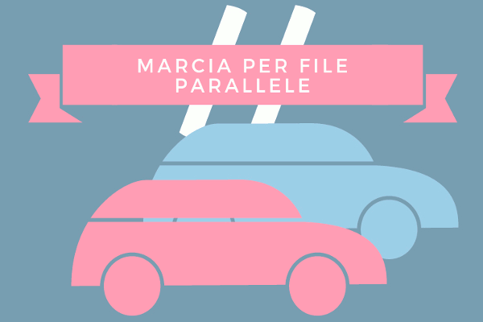
Passiamo dunque a parlarvi della marcia per file parallele. La prima domanda da porsi è questa: "quando è possibile circolare per file parallele?" La risposta è semplice! La marcia per file parallele è ammessa quando:
viene autorizzata dagli agenti del traffico;
il tratto di strada porta ad un incrocio regolato da agenti del traffico o da semaforo;
vi è traffico intenso su strade a doppio senso con almeno due corsie per senso di marcia oppure su strade a senso unico con almeno due corsie.
Adesso che avete capito quando è possibile marciare per file parallele passiamo ad analizzare ciò che è possibile fare, e cosa non lo è, mentre si marcia per file parallele. Durante la marcia per file parallele è consentito cambiare corsia per effettuare manovre di svolta e circolare nella corsia di destra ad una velocità superiore a quella di sinistra, sempre nel rispetto dei limiti massimi di velocità. Non è consentito, invece, ai motocicli procedere passando tra i veicoli affiancati.
Obblighi per chi intende cambiare corsia
Gli obblighi per chi intende cambiare corsia o direzione non sono tanti ma sono tutti di fondamentale importanza per non creare situazioni di pericolo. Infatti, il primo obbligo per chi intende cambiare corsia è quello di non creare intralcio o pericolo a chi si trova sulla corsia da impegnare. Riguardo agli altri obblighi, chi intende cambiare corsia deve:
controllare che la striscia che divide le corsie sia tratteggiata;
controllare che la corsia che vuole occupare sia libera davanti e dietro per un tratto sufficiente;
controllare che sulla corsia che si vuole occupare non stiano arrivando altri veicoli;
controllare che il veicolo che sta davanti non abbia segnalato l'inizio della stessa manovra, se si intende effettuare un sorpasso;
segnalare la manovra in anticipo, tramite l'indicatore di direzione.
Svolta a destra
Passiamo a vedere quali sono le azioni da compiere se si deve svoltare a destra. Anche in questo caso bisogna tenere in considerazione che nell'effettuare questa manovra non si deve creare pericolo o intralcio agli altri. Quindi, per effettuare la svolta a destra occorre:
immettersi nella corsia che consente di eseguire tale manovra;
tenersi il più vicino possibile al margine destro della carreggiata;
moderare la velocità man mano che ci si avvicina al punto di svolta;
segnalare in anticipo la manovra da compiere, azionando l'indicatore di direzione;
dare la precedenza ai pedoni che attraversando la strada in cui ci si sta immettendo.
Svolta a destra di un autotreno
E se fosse un autotreno che deve svoltare a destra in una strada stretta o in un incrocio, voi come dovreste comportarvi? Se un autotreno intende svoltare a destra in una strada stretta, i conducenti degli altri veicoli devono:
tener presente che potrebbe diminuire notevolmente la velocità;
tener presente che nella manovra si sposta a sinistra, ossia si allarga;
non stargli troppo vicino, per non essere d'intralcio, in caso sia necessaria la manovra di retromarcia.
Infine, occorre tenere presente che se un autotreno intende svoltare a destra in un incrocio, occorre rinunciare a sorpassarlo, perché potrebbe impedire la vista di segnali o di veicoli provenienti lateralmente.
Svolta a sinistra
Passiamo, dunque, alla svolta a sinistra. Per svoltare a sinistra bisogna:
controllare dallo specchio retrovisore che nessun veicolo che segue abbia iniziato il sorpasso;
segnalare in anticipo la manovra da compiere azionando l’indicatore di direzione;
avvicinarsi al centro della carreggiata, se ci si trova su una strada a doppio senso di marcia, oppure spostarsi il più possibile vicino al margine sinistro, se la strada è a senso unico;
spostarsi in prossimità del centro dell’incrocio, per non prendere contromano la strada in cui si svolta;
svoltare dando la precedenza ai veicoli che provengono da destra, di fronte e ai pedoni.
Posizione da occupare nella svolta a sinistra
Ma analizziamo più da vicino il punto 4, ossia "spostarsi in prossimità del centro dell'incrocio". Mettiamo il caso che circolando su una carreggiata a doppio senso di circolazione vi troviate di fronte ad un incrocio come quello visibile in alto a sinistra e dovete svoltare a sinistra. Per farlo dovrete necessariamente occupare l’area sinistra dell'incrocio, lasciando il centro dell’incrocio alla vostra destra (come visibile dall'immagine a sinistra).
Se, invece, dovesse esserci il segnale di Rotatoria (come nell'immagine in alto a destra) dovrete occupare l’area di destra, lasciando alla vostra sinistra il centro dell'incrocio. Quindi, detto in parole povere, dovrete girare intorno al centro dell'incrocio, come fa il veicolo H nell'immagine.
Obblighi per chi intende effettuare l’inversione di marcia
Prima di elencarvi gli obblighi per chi intende effettuare l'inversione di marcia ci preme soffermarci sul significato dell'espressione "inversione di marcia". Per inversione di marcia si intende, molto semplicemente, invertire la marcia del veicolo per tornare indietro. Il conducente che intende effettuare l'inversione di marcia su una strada a doppio senso non deve creare pericolo o intralcio agli altri utenti della strada. Pertanto, il conducente che intende effettuare l'inversione di marcia deve rinunciare a compiere la manovra:
se la strada è a senso unico (quindi può essere fatta solo su strada a doppio senso);
se la linea di mezzeria (ossia quella al centro) è continua;
in condizioni di scarsa visibilità, come in vicinanza o in corrispondenza di curve, di dossi o di incroci;
in caso di traffico intenso e continuo.
Quindi, una volta stabilito che la manovra può compiersi, il conducente del veicolo dovrà azionare l’indicatore di direzione, che dovrà rimanere in funzione per l’intera durata della manovra, e dare la precedenza a tutti i veicoli che sopraggiungono. Vi ricordiamo, infine, che in autostrada l'inversione di marcia non è mai permessa.
Conclusione
Dunque, ricapitolando, le cose che dovrete ricordarvi all'esame sono: come deve stare il veicolo sulla carreggiata; come devono essere usate le corsie nei diversi tipi di strada; quando è possibile marciare per file parallele e cosa è concesso fare in questa situazione; cosa è necessario fare per cambiare corsia; come si svolta a destra e a sinistra; quando è possibile fare l'inversione di marcia e come si effettua.
Quindi, prima di passare alla prossima lezione, ossia Norme Sulla Circolazione Dei Veicoli (Parte 2), vi consigliamo di allenarvi dando delle risposte precise e complete a queste semplici domande.
Norme sulla circolazione dei veicoli (Parte 2)
In questa lezione affronteremo la seconda parte dell'argomento 13, ossia Norme Sulla Circolazione Dei Veicoli. Vedremo, dunque, cosa fare quando, partendo dal margine della carreggiata, ci si immette nel flusso della circolazione, oppure cosa è necessario fare e cosa è vietato in vicinanza o in corrispondenza degli incroci ecc. Siete pronti? Allora cominciamo subito!
Immissione nel flusso della circolazione
Cominciamo, quindi, vedendo tutto ciò che è necessario fare quando ci si immette nel flusso della circolazione. Il conducente che parte dal margine della carreggiata e si immette nel flusso della circolazione deve:
assicurarsi di poter effettuare la manovra senza creare pericolo o intralcio agli altri utenti della strada;
indossare ed allacciare il casco, e accendere il proiettore anabbagliante, se guida un motociclo;
allacciare la cintura di sicurezza, salvo che non sia esentato, se guida un autoveicolo;
accertarsi che la strada sia libera, guardando anche negli specchietti retrovisori;
tenere conto della posizione, della distanza e della direzione degli altri utenti della strada;
azionare l'indicatore di direzione (ossia la freccia) per segnalare con sufficiente anticipo l'intenzione di effettuare tale manovra;
dare la precedenza ai veicoli in transito.
Immissione nel flusso della circolazione in retromarcia

E se l'immissione nel flusso della circolazione avviene in retromarcia? Mettiamo che stiate guidando il veicolo S visibile nell'immagine in alto e dovete fare retromarcia per immettervi nella circolazione. Per far ciò dovete:
dare la precedenza a tutti i veicoli in transito, sia a quelli provenienti da destra che a quelli provenienti da sinistra;
fare attenzione agli eventuali pedoni in transito dietro di voi e dare loro la precedenza;
azionare gli indicatori di direzione (ossia le frecce);
assicurarvi che la strada sia libera e fare la manovra con particolare prudenza.
Queste sono le poche e semplici regole da tenere a mente per fare questa manovra in tutta sicurezza. Quindi se all'esame vi capiteranno domande che affermano che durante questa manovra è necessario azionare la segnalazione luminosa di pericolo, oppure che è necessario suonare il clacson ripetutamente durante l'intera manovra, voi non dovrete far altro che cliccare su "falso".
Obblighi per chi intende fermarsi sul margine destro della carreggiata
Ma passiamo alla situazione inversa, ossia a quella in cui il conducente intende fermarsi sul margine destro della carreggiata. Nell'effettuare questa manovra la prima e importantissima regola che deve tenere a mente è quella di non creare pericolo o intralcio agli altri utenti della strada. Pertanto, deve:
tenere conto della posizione, distanza e direzione degli altri utenti della strada;
segnalare con sufficiente anticipo la sua intenzione di effettuare tale manovra, azionando gli indicatori di direzione (ossia le frecce);
evitare brusche frenate, per garantire la sicurezza degli altri utenti della strada.
Vi ricordiamo, infine, che il mancato rispetto delle norme prescritte per immettersi nel flusso della circolazione e per fermarsi comporta, oltre alla possibilità di creare pericolo per se e per gli altri, la perdita di punti dalla patente. Quindi, occhio!
In vicinanza o in corrispondenza degli incroci
Comportamenti vietati in vicinanza o in corrispondenza degli incroci
Passiamo, dunque, a vedere quali sono i comportamenti vietati e quelli da adottare in vicinanza o in corrispondenza degli incroci. In vicinanza o in corrispondenza degli incroci non è consentito:
cambiare improvvisamente la direzione di marcia oppure procedere a zig zag, anche se le corsie direzionali sono segnate da strisce discontinue (ossia tratteggiate);
effettuare l'inversione di marcia;
effettuare la sosta e la fermata, in corrispondenza di incroci extraurbani;
occupare la corsia opposta di marcia, ad esempio per sorpassare una bicicletta.
Comportamenti da tenere avvicinandosi ad un incrocio
Dopo aver visto i comportamenti vietati agli incroci passiamo a vedere quali sono i comportamenti da tenere avvicinandosi ad un incrocio. Giungendo in vicinanza di un incrocio bisogna:
predisporsi ad osservare le norme di precedenza;
spostarsi per tempo sulla corsia destinata alla direzione che si intende prendere, segnalando per tempo l'intenzione di svoltare;
incolonnarsi dietro gli altri veicoli in attesa, se si guida un veicolo a due ruote;
impegnarlo solo se si ha la possibilità di proseguire e liberarlo;
usare la massima prudenza e accortezza per evitare incidenti, soprattutto se non si è in grado di capire subito chi ha la precedenza.
Comportamento agli incroci quando si sbaglia corsia di preselezione
E se giunti in prossimità di un incrocio, ci si accorge di aver sbagliato la corsia di preselezione? In questo caso è necessario seguire la direzione consentita dall'eventuale segnaletica orizzontale, ossia procedere nel senso voluto dalla segnaletica, dando le dovute precedenze.
Pertanto non è possibile effettuare cambiamenti di corsia, per non intralciare i veicoli che seguono, così come non è possibile arrestare bruscamente il veicolo, ad esempio per chiedere informazioni, al fine di evitare tamponamenti e confusione nella circolazione.
Comportamento ad un incrocio quando, al semaforo verde, il veicolo che precede tarda a riprendere la marcia
Mentre se ad un incrocio urbano, al segnale di via libera, il veicolo che precede (ossia quello che sta davanti) tarda a riprendere la marcia, è opportuno:
non superarlo con manovre pericolose;
attendere pazientemente la ripresa della marcia;
evitare di suonare il clacson con insistenza e di provocare una situazione di intolleranza negli altri automobilisti;
prestare aiuto all'automobilista rimasto fermo, ma solo se c'è bisogno ed è possibile farlo senza pericolo.
Comportamenti da tenere quando ad un incrocio giungono contemporaneamente due veicoli
E che fare, invece, se ad un incrocio giungono contemporaneamente da strade diverse due veicoli? Semplice! Entrambi hanno l'obbligo di moderare la velocità, per evitare incidenti, mentre l'obbligo di dare la precedenza spetta, di norma, al conducente del veicolo che arriva da sinistra. Ma ricordate, bisogna comunque essere prudenti e tolleranti nei confronti di chi, pur non avendo la precedenza, passa ugualmente per primo.
Comportamenti da tenere uscendo con un veicolo da una proprietà privata
Passiamo, dunque, a vedere quali sono i comportamenti da tenere uscendo con un veicolo da una proprietà privata, come un garage oppure da un cortile. Uscendo con un veicolo da una proprietà privata bisogna procedere con prudenza e lentamente, specie se in retromarcia, dando la precedenza ad eventuali pedoni e veicoli. Niente di più semplice, no?
Comportamento a un incrocio regolato con circolazione rotatoria
E se ci si imbatte in una rotatoria, come quella visibile in alto, come bisogna comportarsi? Negli incroci regolati con circolazione rotatoria, in assenza di specifico segnale, vale la regola generale di dare la precedenza a destra. La precedenza ai veicoli provenienti da sinistra, ossia quelli già circolanti nell'anello, va data solo se vi è il segnale di Dare Precedenza, visibile in basso e di cui abbiamo già parlato nella lezione sui Segnali di Precedenza.
Ma ricordate, giungendo ad un incrocio regolato con circolazione rotatoria, prima di immettersi è opportuno moderare la velocità ed usare la massima prudenza, controllando nel contempo il comportamento degli altri utenti. Ci preme, infine, ricordarvi che all'interno della rotatoria non è possibile fare retromarcia ne, tantomeno, sorpassare (sia da destra che da sinistra).
Arresto all’incrocio
Quindi in presenza del segnale Dare Precedenza occorre usare prudenza e moderare la velocità, ma occorre arrestarsi solo in caso di necessità. Diverso discorso se, invece, dovesse esserci il segnale di Stop, in presenza del quale bisogna sempre arrestarsi.
Inoltre, in presenza del segnale Dare Precedenza, se occorre arrestarsi per dare la precedenza ai veicoli che arrivano da destra e da sinistra, bisogna che ciò avvenga in corrispondenza della striscia trasversale, formata da una serie di triangoli bianchi (come visibile nell'immagine in alto).
Precedenza tra veicoli su una strada stretta in forte pendenza
E se vi trovate in una strada a forte pendenza dove il passaggio tra veicoli non è facilmente possibile? In genere spetta al conducente che procede in discesa arrestarsi ed eventualmente fare retromarcia. Ma se uno dei due conducenti si trova in vicinanza di una piazzola di scambio, spetta a lui accostare e lasciar passare l'altro conducente.
Norme sulla precedenza
Passiamo, dunque, a vedere quando e a chi è obbligatorio dare la precedenza. È obbligatorio dare la precedenza a destra e a sinistra:
quando si effettua l'inversione del senso di marcia;
quando si effettua la retromarcia;
quando si esce da un passo carrabile;
quando, da fermi, ci si immette nella circolazione;
ai veicoli circolanti su rotaie (come tram e treni);
ai veicoli in emergenza (come ambulanza, polizia);
in presenza dei segnali Dare Precedenza e Fermarsi E Dare Precedenza (ossia lo Stop).
Non è, invece, obbligatorio dare la precedenza in presenza dei segnali Intersezione Con Precedenza A Destra e Intersezione Con Diritto Di Precedenza (visibili nell'immagine in alto). Per saperne di più su questi due segnali vi invitiamo a leggere la lezione sui Segnali di Precedenza.
Comportamenti necessari per non costituire pericolo o intralcio per la circolazione
Passiamo, dunque, ai comportamenti necessari per non costituire pericolo o intralcio per la circolazione. Innanzitutto occorre specificare che per non costituire pericolo o intralcio per la
circolazione è necessario guidare in modo adeguato alle caratteristiche del veicolo, della strada e del traffico, e che è fondamentale unire all'applicazione delle norme sulla circolazione un forte senso civico.
Comportamenti necessari per un corretto uso della strada
Pertanto l'uso corretto della strada comporta che:
siano osservate le norme di comportamento e quelle dettate dalla comune prudenza;
i veicoli procedano ad una velocità adeguata alle condizioni della strada e del traffico;
ci si affretti a sgombrare l'incrocio, quando compaia sul semaforo la luce gialla fissa e non si è in grado di arrestare il veicolo in sicurezza prima della striscia di arresto;
si dia la precedenza ai pedoni che attraversano sugli attraversamenti pedonali;
si usino proiettori anabbaglianti nei centri abitati nelle ore notturne;
si guardino gli specchi retrovisori prima di azionare l'indicatore di direzione per cambiare corsia.
Comportamenti vietati per non costituire pericolo o intralcio per la circolazione
Mentre i comportamenti vietati per non costituire pericolo o intralcio per la circolazione
sono:
tenersi sul margine sinistro della carreggiata per svoltare in una strada a destra;
effettuare un cambiamento di direzione senza segnalare la manovra con sufficiente anticipo;
gareggiare in velocità;
sostare sui binari tramviari;
circolare a velocità troppo bassa senza giustificato motivo.
Comportamenti da tenere in alcune delle situazioni più comuni
Passiamo, dunque, ad analizzare alcune delle situazioni in cui è più probabile imbattersi durante la guida e i comportamenti che dovrete adottare in queste situazioni. Sapere già cosa dovrete fare vi aiuterà non solo all'esame ma, soprattutto, a sentirvi più sicuri durante le vostre prime guide. Promesso!
Comportamenti necessari quando di notte si incrocia un veicolo con fari a luce abbagliante accesi
Prima di passare ai comportamenti necessari in questa situazione ci preme sottolineare che i fari a luce abbaglianti accesi servono ad illuminare la strada a grande distanza ed hanno, per questo motivo, una luce molto forte che può abbagliare il conducente del veicolo che si incrocia. Quindi se di notte, su strada extraurbana, incrociate un veicolo con fari a luce abbagliante accesi, dovete:
tener conto della ridotta visibilità nel vostro comportamento di guida;
procedere con prudenza, usando le luci anabbaglianti;
distogliere lo sguardo dal fascio luminoso per non essere abbagliati;
rallentare adeguatamente ed eventualmente fermarvi;
evitare brusche manovre e cambi di corsia.
Comportamenti da tenere alla guida dei veicoli, anche se ad elevate prestazioni
Passiamo, dunque, a vedere i comportamenti da tenere alla guida dei veicoli, anche se ad elevate prestazioni. Chi guida un veicolo, anche se ad elevate prestazioni, deve:
evitare di costituire pericolo per gli altri utenti della strada;
mantenersi entro i limiti di velocità previsti dalla legge;
dare, di norma, la precedenza nei crocevia (ossia agli incroci) a tutti i veicoli che provengono da destra;
guardare nello specchietto retrovisore prima di segnalare l'intenzione di cambiare corsia;
tenersi il più vicino possibile al margine destro della carreggiata, quando si effettua una svolta a destra.
Comportamenti da tenere in caso di traffico intenso
Mentre in caso di traffico intenso il conducente deve:
regolare la propria velocità uniformandola il più possibile a quella della corrente di traffico che scorre lungo la corsia occupata;
mantenere sempre la distanza di sicurezza dal veicolo che lo precede;
evitare di suonare il clacson per invitare i veicoli che lo precedono ad accelerare l'andatura.
Comportamenti da tenere quando ci si imbatte in un corteo
E se, in un centro abitato, vi imbattete in un corteo? Quando, in un centro abitato, il conducente di un veicolo si imbatte in un corteo, deve fermarsi sulla destra e attendere che esso sia transitato completamente, prima di passare, evitando di suonare il clacson.
Inoltre bisogna evitare di retrocedere se ciò ostacola il flusso della circolazione, e di fare inversione di marcia, qualora ciò costituisca intralcio alla circolazione. Se, invece, c'è una strada laterale è possibile imboccarla, purché la manovra possa essere fatta in maniera corretta.
Comportamenti da tenere quando un pedone, fuori dalle strisce, non accenni a dare la precedenza
E se, in un centro abitato, un pedone, fuori delle strisce di attraversamento, non accenna a darvi la precedenza? In questo caso è necessario ridurre la velocità, avvisarlo con un breve colpo di clacson in caso di pericolo immediato e, se necessario, fermarvi tempestivamente.
Comportamenti da tenere in presenza di auto della Polizia
Passiamo, quindi, ai comportamenti da tenere in presenza di un'auto della Polizia. In questo caso i conducenti dei veicoli devono attenersi alle segnalazioni di pericolo o alle prescrizioni che appaiono, con scritte luminose, sui veicoli della polizia.
Quindi se un'auto della polizia, con sirena in funzione, vi sorpassa ponendosi davanti e sul tetto ha un display con la scritta luminosa "ACCOSTARE", oppure "ALT POLIZIA", voi avete l'obbligo di arrestarvi. Mentre se sul display appare la scritta luminosa "INCIDENTE" vuol dire che si è verificato un incidente e che, quindi, dovete diminuire la velocità. Semplice, no?
Come sistemare il carico
Carico sugli autoveicoli
Avete bisogno di trasportare il vostro vecchio, ma comodissimo, divano nella vostra nuova casa? Oppure volete portare le vostre care bici con voi in vacanza? Per fare tutto ciò è necessario sapere come deve essere sistemato il carico sul veicolo. Non credete? Quindi, il carico deve essere sistemato sugli autoveicoli in modo da:
non diminuire la visibilità del conducente;
non impedire la libertà di movimenti nella guida;
non mascherare i dispositivi di illuminazione, di segnalazione visiva e le targhe;
non mascherare i segnali fatti col braccio, se si guida un veicolo senza motore, come un carretto o una bicicletta;
evitarne la caduta;
non compromettere la stabilità del veicolo;
non superare la portata indicata nella carta di circolazione;
non sporgere dalla parte posteriore per più dei tre decimi della lunghezza del veicolo.
Riguardo all'ultimo punto ricordate cosa abbiamo detto nella lezione sui Pannelli Retroriflettenti Sui Veicoli? Che ogni volta che un carico sporge, anche se di poco, è necessario applicare il pannello per Carichi Sporgenti all'estremità del carico. Inoltre nella lezione appena citata potete vedere anche una foto d'esempio.
Carico sui motocicli
E per quanto riguarda il carico sui motocicli? Anche sui motocicli è vietato trasportare oggetti che non siano solidamente assicurati al veicolo oppure che limitino la visibilità del conducente durante la guida. Ma è importante tenere presente che il carico deve essere sistemato sui motocicli in modo da non sporgere lateralmente di oltre 50 cm.
E se, invece, volete portare con voi il vostro amico a quattro zampe? No problem! Sui motocicli è consentito il trasporto di animali, purché custoditi in apposita gabbia. Ma anche in quest'ultimo caso è fondamentale che il carico non sporga per più di 50 cm.
Uso degli specchi retrovisori
Passiamo all'uso degli specchi retrovisori, visibili in alto. Gli specchi retrovisori centrali e laterali di un autoveicolo contribuiscono alla visione panoramica del conducente e, pertanto, devono essere regolati dopo che è stata regolata la posizione del sedile di guida. Infatti gli specchi retrovisori devono essere utilizzati per un controllo della strada dietro al veicolo e nelle sue vicinanze:
prima di svoltare o di cambiare corsia, per controllare che non sopraggiungano veicoli da dietro;
per immettersi nel flusso della circolazione;
prima di iniziare una manovra di parcheggio in retromarcia;
prima di iniziare la manovra di sorpasso e per rientrare a destra senza tagliare la strada al veicolo che è stato sorpassato.
Lo specchio retrovisore centrale
Il primo specchio dell'autoveicolo nella foto in alto a sinistra, ossia lo specchio retrovisore centrale, è in genere realizzato in modo da ridurre al minimo la distorsione della distanza dei veicoli (ossia i veicoli appaiono quasi alla giusta distanza) ed ha una posizione antiriflesso da utilizzare nelle ore notturne per ridurre il fastidio agli occhi causato dai proiettori accesi (ossia i fari) dei veicoli che seguono. Questo specchio deve essere regolato in modo da:
garantire una buona visione posteriore;
garantire la visione dell'intero lunotto posteriore (ossia del vetro posteriore dell'autoveicolo);
rientrare nel campo visivo del conducente.
Lo specchio retrovisore laterale sinistro

Mentre lo specchio retrovisore laterale sinistro deve essere regolato in modo da scorgere, nel suo terzo di destra, la coda del veicolo e in modo da poter osservare, prevalentemente, la porzione di strada a fianco del veicolo, come visibile dall'immagine in alto. Questo specchio deve essere utilizzato:
prima di iniziare una manovra di cambio corsia verso sinistra;
prima di iniziare una manovra di sorpasso, verificando anche con un rapido controllo visivo laterale diretto;
prima di iniziare una manovra di svolta a sinistra;
prima di immettersi nel flusso della circolazione, verificando anche con un controllo visivo diretto che la strada sia sufficientemente libera dietro e a fianco del veicolo.
Occorre, inoltre, considerare che lo specchio retrovisore laterale sinistro ha un angolo cieco molto ampio che falsa la percezione della distanza e della velocità dei veicoli sopraggiungenti. Infatti i veicoli che sopraggiungono appaiono più lontani di quanto in realtà non lo siano. Pertanto è sempre necessario che il controllo dello specchio retrovisore laterale sinistro sia integrato con un rapido controllo visivo laterale diretto, ossia girando leggermente la testa.
Conclusione
A questo punto conoscete tutte le norme sulla circolazione dei veicoli. Leggete e ripetete tutto fino a quando non sarete strasicuri di aver compreso bene ogni cosa. Inoltre, vi consigliamo di immedesimarvi in ogni situazione qui illustrata.
Immaginate di essere al volante e di dover affrontare tutte le situazioni di cui abbiamo appena parlato. Come saprete di ricordarvi proprio tutto? Semplice, vi basterà verificarlo con i quiz sulle Norme Sulla Circolazione Dei Veicoli. Fatto? Allora potete passare alla prossima lezione sull'Ordine Di Precedenza Agli Incroci.
Ordine Di Precedenza Agli Incroci (Parte 1)
In questa trentaquattresima lezione affronteremo l'argomento più simpatico di tutta la Teoria, ossia l'Ordine Di Precedenza Agli Incroci. Questo è un argomento di estrema importanza, e non solo per rispondere correttamente ai quiz ma anche, e soprattutto, per evitare di fare incidenti agli incroci. Quindi fate attenzione ad ogni singola parola contenuta in questa lezione.
Mettiamo il caso che vi troviate ad un incrocio e che non ci sia alcun semaforo o vigile ad indicarvi cosa fare. Come dovete comportarvi? A chi dovete dare la precedenza? E chi la deve dare a voi? Al termine di questa lezione saprete rispondere a tutte queste domande. Promesso!
Ordine di precedenza agli incroci
Per stabilire l'ordine di precedenza agli incroci la regola generale è questa: "Quando due veicoli stanno per impegnare un incrocio, e le loro traiettorie stanno per intersecarsi, si ha l'obbligo di dare la precedenza a chi proviene da destra, salvo diversa segnalazione". Quindi, detto in parole povere, agli incroci la precedenza va data ai veicoli che provengono da destra, sempre che non vi sia un segnale, un vigile o un semaforo che dica diversamente.
Ma ricordate, si deve dare invece la precedenza sia a destra che a sinistra: ai veicoli che circolano su rotaie, come i tram e i treni; ai veicoli della polizia o in servizio di emergenza; in presenza del segnale Dare Precedenza e del segnale Fermarsi E Dare Precedenza (ossia lo Stop). Specificato ciò, passiamo ad analizzare la regola generale nei minimi dettagli.
Come si stabilisce quali sono i veicoli provenienti da destra
La cosa più importante da sottolineare della regola generale è "l'obbligo di dare la precedenza a chi proviene da destra". Ma come si stabilisce quali sono i veicoli che provengono da destra e quelli che provengono da sinistra? La risposta è semplice! Mettiamo che circolando per strada vi capiti l'incrocio visibile qui in alto e mettiamo che voi siate alla guida del veicolo C.
La prima cosa da considerare per sapere quali sono i veicoli alla vostra destra (ossia quelli a cui dovete dare la precedenza) è la traiettoria che dovrete fare, che nella figura in alto è rappresentata con una linea tratteggiata che parte dal centro della macchina e che termina con una freccia.
Individuata la traiettoria del veicolo C, immaginate di essere al volante di questo veicolo e di percorrere la sua traiettoria. Capirete facilmente che alla vostra destra si trova il veicolo L (come visibile dalla prima immagine in basso a sinistra), mentre alla vostra sinistra si trova il veicolo H. Quindi dovete dare la precedenza al veicolo L, poiché si trova alla vostra destra, ma non al veicolo H, che si trova alla vostra sinistra.
A questo punto immaginate di essere al volante del veicolo H. Percorrendo la sua traiettoria vedrete che alla vostra destra troverete sia il veicolo C che il veicolo L (come visibile dall'immagine al centro). Quindi il veicolo H deve dare la precedenza ad entrambi i veicoli.
Mettetevi ora al volante del veicolo L. Percorrendo la sua traiettoria vedrete che alla vostra destra non ci sarà alcun veicolo a cui dare la precedenza, come visibile dall'immagine in alto a destra. Pertanto, non dovendo dare la precedenza a nessuno, potrete andare dritti per la vostra strada.
Quindi, ricapitolando, il veicolo C non può passare senza aver dato prima la precedenza al veicolo L. Il veicolo H non può passare senza aver dato prima la precedenza ai veicoli C ed L. Mentre il veicolo L può passare tranquillamente perché non ha nessuno alla sua destra.
Quindi il primo a passare è il veicolo L. A questo punto il veicolo C non ha più nessuno alla sua destra e può passare. Passato il veicolo C rimane solo il veicolo H, che finalmente può andare. Dunque, ricapitolando, l'ordine di precedenza in questo incrocio è: L, C, H. Semplice, no? Questo è un primo assaggio di come si stabilisce l'ordine di precedenza ad un incrocio.
Ma vogliamo essere certi che abbiate capito come si fa a stabilire quali sono i veicoli posti alla destra e quali sono quelli posti alla sinistra poiché da questo concetto dipende la comprensione di tutto l'argomento. Pertanto continuiamo facendo ancora un esempio. L'incrocio che prenderemo in esame adesso è questo visibile qui in basso.
Iniziate immaginando di essere al volante del veicolo C. Percorrendo la sua traiettoria troverete il veicolo A alla vostra destra ed il veicolo R alla vostra sinistra (come visibile nell'immagine in basso a sinistra). A questo punto mettetevi al volante del veicolo A. Percorrendo la sua traiettoria troverete il veicolo C alla vostra sinistra ed il veicolo R alla vostra destra (in basso al centro).
Percorrendo, invece, la traiettoria del veicolo R potete vedere che alla vostra destra non c'è alcun veicolo (come visibile in alto a destra) mentre alla vostra sinistra si trovano entrambi i veicoli. Da notare che la vostra traiettoria non incrocia quella del veicolo C. Infatti, qualora non ci fosse stato il veicolo A, entrambi i veicoli sarebbero passati tranquillamente senza darsi alcuna precedenza.
Stabilito come si fa a determinare la destra e la sinistra di un veicolo possiamo passare ad analizzare qualche esempio di precedenza con l'obiettivo di stabilire in che ordine passano tutti i veicoli presenti all'incrocio. Siete pronti? Allora cominciamo subito!
Esempi di precedenza agli incroci
Il primo incrocio che prendiamo in esame è questo in alto. La prima cosa da fare è capire chi parte per primo e, quindi, quali sono i veicoli che hanno la destra libera, ossia che non hanno nessuno alla propria destra a cui dare precedenza. Per far ciò scegliete un veicolo a caso da cui partire.
Mettiamo che abbiate scelto di partire dal veicolo T. La domanda che dovrete farvi è questa: "Il veicolo T ha la destra libera?". La risposta, naturalmente, è: "No, alla sua destra c'è A ed R e, quindi, non può andare". Passiamo al veicolo A. Quest'ultimo ha la destra libera? No, alla sua destra c'è R e, quindi, neanche A può andare.
Passiamo, infine, al veicolo R. Questo veicolo ha la destra libera? Si, allora può passare. Dunque R sarà il primo a passare (come visibile dall'immagine in basso a sinistra). A questo punto rimangono solo i veicoli A e T. Il veicolo T alla sua destra ha ancora il veicolo A, mentre A non ha più nessuno alla sua destra e, quindi, può passare tranquillamente (come visibile dall'immagine in basso al centro).
Passato il veicolo A, anche il veicolo T non ha più nessuno alla sua destra e può finalmente passare (come visibile dall'immagine in alto a destra). Quindi, in questo incrocio i veicoli transitano nel seguente ordine: R, A, T. Semplice, no?
Passiamo ad un altro esempio prendendo in esame l'incrocio qui in alto. Come abbiamo detto poc'anzi, scegliamo un veicolo a caso e vediamo quali sono i veicoli ad avere la destra libera. Mettiamo che abbiate scelto di partire dal veicolo T. Il veicolo T ha la destra libera? No, alla sua destra c'è il veicolo B e, quindi, non può andare. Passiamo al veicolo B, quest'ultimo ha la destra libera? Si e, quindi, il veicolo B può passare.
E il veicolo S, ha la destra libera? No, alla sua destra c'è il veicolo T e, quindi, non può passare. A questo punto l'unico che può passare è il veicolo B (come visibile dall'immagine in alto a sinistra). Passato il veicolo B, anche il veicolo T avrà la destra libera e potrà andare per la sua strada (in alto al centro). A questo punto resta solo il veicolo S, che può finalmente andare (in alto a destra). Pertanto, l'ordine di precedenza in questo incrocio è: B, T, S.
Se gli incroci appena analizzati sono stati entrambi di facile risoluzione ci sono, invece, incroci che nascondono delle insidie, come questo visibile qui in alto. Infatti, attuando il metodo applicato ai due esempi precedenti potete facilmente vedere che ogni veicolo ha la destra occupata (il veicolo R ha alla sua destra N, N ha A ed A ha R). E quindi che fare in questo caso?
Osservando l'incrocio potete notare che il veicolo N incrocia il veicolo A, alla sua destra, a metà del suo percorso, ossia quando arriva al centro dell'incrocio. Quindi, il veicolo N può arrivare fino al centro dell'incrocio. Ma una volta al centro dell'incrocio non può procedere, perché deve dare la precedenza al veicolo A (come visibile dall'immagine in basso a sinistra).
A questo punto il veicolo R non ha più nessuno alla sua destra e può passare tranquillamente (in alto al centro). Passato il veicolo R anche il veicolo A non ha più nessuno alla sua destra e, quindi, può andare tranquillamente (come visibile in alto a destra).
Passati entrambi i veicoli resta solo il veicolo N che, fermo al centro dell'incrocio, può finalmente concludere il suo attraversamento. Da come avete avuto modo di vedere non tutti gli incroci sono di facile risoluzione ma basta solo un po' di spirito di osservazione per trovare la giusta soluzione.
Conclusione

Questi in alto sono tutti gli incroci, o quasi, che vi possono capitare all'esame. Infatti mancano quegli incroci dove sono presenti il tram e il segnale "Dare Precedenza". Ma non preoccupatevi, tutte queste situazioni verranno analizzate nel dettaglio nel corso della prossima lezione.
L'obiettivo di questa lezione era, infatti, quello di farvi capire l'ordine di precedenza in un semplice incrocio, senza veicoli particolari e senza alcun segnale. Pertanto prima di passare alla seconda lezione su questo argomento, ossia Ordine Di Precedenza Agli Incroci (parte 2), vi invitiamo ad esercitarvi risolvendo l'ordine di precedenza degli incroci presenti nell'immagine in alto.
Ordine Di Precedenza Agli Incroci (Parte 2)
Benvenuti alla lezione nº 35! Come già anticipato nella scorsa lezione sull'Ordine Di Precedenza Agli Incroci in questa lezione analizzeremo gli incroci stradali dove sono presenti veicoli che circolano su rotaie, come i tram e i treni, e gli incroci dove è presente il segnale "Dare Precedenza". Siete pronti? Allora iniziamo subito!
Incroci dove sono presenti veicoli che circolano su rotaie
Avete presente cosa abbiamo detto all'inizio della scorsa lezione sulla precedenza ai veicoli che circolano su rotaie? Sicuramente tutti voi lo ricordate, visto che si tratta di una lezione appena letta, ma è sempre meglio ripeterlo per i più distratti ;) Beh, ai veicoli che circolano su rotaie, come i tram e i treni, la precedenza va data sia che provengano da destra che da sinistra e, quindi, sempre.
Quindi mettiamo che all'esame vi capiti l'incrocio visibile qui in alto. Qual'è l'ordine di precedenza? Vediamolo insieme! In base a quanto appena detto, il primo a passare è il veicolo T (come visibile dall'immagine in basso a sinistra) poiché si tratta di un veicolo che circola su rotaie, ossia di un tram.
Passato il veicolo T, sia il veicolo A che il veicolo L hanno la destra libera e, quindi, possono passare contemporaneamente (come visibile dall'immagine in alto al centro). A questo punto resta solo il veicolo C, che può finalmente attraversare l'incrocio (in alto a destra). Ricapitolando, l'ordine di precedenza in questo incrocio è: T, L ed A, e infine C. Più semplice del previsto. No?
Ma andiamo avanti facendo ancora un altro esempio. L'incrocio che prendiamo ora in esame è questo visibile qui in alto. In quale ordine passano i veicoli? Anche in questo caso il tram, ossia il veicolo T, è il primo a passare poiché si tratta di un veicolo che circola su rotaie. Ma anche il veicolo B ha la destra libera. Quindi T e B possono passare contemporaneamente (come visibile nell'immagine in basso a sinistra).
A questo punto rimangono solo i veicoli A e C. Il veicolo C ha alla sua destra il veicolo A, a cui deve dare la precedenza, mentre il veicolo A non ha nessuno alla sua destra. Quindi passa prima il veicolo A (come visibile in alto al centro). Finalmente, ormai solo :( anche il veicolo C può continuare per la sua strada. Pertanto l'ordine di precedenza è: T e B, A, C.
Prima di passare agli incroci dove è presente il segnale "Dare Precedenza" ci preme sottolineare che il filobus non gode del diritto di precedenza come il tram, in quanto non circola sui binari. Ricordare ciò vi consentirà di non fare tanti errori ai quiz su questo argomento.
Quindi se all'esame dovesse capitarvi l'incrocio visibile in alto, quale sarebbe l'ordine di precedenza? Semplice, i veicoli passano nel seguente ordine: L, E, N, R, e non R, L, E, N. Chiaro, no? Infatti i filobus, così come gli autobus, gli autocarri, i veicoli eccezionale e le biciclette, devono essere visti come tutti gli altri veicoli e, quindi, in un incrocio senza segnaletica devono dare la precedenza al veicolo posto alla loro destra.
Incroci dove è presente il segnale "Dare Precedenza"
Passiamo, dunque, agli incroci dove è presente il segnale "Dare Precedenza"! Ma prima di analizzare qualche esempio soffermiamoci sul significato di questo simpatico cartello stradale. Del segnale Dare Precedenza (visibile in alto) ne abbiamo già parlato nella lezione sui Segnali Di Precedenza. Ricordate?
Nel corso di quella lezione abbiamo detto che il segnale di Dare Precedenza viene posto sulle strade secondarie che non hanno il diritto di precedenza ed obbliga a dare la precedenza ai veicoli che circolano sulla strada che si incrocia, sia a quelli provenienti da destra che a quelli provenienti da sinistra.
Quindi, mettiamo che all'esame vi capiti l'incrocio qui in alto. In quale ordine passano i veicoli? In base a quanto appena detto, i veicoli A e R, trovandosi di fronte al segnale "Dare Precedenza", devono dare la precedenza al veicolo N. Quindi il primo a passare è N (come visibile nell'immagine in basso a sinistra).
A questo punto rimangono solo i veicoli A e R. Il veicolo A ha la destra libera mentre il veicolo R ha la destra occupata dal veicolo A. Quindi tra i due il primo a passare è A (in alto al centro). E finalmente anche R può attraversare l'incrocio (come visibile in alto a destra). Niente di più semplice! Non è vero?
Ricapitolando
Quindi le cose da ricordarvi di questa lezione sono solo 2. La prima è che se in un incrocio c'è un tram gli va data la precedenza, sia che provenga da destra che da sinistra, poiché si tratta di un veicolo che circola su rotaie. La seconda cosa da ricordarvi è che se all'incrocio c'è il segnale Dare Precedenza, o il segnale Fermarsi E Dare Precedenza (ossia lo Stop), il veicolo a cui è rivolto deve dare la precedenza sia a destra che a sinistra.
Analizzando l'incrocio visibile in alto avremo modo di ripetere tutte le cose dette in questa lezione. Quindi, in questo incrocio chi è il primo veicolo a passare? Il primo a passare è senza
dubbio il veicolo T, ossia il tram (come visibile nell'immagine in basso a sinistra), in quanto gode del diritto di precedenza.
Passato T può passare anche G (in alto al centro) poiché gli altri due veicoli, ossia B e P, hanno il segnale "Dare Precedenza". A questo punto rimangono soltanto i veicoli B e P. Chi dei due passa per primo? Il veicolo B ha alla sua destra il veicolo P mentre il veicolo P non ha nessuno a destra. Quindi tra i due passa prima il veicolo P (come visibile dall'immagine in alto a destra). E finalmente anche B può passare.
Conclusione
Questi in alto sono tutti gli incroci che potrete trovare nei quiz dove è presente o il tram o il segnale "Dare Precedenza". Allenatevi cercando l'ordine di precedenza per ognuno di essi. Ma è solo rispondendo sempre correttamente ai quiz sull'Ordine Di Precedenza Agli Incroci che avrete la certezza di aver capito davvero tutto. Quindi, prima di passare alla prossima lezione sulle Norme Sul Sorpasso, esercitatevi a dovere!
Norme Sul Sorpasso
Capito tutto dell'argomento Ordine Di Precedenza Agli Incroci? Se la risposta è "si" possiamo passare ad un altro entusiasmante argomento. In questa trentaseiesima lezione parleremo, infatti, delle Norme Sul Sorpasso. Vedremo quali sono gli obblighi del conducente che intende effettuare il sorpasso, come si effettua un sorpasso, quando è vietato e come bisogna comportarsi se siete voi ad essere sorpassati. Siete pronti a tutto questo? Se la risposta è "si" possiamo cominciare subito!
Obblighi del conducente che intende effettuare il sorpasso
Il conducente che intende sorpassare deve accertarsi che:
nessun segnale vieti la manovra;
la visibilità sia tale da consentire la manovra;
la strada sia libera per consentire la completa esecuzione del sorpasso, valutando lo spazio necessario per la manovra anche in relazione alla differenza di velocità tra il proprio veicolo e quello da sorpassare ed in relazione alla lunghezza dei veicoli;
non ci siano veicoli che provengono dalla direzione opposta;
la manovra possa compiersi senza costituire intralcio;
il conducente che lo precede o che lo segue nella stessa corsia non abbia segnalato di voler compiere analoga manovra;
la larghezza della carreggiata consenta la manovra in condizioni di sicurezza, valutando se c'è un'adeguata distanza laterale dal veicolo che si sorpassa.
La manovra del sorpasso
La manovra di sorpasso si effettua, di norma, a sinistra. Prima di iniziare il sorpasso occorre segnalare la manovra ai conducenti dei veicoli che sono dietro azionando l'indicatore di direzione (ossia la freccia). Quindi, a questo punto, si può cominciare il sorpasso tenendo una adeguata distanza laterale dal veicolo che si sorpassa e regolando la velocità in relazione a quella del veicolo da sorpassare.
Dopo aver effettuato la manovra il conducente del veicolo deve riportarsi a destra appena possibile senza creare pericolo o intralcio. Per fare ciò, prima di rientrare nella corsia di destra, deve controllare la posizione del veicolo sorpassato attraverso gli specchietti retrovisori, evitando di stringere o di tagliare la strada al veicolo sorpassato.
Vi ricordiamo, infine, che quando si inizia il sorpasso è consentito segnalare la manovra ai veicoli che precedono, ossia che si trovano davanti, lampeggiando con i proiettori abbaglianti. Inoltre, dopo aver eseguito una prima manovra di sorpasso, in strade ad almeno due corsie per senso di marcia, è possibile eseguirne un'altra senza rientrare a destra, se non si crea intralcio.
Sorpasso a destra
Di norma la manovra di sorpasso si effettua a sinistra ma ci sono casi in cui deve essere eseguita a destra, come quando:
il conducente del veicolo da sorpassare ha segnalato l'intenzione di voler svoltare a sinistra;
su strada a senso unico, il conducente del veicolo da sorpassare ha segnalato l'intenzione di voler accostare a sinistra.
Sorpasso a destra di tram e filobus
Un discorso a parte merita il sorpasso del tram! Infatti il tram può essere sorpassato da ambo i lati se la strada è a senso unico e la larghezza della carreggiata lo consente. Inoltre se il tram o il filobus sono fermi la manovra di sorpasso può effettuarsi a destra se esiste il salvagente.
Pericolosità del sorpasso
La pericolosità del sorpasso è determinata:
dal rischio di urtare altri veicoli che, davanti o dietro, manifestano l'intenzione di compiere la stessa manovra;
dal rischio di collisione, in fase di avvicinamento, con il veicolo da sorpassare;
dal rischio di collisione, in fase di rientro in corsia, con il veicolo sorpassato;
dal rischio di urto frontale con un veicolo che provenga dal senso contrario;
dalla ridotta larghezza della carreggiata.
Spazio necessario per la manovra di sorpasso
Come già detto all'inizio della lezione, il conducente che intende sorpassare deve valutare lo spazio necessario per la manovra anche in relazione alla differenza di velocità tra il proprio veicolo e quello da sorpassare ed in relazione alla lunghezza del proprio veicolo e di quello da sorpassare.
Infatti lo spazio necessario al sorpasso è maggiore se vi è poca differenza di velocità tra i veicoli e, quindi, aumenta se il veicolo da sorpassare accelera. Beh, per quanto riguarda la lunghezza dei veicoli, si capisce facilmente che ci vuole più spazio per sorpassare una limousine di quanto ce ne voglia per sorpassare una Panda.
Lo stesso discorso vale se siete voi a guidare una limousine o una Panda e dovete sorpassare. Infatti lo spazio necessario alla manovra di sorpasso aumenta anche in relazione alla maggiore lunghezza del veicolo che sorpassa. Quindi se state sorpassando con una limousine avete bisogno di maggiore spazio rispetto al sorpasso con una Panda. Semplice, no?
Obblighi del conducente del veicolo che viene sorpassato
Pertanto, in base a quanto appena detto, anche il conducente del veicolo che viene sorpassato deve adottare delle cautele per consentire che la manovra avvenga in tutta sicurezza. Infatti il conducente del veicolo da sorpassare ha l'obbligo di:
non accelerare la propria andatura e di non gareggiare in velocità con il veicolo sorpassante;
fermarsi appena possibile per far defluire il traffico se guida un veicolo molto lento;
tenersi il più possibile vicino al margine destro su strade ad unica corsia per senso di marcia.
E che fare se si viene sorpassati mentre sopraggiunge un veicolo dal senso opposto? Innanzitutto occorre spostarsi il più vicino possibile al margine destro della carreggiata ed è consigliabile ridurre la velocità, per consentire al veicolo che sta sorpassando di rientrare velocemente a destra.
È importantissimo tenere tutto ciò a mente mentre si guida. Infatti se si viene sorpassati ed avviene un incidente, si può avere una parte di responsabilità, se non si è fatto il possibile per facilitare la manovra di sorpasso. Quindi prestate la massima attenzione!
Sorpasso dei veicoli della Polizia
E per quanto riguarda il sorpasso dei veicoli della Polizia? È possibile farlo? La risposta è si, è consentito sorpassare un'auto della Polizia, ma solo se non è in servizio di emergenza e non vi sono altri tipi di impedimenti (ad esempio segnali di divieto, striscia continua al centro della carreggiata ecc.).
Sorpasso in autostrada
Passiamo, dunque, ad analizzare tutte le situazioni che possono portare ad un incidente durante un sorpasso in autostrada. Durante un sorpasso in autostrada può essere causa di incidente:
la scarsa attenzione posta ai veicoli che seguono (ossia che si trovano dietro);
l'improvviso spostamento sulla corsia di sorpasso di uno dei veicoli che precedono (ossia che si trovano davanti);
l'insufficiente distanza di sicurezza;
accodarsi ad un veicolo che sta sorpassando;
il forte vento laterale, in quanto compromette la stabilità dei veicoli.
Infine è importante sottolineare che, anche se durante un sorpasso in autostrada mantenersi troppo a lungo sulla corsia di sorpasso non può essere causa di incidente, può comunque essere d'intralcio alla circolazione. Quindi meglio non farlo!
Casi in cui il sorpasso è vietato
Passiamo ad analizzare i casi in cui è vietato sorpassare. È vietato il sorpasso:
in presenza di segnali che lo vietano;
se si deve valicare la striscia longitudinale bianca continua semplice o doppia;
in prossimità delle curve e dei dossi su strade a due corsie a doppio senso di marcia;
in caso di scarsa visibilità;
sulle corsie di accelerazione o di decelerazione;
alla destra di un tram fermo se manca il salvagente;
di un veicolo che ne stia superando un altro, se ciò impone di spostarsi sul lato riservato all'altro senso di marcia;
di veicoli fermi, o in lento movimento, ai passaggi a livello, se bisogna impegnare la semicarreggiata opposta, ossia il lato riservato all'altro senso di marcia;
di veicoli fermi agli incroci non regolati, oppure regolati da semafori o vigili, quando, a tal fine è necessario spostarsi sul lato riservato all'altro senso di marcia;
di veicoli in lento movimento a causa di congestione della circolazione quando, a tal fine, è necessario spostarsi sul lato riservato all'altro senso di marcia;
di un veicolo che abbia rallentato o che si sia arrestato per consentire l'attraversamento di pedoni, anche fuori dagli attraversamenti pedonali;
accodandosi ad un'ambulanza in servizio di emergenza.
Casi particolari in cui il sorpasso è consentito
Sorpasso in prossimità delle curve e dei dossi
Come detto poc'anzi, il sorpasso è vietato in prossimità delle curve e dei dossi su strade a due corsie a doppio senso di marcia, a causa della scarsa visibilità. Pertanto il sorpasso è consentito sul tratto discendente di un dosso in una strada a due corsie a doppio senso di marcia in quanto la visibilità è migliore. Inoltre il sorpasso è consentito in curva e sui dossi:
sulle carreggiate a senso unico;
sulle strade a due corsie per senso di marcia;
sulle strade a due carreggiate separate.
Sorpasso in prossimità delle intersezioni
Per quanto riguarda il sorpasso in prossimità o in corrispondenza delle intersezioni (ossia gli incroci), esso è consentito:
se le intersezioni sono regolate dai semafori o da agenti del traffico;
se la strada è a precedenza purché a due carreggiate separate e le corsie siano delimitate dall'apposita segnaletica orizzontale;
se si supera un veicolo a due ruote non a motore e non si invade il lato riservato al senso opposto;
a destra nelle intersezioni regolate da semaforo, se il veicolo da sorpassare ha indicato di voler svoltare a sinistra ed ha iniziato la manovra.
Sorpasso in prossimità o in corrispondenza di passaggi a livello senza barriere
Per quanto riguarda il sorpasso in prossimità o in corrispondenza di passaggi a livello senza barriere occorre sottolineare che esso è consentito se la circolazione è regolata da semafori.
Conclusione
A questo punto sapete tutto del sorpasso ma è solo attraverso i quiz sulle Norme Sul Sorpasso che avrete la certezza che tutto è stato ben compreso. Fatene a più non posso o, almeno, fino a quando vedrete che il risultato sarà sempre "0 errori". Non ve ne pentirete in
sede d'esame quando vedrete che rispondere alle domande su questo argomento non sarà un problema. Promesso!
Vi siete allenati a dovere? Se la risposta è si, potete passare alla prossima lezione sull'argomento Fermata, sosta, arresto e partenza.
Fermata, sosta, arresto e partenza
Benvenuti alla lezione n° 37, dove affronteremo l'argomento Fermata, sosta, arresto e partenza. Al termine di questa lezione saprete: quali sono le operazioni da compiere prima di iniziare a guidare un veicolo; cosa si intende per fermata, arresto e sosta; quali sono gli obblighi in caso di fermata e sosta; tutti i casi in cui la fermata e la sosta sono vietate. Siete pronti a tutto questo? Allora iniziamo subito!
Operazioni da compiere prima di iniziare a guidare un veicolo
Iniziamo vedendo quali sono le azioni da compiere prima di iniziare a guidare un veicolo. Innanzitutto occorre accertarsi di avere con se tutti i documenti necessari per la guida (esempio carta di circolazione, certificato di assicurazione, patente ecc.), che devono essere tutti in corso di validità. A questo punto bisogna assicurarsi che la categoria di patente posseduta consenta la guida del veicolo e che il veicolo sia in perfetto stato di efficienza.
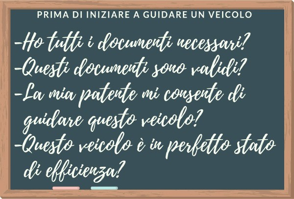
Quindi, ricapitolando, le domande che dovrete porvi prima di iniziare a guidare un veicolo sono:
ho tutti i documenti necessari per la guida?
questi documenti sono in corso di validità? O sono scaduti e, quindi, non più validi?
la mia patente mi consente di guidare questo veicolo?
e il veicolo che sto per guidare è in perfetto stato di efficienza? Oppure non è in grado di circolare su strada?
Se la risposta a tutte queste domande è "si" potete passare alle altre operazioni da compiere prima di partire. Innanzitutto è opportuno regolare il sedile, il poggiatesta e gli specchi retrovisori interni ed esterni, secondo la propria statura.
A questo punto bisogna: accertarsi che gli oggetti trasportati siano sistemati in modo tale da evitarne la caduta o la dispersione; controllare che non sia compromessa la visibilità posteriore e laterale, per la presenza di passeggeri o per il carico mal posizionato; controllare che i passeggeri abbiano regolarmente allacciato le cinture di sicurezza; individuare i comandi, ossia le leve e i pulsanti, necessari per la guida e comprenderne bene il funzionamento.
È solo quando avrete fatto tutte queste operazioni che potrete, finalmente, partire. Pensate che la procedura da compiere prima di partire sia troppo lunga? Beh, avete mai visto un programma o un film sugli aerei? Se la risposta è "si" probabilmente già saprete che prima di spiccare il volo il pilota e il copilota fanno una check-list di tutte le cose da fare prima di volare, ossia cose del tipo controllare che sulle ali dell'aereo non ci sia neve o ghiaccio, controllare lo stato del carrello, vedere se c'è abbastanza carburante ecc.
Ecco, anche per la guida dell'automobile si fa una check-list, allo scopo di assicurarsi che tutto sia sotto controllo. Inizialmente questa procedura vi porterà via un po' di secondi, ma non preoccupatevi, con il tempo impiegherete sempre meno tempo. Pensate, infatti, che quando salite in macchina con un vostro genitore o con un vostro amico, quest'ultimo non la faccia perché ci mette pochissimo a partire?
Vi state sbagliando! Ha solo imparato a farla in poco tempo. Imparare le operazioni da fare prima di guidare un veicolo vi sarà utile non solo a non fare errori all'esame di teoria ma anche ad arrivare preparati alla vostra prima lezione di guida. È in questa occasione, infatti, che il
vostro istruttore di guida vi illustrerà nel dettaglio tutta la procedura da compiere prima di partire. Adesso che sapete cosa fare prima di partire possiamo passare al concetto di fermata e di arresto.
Fermata e arresto
La fermata è la temporanea sospensione della marcia per esigenze di brevissima durata, come ad esempio per chiedere informazioni agli agenti del traffico oppure per consentire la salita o la discesa delle persone, mentre l'arresto è l'interruzione della marcia del veicolo dovuta ad esigenze della circolazione, come ad esempio a un semaforo rosso.
Obblighi del conducente in caso di fermata
Adesso che abbiamo stabilito cosa si intende per fermata e cosa si intende per arresto, passiamo a vedere quali sono gli obblighi del conducente in caso di fermata. Innanzitutto la fermata non deve arrecare intralcio o rallentamento alla circolazione, anche se viene fatta per chiedere informazioni agli agenti del traffico.
Dunque, durante la fermata, il conducente non deve impedire con il proprio autoveicolo il normale flusso del traffico. Deve, inoltre, comportarsi in modo da non costituire pericolo agli altri utenti della strada, adottando le opportune cautele atte ad evitare incidenti, e deve essere sempre presente e pronto a riprendere la marcia.
Infine vi ricordiamo che in caso di fermata, ove non esista il marciapiede rialzato, il conducente deve lasciare uno spazio non inferiore ad un metro, per consentire il transito dei pedoni. Inoltre fuori dei centri abitati, il conducente, in caso di fermata, deve collocare, se possibile, il veicolo fuori della carreggiata. Qualora non fosse possibile collocare il veicolo fuori della carreggiata, il conducente deve effettuare la fermata il più vicino possibile al margine destro della carreggiata.
Sosta
Dunque abbiamo visto finora cosa si intende per fermata e per arresto, ma non cosa si intende per sosta. La sosta è, molto semplicemente, la sospensione della marcia del veicolo protratta nel tempo, con possibilità del conducente di allontanarsi dal veicolo. Se la sosta avviene per avaria del veicolo oppure per malessere fisico del conducente o di un passeggero è detta sosta di emergenza.
È importante sottolineare che durante la sosta il conducente deve adottare le opportune cautele atte ad evitare incidenti e deve impedire che il veicolo venga usato senza il suo consenso. Detto questo, passiamo a vedere quali sono le cautele da adottare, in caso di sosta, nell’aprire le portiere e nello scendere dal veicolo.
Cautele da adottare in caso di sosta nell’aprire le portiere e nello scendere dal veicolo
Innanzitutto quando si aprono le porte di un veicolo, bisogna assicurarsi che ciò non costituisca pericolo o intralcio per gli altri utenti della strada. Pertanto il conducente di un autoveicolo in sosta sul lato destro di una strada urbana, su una strada stretta oppure sul lato sinistro in una strada urbana a senso unico, prima di aprire la portiera, deve fare particolare attenzione ai veicoli che sopraggiungono, controllando anche mediante lo specchietto retrovisore.
Inoltre è opportuno che il conducente di un autoveicolo ricordi al passeggero, prima di aprire la portiera, di prestare particolare attenzione ai veicoli che sopraggiungono, se scende dal lato della strada, oppure ai pedoni in transito, se scende dal lato del marciapiede.
Come posizionare il veicolo in caso di sosta
Passiamo a vedere come va posizionato il veicolo in caso di sosta. In caso di sosta nei centri abitati, salvo diversa segnalazione, il conducente deve collocare il veicolo il più vicino possibile al margine destro della carreggiata, parallelamente ad esso e secondo il senso di marcia, purché esista il marciapiede rialzato.
In caso non esista marciapiede rialzato, il conducente deve lasciare uno spazio non inferiore ad un metro per consentire il transito dei pedoni. Nelle strade urbane a senso unico di marcia, la sosta è consentita anche lungo il margine sinistro della carreggiata, purché rimanga uno spazio non inferiore a tre metri di larghezza, sufficiente al transito di almeno una fila di veicoli.
Fuori dei centri abitati, invece, il conducente che deve sostare ha l'obbligo di collocare il veicolo, ove possibile, fuori della carreggiata, ma non sulle piste ciclabili o sulle banchine. In caso di impossibilità a collocare il veicolo fuori della carreggiata, il conducente deve sostare il più vicino possibile al margine destro della carreggiata.
Nelle zone predisposte per la sosta, il conducente deve collocare il veicolo nel modo prescritto dalla segnaletica orizzontale, sistemando il proprio veicolo entro uno degli appositi spazi (noti anche come stalli), senza invadere quelli contigui (ossia quelli vicini).
Obbligo di bloccare il veicolo in caso di sosta
Durante la sosta il conducente deve adottare accorgimenti atti a garantire l'immobilità del veicolo, indipendentemente dal grado di pendenza della strada. Pertanto, prima di scendere dal veicolo in sosta, il conducente deve: assicurarsi di avere spento il motore; azionare il freno di stazionamento; inserire il rapporto più basso del cambio di velocità; lasciare il veicolo con le ruote sterzate verso il marciapiede.
Parcheggio in zona regolamentata con parchimetro o disco orario
Se si parcheggia in una zona regolamentata con parchimetro, occorre esporre l'apposito tagliando, in modo che sia ben visibile (in genere sul cruscotto dell'autovettura). Non occorre utilizzare il parchimetro se ci si ferma soltanto per far salire o scendere un passeggero.
Invece per parcheggiare in una zona regolamentata mediante disco orario, bisogna esporre in modo ben visibile l'orario di arrivo. Vi ricordiamo, inoltre, che nelle aree di parcheggio a tempo limitato, i veicoli al servizio di persone diversamente abili non sono obbligati a rispettare il limite di tempo stabilito per la sosta.
Divieto di sosta e di fermata Divieto di fermata
Adesso che conoscete che differenza passa tra arresto, sosta e fermata, i vari obblighi a cui
dovete sottostare in caso di sosta e di fermata e come va posizionata la macchina in caso di sosta, passiamo a vedere tutte le situazioni in cui la sosta e la fermata sono vietate. Innanzitutto occorre precisare che quando la fermata è vietata lo è anche la sosta. Pertanto la fermata e, quindi, anche la sosta sono vietate:
in presenza del segnale Divieto Di Fermata;
in prossimità e in corrispondenza di segnali stradali verticali in modo da occultarne la vista;
in prossimità e in corrispondenza di segnali semaforici in modo da occultarne la vista;
sulle autostrade, tranne se si tratta di un caso di emergenza, dove è possibile fermarsi nell’apposita corsia di emergenza o piazzola di sosta;
nelle curve e sui dossi e, fuori dai centri abitati e sulle strade urbane di scorrimento, anche in loro prossimità;
nelle gallerie, nei sottovia, sotto i sovrappassaggi, sotto i fornici e i portici, salvo diversa segnalazione;
in corrispondenza o in prossimità dei passaggi a livello;
sui binari di linee ferroviarie o tranviarie o così vicino ad essi da intralciare la marcia dei veicoli su rotaia;
in corrispondenza dei segnali orizzontali di preselezione e lungo le corsie di canalizzazione;
fuori dei centri abitati, in corrispondenza e in prossimità delle aree di intersezione (ossia gli incroci);
nei centri abitati, in corrispondenza delle aree di intersezione (ossia gli incroci) e in prossimità di esse a meno di 5 metri, salvo diversa segnalazione;
sugli attraversamenti pedonali;
sulle piste ciclabili e agli sbocchi di esse;
sui marciapiedi, salvo diversa segnalazione.
Divieto di sosta
Poc'anzi abbiamo detto che quando la fermata è vietata lo è anche la sosta. Ma ciò non vale anche al contrario, ossia è possibile che la sosta sia vietata ma non la fermata. Un esempio di quanto appena detto è allo sbocco dei passi carrabili e davanti ai cassonetti dei rifiuti urbani, dove la sosta è vietata ma non la fermata. Pertanto vediamo quali sono i casi in cui è vietata solamente la sosta. La sosta è vietata:
in tutti i casi in cui è vietata la fermata;
in presenza del segnale Divieto Di Sosta, dalle 8 alle 20 se posto nei centri abitati e 24 ore su 24 sulle strade extraurbane;
allo sbocco dei passi carrabili;
se si impedisce l'accesso ad altro veicolo già regolarmente in sosta o se viene impedito di spostarlo;
in seconda fila, salvo che si tratti di veicoli a due ruote;
negli spazi riservati allo stazionamento e alla fermata degli autobus, dei filobus e dei veicoli circolanti su rotaia;
a meno di 15 metri dal segnale di fermata di autobus, filobus e veicoli circolanti su rotaia, qualora gli spazi di stazionamento non siano delimitati;
negli spazi riservati allo stazionamento dei veicoli in servizio di piazza (ossia i taxi);
sulle aree destinate al mercato e ai veicoli per il carico e lo scarico di cose, nelle ore stabilite;
sulle banchine, salvo diversa segnalazione;
negli spazi riservati alla fermata o alla sosta dei veicoli per persone invalide;
in corrispondenza degli scivoli o dei raccordi tra i marciapiedi e la carreggiata utilizzati dai veicoli per persone invalide;
nelle corsie o carreggiate riservate ai mezzi pubblici;
nelle aree pedonali urbane;
nelle zone a traffico limitato per i veicoli non autorizzati;
negli spazi destinati a servizi di emergenza o di igiene pubblica indicati dalla apposita segnaletica;
davanti ai cassonetti dei rifiuti urbani;
limitatamente alle ore di esercizio (ossia quando sono aperti), in corrispondenza dei distributori di carburante e in loro prossimità sino a 5 metri prima e dopo;
nei centri abitati, se si deve lasciare in sosta un rimorchio staccato dalla motrice, salvo diversa segnalazione.
A questo punto ci preme sottolineare che il mancato rispetto delle norme relative al divieto di sosta comporta, tra l'altro, la sottrazione di punti dalla patente. Quindi se all'esame dovesse capitarvi la domanda "La sosta negli spazi riservati alla fermata e alla sosta dei veicoli per persone invalide, comporta, tra l'altro, la sottrazione di punti dalla patente" non dovete far altro che cliccare su "vero".
Vi ricordiamo, infine, che nel caso in cui la sosta è espressamente vietata da una norma del codice stradale, l'osservanza di tale divieto non è condizionata dalla presenza di cartelli segnaletici. Quindi, mettiamo ad esempio che stiate percorrendo una curva (un caso in cui la sosta è espressamente vietata), l'osservanza del divieto di sosta è obbligatoria, anche in assenza di cartelli segnaletici.
Conclusione
E per questo argomento è tutto! A questo punto, prima di passare alla prossima lezione sulle Norme Varie, non dovete far altro che ripetere, ripetere e ripetere... Potrete verificare se tutto è stato ben compreso attraverso i quiz su fermata, sosta, arresto e partenza.
Norme Varie (Parte 1)
In questa e nella prossima lezione analizzeremo l'argomento 17 di Teoria Patente, ossia Norme Varie. Parleremo, dunque, della circolazione su autostrade e strade extraurbane principali, dell'ingombro della carreggiata, dell'uso del triangolo, del carico sui veicoli, del traino di un veicolo e di alcuni rischi da tenere sempre in considerazione.
Nello specifico in questa lezione ci soffermeremo sulla circolazione su autostrade e strade extraurbane principali, sull'ingombro della carreggiata, e sull'uso del triangolo. Pertanto vedremo tutti i comportamenti da tenere su autostrade e strade extraurbane principali e vedremo come bisogna comportarsi in caso di guasto del veicolo e in caso di caduta del carico dal veicolo. A questo punto non ci resta che iniziare subito!
Comportamenti da tenere su autostrade e strade extraurbane principali
Sulle autostrade e sulle strade extraurbane principali il conducente deve segnalare tempestivamente il cambiamento di corsia servendosi degli indicatori di direzione (ossia le frecce). Inoltre il conducente che percorre la corsia di accelerazione deve dare la precedenza ai veicoli in circolazione sulle corsie di marcia e se deve uscire dalla carreggiata deve impegnare per tempo la corsia di destra, per poi immettersi nella corsia di decelerazione dal suo inizio.
In caso di ingorgo il conducente può transitare sulla corsia per la sosta di emergenza solo per uscire dall'autostrada, a partire dal cartello di preavviso di uscita posto a 500 metri dallo svincolo. Mentre in caso di ingorgo su strade extraurbane principali o autostrade, se la corsia di emergenza manca o non è sufficiente alla circolazione dei veicoli di polizia o di soccorso, il conducente del veicolo che occupa la prima corsia di destra deve disporsi il più vicino possibile alla striscia di sinistra, per consentirne il passaggio.
Veicoli a cui è vietato circolare sulle autostrade e sulle strade extraurbane principali
Passiamo a vedere quali sono i veicoli che non possono circolare sulle autostrade e sulle strade extraurbane principali. Sulle autostrade e strade extraurbane principali è vietata la circolazione ai:
veicoli senza motore (ad esempio i velocipedi, ossia le biciclette);
ciclomotori;
motocicli di cilindrata inferiore a 150 cm³;
autovetture che non sono in grado di sviluppare per costruzione la velocità in piano di almeno 80 km/h;
macchine agricole;
veicoli privi di pneumatici (ad esempio i veicoli cingolati come i carri armati);
veicoli con carico disordinato e non solidamente assicurato o sporgente oltre i limiti consentiti;
veicoli a tenuta non stagna (ossia veicoli non chiusi perfettamente) e con carico scoperto, se trasportano materiali che possono disperdersi;
veicoli le cui condizioni di uso, equipaggiamento e gommatura possono costituire pericolo per la circolazione.
Circolazione di pedoni e animali su autostrade, strade extraurbane principali e loro pertinenze
Inoltre, sulle autostrade e strade extraurbane principali è vietata la circolazione di pedoni e animali, ad eccezione delle aree di servizio e delle aree di sosta, dove gli animali possono circolare solo se debitamente custoditi. Lungo le corsie di emergenza delle autostrade i pedoni possono transitare, ma solo per raggiungere i punti per le richieste di soccorso.
Norme di circolazione su autostrade e strade extraurbane principali
Finora, dunque, abbiamo visto i comportamenti da tenere su autostrade e strade extraurbane principali e i veicoli a cui è vietata la circolazione su questo tipo di strade, ma quali sono le azioni assolutamente vietate? Sulle carreggiate, sulle rampe e sugli svincoli di autostrade e strade extraurbane principali è vietato:
invertire il senso di marcia e attraversare lo spartitraffico, anche all'altezza dei varchi;
percorrere la carreggiata o parte di essa nel senso di marcia opposto a quello consentito;
effettuare la retromarcia, anche sulle corsie per le soste di emergenza;
circolare con i proiettori anabbaglianti (ossia le luci anabbaglianti) spenti, anche di giorno;
richiedere o concedere passaggi, anche sulle aree di servizio o di parcheggio ed anche ad un automobilista fermo per avaria del veicolo sulla corsia di emergenza;
trainare veicoli in avaria, anche sulle aree di servizio o di parcheggio (ciò è permesso solo ai veicoli di soccorso autorizzati);
campeggiare, se non nelle aree a ciò destinate e per il periodo stabilito dall'ente proprietario della strada;
svolgere attività commerciali se non autorizzate dall'ente proprietario della strada;
sostare, escluso nelle aree di servizio o di parcheggio e per non più di 24 ore.
Sosta di emergenza sulle autostrade
Dunque, in base a quanto appena detto, sulle autostrade non si può sostare, se non nelle aree di servizio o di parcheggio. Quindi che fare se, malauguratamente, vi si dovesse rompere la macchina? Dovete sapere che sulle carreggiate, sulle rampe e sugli svincoli delle autostrade è consentito, nel caso di malessere di un passeggero oppure in caso di avaria (ossia guasto) del veicolo, fermarsi sulla corsia per la sosta di emergenza. Ma la sosta di emergenza non deve superare il tempo strettamente necessario e non deve durare più di tre ore.
Comportamenti in caso di ingombro della carreggiata per avaria del veicolo e per caduta del carico
Passiamo a vedere quali sono i comportamenti da adottare in caso di ingombro della carreggiata per avaria (ossia guasto) del veicolo oppure in caso di caduta del carico, con particolare attenzione alle materie viscide, infiammabili o pericolose.
Comportamenti in caso di ingombro della carreggiata per avaria del veicolo
In caso di ingombro della carreggiata per avaria (ossia guasto) del veicolo, il conducente deve sollecitamente rendere libero il transito per il traffico sopraggiungente spingendo il veicolo stesso fuori della carreggiata o, se ciò non è possibile, collocandolo sul margine destro della carreggiata. Nel caso in cui non fosse possibile spostare il veicolo danneggiato, il conducente o i passeggeri devono presegnalare la zona mediante il segnale triangolare mobile di pericolo (di cui parleremo tra pochissimo).
Comportamenti in caso di ingombro della carreggiata per caduta del carico
Nel caso di ingombro della carreggiata per caduta accidentale del carico il conducente deve rendere sollecitamente libero, per quanto possibile, il transito provvedendo a rimuovere il
carico. Se ciò non fosse possibile, il conducente deve presegnalare l'ostacolo mediante il segnale triangolare mobile di pericolo (ossia il segnale di veicolo fermo).
Comportamenti da tenere in caso di caduta sulla carreggiata di materie viscide, infiammabili o pericolose
Infine, chiunque non abbia potuto evitare la caduta o lo spargimento di materie viscide, infiammabili o comunque pericolose, deve: presegnalare la zona con il segnale mobile di pericolo anche in mezzo alla carreggiata; eseguire segnali manuali per impedire il transito dei veicoli dalla parte dove non è stato posto il segnale mobile di pericolo; rimuoverle o spargere sul terreno, se possibile, sabbia, terra, segatura o altro materiale idoneo a ripristinare l'aderenza.
Segnale mobile triangolare di pericolo
Il segnale mobile triangolare di pericolo (visibile nell'immagine in alto), noto anche come "triangolo", fa parte dell'equipaggiamento obbligatorio degli autoveicoli e il suo uso è obbligatorio:
fuori dei centri abitati, di notte, quando il veicolo è fermo sulla carreggiata e mancano o sono insufficienti le luci posteriori di posizione o di emergenza;
fuori dei centri abitati, anche di giorno, per presegnalare un veicolo fermo sulla carreggiata che non può essere visto nettamente a 100 metri di distanza;
fuori dei centri abitati, di notte, per presegnalare ogni carico caduto accidentalmente dal veicolo sulla carreggiata;
fuori dei centri abitati, anche di giorno, per presegnalare un carico accidentalmente caduto sulla carreggiata, quando l'ingombro non può essere visto nettamente a 100 metri di distanza.
Dove va posizionato
Il segnale mobile triangolare di pericolo deve essere visibile ad una distanza di almeno 100 metri dai veicoli sopraggiungenti e, pertanto, deve essere posto sulla corsia occupata dal veicolo fermo, o dal carico caduto, ad almeno un metro dal bordo esterno della carreggiata e dietro al veicolo o all'ostacolo da segnalare, ad almeno 50 metri (come visibile dall'immagine in alto). Mentre nel caso di intersezione (ossia di incrocio) deve essere posto nella posizione più idonea ad essere avvistato e, pertanto, può essere messo a una distanza inferiore di 50 metri.
Giubbotto o bretelle retroriflettenti ad alta visibilità
Ci preme sottolineare che durante le operazioni di presegnalazione con il segnale mobile di pericolo il conducente deve rendersi visibile indossando le bretelle o il giubbotto retroriflettente ad alta visibilità (visibile in alto), che devono essere di tipo approvato, anche se si trova sulle corsie di emergenza o sulle piazzole di sosta.
Conclusione
E per questa lezione è tutto! Da come avete avuto modo di vedere le cose da ricordare non sono molte. Quindi ripetete, ripetete e ripetete! A questo punto, non vi resta che passare alla seconda parte di questo argomento, ossia Norme Varie (parte 2).
Norme Varie (Parte 2)
In questa trentanovesima lezione affronteremo la seconda parte dell'argomento 17, ossia Norme Varie. Vedremo, dunque, qual'è il numero di persone trasportabili sui veicoli, come trasportare i vostri amici a quattro zampe, come va sistemato il carico sui veicoli, come comportarsi quando ci si trova dietro ad un veicolo che ha un carico che sta per cadere, quando usare i pannelli retroriflettenti, come trainare un veicolo, il campo di visibilità e i rischi derivanti dalla presenza di veicoli lenti, autocarri, autotreni ecc. Insomma le cose da dire sono tante... pertanto non ci resta che iniziare subito!
Trasporto di persone e animali sui veicoli
Il numero di persone trasportabili sui veicoli è indicato sulla carta di circolazione e sulle autovetture può essere al massimo di nove, compreso il conducente, sui motocicli al massimo di due e sugli autocarri al massimo di tre. Ma sui motocicli è possibile trasportare un passeggero, oltre il conducente (che deve essere maggiorenne), solo se il posto per il passeggero è previsto sulla carta di circolazione.
Inoltre tutti i passeggeri dei veicoli a motore devono prendere posto in modo da non limitare la libertà del conducente e da non impedirgli la visibilità. Per quanto riguarda il trasporto di un animale domestico, ciò è possibile, ma in condizione da non costituire impedimento o pericolo per la guida. Qualora gli animali domestici siano più di uno è necessario custodirli in gabbia o nel vano posteriore, appositamente diviso da rete.
Trasporto di persone e oggetti sui motocicli
Per quanto riguarda il trasporto di persone e oggetti sui motocicli va sottolineato che sui motocicli è vietato il trasporto di minori di anni 5, di oggetti che non siano solidamente assicurati e di oggetti che impediscano o limitino la visibilità al conducente. Inoltre è vietato ai conducenti di motocicli trainare e farsi trainare da altri veicoli.
Sistemazione del carico sui veicoli
E per quanto riguarda il carico sui veicoli? Come va sistemato? Naturalmente il carico sui veicoli deve essere sistemato in modo da:
evitarne la caduta o la dispersione;
non diminuire la visibilità al conducente né impedirgli la libertà dei movimenti nella guida;
non compromettere la stabilità del veicolo;
non mascherare dispositivi di illuminazione e di segnalazione visiva né le targhe di riconoscimento e i segnali fatti col braccio.
Limiti di sporgenza del carico sui veicoli
Adesso che abbiamo visto come va sistemato il carico passiamo a vedere quali sono i limiti di sporgenza del carico sui veicoli. Innanzitutto il carico non deve superare il limite di sagoma (ossia le dimensioni massime fissate dalla legge) stabilito per ogni tipo di veicolo.
Occorre, inoltre, considerare che sugli autoveicoli, il carico non può sporgere longitudinalmente (ossia nel senso della lunghezza) dalla parte anteriore mentre può sporgere longitudinalmente dalla parte posteriore, se costituito da cose indivisibili, fino ai 3/10 della lunghezza dell'autoveicolo (come visibile in basso a sinistra).
Inoltre sugli autoveicoli possono essere trasportate cose che sporgono lateralmente fuori della loro sagoma non più di 30 centimetri dalle luci di posizione anteriori e posteriori, comunque entro i limiti massimi di sagoma (come visibile in alto a destra).
Vi ricordiamo, infine, che è vietato trasportare o trainare cose che strisciano sul terreno, anche se in parte sostenute da ruote, e che, se il carico sporge oltre la sagoma del veicolo, il conducente deve adottare tutte le cautele idonee ad evitare pericolo agli altri utenti della strada.
Comportamenti da tenere circolando dietro ad un veicolo che trasporta un carico instabile o sporgente
E se mentre circolate su strada vi trovate dietro ad un veicolo che trasporta un carico in pericolo di cadere? Come dovete comportarvi? Circolando dietro ad un veicolo che ha un carico instabile (ossia in pericolo di cadere), è opportuno aumentare la distanza di sicurezza, specie se si è in salita, così da riuscire a fermarsi in tempo in caso di caduta della merce trasportata, per poi sorpassarlo appena possibile.
Fatto ciò è opportuno avvertire il conducente del potenziale pericolo. Inoltre è necessario considerare che bisogna stare attenti soprattutto quando frena o svolta, per la possibile caduta della merce trasportata, e che può risultare difficile accorgersi che intende svoltare, se gli indicatori di direzione sono nascosti dalla merce penzolante.
Pannelli retroriflettenti sui veicoli
A questo punto passiamo ad analizzare i pannelli retroriflettenti sui veicoli. Di questi pannelli ne abbiamo già parlato nella quarta lezione di questo manuale, ossia Pannelli Retroriflettenti Sui Veicoli. Ricordate? Nel corso di quella lezione vi abbiamo accennato il perché del loro utilizzo e vi abbiamo fatto vedere qualche esempio pratico per poi concludere dicendovi che li avremmo
approfonditi quando saremmo arrivati allo studio dell'argomento 17. Beh quel momento è arrivato!
Segnalazione delle sporgenze del carico
Il primo pannello che prendiamo in esame è questo visibile qui in alto, ossia il pannello per carichi sporgenti. Questo pannello è retroriflettente (ossia riflette la luce) e va usato nel caso in cui il carico sporga dietro al veicolo, anche se di poco, sistemato all'estremità del carico sporgente (che, come abbiamo detto poc'anzi, deve essere indivisibile e sporgere per non più di 3/10 della lunghezza dell'autoveicolo) in modo tale da essere sempre ben visibile.
Pertanto questo pannello invita i conducenti che seguono il veicolo su cui è applicato, a circolare con particolare prudenza. Se il carico sporge longitudinalmente per l'intera larghezza della parte posteriore del veicolo, i pannelli devono essere due, posti trasversalmente alle due estremità del carico. Vi ricordiamo, infine, che il pannello per carichi sporgenti può essere messo anche sui veicoli guasti, quando vengono trainati e non funzionano le luci di emergenza.
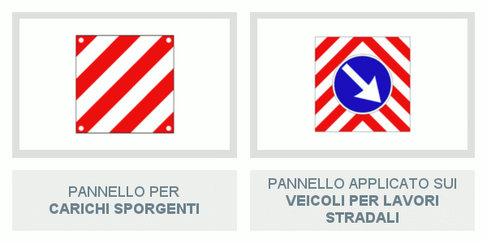
Attenzione, però, a non confondere il pannello per carichi sporgenti con quello visibile in alto a destra. Di questo pannello ne abbiamo già parlato nella lezione 25, quando abbiamo affrontato l'argomento Segnali Temporanei e Di Cantiere. Ricordate? Questo pannello, come già detto nella lezione 25, viene posto sui veicoli per lavori stradali, fermi o in lento movimento, per indicare il lato dal quale il veicolo su cui è posto deve essere sorpassato.
Pannello per rimorchi adibiti al trasporto merci con massa a pieno carico superiore a 3,5 t
Attenzione anche al pannello visibile qui in basso. Non è improbabile, infatti, che all'esame possa capitarvi la domanda "se il carico sporge longitudinalmente per l'intera larghezza della parte posteriore del veicolo, si devono applicare due pannelli retroriflettenti in figura" riferendosi ad esso. Ma non fatevi ingannare! In caso di carico sporgente, infatti, va utilizzato il pannello per carichi sporgenti, di cui abbiamo parlato poco fa, e non questo.
Il pannello retroriflettente visibile nella foto in alto a sinistra, invece, va applicato sul retro di rimorchi, o semirimorchi, con massa a pieno carico superiore a 3,5 tonnellate. Pertanto, questo pannello, posto nella parte posteriore del rimorchio o del semirimorchio, individua un autotreno (ossia autocarro + rimorchio) o un autoarticolato (ossia motrice + semirimorchio).
Pannello per veicoli adibiti al trasporto merci con massa a pieno carico superiore a 3,5 t
Passiamo, dunque, al pannello per veicoli adibiti al trasporto merci con massa a pieno carico superiore a 3,5 t, visibile nella foto in alto. Questo pannello, da come avrete già capito, va applicato nella parte posteriore dei veicoli che trasportano merci con massa a pieno carico superiore a 3,5 tonnellate.
Pannello per trasporto merci pericolose
L'ultimo pannello di cui vogliamo parlarvi è quello per trasporto merci pericolose, visibile in alto. Anche di questo pannello ne abbiamo già parlato nella lezione n° 4, ossia Pannelli Retroriflettenti Sui Veicoli. Ricordate? Questo pannello retroriflettente segnala veicoli che stanno trasportando merci pericolose ed è fissato sia davanti che dietro al veicolo.
Attraverso i numeri riportati sopra è possibile capire che tipo di merci sta trasportando il veicolo su cui il pannello è affisso. Infatti, il numero riportato sulla prima riga indica il tipo di pericolosità della merce (esempio liquido infiammabile, tossico, radioattivo ecc.) mentre quello riportato sulla seconda riga (noto anche come numero ONU) indica il codice del materiale (esempio acetilene, butano, cloro ecc.).
Traino di un veicolo
Passiamo, dunque, a vedere quando e come può essere trainato un veicolo. Innanzitutto nessun veicolo può trainare o essere trainato da più di un veicolo (salvo il caso di trasporti eccezionali) e un autoveicolo può trainare un veicolo che non sia un rimorchio solo se questo non può più circolare per avaria (ossia guasto) o per mancanza di organi essenziali (esempio il motore, le ruote ecc).
Il traino per situazione di emergenza di un veicolo da parte di un altro deve avvenire attraverso un solido collegamento, come fune, catena, cavo, barra rigida, purché idoneamente segnalato per rendere i veicoli chiaramente avvistabili dagli altri utenti della strada. Qualora, in situazione di emergenza, il conducente traini con il suo veicolo un altro veicolo senza rispettare le prescrizioni relative alla solidità del collegamento è punito con la sottrazione di 2 punti dalla patente.
Infine occorre considerare che quando un veicolo guasto, munito di servosterzo, viene trainato, può risultare faticoso manovrare lo sterzo e che se un veicolo guasto viene trainato con le quattro ruote al suolo, occorre posizionare il cambio di velocità in folle.
Traino di un rimorchio
E per trainare un rimorchio? Cosa è necessario fare? Vediamolo insieme!
Prima di partire
Innanzitutto il conducente di un veicolo con rimorchio deve sistemare la merce trasportata in modo che, durante la marcia, non si verifichino spostamenti, rovesciamenti, cadute o sfregamenti. Pertanto è consigliabile che nel rimorchio il carico venga sistemato in modo che gli oggetti pesanti si trovino il più vicino possibile al suo asse (se non ricordate più cos'è l'asse di un veicolo, potete rinfrescarsi la memoria rileggendo la terza lezione sui segnali stradali di divieto).
Quindi prima di trainare un rimorchio, è opportuno effettuare il collegamento elettrico fra motrice e rimorchio (anche se si tratta di un rimorchio leggero), accertarsi che gli impianti di illuminazione e di segnalazione funzionino regolarmente e che dagli specchi retrovisori la visibilità sia adeguata. Quanto agli specchietti esterni montati sulla motrice, questi non devono sporgere oltre 20 centimetri dalla sagoma del veicolo (motrice o rimorchio), con riferimento al punto di maggiore larghezza.
Rapporto di traino
Ma prima di partire con rimorchio a seguito, occorre sapere cos'è il rapporto di traino e quali sono i valori da non superare. Innanzitutto occorre sapere che un veicolo non può trainare un rimorchio di qualsiasi massa e che il valore della massa rimorchiabile è indicato nella carta di circolazione del veicolo.
Pertanto, il rapporto di traino altro non è che il rapporto (ossia il risultato della divisione) tra la massa complessiva a pieno carico del rimorchio e la massa complessiva a pieno carico della motrice (ossia del veicolo che traina il rimorchio), come visibile dall'immagine in alto.
Il rapporto di traino, entro i limiti di quello tecnicamente ammesso per il veicolo, non deve superare il valore di 1, nel caso di rimorchio munito di freno di servizio e con massa fino a 3,5 tonnellate. Ciò vuol dire che la massa del rimorchio può arrivare ad essere al massimo uguale a quella della motrice, ma non superiore. Invece, per un rimorchio sprovvisto di qualsiasi
dispositivo di frenatura, il massimo rapporto di traino è di 0,5. E, quindi, la massa del rimorchio può arrivare ad essere al massimo la metà di quella della motrice.
Organi di traino
Quando si traina un rimorchio occorre verificare che il carico verticale gravante sul gancio non ecceda il limite indicato dal costruttore. Pertanto il carico verticale massimo che può gravare sul gancio della motrice è indicato in un’apposita targhetta applicata sul gancio di traino. Quando il gancio di traino (visibile in alto) non viene utilizzato, perché non si sta trainando un rimorchio, la sua parte sporgente dalla sagoma posteriore del veicolo deve essere sfilata, smontata o ripiegata.
Le parti meccaniche in movimento degli organi di traino di un autoveicolo e di un rimorchio devono essere mantenute pulite e adeguatamente lubrificate. Infine occorre tener presente che gli organi di traino di un veicolo non devono presentare giochi, deformazioni o incrinature e devono consentire sufficienti oscillazioni in senso verticale tra motrice e rimorchio, in modo da poter compensare le diverse inclinazioni dei veicoli dovute ai dislivelli stradali.
Trainando un rimorchio
Alla guida di un veicolo con rimorchio è necessario considerare che:
aumenta lo spazio di frenatura;
la temperatura del liquido di raffreddamento del motore aumenta su strade con forti salite;
nelle forti discese, occorre tener conto della forza di spinta esercitata dal rimorchio sulla motrice;
è maggiore la forza ribaltante esercitata dal vento se si traina un rimorchio leggero;
si ha una sensibile riduzione della capacità di accelerazione (ossia di ripresa) del veicolo, specie se carico;
aumenta il consumo di carburante;
nello svoltare a destra, bisogna fare particolare attenzione a non salire con la ruota posteriore sul marciapiede e a non investire, con la ruota posteriore destra, eventuali pedoni che si trovino vicino al marciapiede;
nelle curve la fascia di ingombro è maggiore e il rimorchio tende a "stringere" perché percorre una traiettoria circolare con raggio inferiore alla motrice;
nelle autostrade con carreggiate a tre o più corsie, ai conducenti di complessi di veicoli di lunghezza totale superiore a 7 metri, è vietato impegnare altre corsie all'infuori delle due più vicine al bordo destro della carreggiata;
i movimenti del liquido che si verificano all’interno di un serbatoio vincolato ad un rimorchio durante i cambiamenti di direzione, in frenata e in accelerazione, sono le maggiori cause di instabilità dei complessi di veicoli;
i conducenti di autoveicoli trainanti un rimorchio, quando la massa complessiva a pieno carico del complesso veicolare è superiore a 3,5 tonnellate, sono considerati in stato di ebbrezza qualora sia stato accertato un valore corrispondente ad un tasso alcolemico superiore a zero grammi per litro;
i rimorchi T.A.T.S. sono destinati al trasporto di attrezzature che non devono costituire oggetto di commercio, ma essere impiegate solo per il tempo libero.
Pertanto, in base a quanto appena detto, prima di effettuare qualsiasi manovra con il rimorchio agganciato è bene accertarsi che non vi siano cose e/o persone nel raggio di manovra del complesso. Inoltre trainando un rimorchio occorre verificare che il carico gravante sul gancio non alteri l’assetto del veicolo e l’inclinazione del fascio luminoso dei fari.
Freni di un rimorchio
Sicuramente ve lo sarete già chiesto. Ma i rimorchi hanno i freni? Vediamolo insieme! I rimorchi trainati da autovetture sono muniti di freno di stazionamento e, in genere, di freno ad inerzia. In un rimorchio dotato di freno a inerzia (visibile in basso) l'effetto della frenata avviene quando il rimorchio si avvicina alla motrice (ossia al veicolo che traina il rimorchio).
Quindi, la frenatura del rimorchio dotato di freno a inerzia non avviene simultaneamente a quella della motrice, in quanto l'azionamento si ha solo dopo che il rimorchio ha esercitato una spinta sulla motrice. Infine, ci preme sottolineare che nei rimorchi con freno a inerzia, dopo un prolungato periodo di inattività, i freni potrebbero aver perso efficienza a causa della ruggine. Pertanto è bene controllarli prima di mettersi alla guida.
Invece, quando si lascia un rimorchio in sosta occorre azionare la leva del freno di stazionamento (visibile in alto) e, in caso di strada in pendenza, è opportuno applicare dei cunei di arresto alle ruote. Nel rimorchio è presente anche un dispositivo di sicurezza che, in caso di sganciamento accidentale, aziona automaticamente il freno di stazionamento.
Sosta del rimorchio
In caso di prolungata inattività del rimorchio è consigliabile, se possibile, sollevare il rimorchio da terra, aumentare la pressione di gonfiaggio degli pneumatici e cambiare periodicamente la loro superficie di appoggio, in modo da evitare la loro ovalizzazione (ossia che le ruote da circolari diventino ovali).
Se ciò non fosse possibile, è consigliabile mantenere gli pneumatici sollevati da terra, applicando appositi sostegni sotto al telaio. Per quanto riguarda la sosta del rimorchio va, infine, sottolineato che nei centri abitati il conducente non deve lasciare in sosta un rimorchio staccato dalla motrice, salvo diversa segnalazione.
Targa e Copertura Assicurativa dei rimorchi
E per quanto riguarda la targa e la copertura assicurativa (ossia l'assicurazione) dei rimorchi? I rimorchi devono avere targa propria e, durante la circolazione, devono essere assicurati con la stessa polizza della motrice. Mentre, quando i rimorchi sono staccati dalla motrice, devono avere un'altra copertura assicurativa che vale anche per il rischio statico (ossia da fermo).
Vi ricordiamo, infine, che a differenza dei rimorchi, che hanno una targa propria, i carrelli appendice sono muniti di una targa ripetitrice, ossia di una targa identica a quella della motrice. Non ricordate più cosa sono i carrelli appendice? Beh, del carrello appendice ne abbiamo già parlato nella lezione sui Segnali Di Divieto (parte 2). Pertanto, una rilettura di questa lezione non potrà farvi altro che bene!
Traino di caravan (roulotte)
Per quanto riguarda il traino di caravan (ossia delle roulotte, di cui abbiamo parlato nella lezione sulla Definizione e classificazione dei veicoli), va sottolineato che nei caravan, per ridurre il rischio di ribaltamento in curva, occorre sistemare il carico in modo il più possibile equilibrato tra lato destro e sinistro. Inoltre il carico degli oggetti pesanti va sistemato in modo da mantenere il baricentro (ossia il centro della massa) il più basso possibile.
Rischi derivanti dalla presenza di veicoli lenti
Passiamo, dunque, ai rischi derivanti dalla presenza di veicoli lenti. Per ovvi motivi di sicurezza, il conducente di un'autovettura deve conoscere i rischi derivanti dalla presenza, soprattutto su strade extraurbane, di mezzi particolarmente lenti, come ciclomotori a tre ruote oppure macchine agricole.
Infatti per un'autovettura che procede a velocità sostenuta, pur rispettando i limiti su strada extraurbana a due sole corsie, un ciclomotore a tre ruote costituisce un potenziale pericolo, soprattutto se effettua manovre improvvise. Lo stesso avviene per le macchine agricole. Infatti per il conducente di un'autovettura che procede a velocità regolare su strada extraurbana, può risultare difficoltosa la valutazione della velocità di una macchina agricola che, in genere, procede lentamente.
Rischi derivanti dalla presenza di ciclisti

I velocipedi, ossia le biciclette, sono mezzi dotati di massa modesta e caratterizzati da basse velocità e possibili oscillazioni trasversali e, pertanto, il conducente di un'autovettura deve considerare i rischi che sono legati alla loro presenza sulla strada. Quindi il conducente di un'autovettura o di un motociclo deve adattare la propria guida anche in relazione a questi rischi, soprattutto nel traffico.
Inoltre, il conducente di un'autovettura deve prestare particolare attenzione per la presenza nel traffico di velocipedi utilizzati da conducenti giovanissimi, e inesperti, oppure da anziani. Quest'ultimi, infatti, per ispezionare la strada alle proprie spalle, eseguono con difficoltà e lentezza la torsione del busto, a causa dell'età avanzata.
Inoltre, il conducente di un'autovettura deve considerare che per un ciclista che si accinge ad effettuare una manovra è molto difficile valutare la velocità di avvicinamento dei veicoli a motore presenti nel traffico, soprattutto se si trova sulla stessa corsia di marcia del proprio veicolo e si accinge a svoltare a sinistra.
Rischi derivanti dalla presenza di ciclomotoristi

La manovra di svolta a sinistra è particolarmente pericolosa anche per un ciclomotore, in quanto deve interferire con la traiettoria di una o più colonne di veicoli più veloci sopraggiungenti nella stessa direzione. Pertanto il conducente di un autoveicolo deve valutare con prudenza, in relazione alla propria velocità, la distanza che lo separa da un ciclomotorista che si accinge a svoltare.
Inoltre il conducente di un autoveicolo deve prevedere manovre improvvise altrui, come il procedere a zig-zag di un ciclomotore e deve costantemente ricordare il rischio derivante dalla presenza nel traffico di ciclomotoristi dotati di limitata esperienza di guida a causa della giovane età.
Pertanto, il conducente di un autoveicolo o di un motoveicolo deve rispettare la distanza di sicurezza laterale da ciclisti o ciclomotoristi, per evitare di metterne a repentaglio l'equilibrio nella guida. Inoltre il conducente di un autoveicolo deve evitare deviazioni trasversali, anche modeste, del proprio veicolo soprattutto in presenza di ciclomotoristi o ciclisti, per evitarne la possibile caduta a terra.
Rischi derivanti dalla possibilità di collisione tra veicoli di masse differenti
Risulta maggiormente pericolosa la collisione tra veicoli dotati di masse molto diverse tra loro. Quindi, guidando una piccola autovettura è necessario valutare anche i maggiori rischi derivanti da possibili tamponamenti o collisioni con autovettura di massa superiore.
Rischi derivanti dalla presenza di autobus, autocarri, autotreni e autoarticolati
Pertanto, alla guida di un'autovettura è opportuno valutare costantemente la potenziale pericolosità dei veicoli con massa notevolmente maggiore, come i veicoli industriali e gli autobus. Inoltre il conducente di motociclo o di autovettura deve saper valutare nella guida gli alti rischi derivanti da autocarri, autotreni o autoarticolati che non rispettano i limiti di velocità.
Rischi che un conducente di fuoristrada (SUV) può far correre agli altri utenti della strada
Ma anche il conducente di un fuoristrada (Suv) deve guidare con la massima prudenza, consapevole che l'altezza e la massa del proprio veicolo costituiscono un potenziale pericolo per pedoni, ciclisti e autovetture di modeste dimensioni e che i paraurti sporgenti e rafforzati del proprio mezzo possono determinare, nel caso di impatto con veicoli più piccoli, gravi danni. Pertanto il conducente di un fuoristrada (Suv) deve ricordare che la guida di tale veicolo è particolarmente impegnativa in città e che richiede particolari cautele soprattutto nelle manovre di emergenza.
Campo di visibilità di un veicolo
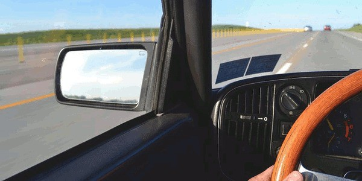
Passiamo, dunque, al campo di visibilità di un veicolo. Nonostante le caratteristiche costruttive del veicolo rendano possibile un adeguato campo di visibilità, durante la guida il conducente deve attentamente visualizzare l'area antistante e limitrofa.
Infatti per il conducente il campo di visibilità può essere ridotto sia da uno dei poggiatesta sia da elementi della carrozzeria della propria autovettura che possono impedire accidentalmente l'avvistamento di altri utenti della strada. Ed è proprio per consentire una adeguata visibilità che è vietato applicare pellicole adesive sul parabrezza e sui vetri laterali anteriori dei veicoli.
Campo di visibilità di un fuoristrada e di un autocarro
Inoltre bisogna considerare che i conducenti di veicoli fuoristrada devono prestare maggiore attenzione poiché i pedoni e soprattutto i bambini rischiano di rimanere fuori dal campo visivo del conducente di un veicolo fuoristrada (Suv) a causa delle dimensioni del mezzo.
Anche gli autocarri presentano una limitata visuale, a causa del parabrezza, nella zona immediatamente antistante il veicolo. E ciò rende pericolosa la fermata di tali mezzi in colonna, qualora siano presenti pedoni o mezzi a due ruote. Quindi prima di riprendere la marcia, il conducente di un autocarro deve prestare particolare attenzione alla possibile presenza di un pedone o di un ciclista nella zona immediatamente antistante il proprio veicolo fermo.
Conclusione
Da come avete avuto modo di vedere molte delle cose dette in questa lezione erano già state accennate in precedenza. Ma in questa occasione abbiamo avuto modo di approfondirle ulteriormente. E finalmente lo possiamo dire: siamo giunti al termine dell'argomento "Norme Varie" ;) Prima di passare alla prossima lezione sull'argomento Uso delle luci, Spie e Simboli esercitatevi con i quiz su Norme Varie. Buon divertimento!
Uso delle luci, Spie e Simboli
Benvenuti alla lezione n° 40, dove affronteremo l'argomento n° 18, ossia Uso delle luci, Spie e Simboli. Vedremo, pertanto, quando e quali luci usare nelle diverse situazioni e il significato di ogni spia e simbolo presente all'interno dell'auto. Siete pronti? Allora iniziamo subito!
Le luci
Prima di parlare dell'uso delle luci è fondamentale capire prima cosa sono le luci anabbaglianti, le luci abbaglianti, le luci di posizione ecc. Sarà per voi molto più facile così ricordare quando e perché ognuna di queste luci vada usata.
Luci Anabbaglianti e Luci Abbaglianti
Le prime luci di cui vogliamo parlarvi sono le luci anabbaglianti (note anche come proiettori anabbaglianti), visibili in alto a sinistra. Queste luci servono ad illuminare la strada senza abbagliare i conducenti dei veicoli che procedono nell'altro senso di marcia, quelli che procedono davanti al proprio veicolo e tutti gli altri utenti della strada.
Le luci abbaglianti visibili in alto a destra servono ad illuminare la strada a grande distanza ed è per questo motivo che sono conosciute anche come proiettori di profondità. Dato che questa luce ad alta intensità è capace di abbagliare gli altri utenti della strada, in molti casi il suo utilizzo è vietato.
Luci Di Posizione
E per quanto riguarda le luci di posizione? Queste luci, presenti sia nella parte frontale del veicolo che in quella laterale e posteriore, non sono molto potenti ma risultano comunque indispensabili per segnalare la propria presenza sulla strada.
Luce Posteriore Per Nebbia
Passiamo, dunque, alla luce posteriore per nebbia. La luce posteriore per nebbia, nota anche come Retronebbia, viene utilizzata in caso di forte nebbia, di pioggia intensa o di fitta nevicata in atto e serve ad aumentare la propria visibilità ai veicoli che si trovano dietro al proprio veicolo. Questa luce è obbligatoria su tutti i veicoli di nuova immatricolazione.
Luci Di Sosta e Luci Di Marcia Diurna
Le luci di sosta vengono utilizzate durante la sosta ai margini di una carreggiata non sufficientemente illuminata per rendere l'auto maggiormente visibile mentre è in sosta. Queste luci possono essere utilizzate esclusivamente nei centri abitati e vanno accese solo quelle poste dalla parte del traffico. Vi ricordiamo, inoltre, che non tutti i veicoli ne sono dotati. Quindi se non doveste trovarle sulla vostra auto non disperate! È possibile che non ne sia dotata.
Quanto alle luci di marcia diurna, queste ultime possono sostituire gli anabbaglianti durante il giorno, fuori dei centri abitati, e con buone condizioni di visibilità. Queste luci servono a rendere il proprio veicolo maggiormente visibile agli altri conducenti e si trovano su tutti i modelli di automobili costruiti dopo il 2011. Il perché del loro utilizzo? Costituite da lampade, in genere a led, durano di più e consumano di meno. Fantastico, no?
Indicatori Di Direzione, Luce Della Targa e Catadiottri
Passiamo, dunque, a vedere cosa sono gli indicatori di direzione, comunemente noti come frecce. Gli indicatori di direzione, visibile in alto a sinistra, servono a comunicare agli altri conducenti i cambiamenti della direzione di marcia del proprio veicolo, ad esempio per segnalare che si sta per svoltare oppure che si sta per cambiare corsia ecc.
Per quanto riguarda la luce della targa (in alto al centro), quest'ultima, da come avrete già capito, serve ad illuminare la targa posteriore dei veicoli per renderla visibile ad almeno 20 metri di distanza. Questa luce si accende insieme con le luci di posizione.
Passiamo, infine, ai catadiottri, visibili in alto a destra. I catadiottri servono a segnalare meglio la presenza di un veicolo, soprattutto di notte ed anche se il veicolo ha i fari spenti. Questi dispositivi, infatti, non emettono luce propria bensì diventano luminosi se illuminati dai fari di un altro veicolo. Adesso che abbiamo visto lo scopo di ognuna di queste luci passiamo a vedere quando vanno usate.
Uso delle luci
Passiamo, dunque, a vedere quando e quali di queste luci vanno usate. Innanzitutto, durante la marcia nei centri abitati, è obbligatorio tenere accese le luci anabbaglianti e le luci di posizione da mezz'ora dopo il tramonto del sole a mezz'ora prima del suo sorgere, anche se l'illuminazione pubblica è sufficiente. Mentre nelle autostrade, nelle strade extraurbane e nelle gallerie, è obbligatorio accendere i fari anabbaglianti non solo di notte ma anche di giorno o, in alternativa, le luci di marcia diurna.
Se, invece, durante la marcia vi è scarsa visibilità a causa delle condizioni atmosferiche (esempio neve, pioggia, nebbia), è obbligatorio tenere accese le luci di posizione e quelle anabbaglianti, anche di giorno. Inoltre in caso di pioggia intensa, di fitta nevicata o di nebbia con visibilità inferiore a 50 metri, bisogna usare anche la luce posteriore per nebbia, se il veicolo ne è dotato.
Vi ricordiamo, infine, che di notte, nei centri abitati, il veicolo in sosta al margine della carreggiata può essere segnalato con le luci di sosta e che su un veicolo a motore non è consentito utilizzare lampade non omologate. Ci preme, infatti, sottolineare che i proiettori anabbaglianti non omologati o orientati male possono ridurre la visibilità del conducente o abbagliare gli altri utenti della strada.
Uso dei proiettori di profondità (abbaglianti)
E i proiettori di profondità, quando vanno usati? L'uso dei proiettori a luce abbagliante è necessario, fuori dei centri abitati, quando l'illuminazione pubblica manca, o è insufficiente, e non si incrociano altri veicoli. Mentre è vietato, di norma, durante la marcia nei centri abitati. Inoltre l'uso dei proiettori a luce abbagliante va sostituito con quello dei proiettori a luce anabbagliante:
quando vi sia il pericolo di abbagliare gli altri utenti della strada, compresi i pedoni e i conducenti di veicoli circolanti su altre strade;
quando stanno per incrociare altri veicoli;
quando seguono un veicolo a breve distanza.
Uso intermittente dei proiettori di profondità (abbaglianti)
È consentito l'uso intermittente dei proiettori di profondità (ossia a luce abbagliante), sia di giorno che di notte ed anche all'interno dei centri abitati, per segnalare al veicolo che precede
(ossia che sta davanti) l'intenzione di sorpassare e per dare avvertimenti utili al fine di evitare incidenti.
Uso degli indicatori di direzione
E gli indicatori di direzione (ossia le frecce) quando devono essere usati? Si devono usare gli indicatori di direzione:
ogni volta che si deve effettuare una manovra di svolta, una manovra di sorpasso o un cambio di corsia;
quando si effettuano manovre di retromarcia;
se si intende uscire dalla carreggiata per effettuare una fermata;
quando, partendo dal margine della carreggiata, ci si vuole immettere nella circolazione;
per segnalare l'intenzione di spostarsi nella corsia di decelerazione di uno svincolo autostradale;
per segnalare l'intenzione di entrare sulla carreggiata autostradale, provenendo da una corsia di accelerazione.
Luce della targa
Quanto alla luce della targa, questa è di colore bianco e, come abbiamo già detto poc'anzi, si accende insieme alle luci di posizione. Il suo scopo è quello di illuminare la targa posteriore dei veicoli per consentire una facile lettura dei caratteri che la compongono ad almeno 20 metri di distanza.
Funzione dei catadiottri
I catadiottri, come già detto poc'anzi, sono dispositivi che riflettono la luce ed hanno la funzione di indicare la presenza e l'ingombro dei veicoli su cui sono applicati. In particolar modo questi dispositivi, se illuminati, hanno la funzione di rendere più visibili, specialmente di notte, i veicoli e i rimorchi in sosta sulla strada oppure di rendere più visibile un veicolo guasto, nel caso in cui non funzionino le luci di posizione posteriori.
Questi dispositivi se installati nella parte posteriore dei veicoli sono di colore rosso, se installati nella parte posteriore di rimorchi, semirimorchi e carrelli-appendice sono di colore rosso ed hanno forma triangolare, se installati nella parte laterale sono di colore giallo. Solo nei rimorchi, nei semirimorchi e nei carrelli-appendice sono installati anche nella parte anteriore e sono di colore bianco.
Ricapitolando l'uso delle luci
A questo punto, prima di passare oltre, vi consigliamo di interrogarvi su tutte le situazioni che potrebbero presentarsi durante la guida, per cercare di capire in ogni situazione quali luci (o fari) dovete accendere. Esempio: quali luci devo accendere se di giorno entro in un centro urbano e c'è la nebbia? Oppure, che luci devo usare se entro di giorno in una galleria? L'avete fatto? Allora possiamo passare a vedere dove si trovano e che simboli ci sono su alcuni dei comandi più importanti, tra cui quelli delle luci.
Spie e Simboli
Simbolo dei proiettori anabbaglianti e dei proiettori abbaglianti
Il simbolo in alto a sinistra è posto sul comando di accensione dei proiettori anabbaglianti ed è posto su una spia a luce verde. Mentre il simbolo in alto a destra è posto sul comando di
accensione dei proiettori abbaglianti (ossia i proiettori di profondità) ed è posto su una spia a luce blu.
Simbolo degli indicatori di direzione e della segnalazione luminosa di pericolo
Il simbolo in alto a sinistra indica il comando degli indicatori di direzione ed è posto su una spia a luce verde lampeggiante dell'indicatore di direzione azionato. Mentre il simbolo in alto a destra indica il comando per azionare la segnalazione luminosa di pericolo ed è posto su una spia di colore rosso. Questo dispositivo, da usare in casi di emergenza (ad esempio in caso di incidente, di guasto del veicolo ecc.), provoca l'accensione contemporanea di tutti gli indicatori di direzione.
Simbolo della temperatura eccessiva dell'acqua e della pressione bassa dell'olio
Quanto al simbolo in alto a sinistra, questo è posto su una spia di colore rosso che, se accesa, indica che la temperatura del liquido di raffreddamento che circola nel motore supera i
limiti stabiliti dal costruttore. Anche il simbolo in alto a destra è posto su una spia di colore rosso e, se accesa durante la marcia, indica insufficiente pressione dell'olio di lubrificazione del motore. Pertanto se la spia è spenta durante la marcia indica che la pressione dell'olio di lubrificazione del motore è regolare. Invece se è accesa durante la marcia, indica di arrestare subito il motore per evitare gravi danni.
Simbolo della batteria, del funzionamento difettoso del sistema frenante e delle cinture di sicurezza
Quanto al simbolo in alto a sinistra, collocato su una spia di colore rosso, permette di capire se la batteria viene correttamente ricaricata o meno dall'alternatore. Infatti se la spia è accesa durante la marcia, indica che il generatore di corrente non carica la batteria.
Invece il simbolo in alto al centro, anch'esso posto su una spia di colore rosso, contrassegna la spia di funzionamento difettoso di una parte dell'impianto frenante. Pertanto se questa spia è accesa durante la marcia, può segnalare una eccessiva usura delle guarnizioni degli elementi frenanti oppure lo scarso livello del liquido idraulico dei freni. In ogni caso comporta di provvedere rapidamente a una manutenzione o riparazione dell'impianto frenante.
Quanto al simbolo in alto a desto, quest'ultimo è posto su una spia di colore rosso che, se accesa durante la marcia, indica che il conducente o un passeggero non hanno indossato le cinture di sicurezza. Questa spia, se accesa durante la marcia, è in genere abbinata ad un segnale acustico in funzione.
Colori delle spie
Quindi, ricapitolando, le spie di colore rosso sono:
la spia di accensione della segnalazione luminosa di pericolo;
la spia della temperatura dell'acqua di raffreddamento;
la spia della pressione dell'olio;
la spia della cintura di sicurezza;
la spia del freno a mano.
Le spie di colore verde sono:
la spia dei proiettori anabbaglianti;
la spia degli indicatori di direzione.
Di colore blu è, invece, la spia dei proiettori abbaglianti (ossia dei proiettori di profondità).
Conclusione

E per questo argomento è tutto! Qui in alto potete vedere tutti i simboli di cui dovete essere a conoscenza per poter affrontare l'esame, ossia tutti i simboli che abbiamo visto nel corso di questa lezione. Osservateli attentamente e per ognuno di loro ripetete tutto quello che avete imparato nel corso di questa lezione.
Fatto? A questo punto potete verificare tutte le vostre conoscenze su questo argomento attraverso i quiz su Uso delle luci, Spie e Simboli. Ma prima di passare al prossimo argomento, ossia Cinture di sicurezza, sistemi di ritenuta per bambini, casco protettivo e abbigliamento di sicurezza, vi consigliamo di fare alcune prove sull'auto di un vostro parente o amico.
Provate ad accendere ognuno dei comandi di cui abbiamo parlato in questa lezione, ad esempio gli anabbaglianti, gli abbaglianti, le 4 frecce ecc., e per ognuno di essi scendete dalla macchina per vedere quali luci si sono accese. Sarà per voi un esercizio molto utile sia per fissare nella mente tutto ciò che è stato detto nel corso di questa lezione sia per arrivare maggiormente preparati alla vostra prima lezione di guida.
Cinture di sicurezza, Airbag, sistemi di ritenuta per bambini, casco protettivo e abbigliamento di sicurezza
Avete capito bene l'argomento Uso delle luci, Spie e Simboli, ossia l'argomento affrontato nella passata lezione? E avete fatto tantissimi quiz per dimostrare a voi stessi che tutto è stato ben capito? Se la risposta ad entrambe queste domande è "si", potete passare al nuovo argomento che affronteremo nel corso di questa lezione, ossia Cinture di sicurezza, Airbag, sistemi di ritenuta per bambini, casco protettivo e abbigliamento di sicurezza.
Cinture di sicurezza, Airbag, Sistemi di ritenuta per bambini e Poggiatesta
Iniziamo la lezione parlando delle cinture di sicurezza, dell'airbag, dei sistemi di ritenuta per bambini e dei poggiatesta, tutte cose visibili nella foto qui in alto. Passeremo ad analizzare la funzione del casco protettivo e dell'abbigliamento di sicurezza nella seconda parte di questa lezione. Siete pronti? Allora iniziamo subito!
Uso delle cinture di sicurezza
Partiamo, dunque, vedendo cosa sono e a cosa servono le cinture di sicurezza. Molti di voi già le conosceranno, in quanto non è raro che, salendo in macchina con un vostro parente o amico, quest'ultimo vi abbia detto la classica frase "allaccia la cintura".
In ogni caso, le cinture di sicurezza (visibili nella foto in alto) sono dei dispositivi di sicurezza ancorati all'interno dell'auto ed hanno lo scopo di mantenere il corpo attaccato al sedile in caso di urto violento, evitando che il conducente o i passeggeri vadano a urtare parti interne del veicolo, o che siano proiettati contro il parabrezza oppure all'esterno dell'autovettura, in caso di d'improvvisa frenata o di urto violento.
Pertanto le cinture di sicurezza devono essere utilizzate in qualsiasi situazione di marcia e devono essere indossate sia dal conducente che dai passeggeri delle autovetture che ne siano dotate. Da sottolineare che l'obbligo di allacciare le cinture di sicurezza vale anche se il veicolo è dotato di airbag e vale non solo per i passeggeri dei sedili anteriori ma anche per quelli dei sedili posteriori.
Vi ricordiamo, infine, che sono previste sanzioni per chi, pur facendo uso della cintura di sicurezza, ne ostacoli o alteri il normale funzionamento. Inoltre le cinture di sicurezza devono essere di tipo omologato e mantenute sempre efficienti. Pertanto è richiesto un periodico controllo del loro stato di usura e di efficienza. Ne va della vostra vita e di quella dei vostri passeggeri, quindi, prestate molta attenzione!
Categorie di persone non obbligate ad agganciare le cinture di sicurezza
Ci preme, inoltre, sottolineare che esistono alcune categorie di persone che non sono obbligate ad agganciare le cinture di sicurezza. Nello specifico non sono obbligate ad agganciare la cintura di sicurezza:
le donne in stato di gravidanza con particolari condizioni di rischio certificate;
le persone che soffrono di particolari malattie certificate;
gli istruttori di guida nello svolgimento della loro professione.
Pertanto, se quando andrete a fare le lezioni di guida vedrete che il vostro istruttore non ha la cintura di sicurezza allacciata, non fategli una ramanzina. Lui può!
Airbag
E l'airbag cos'è? E a cosa serve? Vediamolo subito. L'airbag (visibile nella foto in alto) è un cuscino gonfiabile di nylon o altro materiale sintetico che entra in funzione in caso di incidente stradale con urto violento per limitare i danni agli occupanti del veicolo per urti contro superfici interne del veicolo.
Un'altra domanda che potreste porvi è "ma come si attiva?". In realtà l'airbag non va attivato manualmente bensì si gonfia automaticamente in pochi millisecondi grazie al comando di un sensore. Vi ricordiamo, infine, che l'airbag può essere pericoloso se si attiva mentre non si indossa la cintura di sicurezza e che talvolta può essere disattivabile.
Sistemi di ritenuta per bambini
Quanto ai sistemi di ritenuta per bambini, va precisato che i bambini di età inferiore a 3 anni non possono viaggiare su autovetture sprovviste degli idonei sistemi di ritenuta mentre i
bambini di altezza inferiore a 1,50 metri, quando sono trasportati su una autovettura, devono essere trattenuti da sistemi di ritenuta omologati, adeguati alla loro statura e peso. Infatti i sistemi di ritenuta per bambini sono classificati in gruppi, in funzione del peso del bambino che possono accogliere, e devono essere di tipo omologato e mantenuti sempre efficienti.
Inoltre se un'autovettura è munita di airbag, è possibile trasportare bambini sul sedile anteriore assicurati ad idoneo seggiolino solo se il veicolo è dotato di comando per disattivare l'airbag stesso. Quindi nei veicoli dotati di airbag con comando di disabilitazione, prima di sistemare sul sedile anteriore un seggiolino per bambini (con lo schienale rivolto verso il parabrezza), bisogna disattivare l'airbag.
Mentre nei veicoli che non sono muniti del comando per disabilitare l'airbag dal lato passeggero, il seggiolino per bambini non deve essere sistemato sul sedile anteriore, con lo schienale rivolto verso la strada, in quanto molto pericoloso.
Funzione del poggiatesta
E il poggiatesta cos'è? E a cosa serve? Il poggiatesta, visibile nella foto in alto, è un dispositivo di sicurezza posto all'interno dell'auto, più precisamente sulla spalliera dei sedili. Questo dispositivo, infatti, è utile per prevenire il colpo di frusta (ossia un movimento brusco del collo in avanti ed indietro che può causare lesioni o fratture), ma solo se viene regolato correttamente, sia in altezza che in inclinazione.
Casco protettivo e abbigliamento di sicurezza
Passiamo, dunque, a vedere in cosa consiste l'abbigliamento di sicurezza e in che modo ogni singolo capo svolge la sua funzione protettiva. Parleremo, pertanto, del casco protettivo e degli stivali, dei guanti e delle giacche ad uso motociclistico.
Uso del casco
Partiamo, dunque, dal casco protettivo, visibile in alto. L'uso del casco è necessario per ridurre gli effetti di eventuali urti alla testa e per proteggere il viso da traumi e lesioni in caso di incidente. Inoltre è bene che il casco sia dotato di visiera, in quanto quest'ultima protegge il viso e gli occhi da impatti con insetti.
Ma chi è obbligato ad indossare il casco? Il casco è obbligatorio per i conducenti e i passeggeri di ciclomotori a due ruote, anche se maggiorenni, e per i conducenti e i passeggeri di motocicli non dotati di cellula di sicurezza e di dispositivi di ritenuta.
Vi ricordiamo, infine, che il casco deve essere indossato anche per spostamenti brevi e a bassa velocità ed anche a bordo dei quadricicli a motore privi di carrozzeria (ossia i Quad). Il conducente che non indossa il casco è soggetto alla decurtazione di punti dalla patente di guida.
Inoltre il casco deve essere di taglia corretta e, durante la marcia, deve essere sempre correttamente allacciato in quanto indossare il casco in modo errato o senza averlo correttamente allacciato può comportare gravi rischi alla salute in caso di caduta o incidente.
Pulizia e sostituzione del casco
Ma il casco è per sempre (come i diamanti :)? La risposta è no! Infatti qualora il casco dovesse subire un forte urto, anche se non mostra deformazioni sulla calotta esterna, va sostituito. Inoltre bisogna considerare che il casco subisce un processo di invecchiamento dovuto a luce e calore.
E per quanto riguarda la sua pulizia? La pulizia del casco deve essere effettuata con detersivi non corrosivi e, pertanto, non deve essere assolutamente pulito con solventi o con benzina. Occorre, inoltre, tener presente che la robustezza della calotta esterna potrebbe essere compromessa da solventi presenti in vernici o colle. Quindi, occhio!
Per quanto riguarda la visiera del casco, quest'ultima deve garantire la perfetta visione con qualunque condizione di luce o illuminazione e deve essere sostituita se rigata o danneggiata. A questo punto qualcuno di voi potrebbe chiedersi se esista il pericolo che la visiera si appanni, non consentendo di vedere più la strada. La risposta è "no" poiché il sistema di aerazione del casco consente di limitare il pericolo di appannamento della visiera.
Stivali ad uso motociclistico
Passiamo, dunque, agli stivali ad uso motociclistico (visibili nella foto in alto). Quest'ultimi sono omologati secondo norme internazionali per permettere una giusta protezione di piedi e caviglie quando si è alla guida di veicolo a due ruote. Infatti questi stivali sono progettati per ridurre gli effetti di distorsioni in caso di appoggio impreciso dei piedi e per proteggere i piedi da abrasioni sull'asfalto in caso di caduta, proteggendo anche le articolazioni della caviglia dal freddo.
Vi ricordiamo, infine, che queste calzature sono progettate per non scalzarsi in caso di caduta e sono prive di nastri liberi o stringhe (ossia i lacci) per evitarne l'aggancio alle pedivelle dei motocicli (ossia gli elementi metallici che collegano il movimento centrale ai pedali).
Guanti ad uso motociclistico
Guidando ciclomotori o motocicli è consigliabile utilizzare anche i guanti protettivi per le mani. Infatti i guanti da motociclisti omologati proteggono in particolar modo il dorso della mano in caso di impatto con corpi duri e il palmo della mano in caso di caduta con strisciamento sull'asfalto.
Questi guanti garantiscono la giusta sensibilità durante la guida, una presa più sicura sui comandi ed hanno speciali sistemi di aggancio per impedire il loro sfilamento in caso di caduta. Inoltre i guanti da motociclisti possono avere imbottiture diverse a seconda della stagione. Infatti, quando si circola a bordo di un motociclo, è opportuno indossare gli specifici guanti anche d'estate.
Giacche ad uso motociclistico
Quanto alle giacche ad uso motociclistico, queste ultime hanno inserti rigidi protettivi in corrispondenza delle articolazioni (ossia in corrispondenza di spalle e gomiti) e garantiscono un'adeguata protezione all'abrasione in caso di scivolamento sull'asfalto. Infatti gli indumenti ad uso motociclistico omologati sono sottoposti a prove di resistenza al taglio e all'abrasione da impatto.
Conclusione
E per quanto riguarda l'argomento n° 19, ossia cinture di sicurezza, airbag, sistemi di ritenuta per bambini, casco protettivo e abbigliamento di sicurezza, è tutto! A questo punto non vi resta che esercitarvi con i quiz su cinture di sicurezza, airbag, sistemi di ritenuta per bambini, casco protettivo e abbigliamento di sicurezza prima di passare all'argomento patenti di guida, sistema sanzionatorio, documenti di circolazione, uso di lenti e altri apparecchi.
Patenti di guida, sistema sanzionatorio, documenti di circolazione, uso di lenti e altri apparecchi
Come sempre vi diamo uno speciale benvenuto a questa 42esima lezione di Teoria Patente b, dove affronteremo il ventesimo argomento, ossia Patenti di guida, sistema sanzionatorio, documenti di circolazione, uso di lenti e altri apparecchi.
Pertanto, vedremo: quali sono i documenti e i dispositivi di cui un autoveicolo deve essere munito per poter circolare; le varie categorie di patenti; quando è disposto il ritiro, la revisione, la revoca e la sospensione della patente; i punti e la validità della patente. Siete pronti a tutto questo? Questo argomento è stato molto richiesto e, pertanto, un "no" come risposta non è assolutamente accettato :)
Documenti e dispositivi di cui un autoveicolo deve essere munito per poter circolare
Iniziamo, dunque, dai documenti e dispositivi di cui un autoveicolo deve essere munito per poter circolare. Un autoveicolo per poter circolare deve essere coperto dall'assicurazione e deve essere munito della carta di circolazione, del segnale mobile di pericolo (ossia il triangolo) e delle targhe identificative, affinché sia possibile risalire all'intestatario del mezzo. Inoltre è vietato utilizzare un autoveicolo sulle strade pubbliche quando l'autoveicolo non è immatricolato e quando non si possiede la patente di guida necessaria per quel tipo di veicolo.
Targhe dei veicoli
Quanto alla targa del veicolo, questa non deve essere piegata, manomessa o contraffatta e deve essere apposta saldamente e in posizione corretta. Inoltre le targhe dei veicoli devono essere sempre ben leggibili e, pertanto, se vedete che la targa della vostra auto è sporca dovete subito correre ai ripari.
Pannelli retroriflettenti con la lettera “P”
Probabilmente avrete già visto il pannello con la lettera "P" visibile nella foto in alto. E probabilmente avrete già capito la sua funzione. In ogni caso, questi pannelli retroriflettenti recanti la lettera "P" (P di Principiante, e non di Pericolo :D) devono essere apposti sia anteriormente che posteriormente sugli autoveicoli usati per le esercitazioni di guida e servono, appunto, ad avvertire gli altri utenti della strada della vostra presenza :)
Categorie patenti
Passiamo, quindi, ad analizzare tutte le categorie di patenti esistenti, o quasi. Infatti, ai fini dell'esame vi verranno chieste solo le categorie di patenti riportate qui in basso, ossia le patenti AM, A1, A2, A, B1, B, B con codice 96 e BE.
Patente AM
Partiamo, quindi, dalla patente AM. La patente AM si può conseguire a 14 anni di età (ma non in tutti gli stati dell'Unione Europea) e abilita alla guida di:
quadricicli leggeri e ciclomotori, con motore termico non superiore a 50 cm³, a due o tre ruote;
quadricicli leggeri con motore elettrico di potenza non superiore a 4 kW (se la carrozzeria è aperta, esempio i quad) o a 6 kW (se la carrozzeria è chiusa, esempio le microcar).
Patente A1
La patente di categoria A1 può essere conseguita da chi ha almeno 16 anni di età ed abilita alla guida di:
motocicli (con o senza carrozzetta) di cilindrata fino a 125 cm³, potenza non superiore a 11 kW e rapporto potenza/peso non superiore a 0,1 kW/kg;
tricicli a motore di potenza non superiore a 15 kW;
macchine agricole che rientrano nei limiti di sagoma e di massa previsti per i motoveicoli;
tutti i veicoli che si possono condurre con la patente AM.
Vi ricordiamo, infine, che la patente di categoria A1 consente al conducente di trasportare un passeggero che abbia più di 5 anni, solo se tale possibilità è indicata sulla carta di circolazione del veicolo.
Patente A2
Passiamo, dunque, alla patente di categoria A2. Questa patente può essere conseguita da chi ha almeno 18 anni di età ed ed abilita alla guida di:
motocicli (con o senza carrozzetta) di potenza fino a 35 kW, rapporto potenza/peso non superiore a 0,2 kW/kg purché non siano derivati da una versione dello stesso modello che sviluppi oltre il doppio della potenza massima;
macchine agricole che rientrano nei limiti di sagoma e di massa dei motoveicoli;
veicoli che si possono condurre con le patenti A1 e AM.
Ci preme sottolineare, infine, che anche questa patente consente al titolare di trasportare un passeggero solo se il posto del passeggero è previsto sulla carta di circolazione del veicolo e che il titolare di patente di categoria A2 da almeno due anni può conseguire la patente A, che abilita alla guida di tutti i motocicli, anche se ha meno di 24 anni.
Patente A
Quanto alla patente di categoria A, quest'ultima può essere conseguita, con accesso diretto, da chi non è già titolare di patente A2 da almeno 2 anni, solo se ha compiuto 24 anni di età. Pertanto, in base a quanto appena detto, la patente di categoria A può essere conseguita a 20 anni di età, con accesso graduale, da chi è titolare di patente A2 da almeno 2 anni ed abilita alla guida di:
tutti i motocicli (con o senza carrozzetta);
tutti i tricicli a motore, ma solo se il conducente ha almeno 21 anni. Infatti, se il conducente ha meno di 21 anni può guidare solo tricicli di potenza inferiore a 15 KW;
tutti i veicoli che si possono condurre con le patenti A1, A2 e AM.
Patente B1
La patente di categoria B1 può essere conseguita a 16 anni di età ed abilita a condurre:
alcuni quadricicli non leggeri (sia quelli aperti con manubrio, come i quad, sia con carrozzeria chiusa), con massa a vuoto non superiore a 450 kg se destinati al trasporto di persone oppure a 600 kg se destinati al trasporto di merci;
tutti i veicoli che si possono condurre con la patente AM.
Occorre, inoltre, specificare che con la patente B1, raggiunta l’età di 18 anni, è possibile conseguire la patente B sostenendo solo l'esame di guida, senza sostenere quello teorico.
Patente B
E siamo finalmente giunti alla mitica patente B! La patente di categoria B, come molti di voi già sapranno, può essere conseguita a 18 anni ed abilita a condurre:
autoveicoli (ossia autovetture, autocaravan, autocarri) di massa massima autorizzata non superiore a 3,5 tonnellate anche se trainanti un rimorchio leggero (massa fino a 750 chilogrammi) oppure un rimorchio non leggero (massa oltre 750 chilogrammi), purché la massa massima autorizzata del complesso (ossia veicolo + rimorchio) non superi 3,5 tonnellate;
macchine agricole, comprese quelle definite eccezionali;
macchine operatrici (esempio i veicoli sgombraneve) non eccezionali (ossia con massa fino a 3,5 t);
tricicli a motore di potenza superiore a 15 kW, ma solo sul territorio nazionale (Italia) e se il conducente ha almeno 21 anni;
i veicoli che si possono condurre con le patenti A1 (ma solo sul territorio nazionale, ossia in Italia), AM e B1 (e, quindi, tutti i tipi di ciclomotori e di quadricicli a motore).
Vi ricordiamo, inoltre, che per il primo anno dal conseguimento della patente B non si possono guidare autovetture con rapporto potenza/peso oltre 55 kW/t e con potenza assoluta oltre 70 kW. Quindi, durante il primo anno dal conseguimento della patente B, prestate attenzione a questo fattore prima di mettervi alla guida di un'autovettura.
Patente B con codice 96
Prima di parlarvi della patente di categoria B con codice armonizzato 96 ci preme farvi capire cosa vuol dire "codice armonizzato". I codici armonizzati, se presenti, sono riportati sul retro delle nuove patenti di guida UE formato card (come visibile dalla foto in alto) ed indicano limitazioni, restrizioni, abilitazioni e adattamenti di cui deve essere munito il veicolo da guidare e particolari obblighi a cui è soggetto il titolare della patente.
In particolar modo, la patente B con codice 96 può essere conseguita contestualmente (ossia contemporaneamente) o successivamente al conseguimento della patente di categoria B, superando una prova di guida su specifico veicolo, e consente di guidare autoveicoli, di massa fino a 3,5 t, trainanti un rimorchio non leggero (oltre 750 chilogrammi), purché la massa massima autorizzata del complesso (ossia veicolo + rimorchio) non sia superiore a 4.250 chilogrammi.
Patente BE
Passiamo, dunque, alla patente di categoria BE. La patente di categoria BE abilita a condurre autotreni (ossia autoveicolo + rimorchio) composti da un autoveicolo di massa massima autorizzata fino a 3.500 chilogrammi e da un rimorchio di massa fino a 3.500 chilogrammi e i veicoli che si possono condurre con le patenti di categoria AM, B1, B e B con codice armonizzato 96.
Sanzioni
Passiamo, dunque, a vedere cosa vuol dire ritiro, revisione, revoca e sospensione della patente e quali sono le azioni da non commettere se si vuole che la patente non venga ritirata, revisionata, revocata o sospesa.
Ritiro della patente
Per "ritiro della patente" si intende il ritiro temporaneo della patente da parte degli agenti del traffico (ossia polizia, carabinieri ecc.) quando accertano alcune irregolarità. La patente viene restituita in poco tempo, non appena vengono sanate le irregolarità commesse, sempre che non si debba procedere alla sospensione o alla revoca della stessa. Ma quali sono i casi in cui la patente viene ritirata?
La patente di guida viene immediatamente ritirata, durante la circolazione:
a seguito di violazione che comporti le sanzioni accessorie (ossia che si accompagna ad altre sanzioni, come multe, perdita di punti ecc.) della sospensione della patente;
quando si accerti che il conducente guida con patente la cui validità è scaduta;
quando il conducente sia alla guida in stato di ebbrezza;
se il conducente non sistema correttamente il carico mal disposto, dopo invito degli organi di polizia;
se, a seguito di incidente, sono derivate lesioni a persone;
quando il conducente, obbligato a sostenere un esame di revisione, non vi si è sottoposto nei termini prescritti.
Revisione della patente
La revisione della patente di guida può essere disposta dall'Ufficio Motorizzazione civile o dal Prefetto con l'obbligo di sottoporsi a visita medica e/o ad esame di idoneità tecnica. Il
conducente che non supera l'esame di revisione della patente subisce la revoca della patente stessa. Passiamo, dunque, ad analizzare i casi in cui il conducente subisce la revoca della patente.
La revisione della patente di guida può essere disposta:
quando sorgono dubbi che il conducente sia ancora in possesso dei requisiti fisici e psichici prescritti;
qualora sorgano dubbi che il conducente sia ancora in possesso dell'idoneità tecnica alla guida;
a seguito di guida in stato di ebbrezza o sotto l'effetto di sostanze stupefacenti;
a seguito di azzeramento dei "punti" della patente di guida.
A questo punto la domanda sorge spontanea: «e se il conducente non dovesse superare l’esame di revisione della patente oppure non risultasse più possedere i requisiti fisici o psichici, che succederebbe?» Il conducente subirebbe la revoca della patente stessa, ossia la patente verrebbe annullata e il conducente non potrebbe più continuare a condurre veicoli.
Revoca della patente
La revoca (ossia l'annullamento permanente) della patente è disposta dalla Motorizzazione civile o dal Prefetto quando:
il titolare guida nonostante abbia la patente sospesa;
il titolare perde permanentemente (ossia per sempre) i requisiti fisici o psichici richiesti;
la patente stessa viene sostituita con altra rilasciata da uno stato estero. Ciò vuol dire che, se il conducente si trasferisce in un altro Stato e chiede la conversione della patente, quella italiana gli viene revocata, con la possibilità però di tornarne nuovamente in suo possesso al suo ritorno in Italia, senza dover sostenere gli esami;
il titolare, sottoposto ad esame di revisione, non risulti più idoneo alla guida;
il conducente, in autostrada, inverte il senso di marcia o percorre la carreggiata contro mano.
Sospensione della patente
Passiamo, dunque, alla sospensione della patente. La sospensione della patente consiste nel divieto di guidare veicoli per un determinato periodo di tempo (esempio 15 giorni, 1 anno, 2 anni ecc.) ed è una sanzione accessoria (ossia si accompagna ad altre sanzioni, come le multe, la perdita di punti sulla patente ecc.) che deriva dalla violazione di alcuni articoli del codice della strada, come quando:
il neopatentato circola senza rispettare le limitazioni sui veicoli e sulle velocità;
si superano di oltre 40 km/h i limiti massimi di velocità;
il conducente guida in stato di ebbrezza alcolica o sotto l'effetto di sostanze stupefacenti;
il conducente rifiuta di sottoporsi agli accertamenti sul suo eventuale stato di ebbrezza alcolica;
il conducente fugge senza prestare soccorso alla persona investita;
il conducente circola abusivamente con veicolo sottoposto a sequestro.
Inoltre la sospensione della patente può essere disposta nei confronti di chi abbia falsificato o contraffatto i documenti relativi all'assicurazione del veicolo oppure quando si circola, in autostrada, sulla corsia di emergenza in casi non previsti dal codice della strada.
Punteggio sulla patente
Sapevate che ogni patente di guida ha un'attribuzione iniziale di 20 punti? Probabilmente ne avete già sentito parlare! In ogni caso, questo punteggio diminuisce quando si commettono particolari infrazioni al codice della strada e quando il conducente ha esaurito la sua dotazione di punti sulla patente deve sottoporsi a revisione della stessa.
La frequenza di apposito corso e il superamento di uno specifico esame consentono al titolare di patente A o B di recuperare 6 punti, arrivando al massimo a 20 punti. Inoltre se per due anni non commette infrazioni che comportano perdita di punti:
il conducente che abbia meno di 20 punti rientra in possesso di tutti i 20 punti;
il conducente che abbia 20 punti, o più di 20, riceve altri 2 punti ogni 2 anni, fino a un massimo di 30 (ossia 20 punti di base + 10 punti di bonus);
il conducente neopatentato che abbia 20 punti, o più di 20, che non commette infrazioni che comportano perdita di punti ne riceve 1 ogni anno, fino ad avere un massimo di 3 punti. A questi punti vanno sommati anche i due punti di bonus attribuiti ogni due anni.
Vi ricordiamo, infine, che le violazioni che comportano decurtazione di punti, commesse entro i primi tre anni dal rilascio della patente della categoria B, sono sanzionate con il doppio dei punti previsti e che se si commettono contemporaneamente più violazioni che comportano perdita di punti sulla patente, possono essere decurtati al massimo 15 punti, salvo che si tratti di infrazioni che comportano la sospensione della patente.
Perdita di punti sulla patente
Ma quali sono le azioni che comportano la perdita di punti sulla patente? Vediamolo insieme! Comporta una perdita di punti sulla patente:
il superamento dei limiti di velocità di oltre 10 km/h durante la guida;
il mancato rispetto di alcune norme relative alla manovra di sorpasso;
l'uso di telefono cellulare senza auricolare o viva voce durante la guida;
circolare senza casco durante la guida quando previsto, o con casco mal allacciato;
il mancato rispetto della distanza di sicurezza da cui sia derivato un incidente;
il mancato utilizzo o l'uso improprio delle luci durante la guida;
il trasporto in sovraccarico (ossia con un peso superiore a quello previsto) o in sovrannumero (ossia con più persone di quelle previste) durante la guida;
l'omesso uso di lenti durante la guida, se prescritte;
circolare sulla corsia di emergenza in autostrada, al di fuori dei casi previsti;
guidare sotto l'effetto di sostanze stupefacenti.
Validità della patente
Le patenti di guida di categoria AM, A1, A2, A, B1, B, B96 e BE, salvo diversa limitazione riportata sul documento stesso o salvo allineamento alla data del compleanno del titolare, hanno validità di:
dieci anni se rilasciata o confermata a chi non ha superato i 50 anni di età;
cinque anni se rilasciata o confermata a chi ha una età compresa fra i 50 e i 70 anni;
tre anni se rilasciata o confermata a chi ha una età compresa fra i 70 e gli 80 anni;
due anni se rilasciata o confermata a chi ha superato gli 80 anni di età.
Mentre le patenti di guida speciali (ossia le patenti per disabili), come la patente di guida di categoria B SPECIALE (BS), salvo diversa limitazione riportata sul documento stesso o salvo allineamento alla data del compleanno del titolare, hanno validità di cinque anni se rilasciate o confermate a chi non ha superato i 70 anni di età, di tre anni se rilasciate o confermate a chi ha una età compresa fra i 70 e gli 80 anni, e due anni se rilasciate o confermate a chi ha superato gli 80 anni di età.
Finora abbiamo ripetuto spesso l'espressione "salvo allineamento alla data del compleanno del titolare", ma ciò cosa vuol dire? Dovete sapere che al conseguimento della patente di guida, o al primo rinnovo, la data di scadenza viene allineata (ossia viene fatta coincidere ) con la data di compleanno del titolare.
Ma facciamo un esempio più pratico! Mettiamo che Luca, nato il 10/03/2005, prenda la patente il giorno 05/02/2024. La sua patente scadrà di validità il 10/03/2034 (che è il giorno del suo compleanno), ossia dopo 10 anni, 1 mese e 5 giorni dal giorno in cui ha preso la patente. Ciò perché la data di scadenza è stata allineata, appunto, alla sua data di compleanno.
Vi ricordiamo, inoltre, che la patente di guida è confermata dal Ministero delle infrastrutture e dei trasporti a seguito di accertamento di idoneità psicofisica svolto da un medico autorizzato. Quindi, detto in parole povere, la patente di guida è confermata se il titolare della stessa è ancora in possesso dei requisiti fisici e psichici prescritti.
Conclusione
E per l'argomento Patenti di guida, sistema sanzionatorio, documenti di circolazione, uso di lenti e altri apparecchi è tutto! A questo punto, prima di passare al prossimo argomento su Incidenti stradali e comportamenti in caso di incidente, non vi resta che ripetere tutto ciò che avete letto finora ed esercitarvi con i quiz su Patenti di guida, sistema sanzionatorio, documenti di circolazione, uso di lenti e altri apparecchi. Ma prima di salutarvi ci teniamo a farvi un'ultima raccomandazione: "fatene a più non posso di questi quiz!" Solo così sarete certi di aver capito davvero a fondo questo argomento.
Incidenti stradali e comportamenti in caso di incidente
Com'è andata con la precedente lezione sulle Categorie Patenti? Se la risposta è "benissimo" potete passare allo studio dell'argomento Incidenti stradali e comportamenti in caso di incidente, che analizzeremo nel corso di questa lezione. Vedremo, dunque, tutte le possibili cause di incidenti e i comportamenti da adottare per evitarli. Pertanto dovrete aprire bene le orecchie! Qui non c'è in gioco solo l'esito del vostro esame ma c'è in gioco, soprattutto, la vostra vita e quella dei vostri cari. Quindi fate estremamente attenzione a ciò che stiamo per dirvi.
Cause di incidenti dovuti alla struttura della strada
Partiamo, dunque, vedendo quali sono le cause di incidenti dovuti alla struttura della strada. Causa probabile di incidenti dovuti alla struttura della strada può essere:
la ristrettezza della strada (ossia una strettoia);
il fondo stradale deformato o scivoloso;
la presenza di strettoie non segnalate da appositi segnali;
la mancata segnalazione degli incroci tramite segnali stradali;
la mancanza di segnaletica orizzontale.
Pertanto, circolando sulle strade, è fondamentale tenere sempre gli occhi ben aperti!
Cause dei tamponamenti
E le possibili cause di un tamponamento quali sono? Prima di rispondere a questa domanda è bene sottolineare il significato del termine "tamponamento". Si parla di tamponamento quando un veicolo riceve un urto posteriore da un altro veicolo.
I tamponamenti stradali avvengono principalmente per la forte velocità, se non si rispetta la distanza di sicurezza e per la disattenzione dei conducenti. Pertanto, per evitare di tamponare il veicolo che procede davanti a voi dovrete prestare sempre molta attenzione, procedere a velocità moderata e rispettare la famosa distanza di sicurezza. Tutto qui!
Comportamenti da adottare in caso di pioggia
Passiamo, dunque, ad analizzare i comportamenti da adottare in caso di pioggia. In caso di pioggia occorre:
ridurre la velocità, soprattutto in curva;
aumentare la distanza di sicurezza dal veicolo che sta davanti;
evitare di frenare in modo improvviso ed energico;
manovrare con prudenza lo sterzo;
tenere in funzione i tergicristalli;
evitare l'appannamento dei vetri;
accendere le luci anabbaglianti, in caso di pioggia intensa.
Aquaplaning
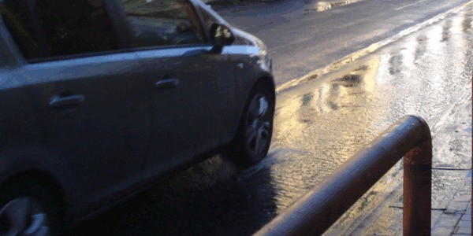
Parlando dei comportamenti da adottare in caso di pioggia non possiamo non parlare anche del fenomeno dell'aquaplaning. Aquaplaning vuol dire letteralmente "slittamento sull'acqua" e questo fenomeno si verifica quando sulla strada c'è una gran quantità d'acqua, in genere piovana (o di altra natura), che non permette alle ruote di toccare il manto stradale.
A questo punto qualcuno di voi potrebbe obiettare dicendo "ma come è possibile che un veicolo, che di certo ha un notevole peso, possa galleggiare sull'acqua?". Ciò è possibile, anche se si verifica più facilmente nei veicoli più leggeri. Le cause di questo galleggiamento sono: lo strato d'acqua presente sul manto stradale; l'eccessiva velocità del veicolo; pneumatici in pessime condizioni d'usura e di pressione.
Quindi, adesso che sapete le cause, saprete anche come comportarvi dopo un temporale o in caso di temporale in corso. Innanzitutto, prima di partire, dovrete controllare che le ruote non siano lisce e che siano gonfiate alla perfezione, in quanto questo fenomeno inizia a velocità più bassa se il pneumatico è molto consumato. A questo punto potrete partire, viaggiando però a velocità moderata poiché potreste trovare improvvisamente una pozza d'acqua davanti a voi che potrebbe scatenare questo pericoloso fenomeno.
Ma perché il fenomeno dell'aquaplaning è tanto pericoloso? Semplice, l'auto diventa ingovernabile e, pertanto, frenare o girare il volante è perfettamente inutile. Le uniche cose da fare in questo caso sono: tenere il volante ben saldo; sollevare il piede dall'acceleratore; aspettare che le ruote riprendano nuovamente aderenza.
Comportamenti da adottare su strade coperte di neve
Anche le strade ghiacciate o coperte di neve, così come quelle coperte d'acqua, rappresentano una situazione alquanto pericolosa. Pertanto su strade ghiacciate o coperte di neve occorre:
montare gli pneumatici per neve su tutte le ruote oppure le catene sulle ruote motrici;
procedere a velocità moderata;
aumentare la distanza di sicurezza;
distanziarsi dalla traiettoria dei veicoli che si incrociano e dagli ostacoli;
in discesa, procedere con marce basse;
usare maggiore attenzione nel transito su zone in ombra (ossia su zone dove non batte il sole);
innestare la doppia trazione, se il veicolo ne è provvisto;
evitare brusche manovre, come brusche accelerazioni, frenate improvvise ecc.
Comportamenti da adottare in caso di infossamento su neve o sabbia
E se doveste infossarvi sulla neve? In caso di infossamento su neve, o sabbia, non riuscendo a partire con la prima marcia è opportuno innestare una marcia superiore (ossia la seconda) ed è consigliabile inserire sotto la ruota che slitta qualcosa che faccia attrito, come pezzi di legno, tappeti del veicolo, ecc.
Comportamenti da adottare in caso di nebbia fitta
E in caso di nebbia fitta, che fare? In caso di nebbia fitta è opportuno:
lasciarsi guidare dalla segnaletica orizzontale;
procedere ad una velocità adeguata alla visibilità;
fermarsi, se necessario, fuori dalla carreggiata;
evitare di fermarsi sulla carreggiata, se non per cause di forza maggiore. Se costretti a fermarsi sulla carreggiata, è necessario usare la segnalazione luminosa di pericolo (ossia le quattro frecce lampeggianti simultaneamente);
accendere la luce posteriore per nebbia e i proiettori fendinebbia o, in mancanza, quelli anabbaglianti;
guidare con la massima prudenza e concentrazione.
Comportamenti da adottare percorrendo un tunnel o un traforo
Percorrendo un lungo tunnel o traforo, in caso di formazione di lunghe file di veicoli, è opportuno aumentare la distanza di sicurezza, per scongiurare, in caso d'incendio, il rapido propagarsi delle fiamme. Inoltre, in caso d'incendio, bisogna abbandonare velocemente il veicolo, seguendo la segnaletica che porta alle vie di fuga o ai luoghi sicuri protetti da porte tagliafuoco, ed attenersi alle istruzioni vocali del personale di servizio o dei vigili del fuoco, per evitare di incamminarsi nella direzione sbagliata.
A tal proposito occorre analizzare i due segnali qui in alto, entrambi posti all'interno delle gallerie. Il primo pannello a sinistra, ossia il segnale di Via Di Fuga, indica, appunto, la presenza di una via di fuga per uscire dalla galleria mentre il pannello in alto a destra, ossia il segnale di Estintore, indica, appunto, la presenza di un estintore.
Comportamenti da tenere quando si deve far salire o scendere un passeggero
Anche quando si deve far salire o scendere un passeggero dal veicolo bisogna adottare dei comportamenti atti ad evitare incidenti. Pertanto, quando si deve far salire o scendere un passeggero dal veicolo, bisogna farlo attendere fino a che il veicolo sia completamente fermo e bisogna aprire la portiera solamente quando non si causa pericolo agli altri utenti della strada.
A questo punto è opportuno che il passeggero scenda dal lato del marciapiede o, in mancanza del marciapiede, dal lato opposto al traffico. Quando, invece, a salire o scendere dal veicolo è un bambino, è opportuno che vi sia il controllo di un adulto.
Comportamenti da tenere quando si è coinvolti in un incidente stradale
Passiamo, dunque, ad analizzare i comportamenti da tenere quando si è coinvolti in un incidente stradale. Il conducente coinvolto in un incidente stradale ha l'obbligo di fermarsi e di prestare assistenza agli eventuali feriti (compresi gli animali) e deve fornire le proprie generalità (ossia nome, cognome ecc.) e gli estremi della patente, della targa e dell'assicurazione del veicolo alle persone danneggiate.
Inoltre il conducente coinvolto in un incidente stradale deve evitare che vengano modificate le tracce (esempio spostando subito il veicolo sul marciapiede), se occorre ricostruire la dinamica dell'incidente, e per la denunzia (ossia la comunicazione) all'assicurazione può avvalersi degli appositi moduli prestampati forniti dalla propria assicurazione.
Comportamenti da tenere per evitare incidenti
A questo punto non ci resta che analizzare gli altri comportamenti da tenere per evitare incidenti. Questi comportamenti sono tutti di facile comprensione ed intuizione, ma è sempre bene ribadirli. Innanzitutto, per evitare incidenti, è necessario evitare di fare da soli interventi di manutenzione che richiedono, invece, l'intervento di personale specializzato (esempio la manutenzione della pompa di iniezione del proprio veicolo).
Può causare incidenti anche aumentare le prestazioni del proprio veicolo, aumentando, ad esempio, la cilindrata del motore oppure modificando le impostazioni elettroniche della centralina che controlla l'iniezione di carburante. Sempre al fine di evitare incidenti, occorre considerare che:
la distanza percorsa durante il tempo di reazione varia con la velocità (come già spiegato nella lezione sulla Distanza Di Sicurezza);
la spia rossa dell’olio di lubrificazione del motore non deve rimanere sempre accesa;
bisogna evitare di frenare a fondo e bruscamente su strada sdrucciolevole (ossia scivolosa);
è necessario mettere a punto i freni squilibrati (di cui parleremo nella penultima lezione), anche se il conducente è in grado di correggere l'anomalo comportamento del veicolo agendo sullo sterzo.
Cautele da adottare nei confronti dei veicoli a due ruote
Anche nei confronti dei veicoli a due ruote bisogna adottare determinate cautele atte ad evitare incidenti. Infatti i motocicli, avendo una ridotta sagoma frontale, sono meno visibili a distanza e, pertanto, i conducenti degli autoveicoli devono, nell'aprire le portiere e in linea generale, prestare particolare attenzione ai veicoli a motore a due ruote. In particolar modo, nell'attraversamento degli incroci si deve sempre considerare la possibilità che sopraggiunga, senza che sia visibile a distanza, un veicolo a motore a due ruote che ha sorpassato i veicoli fermi.
Oppure in caso di intenso traffico con incolonnamento di veicoli, prima di aprire le portiere per scendere dal proprio veicolo in sosta, si deve sempre considerare la possibilità che sopraggiunga un veicolo a motore a due ruote che sta sorpassando a destra i veicoli fermi in coda. Infine, occorre considerare che durante il sorpasso di un veicolo a motore a due ruote, soprattutto se ad elevata velocità, si deve mantenere sempre una buona distanza laterale di sicurezza.
Cautele che devono adottare i conducenti dei veicoli a due ruote
Vediamo, infine, le cautele che devono adottare i conducenti dei veicoli a due ruote . Come abbiamo detto poc'anzi, i motocicli, avendo una ridotta sagoma frontale, sono meno visibili a distanza e, quindi, durante la circolazione su strada, per rendersi maggiormente visibili, devono tenere accesi i proiettori anabbaglianti anche di giorno.
A tal proposito, bisogna considerare che anche l’abbigliamento del conducente di un veicolo a due ruote incide sulla sua visibilità. Pertanto, è preferibile che indossi abiti dai colori vivaci (che ben si notino anche nel traffico) o con inserti retroriflettenti. Non è un caso, infatti, che l'abbigliamento da ciclismo preveda colori quali il giallo, il rosa e l'arancione!
Infine occorre considerare che le rotaie del tram, i tombini e le strisce pedonali sono degli elementi stradali che possono essere pericolosi per la circolazione dei veicoli a due ruote, soprattutto se il fondo stradale è bagnato. Infatti il passaggio in velocità su tombini, strisce pedonali o rotaie del tram a bordo di un veicolo a due ruote può far perdere tenuta di strada e dirigibilità al veicolo, causando sbandamenti o cadute.
Conclusione
E per l'argomento Incidenti stradali e comportamenti in caso di incidente è tutto! Le cose da ricordare di questa lezione non sono molte, e alcune di queste sono anche di facile intuizione, ma comunque tutte di estrema importanza al fine di evitare incidenti. Quindi, studiatele non bene, ma benissimo!
Fatto? Se la risposta è un forte e deciso "si" potete verificare le vostre conoscenze con i quiz su Incidenti stradali e comportamenti in caso di incidente prima di passare ad un nuovo ed avvincente argomento, quello su Guida in relazione alle qualità e condizioni fisiche e psichiche, alcool, droga, farmaci e primo soccorso!
Guida in relazione alle qualità e condizioni fisiche e psichiche, alcool, droga, farmaci e primo soccorso
E dopo l'argomento Incidenti stradali e comportamenti in caso di incidenti non possiamo che affrontare l'argomento Guida in relazione alle qualità e condizioni fisiche e psichiche, alcool, droga, farmaci e primo soccorso. Vedremo, pertanto, quali sono i comportamenti che deve adottare un conducente che accusa segni di stanchezza, le sostanze che possono compromettere l’idoneità alla guida e cosa fare in situazione di primo soccorso.
Comportamento che deve adottare un conducente che accusa segni di stanchezza
Partiamo, dunque, dai comportamenti che deve adottare un conducente che accusa segni di stanchezza. Il conducente che accusa segni di stanchezza deve, innanzitutto, ridurre la velocità per poi raggiungere la più vicina piazzola di sosta e riposare.
Uso di sostanze che possono compromettere l’idoneità alla guida
Probabilmente già saprete che esistono sostanze che possono compromettere l’idoneità alla guida ma, in ogni caso, è sempre bene ribadirle. L'idoneità alla guida può essere compromessa se si fa uso di alcuni farmaci sedativi o antidepressivi, di bevande alcoliche e di droghe o allucinogeni (esempio eroina, cocaina, LSD, anfetamina, hashish, marijuana, ecstasy, ecc.). Pertanto se doveste fare uso di una di queste sostanze non osate mettervi al volante. Ne va della vostra vita e di quella degli altri!
Effetti dell’assunzione di alcool sulla guida
Ma perché l'idoneità alla guida può essere compromessa se si fa uso di bevande alcoliche? L'assunzione di alcool rende meno sicura la guida perché può provocare euforia, con conseguente sottovalutazione del pericolo, o perché può modificare pericolosamente la capacità di concentrazione e attenzione, andando a rallentare i riflessi e a provocare sonnolenza.
Questi sono, dunque, i motivi per cui chi guida in stato di ebbrezza alcolica rischia non solo la vita ma anche l'arresto. Comunque, in linea generale, è sempre sconsigliabile guidare quando si ha uno stato emotivo alterato. A questo punto qualcuno di voi potrebbe chiedersi "come è possibile recuperare l'idoneità alla guida dopo l’assunzione di bevande alcoliche?". Vediamolo subito!
Recupero dell’idoneità alla guida dopo l’assunzione di bevande alcoliche
Un conducente che ha assunto una quantità eccessiva di bevande alcoliche non può recuperare velocemente l'idoneità alla guida, specie se ha assunto anche dei farmaci. Pertanto è necessario che trascorrano alcune ore affinché un conducente che abbia assunto una quantità eccessiva di bevande alcoliche recuperi l'idoneità alla guida.
Effetti dell’alimentazione sulla guida
Anche un'alimentazione pesante ed eccessiva è sconsigliata per chi deve guidare. Infatti l'alimentazione con cibi di difficile digestione può provocare una diminuzione dell'attenzione e un aumento dei tempi di reazione. Quindi, tenetelo in conto prima di mettervi al volante.
Obbligo di usare gli occhiali correttivi durante la guida
E per quanto riguarda gli occhiali correttivi durante la guida, quando è obbligatorio usarli? Durante la guida, si devono usare gli occhiali da vista o le lenti a contatto se nella patente figura, per esteso o sotto forma di codice (ossia il codice armonizzato "01"), tale obbligo.
Primo soccorso
Innanzitutto ci preme sottolineare che soccorrere un ferito della strada non solo è obbligatorio per legge ma può evitare che subisca ulteriori danni fisici o, addirittura, può significare salvargli la vita.
Scopo e limiti del primo soccorso
Lo scopo del primo soccorso è quello di cercare di mantenere in vita il ferito con semplici e immediati interventi, in attesa che arrivi il soccorso medico. Pertanto nell'intervento di primo soccorso bisogna evitare, per quanto possibile, che il ferito subisca ulteriori danni a seguito di interventi sbagliati o dannosi.
Quindi, dopo un incidente stradale, il soccorritore che interviene deve:
segnalare l’incidente con il triangolo mobile di pericolo;
chiamare i soccorsi qualificati;
valutare bene la situazione, per proteggere gli infortunati da altri pericoli;
assistere gli infortunati al meglio delle proprie possibilità, senza però prendere iniziative di specifica competenza medica.
Ma passiamo ad analizzare le varie situazioni che vi si possono presentare.
Trattamento di un infortunato che presenta una ferita sanguinante
Se un infortunato della strada ha una ferita sanguinante la si deve coprire con materiale sterile o quanto più possibile pulito, per bloccare il sanguinamento. Se la ferita sanguinante è sporca di terra, bisogna lavarla immediatamente con acqua pulita. Se, invece, la ferita presenta corpi estranei conficcati, non bisogna toglierli dalla ferita, per non peggiorare la situazione.
Se, invece, l'infortunato della strada presenta un'abbondante emorragia esterna, bisogna tamponare subito la ferita, facendo pressione con del materiale pulito o possibilmente sterile, e chiamare subito i soccorsi. Quindi, in attesa che arrivino i soccorsi, è opportuno, se possibile, mettere il ferito in posizione seduta o sdraiata, per evitare un possibile shock.
Trattamento di un infortunato che ha riportato fratture agli arti
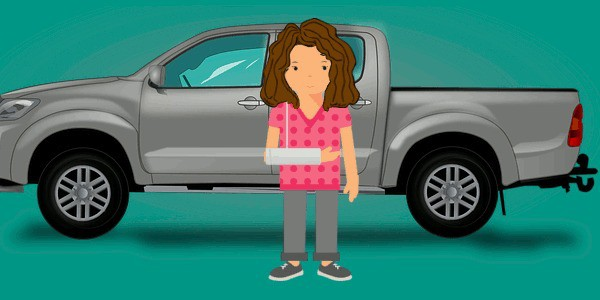
Se un infortunato della strada ha riportato fratture agli arti non bisogna muovere gli arti fratturati bensì bisogna bloccarglieli con stecche o altro materiale rigido, senza procedere ad
altre manovre, e coprire le eventuali ferite con materiale pulito. A questo punto, se necessario, bisogna attuare le normali misure anti-shock.
Trattamento di un ferito in stato di incoscienza
Se un ferito della strada è in stato di incoscienza, bisogna controllare spesso le sue condizioni di salute fino all'arrivo dell'ambulanza. Pertanto è necessario verificare se respira ancora, mettendo una mano sulla parte laterale bassa del torace o sull'addome, e se fa fatica a respirare, bisogna liberare subito il naso e la bocca da eventuali ostruzioni (esempio sangue, vomito ecc.).
A questo punto l'ideale sarebbe mettere il ferito in posizione laterale di sicurezza, ossia sdraiato su di un fianco con la testa reclinata all'indietro, la bocca aperta verso il basso e con gamba e braccio piegati. Ma prima di muoverlo dalla sua posizione è fondamentale sapere che se un ferito della strada è in stato di incoscienza, può essere mosso solo se si è certi che non abbia traumi alla colonna vertebrale.
Trattamento di un ferito in stato di shock
Lo stato di shock può essere causato da un forte dolore, da una forte emozione (gioia, rabbia), da una forte perdita di sangue o da un forte trauma e si manifesta con presenza di brividi, pelle molto pallida, sudorazione fredda alla fronte e frequenti battiti del cuore. Inoltre lo stato di shock può manifestarsi con improvvisa pronuncia di frasi e parole senza senso.
Adesso che sapete come riconoscere un ferito in stato di shock vediamo come bisogna intervenire. Innanzitutto un ferito in stato di shock va messo a terra, tenendo possibilmente le gambe sollevate di circa 20-30 centimetri rispetto al corpo (per favorire l'afflusso di sangue al cuore e al cervello), e va coperto come meglio possibile, per evitare che si raffreddi.
Trattamento di un infortunato che presenta un trauma alla gabbia toracica

Se un infortunato della strada ha avuto un trauma della gabbia toracica, bisogna assisterlo fino all'arrivo del soccorso medico, cercando di facilitargli la respirazione mettendolo semi- seduto. Nel caso ci sia anche una ferita visibile e profonda, bisogna comprimere subito con un panno pulito.
Trattamento di un ferito che presenta ustioni
Se un ferito della strada si è ustionato e sono ancora presenti delle residue fiamme, bisogna spegnerle, soffocandole, ad esempio, con una coperta. A questo punto è consigliabile non togliere i vestiti rimasti attaccati alla pelle bruciata e per diminuire il dolore delle ustioni si deve, se possibile, fare uso di acqua fredda. Inoltre se un ferito della strada ha riportato delle ustioni al busto, conviene coprirle con materiale pulito, possibilmente sterile.
Trattamento di un ferito che presenta un corpo estraneo in un occhio
Innanzitutto, se ad un infortunato della strada è entrato un corpo estraneo in un occhio (esempio scheggia di vetro, legno o altro), bisogna consigliargli di non toccare l'occhio danneggiato, per evitare danni maggiori. Quindi, a questo punto, bisogna bendargli l'occhio, evitando di toccarlo e senza procedere ad altre manovre fino all'intervento dello specialista.
Conclusione
Ed anche per l'argomento Guida in relazione alle qualità e condizioni fisiche e psichiche, alcool, droga, farmaci e primo soccorso è tutto! Le cose dette nel corso di questa lezione non sono molte ma tutte di estrema importanza, e non solo ai fini dell'esame, ma soprattutto perché potrebbero salvare delle vite. Quindi imparatele alla perfezione!
A questo punto non vi resta che verificare le vostre conoscenze a riguardo con i quiz su Guida in relazione alle qualità e condizioni fisiche e psichiche, alcool, droga, farmaci e primo soccorso prima di passare alla prossima lesione su Responsabilità civile, penale e amministrativa, assicurazione r.c.a. e altre forme assicurative legate al veicolo. Non ci resta che salutarvi con un'unica raccomandazione: di questi quiz fatene a più non posso!
Responsabilità civile, penale e amministrativa, assicurazione r.c.a. e altre forme assicurative legate al veicolo
In questa quarantacinquesima lezione affronteremo l'argomento Responsabilità civile, penale e amministrativa, assicurazione r.c.a. e altre forme assicurative legate al veicolo. Pertanto vedremo la responsabilità civile e penale connessa al sinistro stradale, l'assicurazione obbligatoria RCA, le polizze assicurative facoltative e i fattori che influenzano l'attenzione durante la guida.
Molti di voi credono che questo argomento sia difficile da comprendere. Niente di più sbagliato! Infatti, una volta capito il significato di termini quali "RCA", "massimali", "formula bonus-malus", "responsabilità civile e penale", tutto sarà di facile comprensione. Noi faremo del nostro meglio per rendervi tutto il più semplice possibile ma se, leggendo, qualcosa non vi è chiaro, non andate avanti bensì ostinatevi a capire. OK?
Assicurazione obbligatoria RCA
Visto che tra un po' avrete la patente starete già valutando la possibilità di acquistare un'auto. Ma prima di acquistare l'auto dovete sapere che ogni auto deve essere coperta da assicurazione RCA. Infatti l'assicurazione RCA è obbligatoria per legge e copre i danni causati a persone, animali o cose che si trovano in aree pubbliche o aperte al pubblico.
Pertanto, in base a quanto appena detto, è vietato utilizzare il veicolo privo di copertura assicurativa sulle strade pubbliche. Infatti quando l'assicurazione per la responsabilità civile auto è scaduta di validità si incorre in una sanzione (e, a volte, anche nella confisca del veicolo) se si circola o si lascia in sosta il veicolo sulle strade pubbliche.
Ma cosa vuol dire RCA? RCA sta per Responsabilità Civile Auto e sta ad indicare che questa assicurazione si riferisce solo alla responsabilità civile, e non anche alla responsabilità penale (di cui parleremo tra poco) o a quella amministrativa (esempio il pagamento di una multa). Vi ricordiamo, infine, che l'assicurazione per la responsabilità civile auto (R.C.A.) è valida anche per gli incidenti avvenuti nei Paesi dell'Unione Europea e riguarda anche i danni subiti da terzi (ossia dai passeggeri), ma solo se il veicolo è autorizzato al trasporto di persone.
Massimali della polizza di assicurazione RCA
Ricordate che all'inizio della lezione avevamo detto che avremmo visto il significato di alcuni termini come "i massimali"? Bene! I massimali della polizza di assicurazione R.C.A. altro non sono che gli importi massimi che l'impresa assicuratrice si impegna a pagare, in caso di incidente. I massimali della polizza di assicurazione R.C.A. possono essere aumentati, a scelta del cliente, pagando una maggiore somma di denaro (noto come premio assicurativo) mentre la cifra minima dei massimali viene stabilita dalla legge.
Contratto di assicurazione RCA con formula bonus-malus
Anche del "bonus-malus" avevamo già accennato in precedenza ed ora vi spiegheremo cos'è! Nell'assicurazione per la responsabilità civile auto (R.C.A.), il contratto con la formula "bonus malus" comporta una variazione annuale del premio di assicurazione (ossia il prezzo da pagare all’assicurazione) in base al numero di incidenti causati. Pertanto, se non si provocano incidenti il prezzo da pagare all’assicurazione scende, mentre se si fanno incidenti, di cui si è responsabili, il prezzo aumenta. Semplice, no?
Il meccanismo del contratto con formula "bonus-malus" si basa su 18 classi di merito. Alla stipula del primo contratto viene associata la classe 14 e se, in un certo periodo, l'automobilista non causa incidenti, scende di classe (ossia va in bonus), mentre se causa incidenti, sale di classe (ossia va in malus) e, pertanto, deve pagare di più.
Documenti che l’impresa assicuratrice deve rilasciare all’automobilista
Ma ricordate! Dopo la firma del contratto di assicurazione RCA, l'impresa assicuratrice deve rilasciare al cliente il certificato di assicurazione (visibile nella foto in alto), che deve essere sempre tenuto a bordo del veicolo, e la polizza di assicurazione che, invece, non è obbligatorio tenere in macchina.
Fondo di garanzia per le vittime della strada
E se fosse un veicolo non coperto da assicurazione, oppure un pirata della strada, ad arrecare danni a persone? Per questo c'è il "fondo di garanzia per le vittime della strada" che prevede, appunto, il risarcimento dei danni arrecati alle persone da veicoli non coperti da assicurazione e da veicoli non identificati.
Polizze assicurative facoltative
Mentre l'assicurazione RCA è obbligatoria, le polizze assicurative stipulate di solito per coprire i danni da furto, incendio, atti vandalici, eventi naturali (esempio una grandinata) o danni al proprio veicolo (nota come polizza kasko) non sono obbligatorie. Ma ricordate, nella polizza assicurativa contro il rischio di furto o incendio, il risarcimento dovuto non può essere superiore al valore che il veicolo aveva al momento in cui è stato rubato o ha preso fuoco.
Inoltre occorre sottolineare che l'assicurazione contro il rischio d’incendio del veicolo copre, di solito, solo i danni causati da incendi accidentali (ossia casuali) e non quelli provocati da incendi dolosi (ossia intenzionali) e che nel caso in cui il veicolo venga rubato per avvalersi dell'assicurazione bisogna presentare alla polizia una denuncia. Qualora, invece, il furto avvenga in uno Stato estero, per poter attivare l'assicurazione bisogna ripetere la denuncia anche in Italia.
Responsabilità civile connessa al sinistro stradale
Dato che la sigla RCA sta per "responsabilità civile autoveicoli" non possiamo non parlare della "responsabilità civile connessa al sinistro stradale". La responsabilità civile connessa al sinistro stradale è basata sul principio che ogni danno causato a persone, a cose o ad animali, deve essere risarcito dal responsabile, o dall'impresa assicuratrice che fa le sue veci.
La responsabilità civile connessa al sinistro stradale è indipendente dalla responsabilità amministrativa e dalla responsabilità penale, di cui parleremo tra poco, e grava sia sul conducente che sul proprietario del veicolo. Non grava, invece, sul proprietario del veicolo se quest'ultimo dimostra che il veicolo è stato usato contro la sua volontà, come ad esempio in caso di furto.
Quindi, detto in parole povere, il responsabile può risarcire il danneggiato del danno subito accordandosi direttamente con esso (ossia senza far intervenire l'impresa assicuratrice) circa il valore del risarcimento oppure può avvalersi di un consulente di infortunistica stradale (ossia un esperto) per stabilire l'importo esatto del danno.
Responsabilità penale connessa al sinistro stradale
La responsabilità penale connessa al sinistro stradale, invece, è a carico del solo conducente del veicolo e sorge allorché vengano violate norme contemplate dal Codice Penale, esempio quando il sinistro stradale provoca lesioni gravi a persone, in caso di omicidio (anche colposo) ecc. È, invece, esclusa quando:
vi siano danni involontari alle sole cose;
il fatto non sia considerato un reato;
il fatto dipende da causa di forza maggiore.
Responsabilità civile e penale in un sinistro stradale
Chi è penalmente e civilmente responsabile di un sinistro stradale è soggetto alle pene previste dal Codice Penale e, qualora abbia violato norme del Codice della strada, è anche soggetto alle relative sanzioni. Il responsabile, come già detto, è tenuto al risarcimento dei danni e può incorrere nella sospensione, nella revoca o nella revisione della patente di guida.
Risarcimento diretto dei sinistri stradali
Ma prima di passare alla percezione delle proprie capacità di guida e ai fattori che influenzano l'attenzione durante la guida non possiamo non parlare del risarcimento diretto dei sinistri stradali, noto anche come indennizzo diretto. Il risarcimento diretto nei sinistri stradali è una procedura speciale a tutela del danneggiato atta a velocizzare l’iter di liquidazione di un sinistro stradale.
Il meccanismo di questa procedura è semplice, ossia il danneggiato richiede il risarcimento direttamente alla propria assicurazione, che anticipa l’importo concordato facendoselo poi rimborsare dall’assicurazione della controparte. Ma questa procedura si applica solo se vi sono
danni al veicolo e lesioni di lieve entità al conducente. Mentre non è applicabile se vi sono più di due veicoli coinvolti.
Percezione delle proprie capacità di guida e rispetto delle norme
Passiamo, dunque, alla percezione delle proprie capacità di guida e al rispetto delle norme. Innanzitutto un conducente non deve mai sopravvalutare la propria abilità di guida e deve considerare che non sempre è in grado di valutare correttamente le proprie capacità di guida e che a volte ci si espone a situazioni più rischiose di quelle che si è in grado di gestire.
Quindi, per fare un esempio, se non si è certi di attraversare in tutta sicurezza un incrocio, è necessario arrestarsi ed aspettare che transitino tutti i veicoli con cui vi può essere un pericolo di collisione. Le norme di circolazione, infatti, sono stabilite per garantire una maggior sicurezza di guida per tutti gli utenti della strada e il loro rispetto permette di limitare l'intralcio alla circolazione e di limitare i rischi connessi alla guida di tutti i veicoli, sia di quelli a motore sia di quelli che ne sono privi.
Attenzione durante la guida
Non ci stancheremo mai di dirlo: "distrarsi alla guida può causare incidenti stradali che possono comportare gravi conseguenze", tenetelo sempre a mente. Pertanto, bisogna considerare che è pericoloso, durante la guida, distogliere lo sguardo dalla strada, anche per pochi millisecondi.
Quindi, durante la guida, il conducente deve mantenere la massima concentrazione alla guida, soprattutto mentre attraversa un incrocio, e deve prestare attenzione, sia agli utenti che si trovano davanti al proprio veicolo sia a coloro che si trovano ai bordi della strada, valutando attentamente il loro comportamento. Per tutti quelli che si considerano dei tipi distratti, ricordate che l'attenzione alla guida può essere migliorata tramite l'allenamento.
Fattori che influenzano l'attenzione durante la guida
Prima di elencarvi i fattori che influenzano l'attenzione durante la guida bisogna sottolineare che i nostri sensi non riescono a cogliere tutti gli stimoli presenti nell'ambiente e che le emozioni influenzano la nostra attenzione. Pertanto, quando si è alla guida, la capacità di attenzione può essere influenzata:
dall'ascolto di musica a volume molto alto;
dalle condizioni ambientali;
dall'ansia;
dal parlare animosamente con altre persone a bordo del veicolo;
dalla presenza di passeggeri che schiamazzano a bordo del veicolo;
dall'impostare il navigatore satellitare mentre si guida;
dalle indicazioni del navigatore satellitare;
dall'utilizzo del cellulare alla guida, anche se con impianto viva-voce;
dallo stato di affaticamento.
Pertanto il miglior consiglio che possiamo darvi è quello di pensare solo a guidare mentre siete al volante. Guidare responsabilmente sarà il primo segnale che, ormai, siete diventati adulti!
Conclusione
E siamo giunti al termine dell'argomento Responsabilità civile, penale e amministrativa, assicurazione r.c.a. e altre forme assicurative legate al veicolo. È stato facile da capire, no? Per verificare le vostre conoscenze in merito non vi resta che fare tanti quiz su responsabilità civile, penale e amministrativa, assicurazione r.c.a. e altre forme assicurative legate al veicolo. A presto con una nuova lezione!
Limitazione dei consumi, rispetto dell'ambiente e inquinamento
Se nella precedente lezione abbiamo parlato dell'Assicurazione RCA, nel corso di questa lezione analizzeremo il penultimo argomento di Teoria Patente B, ossia Limitazione dei consumi, rispetto dell'ambiente e inquinamento. Vedremo, pertanto, come ridurre il consumo di carburante (per la felicità delle vostre tasche :)) e cosa fare per ridurre al minimo l'inquinamento atmosferico e acustico. Siete pronti a tutto questo? Allora iniziamo subito!
Riduzione dei consumi
Il consumo di carburante (e, di conseguenza, anche l'inquinamento) aumenta:
con l'aumentare del peso del veicolo;
azionando gli apparecchi e i dispositivi che funzionano a corrente elettrica, come radio, luci, lunotto termico, ecc.;
con l'insufficiente pressione di gonfiaggio degli pneumatici;
collocando i bagagli sul tetto del veicolo;
viaggiando con uno spesso strato di neve sul tetto del veicolo;
viaggiando a forte velocità con il tettuccio del veicolo e i finestrini aperti.
Pertanto per consumare meno carburante è opportuno:
ridurre, se possibile, il carico del veicolo;
azionare il climatizzatore il meno possibile e soltanto quando serve effettivamente;
azionare gli apparecchi e i dispositivi che funzionano a corrente elettrica (come radio, luci, lunotto termico, ecc.) soltanto quando servono effettivamente;
mantenere la giusta pressione di gonfiaggio degli pneumatici;
non fare uso del portapacchi, ma sistemare i bagagli all'interno del veicolo;
togliere la neve che si è posata sul tetto del veicolo dopo un'abbondante nevicata, prima di mettersi in marcia;
tenere il tettuccio del veicolo e i finestrini chiusi, specie quando si viaggia ad alta velocità, perché le turbolenze all'interno dell'abitacolo possono frenare la marcia del veicolo;
diminuire opportunamente la velocità e mantenerla il più possibile costante;
scegliere, per quanto possibile, strade pianeggianti e più scorrevoli.
Inquinamento atmosferico prodotto dai veicoli
L'inquinamento dell'aria prodotto dai veicoli fa aumentare lo smog, le piogge acide e l'effetto serra. Può, inoltre, causare danni alle vie respiratorie e irritazione agli occhi ed è dovuto per la maggior parte ai gas di scarico, generati dalla combustione all'interno del motore. Pertanto, l'inquinamento dell'aria può dipendere da un funzionamento irregolare del motore ed aumenta se:
gli iniettori sono difettosi;
il filtro dell'aria è sporco o intasato;
aumenta l'emissione di fumo dallo scarico o quest'ultimo presenta un colore scuro.
Riduzione dell’inquinamento atmosferico provocato dai veicoli
Quindi per diminuire l'inquinamento provocato dai veicoli bisogna:
adottare uno stile di guida che limiti i consumi di carburante, non accelerando bruscamente durante le partenze e non accelerando e frenando spesso durante la marcia del veicolo;
evitare di tenere inserita per troppo tempo una marcia bassa, se non è necessaria;
spegnere il motore, in caso di arresto prolungato;
alleggerire il peso del veicolo;
evitare di usare il veicolo per brevi percorsi;
controllare che il veicolo sia sempre nelle condizioni ottimali di consumo e rendimento;
sostituire la marmitta catalitica quando la stessa è deteriorata o esausta;
far sostituire periodicamente il filtro dell'aria;
far controllare il motore, se il fumo dello scarico risulta troppo scuro;
far controllare periodicamente il sistema di alimentazione (ossia la pompa di iniezione e gli iniettori) del veicolo, se con motore diesel;
scegliere veicoli con alimentazione elettrica, a metano o GPL.
Sanzioni per chi guida un veicolo inquinante o con motore e marmitta modificate
Ci preme sottolineare, inoltre, che guidando un veicolo a cui sono stati modificati il motore e la marmitta si può incorrere in pesanti sanzioni amministrative (ossia in una multa). Anche guidando un veicolo che emette troppi gas di scarico inquinanti si può essere puniti con una sanzione amministrativa e, inoltre, con il ritiro della carta di circolazione.
Inquinamento acustico provocato dai veicoli
E che fare per ridurre l'inquinamento acustico provocato dai veicoli? Per diminuire il rumore emesso dai veicoli a motore è necessario:
che il dispositivo silenziatore (ossia la marmitta) sia efficiente e di tipo approvato. Pertanto, se la marmitta è rovinata, bisogna farla sostituire con una approvata per quel tipo di veicolo;
evitare di usare in modo eccessivo i dispositivi di segnalazione acustica (ossia clacson, trombe) ricordando che il clacson va usato solamente per motivi di sicurezza stradale (esempio per trasporto feriti o ammalati, per pericolo immediato ecc.);
chiudere con calma le portiere;
evitare di frenare bruscamente, se non è strettamente necessario;
far controllare i freni se emettono rumore durante le frenate, sostituendoli se necessario;
evitare di accelerare inutilmente e ripetutamente se il veicolo è fermo.
Quindi, ricapitolando, il rumore prodotto dai veicoli a motore aumenta man mano che si va rovinando il silenziatore (ossia la marmitta) e si può diminuire con una guida corretta, che eviti brusche frenate o forti accelerazioni. Vi ricordiamo, inoltre, che nelle curve percorse a forte velocità, lo strisciamento dei pneumatici aumenta la rumorosità del veicolo e che anche i rimorchi vuoti, che sobbalzano eccessivamente, possono essere causa di rumore.
Smaltimento dei rifiuti prodotti dal veicolo e rottamazione
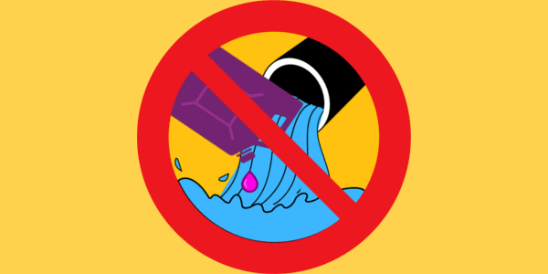
Passiamo, dunque, allo smaltimento dei rifiuti prodotti dal veicolo e alla rottamazione. Innanzitutto è vietato scaricare nella fognatura il liquido antigelo del circuito di raffreddamento del veicolo, poiché potrebbe non essere biodegradabile. Anche l'abbandono di una batteria per auto, sulla strada o sul terreno, può arrecare gravi danni all'ambiente e alle falde acquifere sottostanti (ossia all'acqua che si trova nel sottosuolo). Pertanto se si acquista una batteria per auto si può consegnare quella esausta (ossia usata) al rivenditore, che provvederà a ritirarla senza ulteriori costi aggiuntivi.
Inoltre, al momento dello smaltimento dell'olio del motore, bisogna evitare che venga a contatto con la pelle per un tempo prolungato. Vi ricordiamo, infine, che anche lo scarico dei residui organici e delle acque sporche delle autocaravan deve avvenire negli appositi impianti di smaltimento igienico-sanitari. Quanto alla rottamazione, il proprietario di un veicolo che intende demolirlo o rottamarlo, deve consegnarlo ad un centro di raccolta per la messa in sicurezza (ossia ad un autodemolitore autorizzato).
Comportamenti vietati sulle strade
Dei comportamenti vietati sulle strade ne abbiamo già ampiamente parlato nel corso della quinta lezione, quando abbiamo parlato dei Doveri del conducente. Ricordate? In ogni caso è bene ribadirli! Sulle strade è vietato:
danneggiare le opere e gli impianti stradali (esempio tombini, panchine, ecc.);
imbrattare, spostare o rimuovere la segnaletica stradale;
gettare oggetti e rifiuti dai veicoli fermi o in movimento;
sporcare la carreggiata depositando rifiuti;
immettersi con le ruote del veicolo sporche di fango;
gareggiare in velocità.
Conclusione
Ed anche per l'argomento Limitazione dei consumi, rispetto dell'ambiente e inquinamento è tutto! Volete essere sicuri di averlo compreso alla perfezione? Prima di passare alla prossima lezione sugli Elementi costitutivi del veicolo esercitatevi con i quiz su Limitazione dei consumi, rispetto dell'ambiente e inquinamento! Se gli errori fatti saranno sempre "0" vorrà dire che l'avrete davvero capito. Semplice no?
Elementi costitutivi del veicolo
Siete arrivati fin qui partendo dall'inizio della Teoria? Bravissimi!!! Infatti dopo l'argomento Limitazione dei consumi, rispetto dell'ambiente e inquinamento non ci resta che analizzare l'ultimo argomento di Teoria Patente b, ossia Elementi costitutivi del veicolo, manutenzione ed uso, stabilità e tenuta di strada, comportamenti e cautele di guida, che sarà analizzato nel corso di questa lezione e della prossima.
Lo sapete, ci teniamo a voi ;) ed è per questo motivo che preferiamo fare lezioni brevi piuttosto che lunghi e noiosi monologhi difficili da ricordare. Pertanto nel corso di questa lezione ci concentreremo solo sugli Elementi costitutivi del veicolo (vetri, pneumatici, freni ecc.) mentre nella prossima lezione ci concentreremo su stabilità e tenuta di strada, comportamenti e cautele di guida. Siete pronti a sporcarvi le mani con pneumatici, ammortizzatori ed impianti di scarico? Allora iniziamo subito!
Trasparenza e pulizia dei vetri
Iniziamo parlando di un elemento importantissimo del veicolo, i suoi vetri. La trasparenza e la pulizia dei vetri del veicolo garantiscono una migliore visibilità esterna. Pertanto occorre verificare le spazzole del tergicristallo (visibili in alto a sinistra) per sostituirle se sono consumate e che nel serbatoio del dispositivo lavacristallo (in alto a destra) sia sempre presente liquido per detergere i vetri.
Vi ricordiamo, inoltre, che adesivi, ciondoli o altri oggetti applicati sui vetri del veicolo, per quanto possano essere belli o simpatici, possono ridurre la visibilità del conducente. Pertanto è bene evitarli! State per comprare la vostra prima auto e sentite il bisogno impellente di personalizzarla? Potete sempre puntare su coprivolante, coprisedili e tappetini che ben rispecchiano la vostra personalità!
Scelta e manutenzione degli pneumatici
Passiamo, dunque, ad un altro elemento indispensabile per una guida sicura, ossia gli pneumatici. Innanzitutto per una maggiore sicurezza, bisogna utilizzare pneumatici uguali sulle ruote dello stesso asse, che devono essere delle dimensioni previste dall'omologazione del veicolo, e bisogna controllare che la pressione di gonfiaggio degli pneumatici sia quella consigliata dalla casa costruttrice, al fine di garantire aderenza e stabilità del veicolo.
Infatti occorre considerare che la pressione di gonfiaggio troppo bassa degli pneumatici fa aumentare l'attrito e i consumi di carburante e ne provoca l'anomalo consumo ai bordi che può portare ad improvvisi scoppi o sgonfiamento. Mentre una pressione di gonfiaggio troppo alta consuma gli pneumatici al centro. Ed è per questo motivo che il sistema automatico di rilevamento della pressione di gonfiaggio degli pneumatici fa aumentare la sicurezza dei veicoli che ne sono dotati.
Controllo della pressione di gonfiaggio degli pneumatici
Pertanto, in base a quanto appena detto sopra, si deve controllare periodicamente la pressione di gonfiaggio degli pneumatici, compresa quella della ruota di scorta. Ma attenzione! Questo controllo va fatto quando la gomma è fredda. Tenete, inoltre, presente che la corretta pressione di gonfiaggio degli pneumatici dipende dal carico del veicolo e dal numero dei passeggeri trasportati.
Sostituzione degli pneumatici
Ma quando vanno sostituiti gli pneumatici? Semplice! Gli pneumatici vanno sostituiti se sono consumati. Ma per rispondere più precisamente a questa domanda bisogna considerare che lo spessore minimo del battistrada degli pneumatici di un autoveicolo deve essere di 1,6 millimetri mentre di un motociclo deve essere di 1,0 millimetri. A questo punto qualcuno di voi potrebbe chiedersi "ma cos'è il battistrada?".
Il battistrada (visibile nell'immagine in alto) è quella parte dello pneumatico che viene a contatto con la strada e che è scolpita da scanalature che servono a migliore l’aderenza al fondo stradale. In ogni caso, è consigliabile sostituire gli pneumatici dopo alcuni anni, anche se non sono consumati.
Uso di pneumatici “tubeless”, termici, chiodati e di catene da neve
Passiamo, dunque, a vedere i diversi tipi di pneumatici, partendo dagli pneumatici "tubeless". Gli pneumatici "tubeless" rispetto ai classici pneumatici non hanno camera d'aria e, quindi, in caso di foratura, si sgonfiano lentamente. Pertanto, se in uno pneumatico del tipo "tubeless" si è conficcato un chiodo, è possibile, con le necessarie cautele, continuare a guidare, fermandosi quanto prima per riparare il danno.
Quanto agli pneumatici invernali, quest'ultimi hanno caratteristiche costruttive particolari che garantiscono una buona aderenza su strade ghiacciate o innevate. Questi pneumatici devono essere montati su tutte le ruote ed è sconsigliato tenerli montati nei mesi estivi, poiché quando non ci sono neve e freddo si deteriorano facilmente.
Passiamo, dunque, agli pneumatici chiodati. Quest'ultimi (da come si può già facilmente capire dal nome :)) sono muniti di chiodi per garantire una buona aderenza su strade ghiacciate e possono essere usati limitatamente ad un predeterminato periodo dell'anno, ossia dal 15 Novembre al 15 Aprile. Ricordate, però, che quando si fa uso degli pneumatici chiodati bisogna rispettare limiti di velocità inferiori a quelli ordinari.
E le catene da neve cosa sono? E quando vanno usate? Le catene da neve (visibili nella foto in alto) sono speciali catene che applicate alle ruote motrici, o a quelle anteriori in caso di veicoli a doppia trazione (ossia 4x4), garantiscono una migliore aderenza su neve, fango, ghiaia e, se del tipo rompighiaccio, anche sul ghiaccio.
Ma queste catene, per poter essere usate, devono essere di tipo omologato. Infatti chi fa uso di catene da neve non omologate è sanzionabile come se ne fosse sprovvisto. Vi ricordiamo, inoltre, che usare le catene su tratti di strada privi di neve porta al danneggiamento degli pneumatici e degli organi della sospensione, ossia gli ammortizzatori (di cui parleremo tra poco).
Sostituzione di una ruota
Mettiamo che scendendo dall'auto vi accorgiate di aver bucato una ruota. La prima domanda che vi verrà in mente (dopo mille insulti contro la fortuna che non è mai dalla vostra parte :D) è "ed ora cosa faccio?". La risposta è semplice! Bisogna mantenere la calma e procedere alla
sostituzione della ruota bucata. Ma come si fa a sostituire una ruota? Per la sostituzione di una ruota bisogna:
stazionare il veicolo su un terreno orizzontale e stabile;
azionare il freno di stazionamento e inserire la prima marcia o la retromarcia;
far scendere dal veicolo tutti i passeggeri, facendoli sistemare, per ragioni di sicurezza, fuori dalla carreggiata;
allentare leggermente i bulloni di fissaggio della ruota;
sollevare il veicolo tramite il martinetto (noto anche come cric), evitando di mettersi sotto il veicolo;
svitare completamente i bulloni;
rimuovere la ruota da sostituire;
inserire la ruota di scorta;
stringere leggermente i bulloni a veicolo sollevato;
abbassare il veicolo e avvitare completamente i bulloni.
Semplice, no? A questo punto, però, sentiamo di dovervi dare un consiglio. Non aspettate di forare per cambiare una ruota per la prima volta ma fatelo prima. Potreste chiedere direttamente al vostro istruttore di guida di farvi vedere tutta la procedura oppure potete farlo voi stessi, magari con l'aiuto di un vostro parente esperto.
Così quando vi succederà per strada non vi farete prendere dall'ansia ma saprete già come comportarvi. Vi ricordiamo, inoltre, che se sostituite la ruota con il “ruotino” (ossia una ruota di scorta temporanea di dimensioni ridotte) la velocità massima di circolazione è di 80 km/h.
Impianti di frenatura
Dopo i vetri e gli pneumatici non possiamo che parlare dell'impianto di frenatura (ossia dei freni), un altro elemento importantissimo degli autoveicoli. Ma prima di parlare dell'impianto di frenatura occorre sottolineare che esistono due tipi di freni, ossia il freno di servizio e il freno di stazionamento (visibili nella foto in basso).
Azionando il freno di servizio, ossia il pedale del freno (in alto a sinistra), l'energia cinetica dell'autoveicolo (ossia la velocità dell'auto) viene ridotta trasformandosi in calore grazie all'attrito di alcune componenti meccaniche (ossia le pastiglie contro i dischi e le ganasce contro i tamburi), azionati dalla pressione idraulica di un liquido.
Pertanto, in base a quanto appena detto, le parti dell'impianto frenante maggiormente sollecitate dalle alte temperature sono le guarnizioni di attrito. Altra cosa importantissima da ricordare è che il livello del liquido idraulico dei freni deve essere periodicamente controllato, come visibile dall'immagine in basso.
Quanto al freno di stazionamento, quest'ultimo deve essere utilizzato per bloccare il veicolo in sosta, anche su strade in pendenza, o per situazioni di emergenza, ma non per la frenatura di servizio. Vi ricordiamo, infine, che gli impianti di frenatura dei veicoli leggeri sono spesso dotati di servofreno e che il servofreno a depressione non può funzionare a motore spento.
Cos'è il servofreno? Semplice! Il servofreno è un meccanismo che consente di ridurre la forza necessaria ad azionare i freni. Il servofreno a depressione, invece, per ridurre la forza, sfrutta la differenza di pressione dell’aria all’interno della pompa azionata dal pedale.
Sistema frenante A.B.S.
Un sistema complementare al servofreno è l'A.B.S. che serve a rendere la frenata più sicura perché impedisce alle ruote di bloccarsi. Ma come funziona l'A.B.S.? L'A.B.S., noto anche come sistema anti bloccaggio, controlla la velocità delle ruote, tramite sensori, al fine di diminuire la potenza frenante fino al punto in cui gli pneumatici si trovano in condizioni di aderenza. Pertanto l'A.B.S.:
consente di utilizzare la massima forza aderente, in frenata;
consente di correggere la traiettoria del veicolo anche durante una frenata di emergenza;
è in grado di agire su tutte le ruote, intervenendo di volta in volta su quelle che stanno per bloccarsi durante la frenata;
agisce anche quando gli pneumatici sono usurati;
agisce anche quando l'asfalto è bagnato.
Cautele da adottare nell’uso dei freni
Passiamo, dunque, alle cautele da adottare quando vengono utilizzati i freni. Innanzitutto occorre considerare che l'azione frenante esercitata dal motore è massima se si inserisce la prima marcia del cambio di velocità. Pertanto percorrendo lunghe e ripide discese è necessario inserire una marcia bassa per evitare di surriscaldare i freni, poiché l'uso prolungato e ripetuto dei freni, provocandone il surriscaldamento, comporta la diminuzione dell'efficienza frenante.
Vi ricordiamo, inoltre, che dopo il lavaggio del veicolo, è opportuno eseguire una prova di frenata e che in caso di frenata di emergenza, con entrata in azione dell'ABS, bisogna continuare a premere con forza il pedale, senza allentare la pressione. Può infatti accadere che, con l'entrata in funzione dell'A.B.S., il pedale del freno inizi a tremare e che il guidatore per paura sollevi il piede dal freno. In questo caso non vi spaventate, bensì continuate a premere con forza sul pedale. OK?
Frenatura poco efficiente o squilibrata
A volte può accadere che la frenatura sia poco efficiente oppure squilibrata (ossia una ruota frena più di un'altra), ma quali possono essere le cause di questo anomalo comportamento? Una frenatura poco efficiente o squilibrata può essere causata:
dalla presenza d'aria o vapore nel circuito frenante idraulico;
dall'eccessivo riscaldamento o dal consumo eccessivo delle guarnizioni frenanti;
dal consumo irregolare dei tamburi o dei dischi;
dalla differente pressione di gonfiaggio dei pneumatici dello stesso asse;
dal carico eccessivo o mal ripartito;
da eccessive e ripetute frenate.
Con freni squilibrati può avvenire che, in frenata, si blocchino soltanto le ruote di un lato e che il veicolo sbandi, dirigendosi verso il lato della ruota che si blocca per prima. Pertanto, se notate questo anomalo comportamento in frenata, procedete con cautela e recatevi presso un'officina per una messa a punto. Ok?
Inoltre, occorre considerare che con freni squilibrati si manifesta, in genere, un'usura irregolare e non omogenea dei battistrada. Pertanto, giunti in officina, fate controllare dal meccanico anche lo stato d'usura degli pneumatici e la pressione di gonfiaggio.
Sospensioni
Passiamo, dunque, alle sospensioni di un veicolo, visibili nella foto in alto. Le sospensioni di un veicolo a motore sono poste tra il telaio e le ruote e servono a smorzare gli urti trasmessi dalle asperità (ossia dalle irregolarità) del terreno. Inoltre le sospensioni di un veicolo a motore servono a garantire che le ruote rimangano aderenti al fondo stradale e, pertanto, collaborano a rendere più confortevole e sicura la guida.
Usura e rottura delle sospensioni
In base a quanto appena detto, un veicolo con sospensioni inefficienti ha problemi di tenuta di strada, riduce il comfort di marcia aumentando l'affaticamento alla guida del conducente, e può avere come conseguenza l'anomalo orientamento dei proiettori anabbaglianti. Ma da cosa può dipendere l'inefficienza delle sospensioni?
Innanzitutto le sospensioni possono diventare inefficienti per usura o per aver subito urti troppo forti. Causa dell'usura può essere il sovraccarico del veicolo, se ripetuto. Occorre, inoltre, considerare che il sovraccarico del veicolo può portare anche alla temporanea inefficienza delle sospensioni o, addirittura, alla loro rottura.
Ammortizzatori
Ma senza gli ammortizzatori le sole sospensioni non sarebbero sufficienti a rendere confortevole e sicura la guida. Infatti gli ammortizzatori di un veicolo a motore (visibili nella foto in alto) servono proprio a ridurre le oscillazioni delle sospensioni collaborando a garantire la tenuta di strada del veicolo.
Vi ricordiamo, inoltre, che il sovraccarico del veicolo può comportare un'usura precoce non solo delle sospensioni ma anche degli ammortizzatori che può renderli anche inefficienti.
Ammortizzatori scarichi
Pertanto in un veicolo a motore, gli ammortizzatori scarichi:
provocano l'usura non uniforme del battistrada degli pneumatici;
aumentano il rischio di rottura delle molle delle sospensioni;
provocano un comportamento anomalo del veicolo, particolarmente in curva e in frenata;
provocano una diminuzione del comfort di marcia dei passeggeri;
peggiorano la tenuta di strada.
Uso e funzionamento dello sterzo
Passiamo, dunque, allo sterzo. Lo sterzo può dirci tanto delle condizioni dell'auto, evidenziando a volte alcune problematiche del veicolo. Infatti lo sterzo diventa "pesante" in caso di mal funzionamento del servosterzo oppure in caso di insufficiente pressione degli pneumatici. Mentre in caso di foratura di uno pneumatico, lo sterzo tira nella direzione della ruota forata.
Inoltre occorre considerare che eccessivi giochi allo sterzo (ossia movimenti anomali dello sterzo) rendono imprecisa la traiettoria del veicolo. Pertanto, al fine di garantire la sicurezza della circolazione, occorre verificare periodicamente l'assenza di giochi anomali allo sterzo. Anche la convergenza delle ruote ha influenza sulla precisione della sterzata. Mentre se lo sterzo vibra è bene far controllare la bilanciatura delle ruote anteriori.
Poc'anzi abbiamo parlato del "servosterzo", ma cos'è il servosterzo? E a cosa serve? Il servosterzo è un dispositivo che consente di ridurre la forza che il guidatore deve esercitare sul volante per cambiare la direzione delle ruote. In alcuni casi il servosterzo consente di muovere il volante addirittura con un solo dito.
Guidando un'auto senza servosterzo la differenza si sente notevolmente, poiché per girare il volante occorre molta più forza. Inoltre il servosterzo aiuta a controllare la traiettoria del veicolo in caso di foratura di un pneumatico. Ma attenzione, il servosterzo idraulico non funziona se il motore è spento.
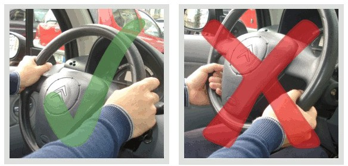
Vi ricordiamo che l'inclinazione e la profondità del volante devono essere regolate in relazione all'altezza del conducente e che il volante deve essere impugnato mettendo entrambe le mani in corrispondenza delle razze (ossia dei raggi del volante). Pertanto, in base a quanto appena detto, se il volante fosse un orologio, percorrendo un rettilineo, le mani dovrebbero stare alle ore 9:15 (come visibile dalla foto in alto).
Impianto di scarico
Passiamo, dunque, all'impianto di scarico. L'impianto di scarico ha lo scopo di:
ridurre l'inquinamento atmosferico causato dai gas di scarico del veicolo, convogliando i gas di scarico verso l'esterno dopo averne abbassato la temperatura, la pressione e la tossicità;
ridurre la rumorosità del veicolo. La marmitta deteriorata, infatti, aumenta l'inquinamento acustico prodotto dai veicoli a motore e, pertanto, deve essere sostituita con un'altra, che deve essere di tipo approvato per quel tipo di veicolo.
Pertanto, affinché l'impianto di scarico faccia bene il suo dovere, i suoi componenti (ossia il catalizzatore, il tubo di scarico, il silenziatore o la marmitta) devono essere mantenuti sempre efficienti e non possono essere modificati o manomessi, ne tantomeno riparati personalmente, neanche se provvisoriamente.
Elementi costitutivi dei veicoli a due ruote
Passiamo, infine, ad alcuni importanti elementi costitutivi dei veicoli a due ruote come l'interruttore di emergenza per lo spegnimento del motore, la catena di trasmissione, il controllo del livello dell'olio e quello del liquido dei freni.
Interruttore di emergenza per lo spegnimento del motore nei veicoli a due ruote
Partiamo, quindi, dal primo elemento di cui abbiamo parlato poc'anzi, ossia l'interruttore di emergenza per lo spegnimento del motore. Nei veicoli a motore a due ruote è possibile spegnere il motore non solo tramite la chiave d'accensione ma anche tramite l'interruttore di emergenza, che si trova sul manubrio (come visibile dalla foto in alto).
Questo interruttore è di estrema importanza poiché permette lo spegnimento del motore senza staccare le mani dal manubrio. Diventa, quindi, indispensabile quando bisogna spegnere il motore ma ci si trova su una strada a forte pendenza e le mani sono occupate sulle leve di comando.
Pertanto se l'interruttore di emergenza dovesse essere guasto, va riparato al più presto! Vi ricordiamo, infine, che nei veicoli a motore a due ruote, per lo spegnimento del motore nelle situazioni ordinarie, è preferibile utilizzare la chiave di accensione, anziché l'interruttore di emergenza, e che per poter avviare il motore, è necessario che l'interruttore sia posizionato su ON/Avviamento.
Catena di trasmissione nei veicoli a due ruote
Quanto alla catena di trasmissione, dovete sapere che nei veicoli a motore a due ruote, la catena di trasmissione collega il pignone motore (ossia un piccolo ingranaggio collegato al motore) alla corona della ruota (ossia un ingranaggio posto sulla ruota posteriore) e la sua rottura improvvisa può causare il bloccaggio della ruota posteriore, con conseguente perdita del controllo del veicolo. A tal proposito occorre sapere che la catena di trasmissione dei veicoli a motore a due ruote, se non lubrificata, può essere soggetta a rottura.
Pertanto, in base a quanto appena detto, è opportuno verificare periodicamente che la catena di trasmissione sia ben lubrificata, che presenti una corretta tensione e che non mostri segni d'usura. Se dovesse presentarsi quest'ultima ipotesi, ossia la catena di trasmissione mostra segni di usura, occorre sostituirla immediatamente insieme al pignone motore e alla corona della ruota.
Controllo del livello dell'olio e del liquido dei freni nei veicoli a due ruote
Passiamo, dunque, al controllo del livello dell'olio e del liquido dei freni nei veicoli a due ruote. Sui motocicli è necessario verificare periodicamente i livelli di olio motore e liquido freni. Per quanto riguarda il livello del liquido freni, quest'ultimo si verifica controllando l'apposita vaschetta trasparente.
Mentre per quanto riguarda il livello dell'olio motore, quest'ultimo deve essere controllato a veicolo perfettamente orizzontale, poggiato con le ruote a terra (e non sul cavalletto) e dopo aver spento il motore da alcuni minuti. Occorre sapere, inoltre, che in alcuni motori di motocicli, il livello dell'olio motore può essere controllato da un'apposita finestrella posta sulla coppa motore.
Conclusione
A questo punto sentiamo di darvi un consiglio. Chiedete ad un vostro parente, o conoscente, di farvi perlustrare la sua auto al fine di vedere personalmente tutte le componenti meccaniche di cui abbiamo parlato nel corso di questa lezione. Pertanto avvicinatevi all'auto ed osservate sia i tergicristalli anteriori che quelli posteriori alla ricerca delle spazzole, ossia di quegli elementi di gomma che spazzano neve e pioggia dal parabrezza e che, quando consumati, vanno sostituiti.
Quindi aprite il vano motore (visibile nella foto in alto) per vedere dove si trova il serbatoio del dispositivo lavacristallo e quello del liquido idraulico dei freni. Mettetevi alla ricerca della ruota di scorta, del cric ecc. (in genere nel bagagliaio) e delle catene da neve. Quindi aprite la portiera per dare un'occhiata al freno di servizio (ossia il pedale che si trova al centro, sotto lo sterzo) e il freno di stazionamento (ossia la leva che si trova tra i due sedili anteriori).
A questo punto passate a misurare lo spessore del battistrada e poi mettetevi alla ricerca di sospensioni, ammortizzatori (guardando dietro le ruote in alto), marmitta ecc. Questo esercizio vi aiuterà a ricordare meglio le cose dette nel corso di questa lezione poiché potrete dare un volto a termini (come sospensioni, ammortizzatori ecc.) che altrimenti conoscereste solo a livello teorico. A questo punto non vi resta che passare all'ultimissima lezione di Teoria Patente B ;) su Stabilità e tenuta di strada, comportamenti e cautele di guida.
Stabilità e tenuta di strada, comportamenti, cautele di guida
Eccoci giunti all'ultima lezione di Teoria Patente B! A questo punto desideriamo farvi un regalo e cosa c'è di meglio di una lezione non breve, ma brevissima? ;) Dopo avervi parlato degli Elementi costitutivi del veicolo in questa lezione parleremo di Stabilità e tenuta di strada, comportamenti e cautele di guida, iniziando proprio dai comportamenti e cautele di guida.
Comportamenti e cautele di guida
Comportamenti da adottare dopo un incidente se c’è rischio o principio di incendio
Dopo un incidente, se c'è un rischio d'incendio del veicolo è opportuno spegnere il quadro elettrico girando la chiave di accensione e se c'è un principio d'incendio del veicolo, in mancanza di estintore si può utilizzare una coperta bagnata per spegnere le fiamme, oppure si può gettare sabbia o terra alla base delle fiamme.
Comportamenti che riguardano la sicurezza da adottare durante la guida
Per quanto riguarda i comportamenti che riguardano la sicurezza da adottare durante la guida, è consigliabile:
non sistemare oggetti sotto il sedile del conducente per evitare che, scivolando durante la marcia, vadano ad intralciare i movimenti dell'autista;
inserire il dispositivo di sicurezza che impedisce l'apertura delle portiere dall'interno del veicolo, quando si trasportano bambini;
utilizzare il climatizzatore, anche nel periodo invernale, per sbrinare velocemente il parabrezza.
Vi ricordiamo, inoltre, che tutte le azioni che potrebbero portare alla distrazione, come inviare un sms oppure usare il telefono cellulare senza l'ausilio del "viva-voce" o dell'auricolare, sono assolutamente vietate durante la guida.
Stabilità e tenuta di strada
A questo punto non vogliamo spaventarvi parlandovi di coefficienti e forze varie che sembrano più far parte di un corso di fisica che di una lezione di teoria della patente. Pertanto è bene, prima, fare delle considerazioni puramente logiche. Sarà per voi più facile capire il resto ;)
Parlando di stabilità e di tenuta di strada non possiamo non parlare anche dell'aderenza, anche nota come forza aderente. La forza aderente (ossia l'aderenza) consente al veicolo di muoversi e di percorrere la traiettoria voluta, opponendosi allo slittamento dello pneumatico sull'asfalto, e risulta maggiore se l'asfalto è asciutto, pulito e rugoso mentre diminuisce se è bagnato oppure se la strada è sporca di olio. Logico no?
Forze che agiscono sul veicolo in curva
Inoltre la forza aderente (ossia l'aderenza) agisce anche mentre il veicolo percorre una curva, opponendosi allo slittamento verso l'esterno della curva, causato dalla forza centrifuga. Cos'è la forza centrifuga? Spiegandolo in maniera semplice possiamo dire che ogni oggetto che compie una rotazione è soggetto ad una forza in direzione opposta rispetto all'asse di rotazione. Beh, questa forza è la forza centrifuga.
In macchina con un vostro conoscente avete mai fatto caso che mentre l'auto svolta a destra voi siete sospinti verso sinistra e, viceversa, mentre svolta a sinistra voi siete sospinti verso destra? Beh a spingervi dalla parte opposta è proprio la forza centrifuga. Stupefacente, no?
Avrete notato anche che se l'auto va piano, nello svoltare, la spinta è leggera mentre se va a forte velocità la spinta è maggiore. Ciò perché la forza centrifuga aumenta con l’aumentare della velocità e, pertanto, quando il veicolo percorre una curva, la velocità eccessiva può provocarne il ribaltamento o lo sbandamento.
Fattori che favoriscono il ribaltamento di un veicolo in curva
Il ribaltamento in curva del veicolo è favorito anche da un carico posto in alto, o non stabilmente fissato, da una ridotta distanza fra ruote dello stesso asse (anche nota come carreggiata stretta) oppure da un raggio di curvatura della strada piccolo (ossia in caso di curva stretta).
Coefficiente di aderenza
Passiamo, dunque, al coefficiente di aderenza. Questo coefficiente (ossia questo numero) dipende dai materiali della ruota e del fondo stradale, dalla velocità del veicolo, dalla presenza di umidità e dalla presenza di materiale interposto che non permette un contatto perfetto con il fondo stradale (esempio foglie, olio ecc.).
Ad esempio uno pneumatico su asfalto asciutto avrà un coefficiente di aderenza di 0,6 - 0,9 mentre uno pneumatico su asfalto bagnato avrà un coefficiente di 0,4 - 0,5. Pertanto, se il coefficiente di aderenza è basso bisogna ridurre la velocità poiché il coefficiente di aderenza basso favorisce lo slittamento in curva ed aumenta lo spazio di frenatura, rendendo pericolose le brusche frenate.
Aderenza dei motocicli
Anche chi conduce un motociclo deve considerare che l'aderenza dipende dal fondo stradale e che diminuisce sulle rotaie e sulle strisce della segnaletica orizzontale, soprattutto in caso di pioggia.
Conclusione
A questo punto già sapete quale consiglio stiamo per darvi :) Esercitatevi tantissimo con i quiz su Elementi costitutivi del veicolo, manutenzione ed uso, stabilità e tenuta di strada, comportamenti e cautele di guida per verificare che questo argomento sia stato ben compreso. E solo quando vedrete che gli errori saranno sempre zero, o al massimo 1, potrete passare alla simulazione d'esame con i quiz patente b.
Giunti al termine di questa esperienza non possiamo che congratularci con voi per la vostra determinazione. Nel susseguirsi delle varie lezioni molti sono stati i ringraziamenti che ci sono giunti tramite commenti e messaggi privati. In realtà a dovervi ringraziare siamo noi che dalle vostre belle parole abbiamo preso la forza per continuare a fare nel migliore dei modi il nostro lavoro.
A questo punto non ci resta che salutarvi, ma prima sentiamo di dovervi dare un consiglio: da questa esperienza avete avuto modo di capire che attraverso la costanza e la determinazione i risultati arrivano sempre. Pertanto portate la stessa determinazione in tutti i campi della vostra vita e lottate sempre per ciò che volete. Solo così potrete vivere una vita felice e piena di soddisfazioni. A tutti voi: un grosso in bocca al lupo! E non solo per l'esame ma anche, e soprattutto, per il vostro futuro ;)
Strada 2
Classificazione strade 11
Definizione e classificazione dei veicoli 20
Pannelli retroriflettenti sui veicoli 26
Doveri del conducente 33
Comportamenti da tenere verso gli utenti della strada 39
Segnali di Pericolo 49
Segnali di Pericolo (parte 2) 58
Segnali di Pericolo (parte 3) 67
Segnali di Prescrizione 77
Segnali di Divieto 80
Segnali di Divieto (parte 2) 90
Segnali di Divieto (parte 3) 98
Segnali di Obbligo 109
Segnali di Obbligo (parte 2) 118
Segnali di Precedenza 127
Segnaletica Orizzontale 137
Segnaletica Orizzontale (parte 2) 146
Segnalazioni Semaforiche 157
Segnalazioni da parte degli agenti del traffico 168
Segnali di Indicazione 177
Segnali di Indicazione (parte 2) 187
Segnali di Indicazione (parte 3) 196
Segnali di Indicazione (parte 4) 205
Segnali Temporanei e di Cantiere 213
Segnali Complementari 220
Pannelli integrativi dei segnali 227
Pannelli Integrativi dei segnali (parte 2) 236
Limiti di velocità, pericolo e intralcio alla circolazione 246
Limiti di velocità, pericolo e intralcio alla circolazione (parte 2) 255
Distanza di Sicurezza 264
Norme sulla circolazione dei veicoli 273
Norme Sulla Circolazione Dei Veicoli (parte 2) 282
Ordine Di Precedenza Agli Incroci 296
Ordine Di Precedenza Agli Incroci (parte 2) 306
Norme Sul Sorpasso 314
Fermata, sosta, arresto e partenza 323
Norme Varie 332
Norme Varie (parte 2) 340
Uso delle luci, Spie e Simboli 357
Cinture di sicurezza, Airbag, sistemi di ritenuta per bambini, casco protettivo e abbigliamento di sicurezza 368
Patenti di guida, sistema sanzionatorio, documenti di circolazione, uso di lenti e altri apparecchi 377
Incidenti stradali e comportamenti in caso di incidente 388
Guida in relazione alle qualità e condizioni fisiche e psichiche, alcool, droga, farmaci e primo soccorso 398
Responsabilità civile, penale e amministrativa, assicurazione r.c.a. e altre forme assicurative legate al veicolo 408
Limitazione dei consumi, rispetto dell'ambiente e inquinamento 416
Elementi costitutivi del veicolo 422
Stabilità e tenuta di strada, comportamenti, cautele di guida 437